Nghệ Thuật Đánh Đôi Trong Quần Vợt
Bản dịch Việt ngữ này chỉ dùng cho mục đích học tập cá nhân, phi thương mại. Bản quyền tác phẩm gốc — văn bản và hình ảnh — thuộc về tác giả và nhà xuất bản.
Lời Giới Thiệu & Mở Đầu
ĐÃ SỬA ĐỔI VÀ CẬP NHẬT
REVISED AND UPDATED
Cùng hai tác giả: The Game of Singles in Tennis • Stroke Production in the Game of Tennis
By the same authors: The Game of Singles in Tennis Stroke Production in the Game of Tennis
Bản quyền © 1956, 1968, 1977 thuộc William F. Talbert và Bruce S. Old. Bảo lưu mọi quyền, kể cả quyền sao chép cuốn sách này hoặc bất kỳ phần nào của nó dưới bất cứ hình thức nào. ẤN BẢN THỨ TƯ 2 AGB Br 9171 soya kd ISBN: 0-397-00529-6 ISBN: 0-397-01180-6 (bìa mềm) Số Thẻ Danh mục của Thư viện Quốc hội: 68-14133 In tại Hoa Kỳ
Copyright © 1956, 1968, 1977 by Wit11aAM F. Ta.perr and Bruce S. OLp. All rights reserved, including the right to reproduce this book or portions thereof in any form. FOURTH EDITION 2 AGB Br 9171 soya kd ISBN: 0-397-00529-6 ISBN: 0-397-01180-6 (pbk. ) Library of Congress Catalog Card Number: 68-14133 Printed in the United States of America
Tặng NANCY và BUNNY
To NANCY and BUNNY
Được số hóa bởi Internet Archive vào năm 2018 với nguồn tài trợ từ Kahle/Austin Foundation https://archive.org/details/gameofdoublesint0O00Otalb
Digitized by the Internet Archive in 2018 with funding from Kahle/Austin Foundation https://archive.org/details/gameofdoublesint0O00Otalb
Tôi đọc The Game of Doubles in Tennis lần đầu khi khoảng mười sáu tuổi. Tôi bị huấn luyện viên quần vợt của mình, Tiến sĩ R. W. Johnson, ra lệnh phải đọc nó. Ông đã đọc cuốn sách, và ở tuổi của ông lúc bấy giờ (khoảng năm mươi) ông thấy đó là một tác phẩm vô cùng giá trị, giúp ông thắng phần lớn các trận đánh đôi của mình trước những người bạn thân. Lẽ ra tôi nên đọc nó thêm vài lần nữa. Nỗi thất vọng lớn nhất trong sự nghiệp quần vợt của tôi là không có được một thành tích đánh đôi đáng ghen tị. Hewitt-McMillan, Newcombe-Roche, Emerson-Stolle, Lutz-Smith, Trabert-Seixas, Hoad-Rosewall—một vài trong số những cặp đánh đôi vĩ đại mà tôi từng xem thi đấu—đã vận dụng, dù ý thức được hay không, những nguyên tắc được trình bày rõ ràng trong cuốn sách này. Có lẽ những tay vợt ấy đã đọc những cuốn sách tương tự hoặc được dạy những gì họ biết. Nhưng có một điều rõ ràng: có một môn học tên là "Đánh đôi", và nó có thể học được. Bạn đang cầm trên tay cuốn sách giáo khoa ấy. Hãy đọc nó rồi ra sân thử áp dụng. Bạn sẽ ngạc nhiên một cách thú vị. Tháng Sáu, 1976
I first read The Game of Doubles in Tennis when I was about sixteen years old. I was ordered to do so by my tennis coach, Dr. R. W. Johnson. He had read it, and at his age at the time (about fifty) he found it a most valuable work, which enabled him to win most of his doubles matches against his cronies. I should have read it a few more times. The biggest disappointment in my tennis career is the lack of an enviable doubles record. Hewitt-McMillan, Newcombe-Roche, EmersonStolle, Lutz-Smith, Trabert-Seixas, Hoad-Rosewall—a few of the great doubles teams I have seen play—knowingly or unknowingly utilize the principles so clearly put forth in this book. Perhaps these players read similar books or were taught what they know. But one thing is clear: there is such a course called “Doubles” and it can be learned. You are holding the textbook in your hands. Read it and then go out and try it. You'll be pleasantly surprised. June, 1976
Phối hợp đồng đội là chìa khóa cho lối đánh đôi thành công, và cặp đôi Bill Talbert cùng Bruce Old đã giao cho chúng ta một cú ace trong The Game of Doubles in Tennis. Những cuốn sách như thế này cực kỳ hiếm. Cú cướp bóng (poach), bóng bổng (lob), giao bóng, đánh lưới, đánh sân sau—mọi thứ bạn muốn học về đánh đôi đều có ở đây. Cách tiếp cận trò chơi của hai tác giả rất thực tế, và những chỉ dẫn của họ dễ hiểu và dễ đưa vào thực hành. Nếu tôi có vẻ nhiệt tình với The Game of Doubles, ấy là vì tôi thực sự tin rằng đây là một cuốn sách tuyệt vời mà mọi tay vợt đều có thể hưởng lợi ngay lập tức. Tháng Chín, 1976
Teamwork is a key to successful doubles play, and the team of Bill Talbert and Bruce Old has served us an ace in The Game of Doubles in Tennis. Books like this are all too rare. Poaching, lobbing, serving, net play, back court play—everything you want to learn about doubles is here. The authors’ approach to the game is factual, and their instructions are easy to understand and to put into practice. If I sound enthusiastic about The Game of Doubles, it’s because I sincerely believe that it’s a great book that every player can benefit from immediately. September, 1976
CHƯƠNG TRANG Lời tựa của Arthur Ashe và Virginia Wade 7 LỜI GIỚI THIỆU 13 I. Những Giấc Mơ Ngọt Ngào 17 II. Lịch Sử 23 III. TRÒ CHƠI 30 IV. GIAO BÓNG 46 V. TRẢ GIAO BÓNG 64 VI. Đánh Lưới 95 VII. Đánh Cuối Sân 189 TÓM TẮT 207
CHAPTER PAGE Forewords by Arthur Ashe and Virginia Wade 7 INTRODUCTION 13 I. Sweer DREAMS 17 IJ. History 23 Ill. THe GAME 30 IV. THE SERVE 46 V. THE RETURN OF SERVICE 64 VI. Net Piay 95 VII. Base Line Piay 189 SUMMARY 207
Đây là cuốn sách đầu tiên từng được viết về môn đánh đôi trong quần vợt. Để sinh ra đứa con tinh thần đầy sức sống này đã cần bảy năm dài lao động vất vả. Thư viện Quốc hội cùng các Thư viện Công cộng Boston, New York và Cleveland đã được tra cứu từ trên xuống dưới. Sau đó, dữ liệu về vô số trận đấu đã được tập hợp lại để có thể trình bày những sự thật, chứ không chỉ là những cảm nhận. Hai tác giả tha thiết hy vọng cuốn sách này sẽ làm tăng thêm niềm vui của bạn khi chơi và khi xem môn đánh đôi tuyệt vời này. Có lẽ một ngày nào đó nó sẽ giúp bạn giành được một danh hiệu quần vợt. Thật viển vông nếu cho rằng nó có thể giúp Hoa Kỳ giành Cúp Davis vào một năm nào đó—nhưng ít nhất, chúng ta cũng có thể mơ về điều ấy. Trong đánh đôi, chiến lược và chiến thuật quan trọng ngang với việc sản xuất cú đánh. Để trình bày rõ ràng hơn một số miếng đánh và vị trí, phần văn bản được bổ sung bằng nhiều sơ đồ. Danh sách các ký hiệu ở trang sau giúp người đọc theo dõi các miếng đánh. Một miếng đánh hoàn chỉnh, được sơ đồ hóa trong Hình 1, cho thấy một chuỗi cú đánh xảy ra quá thường xuyên và có thể xếp vào một trong những tội lỗi trọng đại của những tay đánh đôi cuối tuần. Như hầu hết các tội lỗi, tội này không mới, đã được vô số cây bút chỉ ra từ tận năm 1900; thế mà ngày nay nó vẫn được phạm với mức độ đều đặn đáng kinh ngạc. Kẻ phạm tội là người giao bóng, tay vợt A. Đáng lẽ tay vợt A phải làm gì? Câu trả lời cho điều đó và nhiều câu hỏi khác có thể tìm thấy trong những trang tiếp theo. Tuy không có một cuốn sách nào về đánh đôi, nhưng người ta có thể tìm thấy nhiều cuốn ở gần như bất kỳ thư viện công cộng nào về cơ chế sản xuất cú đánh trong quần vợt. Vì lý do đó, cuốn sách này sẽ không cố đề cập đến chủ đề ấy.
This is the first book ever written on the game of doubles in tennis. To bear this bouncing baby has taken seven long years of hard labor. The Library of Congress and the Boston, New York, and Cleveland Public Libraries were researched from top to bottom. Then data were assembled on numerous matches in order that facts, not mere impressions, could be presented. It is the fond hope of the authors that this book will enhance your enjoyment of playing and watching this great game of doubles. Perhaps it may help win you a tennis title one of these days. It would be fantastic to suppose that it might help the United States win the Davis Cup some year—but, at least, we can dream about that. In doubles, strategy and tactics are as important as stroke production. To present more clearly some of the plays and positions, the text is supplemented with many diagrams. A list of symbols, on the following page, helps the reader to follow the plays. A complete play, diagramed in Figure 1, shows a sequence of shots that happens all too often and may be classified as one of the cardinal sins of week-end doubles players. Like most sins, this one is not new, having been pointed out by numerous writers as early as 1900; it is committed even today with amazing regularity. The sinner is the server, player A. What should player A have done? The answer to that and many other questions may be found in the following pages. While there is not one book on doubles, many volumes may be found in almost any public library on the mechanics of stroke production in tennis. For this reason no attempt will be made to cover this subject in this book.

SYMBOLS USED IN DIAGRAMSSYMBOLS USED IN DIAGRAMS
Hình bầu dục đặc biểu thị một tay vợt, và chữ cái nhận diện tay vợt đó. Đường chấm chấm cho thấy đường di chuyển của tay vợt từ vị trí này sang vị trí khác, mũi tên chỉ hướng. Đường liền cho thấy đường bay của bóng, mũi tên chỉ hướng. Đường gạch-chấm cho thấy một cú bóng bổng (lob). Vòng tròn nhỏ cho thấy điểm bóng nảy. Vòng tròn lớn cho thấy điểm ngắm cho một cú đánh. Vòng tròn có ngôi sao cho thấy điểm ngắm cho một cú đặt bóng.
Solid oval denotes tennis player, and letter identifies the player. Dotted line shows the path of player moving from one position to another, the arrow indicating direction. Solid line shows flight of tennis ball, the arrow indicating direction. Dash-dot line shows a lob. Small circle shows bounce point of ball. Large circle shows aim point for a shot. Circle with star shows aim point for a placement.
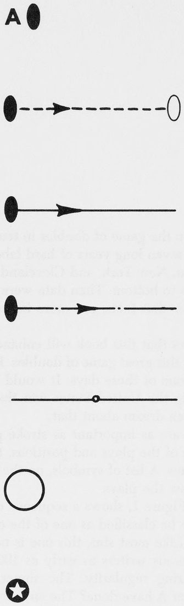
THE OPEN DIAGONALTHE OPEN DIAGONAL
Tay vợt B giao bóng cho người nhận giao bóng M rồi phạm sai lầm đầu tiên và nghiêm trọng nhất: sau khi giao bóng, anh ta không tiến vào vị trí lưới. Người nhận giao bóng M tận dụng điều này bằng cách đánh một cú trả bóng sâu và tiến theo cú đánh của mình vào vị trí lưới, qua đó giành thế tấn công khỏi đội giao bóng. Khi trả bóng, người giao bóng B phạm sai lầm thứ hai khi đánh dọc biên về phía tay vợt N, người đã di chuyển; những chiến thuật sai lầm của đội giao bóng giờ đã lộ rõ. Tay vợt N nhận thấy toàn bộ vùng chéo sân đang rộng mở cho mình. Anh ta chỉ cần di chuyển vài bước và đánh một cú vô-lê chéo sân dễ dàng vào điểm ngắm được chỉ ra để tạo một cú đặt bóng và thắng điểm. Dù tay vợt B không hề phạm một lỗi đánh bóng nào, anh ta đã phạm hai sai lầm chiến thuật khiến đội của mình trông thật ngớ ngẩn và thua điểm. Hình 1
Player B serves to receiver M and then commits his first and most serious mistake: he fails to move in to the net position following his serve. Receiver M takes advantage of this by hitting a deep return and following his shot into the net position, thus taking the offensive away from the serving team. In returning the ball server B makes his second mistake by hitting his shot down the line to player N, who has moved faulty tactics of the serving team are now evident. Player N notes that the whole diagonal area of the court is open to him. All he has to do is move a couple of steps and hit an easy cross-court volley at the aim point shown to make a placement and win the point. While player B has made not a single error, he has committed two tactical mistakes which have resulted in making his team look foolish as well as losing the point. Figure |
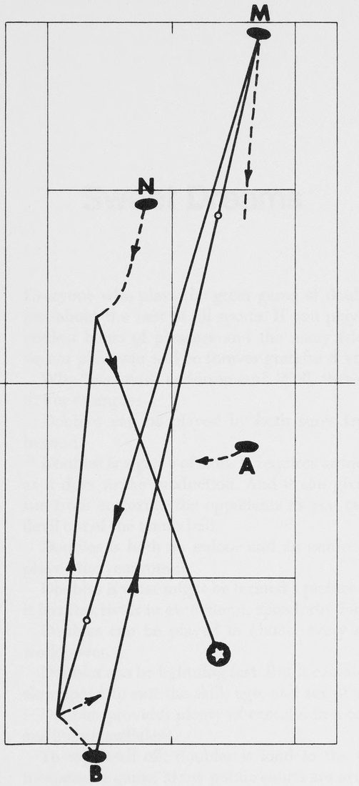
1. Những Giấc Mơ Ngọt Ngào
Mọi người chơi môn đánh đôi tuyệt vời trong quần vợt đều nhận ra rằng đây gần như là môn thể thao hay nhất trong tất cả các môn. Nếu bạn chơi nó, bạn đã biết những giờ phút vui thú bất tận và nhiều tình bạn mà nó mang lại. Nếu bạn chưa chơi, bạn sẽ mãi mãi biết ơn nếu bắt đầu ngay từ bây giờ. Vì sao lại có lời tán dương hào phóng này? Chà, có rất nhiều lý do. Ví dụ: Đánh đôi có thể chơi bởi cả hai giới từ sáu đến sáu mươi tuổi, và hơn thế nữa. Đánh đôi là môn chơi kỹ năng. Nó đòi hỏi suy nghĩ và tính toán nhiều ngang với việc sản xuất cú đánh. Và nó có thể mang lại cho bạn niềm vui lớn ngang—hoặc hơn—khi lừa được đối thủ so với khi đập bóng quần vợt đến long trời lở đất. Đánh đôi vừa là môn chơi trong nhà vừa ngoài trời, nên có thể chơi quanh năm. Đánh đôi là thứ có thể gọi là môn thể thao đẹp mắt. Là môn thể thao cho khán giả, nó ít có đối thủ về kịch tính, tốc độ, nhịp điệu và phối hợp đồng đội. Đánh đôi có thể chơi ở gần như mọi thành phố ở mọi quốc gia trên thế giới. Đánh đôi có thể nhanh như chớp. Nhưng nó cũng có thể chơi ở tốc độ trung bình hoặc chậm để phù hợp với kỹ năng, tuổi tác và giới tính của người chơi. Đánh đôi mang lại nhiều vận động trong một khoảng thời gian thuận tiện—một giờ là đủ. Và trên hết, đánh đôi thân thiện với người nộp thuế vì đây là môn chơi rẻ. Có nhiều sân công cộng, và dụng cụ cần thiết tối thiểu và dễ mang theo bất cứ nơi đâu bạn đến.
Everyone who plays the great game of doubles in tennis realizes it is just about the best of all sports. If you play it, you already know the endless hours of pleasure and the many friendships it brings. If you do not play, you will be forever grateful if you begin right now. Why this lavish endorsement? Well, there are plenty of reasons for it. For example: Doubles can be played by both sexes from six to sixty, and well beyond. Doubles is a game of skill. It requires as much thinking and planning as it does stroke production. And it can give you as much—or more— fun from outfoxing the opponents as you can get from whacking the devil out of the tennis ball. Doubles is both an indoor and an outdoor game, so that it can be played the year round. Doubles is what might be termed a picture sport. As a spectator sport it has few rivals in excitement, speed, rhythm, and teamwork. Doubles can be played in almost every city in every country the world over. Doubles can be lightning fast. But it can also be played at medium or slow speed to suit the skill, age, and sex of the players. Doubles provides plenty of exercise in a convenient length of time— one hour is sufficient. To top it all off, doubles is kind to the taxpayer because it is an inexpensive game. Many public courts are available, and the equipment needed is minimum and easy to carry with you wherever you go.
Nhưng vì sao lại cần một cuốn sách riêng về đánh đôi? Đánh đôi không chỉ là đánh đơn với hai người mỗi bên lưới thay vì một người. Nó, để trích lời Helen Wills, là "một môn chơi hoàn toàn độc lập". Vậy mà cho đến nay chưa từng có một cuốn sách nào về đánh đôi. Vì khoảng một nửa số quần vợt được chơi là đánh đôi, nên cuốn sách đầu tiên đã quá muộn màng. Việc thiếu một cuốn sách về những nguyên tắc cơ bản của đánh đôi đã gây tổn hại cho sự phát triển của môn chơi này. Ở Hoa Kỳ ngày nay, các tay vợt thường không bắt đầu nắm được những điểm tinh tế của đánh đôi cho đến khi họ khoảng ba mươi lăm tuổi. Có hai lý do: những người ở độ tuổi này bắt đầu chơi đánh đôi nhiều hơn đánh đơn, và họ cũng bắt đầu suy nghĩ nhiều hơn về môn chơi. Rồi đột nhiên điều đó xảy ra! Họ bừng tỉnh nhận ra rằng đánh đôi thực sự là một môn chơi hay hơn đánh đơn hay bất kỳ môn thể thao nào khác mà bạn có thể kể ra. Rồi họ hối tiếc vì sự nhận thức ấy không đến với họ sớm hơn, vì niềm vui họ đã bỏ lỡ, và những cú đánh cùng kỹ thuật ưu việt lẽ ra họ đã có thể phát triển nếu bắt đầu sớm hơn. Hãy thử nghĩ xem, có lẽ bạn đã có thể trở thành một nhà vô địch! Nếu không phải nhà vô địch quốc tế, thì ít nhất cũng là nhà vô địch của thị trấn, câu lạc bộ, khu nghỉ mát mùa hè, trường học hay trại hè. Đúng vậy, giá như bạn bắt đầu chơi sớm hơn và học được chút gì đó về môn chơi. Chữ "giá như" nhỏ bé ấy từng được gọi là từ buồn thảm nhất trong bất kỳ ngôn ngữ nào. Vâng, cuốn sách này, hy vọng rằng, sẽ xóa bỏ chữ "giá như" bằng cách cho bạn nguồn cảm hứng để chơi và kiến thức để tận hưởng lối đánh đôi hay. Đúng thế, thay vì một nhà vô địch "suýt thì", có lẽ bạn sẽ có thêm động lực để giành một chiếc cúp bạc. Ai biết được, có thể một ngày nào đó bạn còn chơi đánh đôi ở Cúp Davis hay Cúp Wightman! Việc nghe những bậc thầy nghĩ gì về một môn chơi luôn thú vị, và đôi khi có sức thuyết phục, với cả người chơi trẻ lẫn người chơi già. Hãy xem một vài trích dẫn tiêu biểu. Vincent Richards nói thế này về môn đánh đôi: "Không gì ngoạn mục hơn một trận đánh đôi đẳng cấp; thậm chí hơn cả đánh đơn, môn đánh đôi là một phép thử về tài cầm quân và sự khéo léo, thách thức mức độ tập trung và tài trí cao nhất của người chơi." Một số người hâm mộ nhiệt thành của môn đánh đơn có thể coi ý kiến này là hơi thiên lệch, vì Richards nổi bật chủ yếu ở đánh đôi. Tuy nhiên, một số tay đánh đơn hay nhất trong lịch sử còn đi xa hơn trong việc ca ngợi đánh đôi: J. Donald Budge: "Về niềm vui thuần túy, sự phấn khích và thỏa mãn, không gì sánh bằng một trận đánh đôi hay giữa hai đội ngang tài ngang sức ở đẳng cấp hàng đầu. Đánh đôi mang lại nhiều niềm vui hơn, cho cả người chơi lẫn khán giả." Fred Perry: "Chắc chắn tôi đồng ý rằng lối chơi bốn người, khi được
But why a special book on doubles? Doubles is not just singles with two players on each side of the net instead of one. It is, to quote Helen Wills, “a game entirely by itself.” Yet, to date there never has been a book on doubles. Since about half of all tennis played is doubles, the first book is long overdue. The lack of a book on the fundamentals of doubles has hurt the development of the game. In the United States today tennis players normally do not start to grasp the fine points of doubles until they reach the age of about thirty-five. There are two reasons for this: people in this age group start to play more doubles than singles, and they also start to think more about the game. Then suddenly it happens! With a bang they wake up to the fact that doubles is really a better game than singles or any other sport you may care to mention. Then they regret that this realization did not come to them earlier, because of the fun they have missed, and the superior strokes and techniques they might have developed, had they started sooner. Just think, maybe you could have been a champion! If not an international champion, at least the town or club or summer resort or school or camp champion. Yes, if only you had started playing sooner and had learned something about the game. That little word “if” has been called the saddest word in any language. Well, this book, it is hoped, will eliminate the “if” by giving you the inspiration to play and the knowledge to enjoy good doubles. Yes, instead of a could-have-been champion perhaps you will get that extra lift to win a silver cup. Who knows, you might even play Davis Cup or Wightman Cup doubles some day! It is always interesting, and sometimes convincing, for players young and old to hear what some of the masters think about a game. Let’s take a look at some typical quotations. Vincent Richards has this to say of the game of doubles: “Nothing is more spectacular than a first-class doubles match; even more than singles play, the doubles game provides a test of generalship and resourcefulness that challenges the utmost concentration and ingenuity of the player.” Some ardent admirers of the game of singles may consider this opinion to be slightly prejudiced, since Richards was a tennis standout largely in doubles. However, some of the best singles players in history go even further in their praise of doubles: J. DonaLp Bunce: “For sheer enjoyment, thrills, and satisfaction you cant beat a good game of doubles between two evenly matched teams of the first rank. There is more fun in doubles, both for the players and the spectators.” FreD Perry: “Certainly I agree that the four-handed game, well
SWEET DREAMSSWEET DREAMS
được chơi đúng cách, là đỉnh cao nghệ thuật của quần vợt trên sân cỏ." Bill Tilden: "Đánh đơn là môn của trí tưởng tượng, đánh đôi là môn của những góc độ chính xác." René Lacoste: "Chính nhờ những quan niệm hiện đại về vị trí trên sân trong đánh đôi mà một trận đánh đôi thường được coi là hấp dẫn hơn, thú vị hơn và đa dạng hơn một trận đánh đơn." Maurice McLoughlin: "Tôi dám nói rằng đánh đôi đòi hỏi sự đa dạng cú đánh lớn hơn..." Cuốn sách này nhằm cải thiện lối đánh đôi cho cả ngôi sao quốc tế, người chơi cuối tuần hay người mới nhập môn thô kệch nhất. Nó bao quát lịch sử môn chơi, khung tổng thể của đánh đôi, giao bóng, trả giao bóng, đánh lưới, đánh cuối sân và cuối cùng là phần tóm tắt. Việc sản xuất cú đánh, như đã nói, sẽ không được bàn đến vì đã có nhiều cuốn sách xuất sắc, minh họa đầy đủ được viết về chủ đề này. Vì đánh đôi là môn của chiến thuật phức tạp và phối hợp đồng đội, nên việc nghiên cứu nó buộc phải đi vào những gì thoạt đầu có vẻ rất chi tiết. Nhưng phần thưởng cho việc theo đuổi những chi tiết ấy thật lớn lao. Nếu chịu khó áp dụng, lối chơi của bạn sẽ tiến bộ thêm "mười lăm" và niềm vui của bạn thêm "ba mươi". Bạn sẽ không phạm những sai lầm rõ ràng; bạn cặp của bạn sẽ không còn trừng mắt nhìn bạn; và những pha bóng qua lại sẽ dài hơn và kịch tính hơn. Dù bạn và bạn cặp chỉ là những doanh nhân già mệt mỏi, bạn vẫn có thể khiến hai tay vợt trẻ bảnh bao vào chung kết đơn cấp câu lạc bộ trông hơi nực cười trong môn chơi này. Đúng vậy, thế giới đầy rắc rối này thật sự sẽ trở nên tươi sáng hơn. Để khơi gợi thêm khẩu vị của bạn một chút, chúng tôi quyết định chọn cho bạn thưởng thức đội đánh đôi trong mơ của mọi thời đại. Lựa chọn của chúng tôi là George M. Lott, Jr., của Hoa Kỳ hoặc John E. Bromwich của Úc là chiến thuật gia hàng đầu, và J. Donald Budge hoặc John A. Kramer của Hoa Kỳ là tay chơi sức mạnh hàng đầu. Lott và Bromwich là những bậc thầy vĩ đại của môn đánh đôi. Họ chủ yếu là những người kiến tạo miếng đánh. Nói cách khác, họ dùng tư duy, nghiên cứu, sự khéo léo trên sân, sự đa dạng cú đánh, sự tinh tế, xoáy, chiến thuật, động tác giả, những cú đánh gài bẫy, sự phán đoán trước và những toan tính được hoạch định kỹ lưỡng để buộc đối thủ hoặc trả bóng yếu ớt hoặc để lộ sơ hở. Tất cả những gì các bậc thầy này cần ở một bạn cặp để tạo nên một đội trong mơ là một tay chơi sức mạnh, cao lêu nghêu, biết tận dụng tối đa mọi sơ hở mà họ tạo ra. Và chưa từng có hai tay vợt nào bước lên sân đánh đôi mà sánh được với sự kết hợp giữa sức mạnh nghiền nát và lối đánh đôi vững chắc của Budge và Kramer. Những cú thuận tay và cú trên đầu tàn phá của họ cho phép họ kết thúc gần như mọi thứ, và những cú trái tay nổi tiếng khiến họ mạnh mẽ không kém ở bên đó. Chỉ cần hai năm luyện tập và thi đấu cùng nhau để phát triển sự phối hợp đồng đội vô cùng quan trọng ấy, tổ hợp trong mơ này hẳn đã bất bại. Khi được thông báo về việc mình được chọn, bốn tay vợt vĩ đại này đã vui lòng gửi đến những nhận xét ngắn gọn về môn chơi. Sự thông thái trong lời lẽ của họ sẽ càng trở nên rõ ràng khi bạn đi vào những chương tiếp theo. "Để chọn ra tay đánh đôi hoàn hảo, hay trong mơ, dĩ nhiên có nhiều điều cần tìm kiếm. Tuy nhiên, sau khi suy nghĩ rất nhiều, đây là những yêu cầu mà tôi cho là cần thiết. "Không cần phải nói rằng tay vợt này phải sở hữu mọi cú đánh cơ bản, và có lẽ xuất sắc ở một vài cú. Anh ta sẽ quên hẳn việc cố giao bóng ace trừ những dịp hiếm hoi, và tập trung giao bóng một vào sân càng đều đặn càng tốt. Anh ta sẽ luôn đánh vô-lê sâu và vào giữa sân, chỉ dùng hành lang biên khi chúng rộng mở, nhưng ngay cả khi ấy cũng tự ghét mình vì đã làm thế. (Tuy nhiên, lần duy nhất vô-lê sâu không hợp lý là khi cả bốn tay vợt đều đã lên lưới; khi đó một cú đánh ngắn hoặc thấp vào chân đối thủ là câu trả lời cho đến khi bạn có được cú bóng mình muốn kết thúc.) Anh ta phải biết chơi phòng ngự cũng như tấn công. Và anh ta phải có kiểu tính cách khuyến khích việc trò chuyện trong trận: với tôi không gì tệ hơn là có một bạn cặp đánh đôi không chịu 'hò hét cổ vũ'. Hầu như trong bất kỳ trận đấu nào cũng luôn có những lúc mọi thứ không suôn sẻ, và nếu bạn có thể bàn về những điều ấy với bạn cặp một cách chân thành, bạn thường có thể vượt qua chúng." —J. Donald Budge. "Là một tay đánh đôi ở ô bên phải (deuce), tôi cảm thấy để thành công, điều thiết yếu nhất là tay vợt phải hiểu giá trị của những cú trả giao bóng mà anh ta phải thực hiện với độ ổn định đều đặn. "Trả giao bóng quan trọng đến vậy, và khả năng đánh giá sức mạnh của đối thủ trước những cú trả bóng khác nhau là điều thiết yếu. "Người nhận giao bóng phải có khả năng trả bóng dài hoặc chéo góc ngắn hoặc đánh vào giữa sân; và trên hết, thỉnh thoảng anh ta nên lốp bóng (lob) với động tác ngụy trang được kiểm soát. "Để đạt kết quả tốt nhất, nên đón bóng khi bóng đang lên và đánh thấp và nhanh qua lưới, giúp cả bạn và bạn cặp giành được vị trí tấn công ở lưới trước khi người giao bóng kịp vào vùng vô-lê gần lưới. "Tay vợt ở ô bên phải (deuce) nên cố gắng thắng điểm đầu tiên
played, is the art of lawn tennis at its highest.” Brix TILpEN: “Singles is a game of imagination, doubles is a game of exact angles.” RENE Lacoste: “It is owing to modern ideas on court position in doubles that a doubles match is often considered more attractive, more amusing, and more varied than a singles match.” Maurice McLovucuuin: “I venture to say that doubles requires a greater variety of strokes .. .” This book is aimed at improving doubles play for the international star or the week-end player or the rawest beginner. It covers the history of the game, the over-all framework of doubles, the serve, return of service, net play, base line play and, finally, a summary. Stroke production, as we have said, will not be discussed because many excellent, well-illustrated books have already been written on the subject. Since doubles is a game of complex tactics and teamwork, a study of it must go into what may seem at first to be great detail. But the rewards for following this detail are great. With application your game should improve by “fifteen” and your enjoyment by “thirty.” You will not commit obvious mistakes; your partner will no longer glare at you; and the rallies will be more prolonged and exciting. Even if you and your partner are tired old businessmen, you can make two dashing young club singles finalists look a little ridiculous at the game. Yes, this troubled world will truly become a sunnier spot. To whet your appetite one final bit, we decided to select for your pleasure the dream doubles team of all time. Our choice is George M. Lott, Jr., of the United States or John E. Bromwich of Australia as the top tactician, and J. Donald Budge or John A. Kramer of the United States as the top power player. Lott and Bromwich were the great masters of the game of doubles. They were primarily play makers. In other words they utilized thought, study, court craft, stroke variety, finesse, spin, tactics, fakes, teasers, anticipation, and well-planned maneuvers to force the opponents either into making a weak return or leaving an opening. All these masters needed as a partner to make a dream team was a rangy, power player to take maximum advantage of every opening they established. And no two players ever walked on a doubles court who could match the combination of pulverizing power and sound doubles play of Budge and Kramer. Their devastating forehands and overheads permitted them to put away almost anything, and their famous backhands made them equally overpowering on that side. With two years of practice and play together to develop all-important teamwork this dream combination would have been unbeatable. Upon being notified of their selection, these four great players kindly submitted brief comments on the game. The wisdom of their remarks will become more apparent as you proceed into the chapters which follow. “To choose the perfect, or dream doubles player, there are, of course, many things to look for. However, after giving it much thought, these are the requirements that I would prefer. “It goes without saying that this player must possess all of the basic shots, and perhaps excel in a few. He would forget all about trying to serve aces except for rare occasions, and concentrate on getting his first serve in as consistently as possible. He would at all times play his volleys deep and down the center, using the alleys only when they were wide open, but even then hating himself whilst doing so. (However, the only time deep volleys wouldn't be logical would be if the four players were in at the net; then a short or low shot at the opponent's feet is the answer until you get the one you want to put away.) He should be able to play defensively as well as offensively. And he should have the type of personality that encourages talk during the match: there is nothing worse to me than having a doubles partner that won't ‘talk it up.’ There are always times when things aren't going well in almost any match, and if you can talk about these with your partner in an honest way, you can usually circumvent them.” —J. DonaLp Bunce. “As a first court doubles player, I feel that to achieve success it is most essential for the player to understand the value of service returns which he must make with regular consistency. “Returning-of-service is so important, and ability to appreciate the strength of your opponents against varying returns is essential. “The receiver must be able to make long- or short-angled returns or center court shots; and above all he should lob occasionally with controlled disguise. “For best results the ball should be taken on the rise and played low and quickly over the net, enabling both yourself and partner to gain an offensive position at the net before the server can make the close volleying area. “The player in the first court should endeavor to win the first point
SWEET DREAMSSWEET DREAMS
của mỗi lượt giao bóng, giúp bạn cặp của mình cố gắng củng cố lợi thế và qua đó tạo nên bước đột phá. "Anh ta nên bằng lòng với việc kiên nhẫn tạo sơ hở, trả bóng ổn định và sẵn sàng từ bỏ lối chơi ngoạn mục vì lợi ích tốt nhất là phát triển sự phối hợp đồng đội và sự thấu hiểu với bạn cặp. "Một lời khuyên đúng đắn trong đánh đôi: đừng đánh vào góc trừ khi bạn có thể tạo một cú đặt bóng chắc chắn. Cú đánh vào góc là một sự mạo hiểm, vậy cớ gì phải chịu những rủi ro không cần thiết? Khi còn nghi ngờ, đánh thấp vào giữa sân là cách an toàn nhất để giành thành công." —John E. Bromwich. "Khi bàn về những phẩm chất của tay đánh đôi lý tưởng, tôi muốn nhấn mạnh một yếu tố thường bị bỏ qua quá nhiều. Những người khác đã chỉ ra tầm quan trọng của các cú đánh khác nhau, việc duy trì thế tấn công, v.v. Tôi muốn nhấn mạnh sự phán đoán trước. Điều phân biệt những tay đánh đôi vĩ đại với những người gần đạt đến đẳng cấp vĩ đại là khả năng phi thường trong việc phán đoán trước hành động của đối thủ. Nghệ thuật này chưa được tay đánh đôi trung bình hiểu rõ, đặc biệt là những người trẻ. Nhưng đó là điều có thể và nên được phát triển qua suy nghĩ và luyện tập. "Sự phán đoán trước có bốn phần. Phần thứ nhất nằm ở việc đặt cú đánh của chính bạn. Giả sử bạn và bạn cặp đang ở lưới, còn đối thủ có một người ở lưới và một người đang tiến vào lưới. Bạn đánh một cú vô-lê gần giữa sân sao cho bóng nảy ở vạch giao bóng, buộc đối thủ đang tiến lên phải ổn định tư thế để đánh một cú đánh nền từ điểm đó. Bằng cách đặt cú vô-lê ở đó, bạn đã thực hiện bước đầu tiên trong việc phán đoán trước cú trả bóng, vì bạn phải biết mình cần chờ đợi điều gì. Trong trường hợp này, bạn nên chờ một trong ba loại cú trả bóng—một cú drive dọc giữa sân, một cú dink (bóng nhỏ) vào chân bạn, hoặc một cú bóng bổng (lob) được ngụy trang kỹ lưỡng bay theo chiều dài nhất của sân. "Phần thứ hai nằm ở việc phát triển hiểu biết về phương pháp đánh và những loại cú đánh mà đối thủ sắp đánh bóng dùng nhiều nhất. Điều này bao gồm việc học những động tác lộ ý định trong sản xuất cú đánh, những nét riêng, thói quen và những cú đánh sở trường của đối thủ trong những tình huống chiến thuật nhất định. "Phần thứ ba nằm ở việc tập trung vào những chuyển động của đối thủ khi anh ta đang trong động tác đánh bóng. Bạn nên quan sát vị trí bàn chân, thân người, cánh tay, động tác vung ra sau và cây vợt của anh ta. Những chi tiết này có vẻ phức tạp, nhưng sau khi luyện tập, chúng có thể được nhận ra chỉ trong một cái liếc mắt. Bằng cách đó bạn có thể phát hiện anh ta định thực hiện cú đánh nào trong ba cú.
of each service, enabling his partner to try to force home the advantage and thus effect a breakthrough. “He should be content to work for openings, be consistent with his return and prepared to forsake spectacular play in the best interests of developing teamwork and understanding with his partner. “A sound tip in doubles: do not play an angle unless you can make a sure placement. An angle shot is a risk, so why take unnecessary risks? When in doubt, low down the center is the safest method of gaining success.” —JoHN E. BRoMWICH. “In commenting on the qualifications for the ideal doubles player, I would like to emphasize a factor which is all too often overlooked. Others have pointed out the importance of various strokes, maintaining the offensive, etc. I want to stress anticipation. The thing which separates the great from the near-great doubles players is the uncanny ability to anticipate the actions of their opponents. This art is not well understood by the average doubles player, especially the youngsters. But it is something which can and should be developed through thought and practice. “There are four parts to anticipation. The first is in the placing of your own shot. Suppose you and your partner are at net, and your opponents have one man at net, and one on his way in to net. You hit a volley near the middle of the court that bounces at the service line, so that the advancing opponent must get set to play a ground stroke from that point. By placing your volley there you have taken the first step in anticipating the return because you should know what to look for. In this instance you should look for one of three types of returns— a drive down the center, a dink at your feet, or a well-hidden lob hit over the longest dimension of the court. “The second is in developing knowledge of the method of stroking and types of strokes most used by the opponent about to strike the ball. This involves learning the give-away motions of stroke production, idiosyncrasies, habits, and favorite shots of the opponents under certain tactical conditions. “The third is in concentrating on the motions of the opponent as he is in the act of striking the ball. You should watch the position of his feet, body, arm, backswing, and racquet. These details may appear to be complicated, but after practice they can be noted at a glance. In this way you can detect which one of the three shots he intends to make.
"Điều thứ tư và cũng là cuối cùng là bạn và bạn cặp dịch chuyển vị trí để đón cú trả bóng giờ đây đã được phán đoán trước kỹ càng. Động tác này không thể bắt đầu quá sớm vì nó có thể cho phép đối thủ đổi ý. "Vâng thưa ngài, hãy cho tôi một bạn cặp có 'cảm giác' phán đoán trước và anh ta sẽ tiến một bước dài trên con đường trở thành tay đánh đôi trong mơ." —John A. Kramer. "Theo cách nghĩ của tôi, tay đánh đôi thành công, ngoài những điều cơ bản như đưa giao bóng một vào sân, còn phải có ba lựa chọn cú đánh từ sân sau. Như chúng ta biết, đánh đôi chủ yếu là chuyện giành được một điểm bẻ giao bóng, rồi bám trụ bằng mọi giá. Do đó, chúng ta nên nghĩ ra cách thức và phương tiện để giành được điểm bẻ giao bóng ấy. "Một cách, dĩ nhiên, là nhờ sức mạnh thuần túy, nhưng quá ít người trong chúng ta làm được điều đó, nên cần phải dựa vào sự xảo quyệt và khéo léo. Tôi đề nghị rằng, giống như một cầu thủ bóng chày ném bóng nhanh, bóng xoáy và bóng đổi nhịp, tất cả bằng cùng một động tác, tay quần vợt hãy học cách thực hiện một cú drive thuận tay, một cú bóng bổng (lob) và một cú đánh nhẹ, khêu gợi, giống như cầu thủ bóng chày, bằng cùng một động tác. Với khả năng kiểm soát, và ba cú đánh này được ngụy trang kỹ, anh ta sẽ thấy dễ dàng hơn đáng kể trong việc đẩy đối thủ ra khỏi vị trí lưới đầy lợi thế của họ." —George M. Lott, Jr. Vậy là giờ đây bạn đã có một đội bóng tàn phá để mơ ước noi theo! À, những giấc mơ ngọt ngào!
“The fourth and final thing is for you and your partner to shift position to meet the by-now well-anticipated return. This move can not be started too soon as it might permit the opponent to change his mind. “Yes sir, give me a parner with the ‘feel’ of anticipation and he will have made a long stride toward being the dream doubles player.” —Joun A. KRAMER. “The successful doubles player, to my way of thinking, must have, in addition to the fundamentals such as putting the first serve in play, a three-way choice of shots from the back court. As we know, doubles is mainly a matter of getting a service break, and then hanging on for dear life. Therefore, it behooves us to devise ways and means to obtain that service break. “One way, of course, is through sheer power, but so few of us are able to do that that it is necessary to rely on cunning and cleverness. I suggest that, like a baseball pitcher who throws his fast ball, curve, and change-of-pace ball, all with the same motion, the tennis player learn to make a forehand drive, a lob, and a soft, tantalizing shot, as the baseball pitcher, with the same motion. With control, and these three shots well disguised, he will find it considerably easier to dislodge his opponents from the advantageous net position.” —GEorcE M. Lorr, JR. And so, now you have a devastating team to dream about emulating! Ah, sweet dreams!
2. Lịch Sử
Tất cả bắt đầu ở Anh vào năm 1873. Đó là năm môn quần vợt trên sân cỏ (lawn tennis) được Thiếu tá Walter Clopton Wingfield phát minh. Mô tả về môn chơi lần đầu được ghi lại cho một số bạn bè của ông trong một cuốn sách nhỏ, The Major's Game of Lawn Tennis—đề tặng cho nhóm người tụ họp tại Nantclwyd vào tháng Mười Hai năm 1873. Bản tóm tắt thú vị của ông về môn chơi rất đáng được trích dẫn: "Môn chơi Tennis có thể truy nguyên về thời của người Hy Lạp cổ đại, dưới tên gọi odatpiorixr). Sau đó nó được người La Mã chơi dưới tên gọi 'Pila'. Đó là trò tiêu khiển thời thượng của giới quý tộc Pháp dưới triều vua Charles V, và nó thịnh hành ở Anh ngay từ thời Henry III, và được Gregory mô tả là 'một trong những môn chơi cổ xưa nhất của thế giới Kitô giáo'. "Henry V, Henry VII và Henry VIII đều là những tay chơi tennis, và giờ đây nó chỉ mới mai một vì những khó khăn của môn chơi và chi phí dựng sân. Người phát minh ra 'Lawn Tennis' đã khắc phục được mọi khó khăn ấy; môn chơi này có đầy đủ sự hấp dẫn của 'tennis', và có lợi thế là có thể chơi ngoài trời trong bất kỳ thời tiết nào bởi người ở mọi lứa tuổi và cả hai giới. Khi trời đóng băng cứng, lưới có thể được căng trên mặt băng, và khi người chơi được trang bị giày trượt băng, trò chơi mang một diện mạo mới và mở ra cơ hội thể hiện nhiều vẻ duyên dáng và kỹ thuật. "Croquet, môn đã độc chiếm sự chú ý của công chúng những năm gần đây, thiếu đi sự phấn khích lành mạnh và nam tính của 'Lawn Tennis'. Hơn nữa, môn chơi này có lợi thế là trong khi một người giỏi tennis hoặc racquets sẽ nhanh chóng trở thành một tay chơi thực sự bài bản, thì kẻ mới học nhất cũng có thể học nó trong năm phút đủ tốt cho mọi mục đích thực tế." Wingfield không thể cưỡng lại việc thêm vài lời khuyên: "Hãy đánh bóng nhẹ nhàng, và nhìn kỹ trước khi đánh, để đặt bóng vào góc xa đối thủ nhất. Có thể truyền cho bóng rất nhiều xoáy ngang bằng một cú chạm đúng cách; điều này, cùng với sự cảm nhận tinh tế về lực, góp phần nhiều vào sự tinh tế và kỹ thuật của môn chơi." Thiếu tá Wingfield nộp đơn xin cấp bằng phát minh cho môn chơi vào ngày 23 tháng Hai năm 1874, và được cấp Bằng Phát minh số 685 cho "A Portable Court for Playing Tennis" (Sân quần vợt di động). Môn chơi lan truyền khắp thế giới khá nhanh, phần lớn nhờ việc Quân đội Anh nhiệt tình áp dụng nó như một bài tập thể dục trong doanh trại. Tennis được mang đến Hoa Kỳ bởi một quý bà, xin chúc phúc cho bà. Vào mùa xuân năm 1874, cô Mary Outerbridge đã đấu tranh gay gắt để đưa qua Hải quan Hoa Kỳ một bộ dụng cụ trông lạ lùng mà cô có được từ vài sĩ quan Quân đội Anh ở Bermuda. Bộ dụng cụ này hóa ra chính là thứ cô cần để dựng một sân tennis riêng trên đảo Staten nhằm giới thiệu môn chơi với Hoa Kỳ. Cô được cho phép xây sân trên khuôn viên Câu lạc bộ Cricket và Bóng chày đảo Staten tại Camp Washington. Năm sau, tại Nahant, Massachusetts, hai tay vợt tên là Tiến sĩ James Dwight, người về sau trở thành một trong những nhà vô địch đánh đôi đầu tiên, và ông F. R. Sears, Jr., bắt đầu phổ biến môn chơi bằng cách thi đấu ở những nơi công cộng. Tennis được du nhập vào Ấn Độ năm 1875; Đức năm 1876; Pháp năm 1877; và Úc năm 1878. Giải vô địch đánh đôi đầu tiên được tổ chức tại Wimbledon, Anh, năm 1879. Sau khoảng bảy mươi lăm năm, môn đánh đôi trong quần vợt cuối cùng đang có được vị trí xứng đáng dưới ánh mặt trời. Nó đã hoàn toàn thoát khỏi tình trạng ảm đạm của năm 1895, khi vị thế của nó như một môn thể thao cho khán giả thực sự thấp. Đánh đôi đỉnh cao ngày nay đã phát triển đến mức lối chơi đồng đội đa dạng, nhanh, mạnh mẽ và vượt trội về kỹ thuật thường khiến nó trở nên thú vị, kịch tính và vui mắt hơn cho khán giả so với đánh đơn hàng đầu. Và tại các câu lạc bộ quần vợt khắp thế giới, nó phổ biến hơn đánh đơn. Ba cuộc đối đầu đánh đôi quan trọng nhất mỗi năm là các vòng chung kết của Giải Vô địch Đánh đôi Quốc gia Hoa Kỳ, Giải Wimbledon của Vương quốc Anh, và Vòng Thách đấu Cúp Davis. Lịch sử của chúng đầy ắp những tên tuổi lừng danh của cả nam giới lẫn nữ giới, những người đã đưa môn chơi lên tầm cao hiện tại. Giải Wimbledon là giải cổ xưa nhất trong ba giải, được tổ chức hằng năm kể từ năm 1879, ngoại trừ những gián đoạn thời chiến. Hiệp hội
It all started in England in 1873. That was the year lawn tennis was invented by Major Walter Clopton Wingfield. A description of the game was first recorded for some of his friends in a booklet, The Major's Game of Lawn Tennis—dedicated to the party assembled at Nantclwyd in December, 1873. His interesting summary of the game is well worth quoting: “The Game of Tennis may be traced back to the days of the ancient Greeks, under the name of odatpiorixr). It was subsequently played by the Romans under the name of ‘Pila. It was the fashionable pastime of the nobles of France, during the reign of Charles V, and it was in vogue in England as early as Henry III, and is described by Gregory as ‘one of the most ancient games in Christendom. “Henry V, ‘Henry VII, and Henry VIII were all tennis players, and it has only now died out owing to the difficulties of the game, and the expense of erecting courts. All these difficulties have been surmounted by the inventor of ‘Lawn Tennis,’ which has all the interest of ‘tennis, and has the advantage that it may be played in the open air in any weather by people of any age and both sexes. In a hard frost the nets may be erected on the ice, and the players being equipped with skates, the Game assumes a new feature, and gives an opening for the exhibition of much grace and science. “Croquet, which of late years has monopolized the attention of the public, lacks the healthy and manly excitement of ‘Lawn Tennis.’ Moreover, this game has the advantage that, while an adept at tennis or racquets would rapidly become a really scientific player, the merest tyro can learn it in five minutes sufficiently well for all practical purposes.” Wingfield could not resist adding some advice: “Hit your ball gently, and look well before striking, so as to place it in the corner most remote from your adversary. A great deal of side can be imparted to the ball by the proper touch, which, together with a nice appreciation of strength, adds much to the delicacy and science of the game.” Major Wingfield applied for a patent on the game February 23, 1874, and was awarded Letters Patent No. 685 for “A Portable Court for Playing Tennis.” The game became popular the world over quite rapidly, largely because of its enthusiastic adoption by the British Army as a barracks exercise. Tennis was brought to the United States by a lady, bless her soul. In the spring of 1874 Miss Mary Outerbridge argued strenuously to get through the U. S. Customs Service some strange-looking equipment she had acquired from some British Army officers in Bermuda. This equipment turned out to be what she needed to set up a private tennis court on Staten Island in order to introduce the game to the United States. Permission was granted her to build the court on the grounds of the Staten Island Cricket and Baseball Club at Camp Washington. The following year at Nahant, Massachusetts, two players named Dr. James Dwight, destined to become one of the early doubles tennis champions, and Mr. F. R. Sears, Jr., started to popularize the game by playing in public places. Tennis was introduced in India in 1875; Germany in 1876; France in 1877; and Australia in 1878. The first doubles championship tournament was played at Wimbledon, England, in 1879. After some seventy-five years the game of doubles in tennis is finally coming into its deserved spot in the sun. It has emerged completely from the doldrums of 1895, when its rating as a spectator sport was indeed low. Championship doubles has now been developed to the point where varied, fast, smashing, technically superior team play usually makes it more interesting, exciting, and amusing for the gallery than topflight singles. And in the tennis clubs around the world it is more popular than singles. The three most important doubles encounters each year are the final rounds of the United States National Doubles Championship, the United Kingdom Wimbledon Tournament, and the Davis Cup Challenge Round. Their histories are replete with the famous names of men, and women too, who have brought the game to its present great heights. The Wimbledon tournament is the oldest of the three, having been held every year since 1879, except for wartime interruptions. The
HISTORYHISTORY
Quần vợt trên sân cỏ Quốc gia Hoa Kỳ (United States Lawn Tennis Association) khai mạc Giải Vô địch Đánh đôi Quốc gia vào năm 1881. Giải đã được tổ chức hằng năm kể từ đó, dù thể thức giải có đôi chút thay đổi trong một số năm chiến tranh. Năm 1900, ông Dwight F. Davis, một trong những tay vợt nổi tiếng thời kỳ đầu của Hoa Kỳ, đã tặng Cúp Davis để thi đấu giữa các quốc gia nhằm xác định ngôi vị tối thượng thế giới trong quần vợt. Chiếc Cúp nổi tiếng này đến nay đã được giành 64 lần và là nguyên nhân làm gia tăng sự quan tâm đến quần vợt trên khắp thế giới. Nhân đây, chính ông Davis cũng từng là nhà vô địch đánh đôi Hoa Kỳ, Wimbledon và Cúp Davis. Vòng Thách đấu hay Chung kết Cúp Davis gồm năm trận đấu diễn ra trong ba ngày. Ngày thứ nhất và ngày thứ ba dành cho đánh đơn, mỗi ngày hai trận. Ngày thứ hai dành riêng cho cuộc đối đầu đánh đôi nổi tiếng. Trong số 64 Vòng Thách đấu Cúp Davis được tổ chức đến năm 1975, mười ba vòng được định đoạt với tỷ số 3-2 nhờ một chiến thắng ở đánh đôi. Nhiều chiến thắng đánh đôi khác chắc chắn đã mang lại điểm quyết định nhờ lợi thế tâm lý lớn lao có được từ việc dẫn 2-1 sau khi chia đôi các trận đánh đơn ngày khai mạc. Chính những cuộc đấu tranh Cúp Davis then chốt này đã đóng góp nhiều hơn bất cứ điều gì khác vào sự phát triển của lối đánh đôi ngoạn mục ngày nay. Một điều đặc biệt đáng chú ý là người Úc, như thể hiện trong Bảng I, có thành tích đánh đôi Cúp Davis tốt nhất cho đến nay. BẢNG I VÒNG THÁCH ĐẤU HAY CHUNG KẾT CÚP DAVIS Quốc gia | Số Vòng Thách đấu hay Chung kết | Số Vòng Thách đấu hay Chung kết đã thắng | Số Trận đánh đôi đã thắng | Tỷ lệ phần trăm Trận đánh đôi đã thắng — Hoa Kỳ 48 24 24 50; Úc 38 23 25 68; Vương quốc Anh 16 9 7 44; Pháp 9 6 4 44; Romania 3 0 1 33; [không rõ] 3 2 0 50; [không rõ] 2 0 0 0; [không rõ] 2 0 1 50; Nam Phi 1 1 1 100; Thụy Điển 1 1 1 100; Tiệp Khắc 1 0 0 0; Mexico 1 0 0 0; [không rõ] 1 0 0 0; Tây Đức 1 0 0 0. Những tay đánh đôi lừng danh nhất trong lịch sử và thành tích của họ, được chọn lựa dựa trên những chiến công tại ba giải đấu quan trọng nhất, được liệt kê trong Bảng II và III. Những tay vợt xuất sắc nhất thường được xếp trước, và sau đó là tên những bạn cặp khác nhau của họ, để giúp người đọc so sánh thành tích cá nhân của từng người. Một số tay vợt nổi tiếng có chuỗi chiến thắng không kéo dài đủ lâu đương nhiên đã bị bỏ qua. Và thật buồn khi hai cuộc chiến tranh thế giới đã chấm dứt sự nghiệp của những ngôi sao như Tony Wilding và Joe Hunt, đồng thời cắt ngang những chuỗi chiến thắng dài có thể có của những tay vợt xuất sắc khác. Các chuyên gia đồng ý rằng trong số những tay vợt lừng danh này, có lẽ những người giỏi nhất là Holcombe Ward, Hugh L. (Little Do) Doherty, George M. Lott, Jr., và John E. Bromwich. Những tay vợt này có chung hai đặc điểm quan trọng: mỗi người đều là thành viên ổn định và là người kiến tạo miếng đánh của đội mình; và mỗi người đều là một tay chơi đồng đội, có khả năng kết hợp với gần như bất kỳ bạn cặp nào để tạo nên một tổ hợp chiến thắng. Những đội hay nhất trong lịch sử đánh đôi được hình thành khi những người đàn ông này, với sự tinh tế điều khiển đối phương vào những cú trả bóng yếu ớt, bắt cặp với một bạn cặp đập bóng mạnh mẽ có thể kết thúc những cú trả bóng yếu ớt ấy một cách dứt khoát. Một số tay chơi thuộc kiểu đập bóng nổi tiếng hơn là Beals Wright, R. F. Doherty, John Doeg, Lester Stoefen, Ellsworth Vines, Don Budge, Jack Kramer và John Newcombe. Một yếu tố khác quan trọng đối với thành công của những tổ hợp đánh đôi lừng danh này là sự phối hợp đồng đội. Chính sự phối hợp đồng đội ở mức độ lớn đã giúp những đội như anh em nhà Doherty, Ward và Wright, Hackett và Alexander, Brugnon và Borotra, Bromwich và Quist, Allison và Van Ryn, cùng Newcombe và Roche viết nên lịch sử đánh đôi. Có lẽ ví dụ nổi bật nhất về sự phối hợp đồng đội thuần túy và sự quyết tâm là anh em nhà Kinsey, những người đã vô địch Hoa Kỳ năm 1924 phần lớn nhờ lối chơi đồng đội chứ không phải nhờ sự vượt trội quần vợt cơ bản. Đội trong mơ của mọi thời đại (được nhắc trong Chương I) có lẽ đã ra đời nếu George Lott hoặc John Bromwich cùng Don Budge hoặc Jack Kramer có thể chơi cùng nhau. Giữa họ, họ sẽ đại diện cho sự kết hợp giữa những đỉnh cao của kỹ nghệ đánh đôi ở một bên và sức mạnh đập bóng toàn lực ở bên kia. Nếu họ có thể thêm vào lối chơi của mình sự phối hợp đồng đội tuyệt vời của anh em nhà Doherty hay Allison và Van Ryn, họ sẽ bất bại. Một đội có tiềm năng phi thường là tổ hợp "thần đồng" từ Úc, Lewis Hoad và Ken Rosewall, những người đã vô địch đánh đôi Wimbledon, Úc và Pháp khi mới mười tám tuổi. Việc chuyển sang hàng ngũ chuyên nghiệp đã cắt ngắn cơ hội giành một chuỗi dài danh hiệu nghiệp dư của họ. Những tay đánh đôi vĩ đại tiếp theo xuất hiện là tay vợt toàn diện người Úc, Roy Emerson, và tay đánh bóng tài năng người Mỹ, Den-
United States Lawn Tennis Association inaugurated the National Doubles Championship Tournament in 1881. It has been played every year since then, although the form of the tournament was altered somewhat during certain war years. In 1900 Dwight F. Davis, one of the famous early tennis players in the United States, donated the Davis Cup for competition between nations to determine world supremacy in tennis. This famous Cup has now been won sixty-four times and has been responsible for increased interest in tennis the world over. Incidentally, Mr. Davis was himself a United States, Wimbledon and Davis Cup doubles champion. The Davis Cup Challenge or Final Round consists of five matches played in three days. The first and third days are devoted to singles play, two matches being played each day. The second day is reserved for the famous doubles encounter. Of the sixty-four Davis Cup Challenge Rounds played through 1975, thirteen were won by a three-totwo score because of a victory in doubles. Numerous other doubles victories have no doubt contributed the deciding point because of the big psychological advantage afforded by a two-to-one lead after a split in the opening day’s singles matches. It is these crucial Davis Cup struggles that have contributed more than any one thing to the development of the present-day spectacular type of doubles game. Of special interest is the fact the Australians, as shown in Table I, have by far the best record for Davis Cup Doubles play. TABLE I Davis Cup CHALLENGE OR FINAL ROUNDS Percentage No. of Challenge No.of Challenge No. of Doubles of Doubles Nation or Final Rounds Rounds Won Matches Won Matches Won United States .. 48 24 24 50 Australia ..... 38 23 25 68 Great Britain .. 16 9 7 44 PYANCE: os cis 9 6 4 44 Romania ..... 3 0 1 33 DSH pape a4 3 2 0 il 50 |S Ae eae 2 0 0 0 TOGe ea le bs 2, 0 i 50 South Africa .. 1 Ji 1 100 Sweden 23/235... 1 i) ] 100 Czechoslovakia . 1 0 0 0 Mexico ....... 1 0 0) 0 TAA eso se 1 0 0 0 West Germany . ] 0 0 0 The most famous doubles players of history and their records, selected on the basis of their deeds in the three most important tournaments, are listed in Tables II and III. The outstanding players are usually placed first, and then their several partners are named, in order to help the reader compare their individual records. Several well-known players, whose winning streaks were not extended over a sufficiently long period, have necessarily been omitted. And it is sad that the two world wars terminated the careers of such stars as Tony Wilding and Joe Hunt, and interrupted probable long winning streaks for other outstanding players. The experts agree that of these famous players perhaps the best were Holcombe Ward, Hugh L. (Little Do) Doherty, George M. Lott, Jr., and John E. Bromwich. These players share two important characteristics: each was the steady member and play-maker of his team; and each was a team player capable of joining with almost any partner to form a winning combination. The best teams in doubles history were formed when these men, whose finesse maneuvered the opposition into weak returns, teamed with a smashing partner who could put away the weak returns in a decisive manner. Some of the more famous smashing types of player were Beals Wright, R. F. Doherty, John Doeg, Lester Stoefen, Ellsworth Vines, Don Budge, Jack Kramer, and John Newcombe. Another factor important in the success of these famous doubles combinations was teamwork. To a large degree it was teamwork that enabled such teams as the Doherty brothers, Ward and Wright, Hackett and Alexander, Brugnon and Borotra, Bromwich and Quist, Allison and Van Ryn, and Newcombe and Roche to write doubles history. Perhaps the most striking example of pure teamwork and determination was the Kinsey brothers, who won the United States championship in 1924 largely on team play rather than fundamental tennis superiority. The dream team of all times (mentioned in Chapter I) would probably have been produced if George Lott or John Bromwich and Don Budge or Jack Kramer could have played together. Between them they would have represented a combination of the tops in doubles craft on the one hand and all-out hitting power on the other. If they could have added to their game the superb teamwork of the Doherty brothers or Allison and Van Ryn, they would have been unbeatable. A potentially phenomenal team was the “whiz kids” combine from Australia, Lewis Hoad and Ken Rosewall, who won the Wimbledon, Australian, and French doubles championships when just eighteen years old. A shift to the professional ranks cut short their chances at a long string of amateur titles. The next great doubles players to come along were the fine all-around Australian, Roy Emerson, and the talented American shot maker, Den-
HISTORYHISTORY
BẢNG II GIẢI ĐẤU VÀ NĂM VÔ ĐỊCH Tên và Quốc tịch | Wimbledon | Hoa Kỳ | Davis Cup — W. Renshaw (G. B.) và E. Renshaw: Wimbledon 80, 81, 84, 85, 86, 88, 89 (Davis Cup chưa khởi tranh đến năm 1900); Richard D. Sears (U. S.) và James Dwight: 82, 83, 84, 86; Richard D. Sears (U. S.) và Joseph Clark: 85; Holcombe Ward và George P. Sheldon, Jr.: 97, 98; Holcombe Ward và Dwight F. Davis: Wimbledon 01, Hoa Kỳ 99, 00, 01, Davis Cup 00; Holcombe Ward và Beals C. Wright: 04, 05, 06; Reginald F. Doherty và Hugh L. Doherty: Wimbledon 97, 98, 99, 00, 02, 03, Hoa Kỳ 02, 03, 04, 05, Davis Cup 01, 03, 05; Harold H. Hackett và Fred B. Alexander: 06; Harold H. Hackett và Maurice E. McLoughlin: 13; Norman E. Brookes và Anthony F. Wilding: Wimbledon 07, 14, Davis Cup 08, 09, 14; Norman E. Brookes và Gerald L. Patterson: 19; Anthony F. Wilding và Norman E. Brookes: Wimbledon 07, 14, Davis Cup 08, 09, 14; Anthony F. Wilding và M. J. G. Ritchie: 08, 10; William T. Tilden, 2nd và Vincent Richards: 16, 22; William T. Tilden, 2nd và B. I. C. Norton: 23; William T. Tilden, 2nd và William M. Johnston: 20, 24; William T. Tilden, 2nd và R. Norris Williams: 23; William T. Tilden, 2nd và Francis T. Hunter: 27; Vincent Richards và William T. Tilden: 18, 21, 22; Vincent Richards và Francis T. Hunter: 24; Vincent Richards và R. Norris Williams: 25, 26, Davis Cup 25-26; Jacques Brugnon và Henri Cochet: 26, 28, Davis Cup 30, 31; Jacques Brugnon và Jean Borotra (F): 32, 33, Davis Cup 33; Jean Borotra và Rene Lacoste: 25; Jean Borotra và Henri Cochet: 28; Jean Borotra và Jacques Brugnon (F): 32, 33, Davis Cup 33; George M. Lott, Jr. và John F. Hennessey: 28; George M. Lott, Jr. và John H. Doeg: 29, 30; George M. Lott, Jr. và John Van Ryn: 31; George M. Lott, Jr. và Lester R. Stoefen: Wimbledon 34, Hoa Kỳ 33, 34, Davis Cup 34; John Van Ryn và Wilmer L. Allison (U. S.): Wimbledon 29, 30, Hoa Kỳ 31-35, Davis Cup 29, 32; John Van Ryn và George M. Lott, Jr.: 31; Wilmer L. Allison và John Van Ryn (U.S.): Wimbledon 29, 30, Hoa Kỳ 31-35, Davis Cup 29, 32; Adrian K. Quist và John H. Crawford (A): 35, 36; Adrian K. Quist và John E. Bromwich: Wimbledon 50, Hoa Kỳ 39, Davis Cup 38, 39; J. Donald Budge và C. Gene Mako (U.S.): Wimbledon 37, 38, Hoa Kỳ 36, 38; John E. Bromwich và Adrian K. Quist (A): Wimbledon 50, Hoa Kỳ 39, Davis Cup 38, 39; John E. Bromwich và Colin Long: [không rõ]; John E. Bromwich và William Sidwell: 49, 49
TABLE II TOURNAMENT AND YEAR OF VICTORY Name and Nationality Wimbledon United States Davis Cup W. Renshaw (G. B.) and E. Renshaw .... 80, 81, 84, 85, Not initiated 86, 88, 89 until 1900 Richard D., Sears (U. S.) and James Dwight 82, 83, 84, 86, Richard D. Sears (U. S.) and Joseph Clark 85 Holcombe Ward and George P. Sheldon, Jr. oie inter Nae a uM ig sts 97, 98 Holcombe Ward and Dwight F. Davis .... 01 99, 00, 01 00 Holcombe Ward and Beals C. Wright .... 04, 05, 06 Reginald F. Doherty and Hugh L. Doherty 97, 98, 99,00, 02, 03 02, 03, 04, 05, OG tsey aera yuan’ says aa tees sR 01, 03, 05 06 Harold H. Hackett and Fred B. Alexander Harold H. Hackett and Mauiee EB; McLoughlig «... 0.6 .0060 5 13 Norman E. Brookes and Anthony F. Wilding (Io RSM Ee ae Oe A Ptah are A RNa eR 07, 14 08, 09, 14 Norman E. Brookes and Gerald L. Patterson 19 19 Anthony F. Wilding and Norman E. Brookes Ge laces eg sail sc anete vette hack 07, 14 08, 09, 14 Anthony F. Wilding and M. J. G. Ritchie .. 08, 10 William T. Tilden, 2nd and Vincent RichBEA On Vad cen see ae as 16,2322 William T. Tilden, 2nd and B. I. C. Norton 23 William T. Tilden, 2nd and William M. PORUSEOM, Cees csi och Mots oO irk aan sno. 20, 24 William T. Tilden, 2nd and R. Norris WilBea Mees Nerd 8 yeaa ts eines a PO: 6 23 William T. Tilden, 2nd and Francis T. HuncP ts tM ghar Rts facrs Gis Yous hie. Gg piwik 27 27 ows Vincent Richards and William T. Tilden, PA a) hot iad bach ened: ern ale 18, 21,22 Vincent Richards and Francis T. Hunter .. 24 Vincent Richards and R. Norris Williams . . 25, 26 95-26 Jacques Brugnon and Henri Cochet ...... 26, 28 30, 31 Jacques Brugnon and Jean Borotra (F) ... 32,33 33 Jean Borotra and Rene Lacoste .../.:...: 25 Jean Borotra and Henri Cochet ......... 28 Jean Borotra and Jacques Brugnon (F)@ .. 32, 33 33 George M. Lott, Jr. and John F. Hennessey aera Se ee. 1 Aya eats gates 28 George M. Lott, Jr. and John H. Doeg .... 29, 30 George M. Lott, Jr. and John Van Ryn .... 31 George M. Lott, Jr. and Lester R. Stoefen . 34 33, 34 34 John Van Ryn and Wilmer L. Allison (U. S.) 29, 30 3135 29,32. John Van Ryn and George M. Lott, Jr. .... 31 Wilmer L. Allison and John Van Ryn (U.S.) 29, 30 31735 29,32 Adrian K, Quist and John H. Crawford (A). 35 36 Adrian K. Quist and John E. Bromwich .. 50 39 38, 39 J. Donald Budge and C. Gene Mako (U.S.) 37, 38 36, 38 oy John E. Bromwich and Adrian K. Quist (A)> 50 39 38, 39 John E. Bromwich and Colin Long ....... AT John E. Bromwich and William Sidwell ... 49 49
BẢNG II (Tiếp theo) GIẢI ĐẤU VÀ NĂM VÔ ĐỊCH Tên và Quốc tịch | Wimbledon | Hoa Kỳ | Davis Cup — John E. Bromwich và Frank Sedgman: Wimbledon 48, Hoa Kỳ 50, Davis Cup 50; John A. Kramer và Frederick R. Schroeder: Wimbledon 40, 41, Davis Cup 46; John A. Kramer và Frank A. Parker: 43; John A. Kramer và Tom Brown: 46; John A. Kramer và Robert Falkenberg: 47; Gardnar Mulloy và William F. Talbert: Hoa Kỳ 42, 45, 46, 48, Davis Cup 48; Gardnar Mulloy và Budge Patty: 57; Frank Sedgman và John E. Bromwich (A): Wimbledon 48, Hoa Kỳ 50, Davis Cup 50; Frank Sedgman và Kenneth McGregor (A): Wimbledon 51, 52, Davis Cup 51, 52; Lewis Hoad và Kenneth Rosewall (A): Wimbledon 53, 56, Hoa Kỳ 56, Davis Cup 56; Lewis Hoad và Rex Hartwig: 55, 55; Neale A. Fraser và Ashley J. Cooper (A): 57; Neale A. Fraser và Roy Emerson: Wimbledon 59, 61, Hoa Kỳ 59, 60, Davis Cup 59, 60, 61; Roy Emerson và Neale A. Fraser (A): Wimbledon 59, 61, Hoa Kỳ 59, 60, Davis Cup 59, 60, 61; Roy Emerson và Rodney Laver: 71, 62; Roy Emerson và Fred Stolle: 65, 66; R. Dennis Ralston (U. S.) và Rafael Osuna: 60; R. Dennis Ralston và Charles McKinley: Wimbledon 61, 63, 64, Hoa Kỳ 63, 64; John Newcombe (A) và Tony Roche: Wimbledon 65, 68, 69, 70, 74, Hoa Kỳ 67, Davis Cup 65, 67; John Newcombe và Ken Fletcher: 66; John Newcombe và Roger Taylor: 66; John Newcombe và Owen Davidson: 70; John Newcombe và Rodney Laver: 73. A = Australia (Úc), G. B. = Great Britain (Vương quốc Anh), F = France (Pháp), U.S. = United States (Hoa Kỳ). a Borotra và Brugnon cùng nhau hoặc với nhiều bạn cặp khác nhau đã chia nhau chức vô địch Đánh đôi Pháp mười lần trong khoảng 1922 đến 1936. b Bromwich và Quist đã vô địch Đánh đôi Úc tám lần liên tiếp, từ 1938 đến 1951. nis Ralston. Giữa họ, khi thi đấu với nhiều bạn cặp khác nhau, họ đã thống trị các giải đánh đôi trên thế giới suốt tám năm. Cuối cùng, tay đánh đôi gần đây nhất có sự xuất sắc đã được chứng minh là John Newcombe của Úc. Như ghi trong Bảng II, ông đã có một chuỗi chiến thắng đáng kinh ngạc trong khoảng tám năm tiếp theo với năm bạn cặp khác nhau. Tên ông phải được thêm vào hàng ngũ những người khổng lồ của quá khứ. Nhiều tay đánh đơn hay nhất, những người như Big Bill Tilden, vĩ đại nhất mọi thời đại, Little Bill Johnston, William Larned, Maurice McLoughlin, Fred Perry, Rene Lacoste, Malcolm Whitman, Bunny Austin, Ellsworth Vines, Bitsy Grant, Sidney Wood và Arthur Ashe, đều không xuất sắc khi đánh đôi. Bất chấp sự rực rỡ của Tilden ở các cú đánh nền, ngay cả ông cũng tự đánh giá mình kém ở đánh đôi. Xét đến số lượng lớn những tay vợt cá nhân xuất sắc mà thế giới quần vợt từng chứng kiến, thật đáng kinh ngạc khi
TABLE II (Continued) TOURNAMENT AND YEAR OF VICTORY Name and Nationality Wimbledon United States Davis Cup John E. Bromwich and Frank Sedgman ... 48 50 50 John A. Kramer and Frederick R. Schroeder, 40, 41 46 Ite re Be ee ot eh tes nthe to sdls ace cho ote 40, 41 46 John A. Kramer and Frank A. Parker ..... 43 John A. Kramer and Tom Brown ........ 46 John A. Kramer and Robert Falkenberg ... 47 Gardnar Mulloy and William F. Talbert (CURIS seats TORE Sees Cinna oh vans 42,45,46,48 48 Gardnar Mulloy and Budge Patty ........ 57 Frank Sedgman and John E. Bromwich (A). 48 50 50 Frank Sedgman and Kenneth McGregor (A) 51, 52 DL 51,02 Lewis Hoad and Kenneth Rosewall (A) .. 53,56 56 56 Lewis Hoad and Rex Hartwig .:3...4...4.. 55 55 Neale A. Fraser and Ashley J. Cooper (A) . o7 Neale A. Fraser and Roy Emerson ....... 59, G1 59, 60 59, 60, 61 Roy Emerson and Neale A. Fraser (A) ... 59,61 59, 60 59, 60, 61 Roy Emerson and Rodney Laver ......... 71 62 Roy Emerson and Fred Stolle<%)..J..c40:. 5 65, 66 R. Dennis Ralston (U. S.) and Rafael Osuna 60 R. Dennis Ralston and Charles McKinley .. 61, 63, 64 63, 64 John Newcombe (A) and Tony Roche .... 65, 68, 69, 70, 74 67 65, 67 John Newcombe and Ken Fletcher ....... 66 John Newcombe and Roger Taylor ....... ve John Newcombe and Owen Davidson .... To John Newcombe and Rodney Laver ...... 73 A = Australia G. B. = Great Britain F = France U.S. = United States a Borotra and Brugnon together or with various partners shared the French Doubles Championship ten times between 1922 and 1936. > Bromwich and Quist won the Australian Doubles Championship eight consecutive times, 1938 to 1951. nis Ralston. Between them, playing with various partners, they dominated the doubles tournaments of the world for eight years. Finally, the most recent doubles player of proven distinction is John Newcombe of Australia. As noted in Table II, he had a remarkable victory string over the next eight-year period with five different partners. His name must be added to the giants of the past. Many of the best singles players, men like Big Bill Tilden, the greatest of all time, Little Bill Johnston, William Larned, Maurice McLoughlin, Fred Perry, Rene Lacoste, Malcolm Whitman, Bunny Austin, Ellsworth Vines, Bitsy Grant, Sidney Wood, and Arthur Ashe, were not outstanding as doubles players. Despite Tilden’s brilliance off the ground, even he rated himself poor at doubles. Considering the large number of fine individual players the world of tennis has seen, it is remarkable how
HISTORYHISTORY
BẢNG III GIẢI ĐẤU VÀ NĂM VÔ ĐỊCH Tên và Quốc tịch | Wimbledon | Hoa Kỳ — Mrs. H. H. Wightman và Edith E. Rotch (U.S.): 09, 10; Mrs. H. H. Wightman và Eleanora Sears: 11, 15; Mrs. H. H. Wightman và Helen N. Wills: Wimbledon 24, Hoa Kỳ 24, 28; Elizabeth Ryan và Eleanor Goss (U.S.): 26; Elizabeth Ryan và A. M. Morten: 09, 14; Elizabeth Ryan và Mlle S. Lenglen: 19, 20, 21, 22, 23; Elizabeth Ryan và Helen N. Wills: 21, 30; Elizabeth Ryan và Mme S. Mathieu: 33, 34; Elizabeth Ryan và Mary K. Browne: 26; Helen N. Wills và Mrs. M. Z. Jessup (U.S.): 22; Helen N. Wills và Mrs. H. H. Wightman: 24, 28; Helen N. Wills và Mary K. Browne: 25; Helen N. Wills và Elizabeth Ryan: 27, 30; Sarah Palfrey và Betty Nuthall (U.S.): 30; Sarah Palfrey và Alice Marble: Wimbledon 38, 39, Hoa Kỳ 37, 38, 39, 40; Sarah Palfrey và Margaret E. Osborne: —; Margaret Osborne du Pont và Sarah Palfrey (U. S.): —; Margaret Osborne du Pont và A. Louise Brough: Wimbledon 46, 48, 49, 50, 54, Hoa Kỳ 42, 43, 44, 45, 46, 47, 48, 49, 50, 55, 56, 57; A. Louise Brough và Margaret Osborne du Pont: Wimbledon 46, 48, 49, 50, 54, Hoa Kỳ 42, 43, 44, 45, 46, 47, 48, 49, 50, 55, 56, 57; Shirley Fry và Doris Hart (U.S.): Wimbledon 51, 52, 53, Hoa Kỳ 51, 52, 53, 54; Darlene R. Hard và Althea Gibson (U.S.): 57; Darlene R. Hard và Jeannie Arth: Wimbledon 59, Hoa Kỳ 58, 59; Darlene R. Hard và Maria E. Bueno: Wimbledon 60, 63, Hoa Kỳ 60, 62; Darlene R. Hard và Lesley Turner: 61; Darlene R. Hard và Francoise Durr: 69; Maria E. Bueno (Brazil) và Althea Gibson: 58; Maria E. Bueno và Darlene R. Hard: Wimbledon 60, 63, Hoa Kỳ 60, 62; Maria E. Bueno và Billie J. Moffitt: 65; Maria E. Bueno và Nancy Richey: Wimbledon 66, Hoa Kỳ 66; Maria E. Bueno và Mrs. Margaret Court Smith: 68; Mrs. Billie Jean M. King (U. S.) và Mrs. Karen H. Susman: Wimbledon 61, 62, Hoa Kỳ 64; Mrs. Billie Jean M. King và Maria E. Bueno: 65; Mrs. Billie Jean M. King và Rosemary Casals: Wimbledon 67, 68, 70, 71, 73, Hoa Kỳ 67, 74; Mrs. Billie Jean M. King và Betty Stove: 72; Mrs. Margaret Court Smith (A) và Robyn Ebbern: 63; Mrs. Margaret Court Smith và Lesley Turner: 64; Mrs. Margaret Court Smith và Maria Bueno: 68; Mrs. Margaret Court Smith và Virginia Wade: 69, 73, 75; Mrs. Margaret Court Smith và Judy Tegart Dalton: 69. Rất ít đội đánh đôi thực sự vĩ đại được phát triển. Điều này phần lớn là do sự phức tạp to lớn của môn đánh đôi. Ngoài ra, một phần là do sự phổ biến và uy tín lớn hơn mà chức vô địch đánh đơn từng có trong quá khứ—một sự phổ biến có xu hướng kìm hãm sự phát triển nghệ thuật và khoa học của môn đánh đôi.
TABLE III TOURNAMENT AND YEAR OF VICTORY Name and Nationality Wimbledon United States Mrs. H. H. Wightman and Edith E. Rotch (U.S.) . 09, 10 Mrs, H. H. Wightman and Eleanora Sears ....... 11,15 Mrs. H. H. Wightman and Helen N. Wills ....... 24 24, 28 Elizabeth Ryan and Eleanor Goss (U.S.) ........ 26 Elizabeth Ryanand A. Me Morten 0.6.08. 5 deo, 14 Elizabeth Ryan and Mile S$. Lenglen .......,.... 19, 20,21, 22, 23, ilizabethi Ryan and Helen N.Wills .. 2.05.2 060% 21,30 Elizabeth Ryan and Mme S. Methieu ........... 33, 34 Elizabeth Ryan and Mary K. Browne ........... 26 Helen N. Wills and Mrs. M. Z. Jessup (U.S.) .... 22 Helen N. Wills and Mrs. H. H. Wightman ....... 24, 28 Helen N, Wills and Mary K. Browne ............ 25 Helen N. Wills and Elizabeth Ryan ............. 27, 30 Sarah Palfrey and Betty Nuthall (U.S.) 0.0... 30 Saraly Palivey and Alice Marble. oy... cat 38, 39 37, 38, 39, 40 Sarah Palfrey and Margaret E. Osborne ......... | Margaret Osborne du Pont and Sarah Palfrey (U. S.) Al Margaret Osborne du Pont and A. Louise Brough .. 46, 48, 49, 50,54 42, 43, 44, 45, 46, 47, 48, 49, 50, 55, 56, 57 A. Louise Brough and Margaret Osborne du Pont DPSS Berghe Seer oho game Ung erecta aero eae eee 46, 48, 49,50,54 42, 43, 44, 45, 46, 47, 48, 49, 50, 55, 56, 57 Shiney Pry and Doris Mart (U4). 8 ie ea 51, 52, 53 51, 52, 53, 54 Darlene R. Hard and Althea Gibson (U.S.) ...... 57 Darlene R, Hard and Jeannie Ath: 2.0... 305. 59 58, 59 Darlene R. Hard and Maria E. Bueno ........... 60, 63 60, 62 Darlene R. Hard and Lesley Turner ............ 61 Darlene R. Hard and Francoise Durr ............ 69 Maria E.. Bueno (Brazil) and Althea Gibson ...... 58 Maria E. Bueno and Darlene R. Hard ........... 60, 63 60, 62 Maria E. Bueno, aud: Bile |. Motitt. sco... 60% 0% 65 Maria F. Bueno and Nancy Richey .........7... 66 66 Maria E. Bueno and Mrs. Margaret Court Smith .. 68 Mrs. Billie Jean M. King (U. S.) and Mrs. Karen H. ESM Pere eaise eae iis Goer te SHY a Oa ee eA 61, 62 64 Mrs. Billie Jean M. King and Maria E. Bueno ..... 65 Mrs. Billie Jean M. King and Rosemary Casals .... 67, 68,70,71,73 67,74 Mrs. Billie Jean M. King and Betty Stove ........ 72 Mrs. Margaret Court Smith (A) and Robyn Ebbern 63 Mrs. Margaret Court Smith and Lesley Turner .... 64 Mrs. Margaret Court Smith and Maria Bueno ..... 68 Mrs. Margaret Court Smith and Virginia Wade ... 69, 73, 75 Mrs. Margaret Court Smith and Judy Tegart Dalton 69 few really great doubles teams have been developed. This is due largely to the great complexity of doubles. Also, it is due in part to the greater popularity and prestige the singles championship has enjoyed in the past—a popularity that has tended to retard the development of the art and science of doubles.
Trong số các nữ tay vợt, Bunny Ryan nổi bật như một người chơi đầy lý trí. Trong khoảng hai mươi năm, bà đã vô địch nhiều giải lớn với vai trò người kiến tạo miếng đánh ổn định cùng nhiều bạn cặp khác nhau. Một nhà vô địch lâu năm khác là Sarah Palfrey nhỏ nhắn. Đáng được nhắc đến đặc biệt là bà Hazel Wightman, quý bà đáng kính của Câu lạc bộ Cricket Longwood, nhà vô địch quốc gia khoảng bốn mươi lăm lần và là người đào tạo nhiều nhà vô địch. Có lẽ đội nữ hay nhất được phát triển cho đến nay là tổ hợp vô địch gồm Louise Brough và Margaret Osborne du Pont. Họ chơi lối đánh áp đặt, tương tự lối đánh của nam giới, mang về cho họ mười hai danh hiệu Hoa Kỳ và 5 danh hiệu Wimbledon! Một ngôi sao đánh đôi nữ khác là tay vợt duyên dáng người Brazil, Maria Bueno. Cô có đủ mọi cú đánh và lối thực hiện mượt mà, trông như không chút gắng sức khiến môn chơi trông dễ đến mức nực cười. Những cái tên mới nhất được thêm vào danh sách là Darlene Hard, bà Billie Jean M. King và bà Margaret Court Smith. Trong số này, bà King, có lẽ là nữ tay vô-lê vĩ đại nhất, là tay đánh đôi thống trị và hung hãn nhất kể từ đội du Pont-Brough vĩ đại. Bà cùng bà Court, nữ tay đánh đôi vĩ đại đầu tiên của Úc, đã thống trị quần vợt nữ trên khắp thế giới suốt một tá năm. Điều gì xảy ra khi bạn trộn lẫn hai giới? Hầu hết các ngôi sao nam hàng đầu từ chối cho trích dẫn ý kiến của họ về môn đánh đôi nam nữ. Nhưng thay vì gây rắc rối với các quý bà, chúng ta hãy chứng thực tầm quan trọng của họ: các trận đánh đôi nam nữ phụ thuộc gần như hoàn toàn vào kỹ năng của các thành viên nữ. Trong khoảng hai mươi năm, mười chín trong số hai mươi chức vô địch Đánh đôi Nam nữ thuộc về những đội có thành viên nữ là nhà vô địch Đánh đôi Nữ Hoa Kỳ ngay trong cùng năm đó. Gần như bất kỳ tay nam nào cũng có thể thắng khi có một cô gái giỏi gánh vác, thể hiện qua việc chỉ chín trong số hai mươi tay vô địch nam cũng là nhà vô địch Đánh đôi Nam. Điều này có thể không chứng minh được giới nào mạnh hơn, nhưng nó cho các cô gái một luận điểm đầy sức nặng. Một trong những công dụng của lịch sử, theo câu ngạn ngữ xưa, là cho thấy dưới ánh mặt trời có ít điều mới lạ. Việc nghiên cứu lịch sử quần vợt để lại ấn tượng tương tự. Hầu hết những gợi ý về chiến thuật của môn đánh đôi hiện đại đã được đưa ra từ nhiều năm trước. Tuy nhiên, mãi đến gần đây chúng mới được đưa vào thực hành với sức mạnh tàn phá. Trong Giải Vô địch Đánh đôi Hoa Kỳ đầu tiên tại Newport năm 1881, tất cả các đội tham dự trừ ba đội đều chơi với cả bốn tay vợt đứng sau vạch cuối sân. Những người thắng cuộc, C. M. Clark và F. W. Taylor, cùng một đội khác, đã dùng hệ thống một người lên một người xuống—tức là bạn cặp của người giao bóng đứng ở vị trí lưới. Một đội, Richard D. Sears và Tiến sĩ James Dwight, đội về sau vô địch nhiều lần, đã thử nghiệm việc cả hai tay vợt đứng dọc theo vạch giao bóng sau khi giao bóng. Năm 1883, anh em nhà Clark sang Anh để đấu với
Among the women Bunny Ryan stands out as a heady player. Over a period of twenty years she won major tournaments as the steady playmaker with a variety of partners. Another perennial champion was little Sarah Palfrey. Deserving special mention is Mrs. Hazel Wightman, grand lady of the Longwood Cricket Club, a national champion some forty-five times and a developer of many champions. Perhaps the best ladies’ team developed to date is the championship combination of Louis Brough and Margaret Osborne du Pont. They played a forcing game, resembling that of the men, which won them twelve U. S. and 5 Wimbledon titles! Another ladies’ doubles star is the graceful Brazilian, Maria Bueno. She has all the shots and her smooth, seemingly effortless execution makes the game look ridiculously easy. The most recent additions to the list are Darlene Hard, Mrs. Billie Jean M. King, and Mrs. Margaret Court Smith. Of these, Mrs. King, perhaps the greatest of women volleyers, is the most dominant and aggressive doubles player since the great du Pont-Brough team. She and Mrs. Court, the first great Australian woman doubles player, dominated women's tennis for a dozen years the world over. What happens when you mix the sexes? Most top male stars refuse to be quoted on what they think about the game of mixed doubles. But rather than stir up trouble with the ladies, let us testify to their importance: mixed doubles matches depend almost entirely on the skill of the female members. Over a twenty-year period, nineteen out of twenty Mixed Doubles Championships were won by teams having lady members who were, in that same year, U. S. Women’s Doubles champions. Almost any male player could manage to win with a top girl to carry him, as shown by the fact that only nine of the twenty male winners were also Men's Doubles champions. This may not prove which is the stronger sex, but it gives the girls a strong talking point. One of the uses of history, the old adage tells us, is to show how little is new under the sun. A study of tennis history leaves the same impression. Most of the suggestions for the tactics of modern doubles were made years ago. However, it was not until recently that they have been put into effect with devastating force. During the first U. S. Doubles Championship at Newport in 1881, all but three teams entered played with all four players standing back of the base line. The winners, C. M. Clark and F. W. Taylor, and one other team used the system of one up and one back—that is, with the servers partner playing the net position. One team, Richard D. Sears and Dr. James Dwight, which later won the title several times, experimented with both players along the service court line after serving. In 1883 the Clark brothers went to England to play the famous
HISTORYHISTORY
anh em nhà Renshaw. Họ bị đánh bại thảm hại và từ đó chấp nhận lối chơi của người Anh, vốn quy định rằng hai bạn cặp phải giữ vị trí song song. Cả hai cùng đứng ở vạch cuối sân hoặc cùng tiến vào vị trí lưới. Khoảng cách họ đứng so với lưới được quyết định bởi độ sâu mà từ đó đối thủ đang đánh bóng. Như vậy, hệ thống một người lên một người xuống đã bị coi là không thể đứng vững ngay từ thời kỳ đầu này, dù người ta vẫn còn thấy nó được các tay chơi câu lạc bộ sử dụng cho đến tận bây giờ, hơn sáu mươi năm sau! Năm 1888, Oliver S. Campbell và Valentine G. Hall, những người vô địch Hoa Kỳ, đã luyện tập nghệ thuật tiến theo giao bóng vào lưới. Khi bình luận về sự đổi mới này sau đó, Campbell viết: "Trong giải đấu này, điều trở nên rất rõ ràng là một đội đánh đôi liên tục bám ở lưới, cả khi giao bóng của mình lẫn thường xuyên nhất có thể khi đối thủ giao bóng, đã có lợi thế rõ rệt; và tất cả các đội vô địch đánh đôi của chúng ta, từ ngày đó cho đến nay, đều đã áp dụng lối chơi này." Điều thú vị là người Úc đã áp dụng những chiến thuật này khá độc lập chỉ hai năm sau đó, vào năm 1890. Vào đầu thập niên 1890, người Mỹ đã lật ngược thế cờ trước các tay đánh đôi người Anh đến thi đấu. Lỗi trong chiến thuật của người Anh, mà họ tận dụng, là xu hướng vô-lê từ vị trí sâu gần vạch giao bóng. Điều này khiến những cú đánh thấp dọc giữa sân hoặc ở góc rộng trở nên khó xử lý và buộc người Anh phải vô-lê hướng lên, qua đó làm mất đi độ hiểm của những cú đánh của họ. Ngay từ năm 1893, Tiến sĩ Dwight đã đưa ra dự đoán sắc sảo này về môn đánh đôi hiện đại: "Trò chơi trên lý thuyết là cả bốn tay vợt cùng tiến lên trước và cùng vô-lê. Trận đấu tự quy về câu hỏi bên nào sẽ đánh hỏng hoặc mất vị trí trước." Nếu nhiều tay vợt hơn đã đọc và hiểu được sự thông thái trong những lời này, thì môn chơi ngày nay đã không mất quá lâu mới phát triển được. Sự thật đáng buồn là một số tay chơi hiện nay của chúng ta vẫn chưa học được bài học của Tiến sĩ Dwight đủ kỹ. ra một đội hình mới cho đội giao bóng. Đây là một cách phòng ngự chống lại cú trả giao bóng chéo sân mạnh mẽ, và nó đặt bạn cặp của người giao bóng ở vị trí lưới cùng phía sân với người giao bóng. Nó cho phép người đánh lưới vào đúng vị trí cho cú trả bóng chéo sân, trong khi người giao bóng tiến chéo vào vị trí lưới để đón cú trả bóng dọc biên. Thú vị thay, đội hình đảo ngược này cũng được một người Úc tên là Kidston thử nghiệm vào gần như đúng cùng thời điểm. Vì người Úc khai thác đội hình này nhiều hơn trong thi đấu quốc tế so với người Mỹ, nên nó được các cây bút thể thao đặt tên là "đội hình Australian".
Renshaw brothers. They took a trouncing and thereupon adopted the British style of play, which dictated that the partners must remain parallel. Both played on the base line or both moved in to the net position together. The distance they played from the net was determined by the depth from which the opponents were striking the ball. The one-up one-back system was thus found to be untenable at this early date, although one can still see it in use by club players now, over sixty years later! In 1888 Oliver S. Campbell and Valentine G. Hall, who won the U. S. title, practiced the art of following service in to the net. In commenting on the innovation later, Campbell wrote: “It became very apparent in this tournament that a doubles team that continually stayed at net, both on their own service and as often as possible on their opponent’s, were at a decided advantage; and all our doubles championship teams, from that date up to the present time, have adopted this style of play.” It is interesting to note that the Australians adopted these tactics quite independently just two years later, in 1890. In the early 1890's the Americans turned the tables on visiting British doubles players. The error in British tactics, of which they took advantage, was a tendency to volley from a deep position near the service line. This made low shots down the middle or at wide angles difficult to handle and forced the British to volley up, thus taking the sting out of their shots. As early as 1893 Dr. Dwight uttered this astute prediction of the modern game of doubles: “The theoretical game is for all four players to be forward at once and all volleying. The game resolves itself into a question of which side will miss or lose its position first.” If more players had read and understood the wisdom of these words, it would not have taken so long to develop the game of today. The sad fact is that some of our current players still have not learned Dr. Dwight’s lesson well enough. out a new formation for the serving team. This was a defense against a strong cross-court return of service, and it placed the server's partner at the net position on the same side of the court as the server. It permitted the net man to get properly positioned for the cross-court return, while the server moved in diagonally to the net position to cover a down-the-line return. Interestingly, this reverse formation was also experimented with at almost exactly the same time by an Australian named Kidston. Since the Australians have exploited the formation more in international play than the Americans, it has been dubbed the “Australian formation” by sports writers.
Vào đầu thế kỷ này đánh dấu sự ra đời của các trận đấu Cúp Davis. Những cuộc tranh tài lừng danh này quy tụ những tay vợt hàng đầu thế giới, và điều đó thúc đẩy sự phát triển nhanh chóng của môn đánh đôi. Anh em nhà Doherty vĩ đại nổi danh trong thời đại này và đã giành được mười lăm danh hiệu lớn (xem Bảng II). Những trận đấu quốc tế giữa những người Mỹ Ward, Davis và Wright với anh em nhà Doherty đã đưa đánh đôi lên con đường trở nên phổ biến. Tinh thần thể thao của hai anh em luôn chinh phục được trái tim khán giả. Anh em nhà Doherty đã đóng góp nhiều cho sự tiến bộ kỹ thuật của môn đánh đôi. Lối chơi đồng đội của họ gần như hoàn hảo: mỗi người hiểu tường tận lối chơi của người kia, nhờ đó có thể phán đoán trước cú đánh của bạn cặp và di chuyển không sai lệch đến đúng vị trí cho cú trả bóng tiếp theo. Ngoài ra, họ còn suy nghĩ rất nhiều về môn chơi và thử nghiệm vị trí trên sân cùng các chiến thuật. Trong những chuyến thăm Hoa Kỳ đầu tiên, họ có xu hướng vô-lê từ vị trí quá sâu, giống như những kẻ xâm nhập người Anh trước đó. Tuy nhiên, kinh nghiệm tại đất nước này, cùng với gợi ý của Wilfred Baddeley, một trong những nhà đánh đôi lỗi lạc thời kỳ đầu của Anh, đã dẫn anh em nhà Doherty đến việc áp dụng vị trí vô-lê gần lưới hơn. Họ cho thấy cú trả giao bóng tốt hơn nhiều so với người Mỹ—một cú trả bóng thấp, nhanh, thay vì cú bóng bổng (lob) đang thịnh hành ở đây. Có lẽ đóng góp giá trị nhất của hai anh em là ý tưởng về một cách phòng ngự mới cho đội nhận giao bóng. Ở giai đoạn này của lịch sử đánh đôi, đội giao bóng, vốn chiếm lưới, có lợi thế lớn đến mức trước đội nhận giao bóng, đội thường lùi lại sau vạch cuối sân, khiến một số chuyên gia khuyến nghị tăng chiều rộng sân đánh đôi hoặc bãi bỏ giao bóng hai để mọi thứ cân bằng hơn. Anh em nhà Doherty đã giới thiệu một đội hình phòng ngự đặt bạn cặp của người nhận giao bóng ở một vị trí lưới điều chỉnh, cho phép anh ta giành thế tấn công bằng cách vô-lê mọi cú trả bóng kém cỏi từ người giao bóng khi anh ta tiến vào lưới. Năm 1903 có nhắc đến những nỗ lực ban đầu của họ với đội hình này—những nỗ lực không mấy thành công trước những cú giao bóng nhanh của người Mỹ. Những cây bút quần vợt thời kỳ đầu cho rằng đội hình này không vững vàng và nên bị từ bỏ. Tuy nhiên, anh em nhà Doherty vẫn tiếp tục thử nó, và những bức ảnh chụp năm 1906 cho thấy họ sử dụng nó trước hai tay vợt Úc tuyệt vời, Brookes và Wilding. Những người Úc xảo quyệt đã nhanh chóng nhận ra nó cải thiện cơ hội bẻ giao bóng của đội nhận giao bóng như thế nào. Họ đã áp dụng đội hình phòng ngự này, cũng như mọi đội đánh đôi vĩ đại mà người Úc đào tạo ra sau đó. Trên thực tế, người Úc đã dùng nó rộng rãi đến mức nhiều người nhầm tưởng họ là những người phát minh ra đội hình này. Tuy nhiên, một chuyên gia không ai khác hơn chính tay vợt Úc vĩ đại,
At the turn of the century came the inauguration of the Davis Cup matches. These famous contests brought together the world’s top players, and this caused a rapid development of the game of doubles. The great Doherty brothers rose to fame in this era and succeeded in carrying off fifteen major titles (see Table II). The international matches between the Americans Ward, Davis, and Wright and _ the Dohertys served to start doubles on the road to popularity. The sportsmanship of the brothers always won for them the hearts of the gallery. The Dohertys did much for the technical advance of doubles. Their team play was near perfection: each knew the other's game thoroughly, could thus anticipate his partner's shot and move unerringly to the proper position for the next return. In addition, they gave a lot of thought to the game and experimented with court position and tactics. During their first visits to the United States they tended to volley from too deep a position, as had the earlier British invaders. However, experience in this country, coupled with the suggestion of Wilfred Baddeley, one of the early British doubles authorities, led the Dohertys to adopt the closer volleying position. They showed a much better return of service than the Americans—a low, fast return, rather than the lob that was in vogue here. Perhaps the most valuable contribution the brothers made was the concept of a new defense for the receiving team. At this stage in doubles history the serving team, which took the net, had such an advantage over the receiving team, which usually hung back of the base line, that some experts were recommending increasing the width of the doubles court or abolishing the second service to make matters more even. The Dohertys introduced a defense formation that placed the partner of the receiver at a modified net position, permitting him to take the offensive by volleying any poor return from the server as he moved in to the net. Mention is made in 1903 of their initial struggles with this formation—struggles that were not too successful against the fast serves of the Americans. Early tennis writers held that the formation was unsound and should be abandoned. However, the Dohertys kept trying it, and pictures taken in 1906 show them employing it against the superb Australians, Brookes and Wilding. The wily Australians lost no time in recognizing how it improved the chances of the receiving team to break service. They adopted this defense formation, as did all the great doubles teams which have since been turned out by the Aussies. In fact, the Australians have used it so widely that they are erroneously considered by many to have invented the formation. However, no less an authority than the great Australian,
HISTORYHISTORY
Tony Wilding, đã viết một cuốn sách xuất bản trước khi ông hy sinh trong Thế chiến I, ghi công anh em nhà Doherty đã dạy ông ý tưởng đặt bạn cặp của người nhận giao bóng ở lưới. Người Mỹ cũng đóng góp vào sự phát triển của môn đánh đôi vào đầu thế kỷ này. Có lẽ đóng góp quan trọng nhất của họ đến từ Holcombe Ward. Sau khi quan sát tác động của xoáy lên quả bóng quần vợt, Ward đã luyện tập một kiểu giao bóng mới, mà ông cuối cùng đã hoàn thiện vào năm 1897. Bóng được tung ra xa hơn về phía sau và xa hơn về phía trái, sao cho cây vợt di chuyển từ trái sang phải ngang qua quả bóng, qua đó truyền cho bóng một lượng xoáy đáng kể. Bóng bay theo một đường cong cao, rồi nảy cao về phía trái tay của người nhận giao bóng. Ward nhận thấy cú giao bóng này cho ông nhiều thời gian hơn để lên lưới, dễ kiểm soát và khó để người nhận giao bóng xử lý hiệu quả. Nó được đặt tên là cú giao bóng xoáy kiểu Mỹ (American twist service), và được đón nhận nhiệt tình ở khắp mọi nơi. Kể từ đó nó đã trở thành kiểu giao bóng chuẩn của các tay đánh đôi trên khắp thế giới. Ward, cùng với bạn cặp Beals Wright, cũng góp phần cải thiện vị trí của người nhận giao bóng. Họ luyện tập việc đứng bên trong vạch cuối sân, đón giao bóng khi bóng đang lên và đánh bóng xuống dưới chân người giao bóng khi anh ta tiến vào. Chiến thuật này cũng đã được áp dụng phổ biến. Mỗi thế tấn công tốt thường sinh ra một thế phòng ngự tốt, và cú giao bóng xoáy kiểu Mỹ cũng không ngoại lệ. Ngoài việc đón bóng khi bóng đang lên, Beals Wright còn nghiên cứu phát triển một cú trả bóng phản công. Cú đánh này về sau được biết đến với tên gọi cú dink (bóng nhỏ). Đó là một cú cắt bóng hoặc cú chop nhẹ, đánh chéo góc, được thực hiện sao cho bóng vượt qua lưới với biên độ mong manh rồi rơi thẳng xuống đột ngột. Mục đích của nó là làm khó người giao bóng, kẻ đã có thể tiến sâu vào trong lưới sau cú giao bóng xoáy của mình. Cú dink buộc anh ta phải đào bóng lên khỏi mặt sân và vô-lê bóng lên không trung từ dưới mức lưới, qua đó cho đội nhận giao bóng cơ hội tốt để thắng điểm. Cú dink được những tay vợt như Lott và Bromwich cải tiến thêm, những người đã khiến các người giao bóng đối phương phát điên khi cố vô-lê hiệu quả những cú đánh tinh tế ấy. Tiến thêm một bước, người Úc đã nghĩ ra một thủ thuật quỷ quái mà chúng tôi đặt tên là "cú trôi" (the drift). Cú trôi nhằm tận dụng một cú dink được đánh tốt hoặc một cú trả giao bóng chéo sân khác. Nó được thực hiện bởi bạn cặp của người nhận giao bóng, người đang đứng ở vị trí lưới điều chỉnh của anh em nhà Doherty. Nếu anh ta nhận thấy người nhận giao bóng đang trả giao bóng hiệu quả, điều trong hầu hết trường hợp sẽ khiến người giao bóng vô-lê hướng lên và chéo sân, thì người đánh lưới rời bỏ vị trí của mình, di chuyển ngang qua sân và lại gần lưới hơn. Nghĩa là, anh ta thực hiện một cú cướp bóng (poach) bán phần về phía bạn cặp của mình và vào vị trí hoặc để kết thúc mọi cú vô-lê yếu ớt của người giao bóng, hoặc để buộc người giao bóng phải vô-lê ra biên, nơi cơ hội mắc lỗi lớn hơn đáng kể. Các ông Sedgman, Rose và Hoad đặc biệt khéo léo trong chiến thuật trôi này, và một số người Mỹ như Schroeder cũng đã tiếp thu ý tưởng đó một cách hiệu quả. Một chiến thuật khác do người Úc phát triển là "dồn vào giữa sân". Mỗi khi hai bạn cặp ở lưới, họ đặt vị trí sao cho họ gần nhau hơn so với khoảng cách tới cả hai đường hành lang biên bên ngoài. Vị trí này xoay tỷ lệ bao phủ sân theo hướng có lợi cho họ, vì hầu hết các cú vô-lê đều được đánh về phía giữa sân, nơi lưới thấp hơn và cơ hội đánh bóng ra ngoài ít hơn. Thật thú vị khi nhận thấy chiến lược này đã được các đội Mỹ Ward và Wright, và sau đó là Allison và Van Ryn, sử dụng từ nhiều năm trước, nhưng một lần nữa chính những người Úc luôn tỉnh táo mới nhận ra giá trị của nó và đưa nó đạt hiệu quả tối đa. Việc dồn vào giữa sân đã góp phần nhiều vào các chiến thắng của người Úc trong mười ba trên mười lăm trận đánh đôi đỉnh cao suốt năm năm gần đây. Nhưng một chiến lược đối phó tiềm năng đang xuất hiện. Trong trận chung kết Giải Vô địch Đánh đôi Quốc gia Hoa Kỳ năm 1954, Seixas và Trabert đã đánh bại Hoad và Rosewall bằng cách vô-lê dọc biên hoặc đánh chéo góc từ giữa sân ra vùng trống phía xa. Tuy nhiên, để đối phó lại chiến thuật đối phó ấy, người Úc hiện đang di chuyển lại gần lưới hơn một chút. Người ta không biết ai là người đầu tiên dùng tín hiệu để cướp bóng (poach). Tuy nhiên, hệ thống mà Seixas và Trabert sử dụng trong năm 1954 đã đưa việc ra tín hiệu tiến thêm một bước gần hơn tới sự hoàn hảo. Trước khi người giao bóng thực hiện cú giao, người đánh lưới quay lại và đối mặt với vạch cuối sân để đối thủ không thể thấy tín hiệu. Tín hiệu được đưa ra cho bất kỳ cú giao bóng nào, một hay hai, theo sự lựa chọn của người đánh lưới. Chỉ riêng việc anh ta quay người để ra tín hiệu cũng có xu hướng làm người nhận giao bóng bối rối, phá vỡ sự tập trung của anh ta, thường khiến anh ta rời mắt khỏi bóng và trả bóng kém. Những chiến thắng của Seixas và Trabert tại các Vòng Thách đấu Cúp Davis năm 1953 và 1954 cùng Giải Vô địch Đánh đôi Hoa Kỳ năm 1954 phần lớn được quy cho tác động gây bực bội của những cú cướp bóng (poach) xuất sắc trước Hartwig, Hoad và Rosewall. Cách phòng ngự tốt nhất chống lại cú cướp bóng (poach) được báo trước là trộn lẫn cú trả giao bóng chéo sân thông thường với một số cú drive dọc biên—đủ thấp để không thể bị vô-lê tấn công. Nhiều chiến thuật tấn công và phòng ngự, cùng vị trí trên sân và các loại cú đánh cần thiết để thực hiện chúng, sẽ được bàn luận và giải thích chi tiết hơn trong những chương tiếp theo. Cuộc đấu thú vị này giữa những thế tấn công mới và những thế phòng ngự đối phó mới sẽ còn tiếp diễn chừng nào môn đánh đôi tuyệt vời còn được chơi.
Tony Wilding, wrote a book published before his death in World War I, crediting the Dohertys with teaching him the partner-of-thereceiver-at-net idea. The Americans also contributed to the development of doubles at the turn of the century. Perhaps their most significant contribution was made by Holcombe Ward. After observing the effects of spin on a tennis ball Ward practiced a new type of service, which he finally perfected in 1897. The ball was thrown farther back and farther to the left, so that the racquet moved from left to right across the ball, thus imparting considerable spin. The ball took a high, curving flight, then bounded high to the backhand of the receiver. Ward found that the serve gave him more time to get to the net, was easy to control, and was difficult for the receiver to deal with effectively. It was christened the American twist service, and was enthusiastically received everywhere. It has since become the standard delivery of doubles players all over the world. Ward, together with his partner, Beals Wright, also helped to improve the position of the receiver. They practiced standing inside the base line, taking the serve on the rise and hitting the ball down at the servers feet as he came in. This tactic has also been universally adopted. Every good offense usually produces a good defense, and the American twist service was no exception. Besides taking the ball on the rise, Beals Wright worked on the development of a counterattacking return. This stroke has since become known as the dink shot. It is a soft, angled chop or slice shot, hit so as to clear the net by a slim margin and drop precipitously. Its purpose was to embarrass the server, who has been able to get well in toward the net behind his twist serve. The dink shot forces him to dig the ball out of the ground and volley it up into the air from below the level of the net, thus giving the receiving team a good opportunity of winning the point. The dink was further improved by such players as Lott and Bromwich, who drove opposing servers wild trying to volley the delicate shots effectively. Going one step further, the Australians have dreamed up a devilish maneuver which we have christened “the drift.” The drift is aimed at taking advantage of a well-stroked dink or other cross-court return of service. It is carried out by the partner of the receiver, who is stationed in the modified net position of the Doherty brothers. If he notes that the receiver is making an effective return of service, which will in most cases cause the server to volley up and cross-court, the net man deserts his position and moves across the court and closer to the net. That is, he makes a semi-poach on the side of his partner and is in position either to put away any weak volley by the server or to force the server to volley wide, where the chances for error are considerably greater. Messrs. Sedgman, Rose, and Hoad are particularly clever at this drifting tactic, and some Americans such as Schroeder have also picked up the idea effectively. Another tactic developed by the Australians is “packing the center.” Whenever the two partners are at net, they position themselves so they are closer to each other than to either of the outside alley lines. This position turns the court-covering percentages in their favor, for most volleys are made toward the center of the court, where the net is lower and the chances of hitting the ball out are less. It is fascinating to note that this strategy had been used years ago by the American teams of Ward and Wright, and later Allison and Van Ryn, but once again it took the ever-alert Aussies to realize its value and bring it to maximum effectiveness. Packing the center has had much to do with Australian victories in thirteen out of fifteen of the top doubles matches over five recent years. But a possible counterstrategy is appearing. In the finals of the 1954 U. S. National Doubles Championship, Seixas and Trabert defeated Hoad and Rosewall by volleying down the line or angling from the center toward the open territory beyond. To counteract the counter, however, the Aussies are now moving a little closer to the net. It is not known who first started using signals for poaching. However, the system used during 1954 by Seixas and Trabert has brought signaling one stage closer to perfection. Before the server makes his delivery, the net man turns and faces the base line so that the opponents cannot see the signal. The signal is passed on any serve, first or second, at the election of the net man. The mere fact that he turns to give a signal tends to upset the receiver, breaking his concentration, often causing him to take his eye off the ball and hit a poor return. The victories of Seixas and Trabert in the 1953 and 1954 Davis Cup Challenge Rounds and the 1954 U. S. Doubles Championship are attributed largely to the worrisome effect of excellent poaching against Hartwig, Hoad, and Rosewall. The best defense against the presignaled poach is to mix up the normal cross-court return of service with a number of drives hit down the line—low enough so that they cannot be volleyed offensively. The many offensive and defensive tactics, and court position and types of strokes required to carry them off, will be discussed and explained in greater detail in the chapters which follow. This fascinating duel between new offenses and new offsetting defenses will continue to go on as long as the great game of doubles is played.
3. Trận Đấu
Tại điểm này, chúng ta hãy tiến hành một cuộc khảo sát tổng thể về lối chơi đánh đôi, qua đó tạo dựng một khuôn khổ vững chắc cho những điểm tinh tế và chiến thuật của lối chơi này. Trong số những nét đặc trưng chung của lối đánh đôi đỉnh cao, có bốn điểm vượt trội hơn cả: 1. Tấn công. Muốn thắng trong đánh đôi thì phải giành được và duy trì thế tấn công. Vị trí tấn công trong đánh đôi là ở trên lưới. Cả hai thành viên của đội đều phải tập trung vào việc tiến lên lưới và bám trụ ở đó trong mọi điểm. 2. Phối hợp đồng đội. Đánh đôi là một môn thể thao đồng đội. Lối chơi đồng đội bắt đầu bằng sự tôn trọng và sự hòa hợp với bạn cặp của mình. Hàng giờ tập luyện cùng nhau, tìm hiểu lối chơi quần vợt của nhau, hoạch định chiến lược và chiến thuật, thiết lập các vị trí tối ưu trên sân cho những tình huống khác nhau, nghiên cứu những điểm yếu trong lối chơi của đối phương, động viên và giữ vững tinh thần cho bạn cặp trong khi thi đấu—tất cả những điều đó và hơn thế nữa đều thiết yếu cho sự phối hợp đồng đội đỉnh cao. Cái tài hoa cá nhân phải được gạt xuống hàng thứ yếu và nhấn mạnh vào nỗ lực phối hợp của cả đội. 3. Phán đoán trước. Trong đánh đôi, nhịp độ trận đấu nhanh hơn nhiều so với đánh đơn, đặc biệt khi cả hai đội đang vô-lê vào nhau ở cự ly sát mặt, đến mức việc phán đoán trước bản chất và hướng đi của những cú đánh của đối phương trở nên tuyệt đối thiết yếu. Những cú trả bóng "bất khả thi", dù được thực hiện trong các trận đánh đôi vô địch hay đánh đôi cuối tuần, đều là kết quả của sự phán đoán trước đã được luyện tập, diễn ra trong tích tắc. Và sự phán đoán trước chỉ có thể phát triển được nhờ nghiên cứu kỹ lưỡng vị trí của bóng so với người đánh; cá tính quần vợt của đối phương; vị trí cổ tay, cánh tay và bàn chân của hắn trong những kiểu cú đánh khác nhau; những thói quen của hắn trong những điều kiện nhất định; và những cái liếc mắt lộ ý về hướng hắn nhắm tới. 4. Tập trung. Khả năng chỉ huy chiến thuật, sự phối hợp đồng đội và tốc độ của một trận đánh đôi hay đòi hỏi sự tập trung không ngừng. Muốn đánh lừa được đối phương về mặt chiến thuật thì phải nghĩ xa hơn họ. Trong đánh đơn, một cú đánh tồi hay một sai lầm chiến lược có thể còn sửa chữa được, nhưng trong đánh đôi thì thường đồng nghĩa với cái chết tức thời. Hãy nhớ rằng bất kỳ sự lơi lỏng tập trung nào cũng khiến ta phản bội bạn cặp của mình. Việc hoạch định sáng tạo trong suốt diễn biến trận đấu sẽ cho phép một đội đưa đủ sự đa dạng vào lối chơi của mình để khiến đối phương mất thế cân bằng. Năm 1948, Tilden đã viết: "Trong suốt bao nhiêu năm có mặt trên sân, tôi đã thấy rất ít người có cái mà tôi gọi là cách tiếp cận khoa học đối với quần vợt." Ông nói tiếp rằng "cách tiếp cận khoa học" bao gồm hiểu biết về cơ chế tạo ra cú đánh, tâm lý của áp lực được gây ra đúng lúc, và việc tìm tòi những phương pháp mới để cải thiện lối chơi. Tilden đã nói trúng phóc: muốn phân tích lối chơi đánh đôi cho đúng đắn đòi hỏi nhiều hơn—nhiều hơn rất nhiều—một cái nhìn hời hợt. Nhằm theo đuổi cách tiếp cận khoa học, các tác giả đã thu thập dữ liệu chi tiết về một số trận đấu vô địch trong bảy năm qua tại Giải Vô địch Đánh đôi Quốc gia ở Longwood, tại Giải đấu Newport Casino, và tại các trận đấu chuyên nghiệp. Dữ liệu được thu thập về tổng số các cú đánh khác nhau, những kiểu cú đánh đem lại điểm thắng cho toàn bộ trận đấu, lối chơi vị trí, và những chiến thuật được dùng để tạo sơ hở cho phép ghi những cú đặt bóng thắng điểm, vân vân. Những dữ liệu này, được ghi lại ở đây trong một số bảng biểu, có sức gợi mở rất lớn. Các bảng biểu này sẽ được đề cập một cách khái quát trong chương này...
At this point let us undertake an over-all examination of the game of doubles, thus to provide a solid framework for the finer points and tactics of the game. Of the general features of topflight doubles play, four outweigh the rest: 1. Offense. To win at doubles the offense must be obtained and maintained. The offensive position in doubles is at the net. Both members of the team must concentrate on getting to the net and remaining there on every point. 2. Teamwork. Doubles is a team game. Team play begins with respect for and congeniality with one’s partner. Hours of practicing together, learning one another's tennis games, planning strategy and tactics, establishing optimum court positions for varying situations, studying the weaknesses in the games of the opposition, encouraging and steadying one’s partner during play—all these and more are essential to superior doubles teamwork. Individual brilliance must be submerged and _ coordinated team effort emphasized. 3. Anticipation. Play is so much faster in doubles than in singles, particularly when both teams are volleying at each other at point-blank range, that anticipating the nature and direction of the opponents’ shots becomes absolutely essential. The “impossible” returns, whether they are made in championship or week-end doubles, are the results of practiced, split-second anticipation. And anticipation can be developed only by a careful study of the position of the ball with respect to the player; the opponent’s tennis personality; the position of his wrist, arm, and feet during different types of shots; his habits under certain conditions; and give-away glances in the direction of his aim point. 4, Concentration. The tactical generalship, teamwork, and speed of good doubles require constant concentration. To outmaneuver the opponents requires outthinking them. A poor shot or a strategic blunder may be rectified in singles play, but usually means sudden death in doubles. Remember that any relaxation of concentration results in letting down one’s partner. Creative planning during the progress of the match should permit a team to put sufficient variety into its game to keep the opponents off balance. In 1948 Tilden wrote: “In all the years I have been on the courts I have seen very few people with what I call the scientific approach to tennis.” He went on to say that “the scientific approach” includes a knowledge of the mechanics of stroke production, the psychology of pressure properly applied, and the search for new methods to improve the game. Tilden hit the nail on the head: to analyze the game of doubles properly demands more—much more—than a perfunctory look. In pursuit of the scientific approach, the authors have collected detailed data on a number of championship matches over the past seven years at the National Doubles Championship at Longwood, at the Newport Casino Tournament, and at professional matches. Data were gathered on the total number of various strokes, the types of strokes which resulted in winning points for entire matches, position play, and tactics used in forcing openings to permit winning placements and so on. These data, recorded here in several tables, are most revealing. The tables will be referred to in a general way in this chapter, and in more detail later on. Let us look first at the total shots made in the two matches summarized in Table IV. Table IV makes at least three outstanding points. First, it shows strikingly that the percentile frequency of stroke types varies but little from match to match. Second, it reveals that the most frequently used stroke types in doubles are at the net, volley, and overhead. Next in line are the first service and the return of service. Together they constitute almost four fifths of the shots made. Third, it shows clearly that
THE GAMETHE GAME
cú đánh nền sân, vốn quan trọng trong đánh đơn, bị đẩy xuống hàng thứ yếu trong đánh đôi. Cú đánh nền sân duy nhất nổi bật trong đánh đôi là cú trả giao bóng thiết yếu, mà theo luật phải được đánh như một cú đánh nền sân. (Nhân đây, trong Bảng IV có nhiều cú trên đầu hơn là bóng bổng (lob) được ghi nhận, vì những cú đánh nền sân tình cờ bay cao đủ để được đánh bằng cú trên đầu thì được ghi là cú đánh nền sân chứ không phải bóng bổng.) BẢNG IV SỐ LƯỢNG VÀ TẦN SUẤT PHẦN TRĂM CỦA CÁC KIỂU CÚ ĐÁNH TRONG CÁC TRẬN ĐÁNH ĐÔI TRỌN VẸN (KHÔNG TÍNH LỖI) Trận 1 (cả hai đội; tổng cộng 604 cú đánh) Cú đánh nền sân Giao bóng thứ nhất Giao bóng thứ hai Trả giao bóng Khác Vô-lê Trên đầu Lob Số lượng ... 140 43 129 51 145 56 40 Phần trăm ... 23 7 21 9 24 9 7 Trận 2—Đội A (Thắng; tổng cộng 382 cú đánh) Phần trăm ... 22 4 27 10 30 4 3 Trận 2—Đội B (Thua; tổng cộng 405 cú đánh) Số lượng ... 96 26 27 81 53 104 17 20 Phần trăm ... 24 6 20 13 27 4 5 Điều quan trọng hơn số lượng của các cú đánh khác nhau chính là kiểu cú đánh được dùng để giành điểm trong đánh đôi. Dữ liệu thu thập từ bốn trận vô địch trong năm 1949 và 1950, cùng một số trận đấu câu lạc bộ trong năm 1955, được ghi lại trong Bảng V. BẢNG V TÓM TẮT SỐ LƯỢNG VÀ TẦN SUẤT PHẦN TRĂM CỦA CÁC KIỂU CÚ ĐÁNH GIÀNH ĐIỂM 165 ván Đánh đôi Vô địch Cú đánh nền sân Tổng số Giao bóng thứ nhất Giao bóng thứ hai Trả giao bóng Khác Vô-lê Trên đầu Lob Số cú thắng ... 184 14 116 125 409 186 25 1.009 Phần trăm ... 18 1 12 12 41 18 2 85 ván Đánh đôi Câu lạc bộ Số cú thắng ... 87 32 86 94 183 70 22 514 Phần trăm ... 17 6 17 18 36 14 4 Điểm nổi bật nhất của Bảng V là tầm quan trọng của lối đánh lưới: 55 phần trăm trong tổng số các cú thắng điểm được thực hiện ở vị trí trên lưới. Cũng hãy lưu ý rằng giao bóng thứ nhất tạo ra nhiều cú thắng điểm hơn hẳn so với giao bóng thứ hai. Điều này chủ yếu là do lỗi ở cú trả giao bóng thứ nhất chứ không phải do những cú giao bóng ăn điểm trực tiếp (ace) (như sẽ được trình bày ở phần sau trong Bảng VIII cùng các Chương IV và V). Tầm quan trọng không đáng kể của bóng bổng như một cú giành điểm trực tiếp là một sự tôn vinh hiệu quả của lối đập bóng trên đầu ngày nay, cũng như khả năng cứu bóng có được nhờ sự phán đoán trước. Những người chơi vào cuối tuần nên nghiên cứu sự khác biệt giữa phần vô địch và phần câu lạc bộ của Bảng V. Không còn nghi ngờ gì nữa, các chuyên gia có những cú vô-lê và cú trên đầu tốt hơn một cách tương đối. Họ giành 55 phần trăm số điểm trên lưới, so với 40 phần trăm của những người chơi câu lạc bộ. Và những người chơi câu lạc bộ để mất nhiều điểm hơn vào các cú đánh nền sân, cú trả giao bóng và những cú khác. Điều này có nghĩa là họ đã mắc lỗi ở những cú vô-lê mà các chuyên gia lẽ ra đã thực hiện thành công. Do đó, lời khuyên hiển nhiên cho mọi người chơi đánh đôi là hãy luyện tập những cú vô-lê đó—hãy làm cho chúng tốt và làm cho chúng mạnh mẽ. Kết hợp Bảng IV và Bảng V cho thấy rằng mỗi điểm có khoảng năm cú đánh được thực hiện, và độ dài trung bình của một ván là khoảng sáu điểm. Những bảng này cũng đánh giá xác suất tương đối để tạo ra một cú thắng điểm bằng một cú đánh nhất định (được trình bày theo giá trị so sánh giảm dần trong Bảng VI). Tất cả các xác suất đều dựa trên sự so sánh với cú thắng điểm ít uy lực nhất, đó là giao bóng thứ hai. BẢNG VI XÁC SUẤT TƯƠNG ĐỐI ĐỂ GIÀNH MỘT ĐIỂM BẰNG MỘT KIỂU CÚ ĐÁNH NHẤT ĐỊNH, XÉT THEO TẦN SUẤT SỬ DỤNG CÚ ĐÁNH ĐÓ Hệ số uy lực Cú trên đầu ... 14,5 Vô-lê ... 2,05 Cú đánh nền sân (ngoài cú dùng để so sánh) ... 2,0 Bảng VI càng nhấn mạnh thêm tầm quan trọng của vị trí tấn công trên lưới, nơi hai cú đánh uy lực nhất là cú trên đầu và cú vô-lê. Và sự bất lực tương đối của cú trả giao bóng là điều đáng để suy ngẫm. Một bộ dữ liệu đầy đủ hơn đã được thu thập từ một trận đấu giữa Gonzales và Parker, những Nhà Vô địch Đánh đôi Wimbledon 1949, với Bromwich và Sidwell, đội tuyển Hoa Kỳ 1949...
the ground stroke, so important in singles, is relegated to the background in doubles. The only ground stroke prominent in doubles is the vital return of service, which, by the rules, must be played as a ground stroke. (Incidentally, there are more overheads than lobs recorded in Table IV because ground strokes that happened to sail high enough to be hit with an overhead were recorded as ground strokes rather than lobs. ) TABLE IV NUMBER AND PERCENTILE FREQUENCY OF STROKE TYPES DURING CoMPLETE DouBLES MATCHES (OMITTING ERRORS ) Match 1 (both teams; 604 total strokes ) Ground Strokes First Second Return of Service Service Service Other Volley Overhead Lob Number ... 140 43 129 ol 145 56 40 Per cent 0°" 23 7 21 9 24 9 fj Match 2—Team A (Winner; 382 total strokes ) Per cent)... “22 + 27 10 30 4 3 Match 2—Team B (Loser; 405 total strokes ) Niumper 2%" “6 27 81 53 11d 17 20 Percent... “24 fi 20 13 27 + 5 More important than the number of the various strokes is the type of stroke used in winning the points in doubles. Data taken on four championship matches during 1949 and 1950, and several club matches during 1955, are recorded in Table V. TABLE V SUMMARY OF NUMBER AND PERCENTILE FREQUENCY OF POINT-WINNING STROKE TYFES 165 Games Championship Doubles Play Ground Strokes Total First Second Return of Winners Serve Serve Service Other Volley Overhead Lob No. Winners . 184 14 116 125 409 186 25 1,009 Per cent... 18 1 12 12 Al 14 2. 85 Games Club Doubles Play No. Winners . 87 v2, 86 94 183 70 22 514 4 7, 18 26 14 4 Per cent 6.2. iy The most striking feature of Table V is the importance of net play: 55 per cent of all winners were made at the net position. Note, too, how many more winners were produced by the first service than by second service. This is due largely to errors on the return of first service rather than aces (as shown later in Table VIII and Chapters IV and V). The negligible importance of the lob as an outright point winner is a tribute to the effectiveness of the smashing overhead play of today, as well as to the retrieving ability obtained through anticipation. Week-enders should study the difference between the championship and club portions of Table V. No question about it, the experts have comparatively better volleys and overheads. They win 55 per cent of points at the net as against 40 per cent by the club players. And the club players lose more points to the ground strokes, return of service, and others. This means they erred on volleys the experts would have made. Therefore, the obvious advice to all doubles players is to practice those volleys—make them good and make them forceful. A combination of Tables IV and V indicates that approximately five strokes are made during each point, and that the average length of a game is about six points. These tables also evaluate the relative probability of producing a winner by a given stroke (shown in descending comparative values in Table VI). All the probabilities are based on a comparison with the least potent winner, the second service. TABLE VI RELATIVE PROBABILITY OF WINNING A POINT WITH A GIVEN TYPE OF STROKE CONSIDERING THE FREQUENCY OF THE STROKE UTILIZED Potency Factor Overneads ss. oun: Je aes wa aa ees 14.5 WONG 5205 i ccs saps aac ees 20 Ground strokes (other than comparison ) Table VI further emphasizes the importance of the attacking position at the net, where the two most potent shots are the overhead and the volley. And the relative impotency of the return of service is something to think about. A more complete set of data was taken on a match between Gonzales and Parker, 1949 Wimbledon Doubles Champions, and Bromwich and Sidwell, 1949 United States Doubles Champions. Data from
THE GAMETHE GAME
trận đấu này, do đội Bromwich thắng 13-11, 10-8, 10-8, được ghi lại trong Bảng VII. Bảng VII là một bản trình bày cô đọng tuyệt vời về lối đánh đôi hiện đại. Những người Úc, dưới sự chỉ huy của John Bromwich, người chơi đánh đôi nghiệp dư hay nhất trong thời đại của ông, đã thi đấu một cách bậc thầy. Nghiên cứu bảng này cho thấy những người Úc đã thắng nhờ duy trì được quyền kiểm soát lưới. Tổng số điểm là 174 cho Bromwich và Sidwell, so với 150 cho Parker và Gonzales. Trong khoảng chênh lệch hai mươi tư điểm này, gần như toàn bộ đều được tạo ra bằng cú vô-lê, khi những người Úc dẫn trước với tám mươi sáu cú thắng điểm so với sáu mươi lăm. Ở tất cả các nhóm cú đánh khác, hai đội có số cú thắng điểm gần như giống hệt nhau. Phần lớn những bình luận về bảng quan trọng này sẽ được dành lại cho các chương sau. Tuy nhiên, không bao giờ là quá sớm để giới thiệu "tính sát thương"—tỷ lệ phần trăm các cú đặt bóng đạt được bằng những kiểu cú đánh được dùng để giành điểm. Với hai người phải che phủ một sân không lớn hơn sân đánh đơn là bao, các cú đặt bóng rất khó thực hiện, và điều tối quan trọng là phải biết chúng đạt được bằng những cú đánh nào. Một lần nữa, hai đội gần như giống hệt nhau ở tất cả các cú đánh ngoại trừ cú vô-lê, khi Bromwich và Sidwell có tổng cộng ba mươi lăm cú đặt bóng so với hai mươi sáu của Gonzales và Parker. Một trận đấu trọn vẹn thứ hai đã được theo dõi để ghi nhận các cú thắng điểm và cú đặt bóng, nhằm đánh giá tốt hơn tính sát thương của các kiểu cú đánh. Lần này, những đội tuyển Úc vĩ đại gồm Sedgman và McGregor cùng Hoad và Rosewall đã được nghiên cứu (như được trình bày trong Bảng VII A). Trong trận này, hai đội có hiệu quả ngang nhau trong lối đánh lưới, nhưng cặp Sedgman-McGregor to lớn và mạnh mẽ hơn lại hiệu quả hơn nhiều ở khoản giao bóng. Họ giành được ba mươi sáu điểm nhờ giao bóng so với hai mươi điểm của Hoad và Rosewall, và hai mươi hai điểm nhờ cú trả giao bóng so với mười một điểm. Bảng VIII một lần nữa cho thấy sức mạnh của vị trí trên lưới trong đánh đôi, lần này là từ quan điểm kết thúc điểm. Hai trăm ba mươi mốt trong số hai trăm tám mươi mốt...
this match, won by the Bromwich team 13-11, 10-8, 10-8, are recorded in Table VII. Table VII is an excellent capsule exposition of the game of modern doubles. The Australians, under the generalship of John Bromwich, the best amateur doubles player of his time, performed masterfully. Study of the table shows that the Australians won by maintaining control of the net. The total points were 174 for Bromwich and Sidwell as against 150 for Parker and Gonzales. Of this difference of twentyfour points, almost all was produced by volleying, where the Australians led eighty-six winners to sixty-five. In all other stroke departments the two teams had an almost identical number of winners. Most of the comments on this important table will be reserved for later chapters. However, it is never too early to introduce “lethality — the percentage of placements obtained by the stroke types used in winning points. With two men to cover a court not much larger than a singles court, placements are difficult to make, and it is vital to know by which strokes they are achieved. Once again the two teams were almost identical in all strokes except volleying, where Bromwich and Sidwell had a total of thirty-five placements as against twenty-six for Gonzales and Parker. _ A second complete match was monitored for winners and placements, the better to judge the lethality of stroke types. This time the great Australian teams of Sedgman and McGregor and Hoad and Rosewall were studied (as shown in Table VII A). In this match the two teams were equally effective in net play, but the bigger and more powerful Sedgman-McGregor combine was far more effective in the service department. They won thirty-six points on service as against twenty for Hoad and Rosewall, and twenty-two points on return of service as against eleven. Table VIII shows once again the strength of the net position in doubles, this time from the standpoint of putting the ball away. Two hundred thirty-one out of two hundred eighty-one placements recorded, or 82 per cent, were made with volleys and overheads. Of all the strokes, the angled overhead and angled volley hit toward the open country beyond the sidelines were the most lethal. Obviously, the expert doubles player must be able to take advantage of openings and weak returns to angle off sure winners. Just as obviously, the overhead hit deep is also high in percentage of placements obtained. These shots are usually hit with terrific speed unless the lob is an excellent one. However, the lethality of the down-the-line and angled ground strokes will surprise many. When the opponents make a relatively weak volley
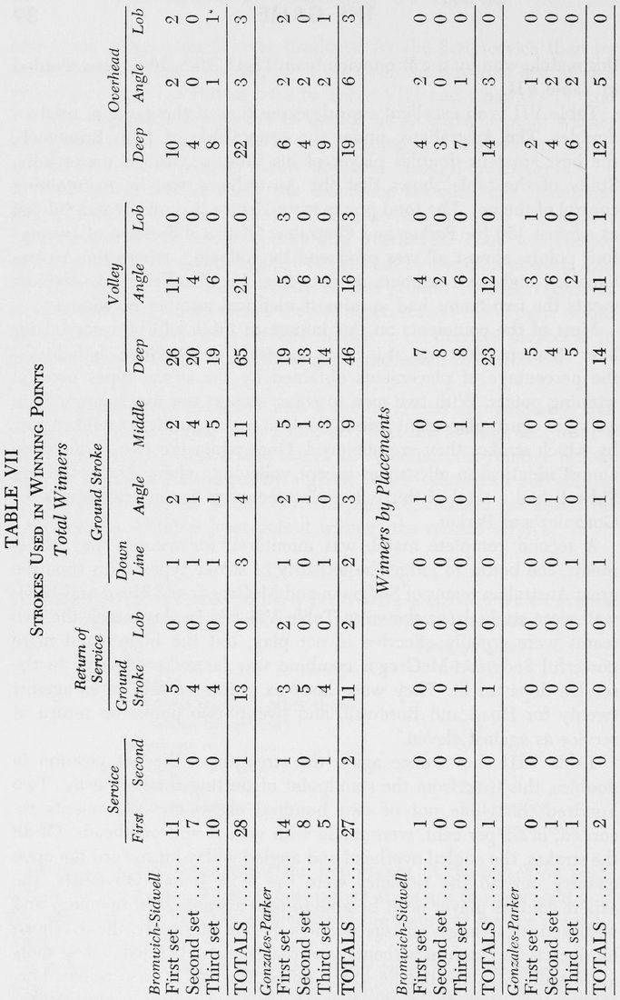
BẢNG VII CÁC CÚ THẮNG ĐIỂM VÀ CÚ ĐẶT BÓNG TRONG TRẬN ĐÁNH ĐÔI WIMBLEDON 1949 GIỮA BROMWICH-SIDWELL (THẮNG) VÀ GONZALES-PARKER (THUA) Trận đấu Bromwich-Sidwell thắng 13-11, 10-8, 10-8 Tổng số cú đánh Tổng số cú thắng Giao bóng thứ nhất Giao bóng thứ hai Trả giao bóng Khác Vô-lê Trên đầu Lob Số cú thắng điểm Bromwich-Sidwell ... 482 34 17 19 112 86 10 12 Gonzales-Parker ... 495 36 19 24 107 65 14 14 Số cú đặt bóng Bromwich-Sidwell ... 10 2 5 12 35 12 0 Gonzales-Parker ... 11 3 4 15 26 11 0 Tổng số điểm Bromwich-Sidwell ... 174 Gonzales-Parker ... 150 Ván: 13-11, 10-8, 10-8 TẦM QUAN TRỌNG CỦA CÚ VÔ-LÊ TRONG ĐÁNH ĐÔI Một phân tích cẩn thận hơn về Bảng VII xác nhận phần lớn những điều đã nói trước đó về tầm quan trọng của cú vô-lê. Trong trận đấu này, đội thắng đã giành được 86 trong tổng số 150 điểm của mình bằng cú vô-lê, đồng thời đạt được 35 trong tổng số 76 cú đặt bóng bằng cú vô-lê. Đáng chú ý là Gonzales, người nổi tiếng với cú giao bóng lớn, chỉ giành được 17 cú thắng điểm bằng cú giao bóng trong trận đấu này so với 86 cú thắng điểm bằng cú vô-lê của Bromwich, và chỉ có 19 cú thắng điểm bằng cú trả giao bóng. Cũng cần lưu ý rằng Gonzales, người có cú vô-lê mạnh, đã giành được 65 cú thắng điểm bằng cú vô-lê cho đội mình.
NS) te] Ge NAN Oo eo |oO Se So oo 2} > qoT QS) ia! || GO CIN AN |O Sey ie! || Ge Sana) iw agjouy ScD) r= — I st © daaq is 0 0 0 0 & 0 0 if 0 0 T qo’ hayjon 9 9 9T 9 S) 9 G IT IG G Il ajoup OV 8 8 a V S VI 96 61 G9 ST daaq SLNIOg apPIN sjuauaong G i I 8 ONINNIAA SLHIUULM ayoluysg ajsuy if if G 0 0 I 0 G I I 0 NI fq ssauur 1030, GaS() punosy WIadViL aur 7 it I 0 SHXOULS qo] G 0 0 0 0 0 0 0 0 0 0 fo winjay ayougs ANALIS 5S) 0 0 0 0 S Vv S V puosag a OnmIN SS 2 io S S'@ | © T SS Sai ANALIS ~—- std. i L 8 ¢ en | rst est GN OL 86 VI LG cere a stp ioe eee os ea LOYAD ety. eee ated ia J8S JIS JOS Ss }0S SIVLOL 8S STIVLOL 19S -SI]VDZUOK) puo0des Jos PUOVIS PuOdIS PAUL. pA], }SIL] 4SIq SIVLOL 1amprs-yornwosg anpis-yoinwo1g

BẢNG VII A CÁC CÚ THẮNG ĐIỂM VÀ CÚ ĐẶT BÓNG TRONG MỘT TRẬN ĐẤU CHUYÊN NGHIỆP GIỮA SEDGMAN-McGREGOR (THẮNG) VÀ HOAD-ROSEWALL (THUA) Sedgman-McGregor thắng 6-4, 6-3, 6-4 Tổng số cú đánh Tổng số cú thắng Giao bóng Trả giao bóng Vô-lê Trên đầu Lob Số cú thắng điểm Sedgman-McGregor ... 674 36 22 102 22 14 Hoad-Rosewall ... 698 20 11 99 25 18 Số cú đặt bóng Sedgman-McGregor ... 12 6 44 8 3 Hoad-Rosewall ... 6 2 44 10 3 Tổng số điểm: Sedgman-McGregor 102; Hoad-Rosewall 66 Ván: 6-4, 6-3, 6-4 BẢNG VIII HIỆU QUẢ CỦA CÚ VÔ-LÊ TRONG ĐÁNH ĐÔI Chú giải: Kết thúc = cú thắng điểm hoặc buộc lỗi; Cú đặt bóng = cú thắng điểm trực tiếp; Tỷ lệ phần trăm = cú đặt bóng chia cho cú kết thúc; Cú vô-lê sâu = vô-lê được đánh từ vùng giữa sân; Cú vô-lê gần lưới = cú vô-lê được đánh từ vùng gần lưới; Cú vô-lê chéo sân = cú vô-lê chéo sân; Cú vô-lê dọc biên = cú vô-lê dọc biên
ao GG qo V OV IV 68 a]Buy G L Z 9 ajsuy 6-9 poayiaaQ LT F-9 6h cy poayiaagQ OIT daaq daaq G-9 ‘LG qol Il qo'T 0 0 0 0 $6 LG 09 SHHOLVJN ajduy shayjon 8 9 4 v hayoa ajsuy O€ 8 9G OTS daaq 8 JOSaIQOW-ueUIspas 6G 66 OI daaq SLNIOg Aq 9 6 19 cl dIHSNOIAWVH’) SLNAINAOVIg unog appl slguUl uoAA Sayouys I 0 0 0 IA GNV S 6 ONINNIAA ajsuy ajsuy A 1070], ‘CET hg NI ALAIMWOTD) JJoMNasoy-pvo punolsy 0 I V G 9 ATAVL 6& ST SHHNNIA\ OV WITaVL umoqg aur] GaS() apply YAO ssauurpy L 9 V I 0 unoqd fo Me aul] drysuordureyD WOUd 9IT SHXOULS Uinjay aN1alaS = SISATIVNY 0 0 vI 0 0 0 0 qoT [eUoNRN Baas puorag CALOATION *s —antasiasg “A L Le Cikae fo Vie Sd] yur VLIVC Balas ee -UIM 1O -s0vfd Yor a cab uinjay tir °*¢ 8 3 4 odAy CT Jo yuo aad ce ur Sulynser ce Goro [CULA-TIES tod) syuaureoryd eaeie STOUUIM SIOUUIM T 0 0 V JO JO jo “Ul puosas ApTeyIo'T oyo.ys siou }U90 INALBS (s}uoUL 0 0 GS 61 Toqunh\y Jog raquiny SADT
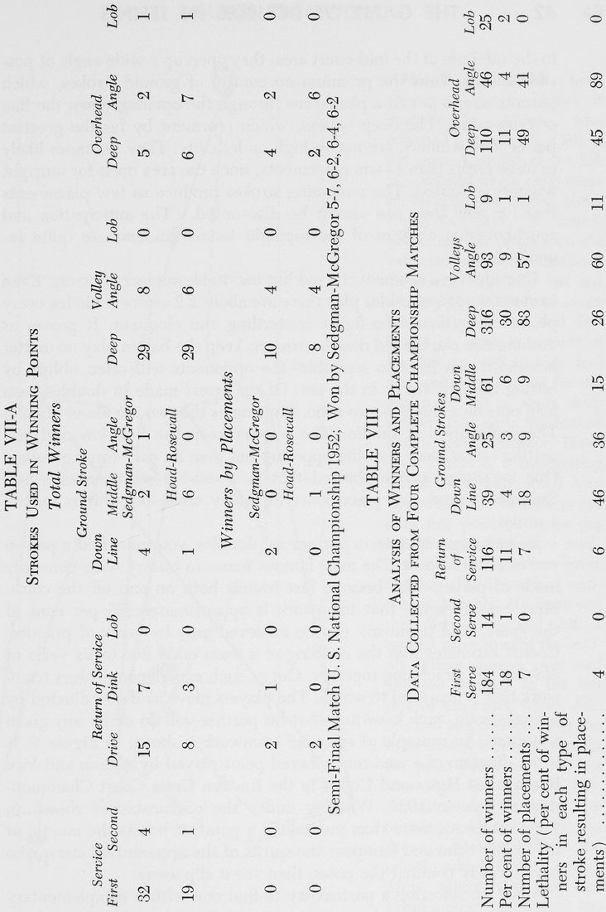
tới hai bên biên ở khu vực giữa sân, chúng mở ra một góc trả bóng rộng. Do đó, giá trị của việc kiểm soát các cú đánh nền sân, cho phép người ta tung một cú đặt bóng xuyên qua sơ hở dọc biên hoặc chéo sân, được đặt lên hàng đầu. Những cú vô-lê sâu, vốn chiếm tỷ lệ phần trăm lớn nhất trong số các cú thắng điểm, lại không có tính sát thương cao đến thế. Chúng có nhiều khả năng buộc đối phương mắc lỗi hơn là giành được cú đặt bóng, vì vùng trống để ghi cú thắng điểm trực tiếp bị hạn chế. Những cú đánh còn lại tạo ra ít cú đặt bóng đến mức hiện giờ gần như có thể bỏ qua. (Khả năng phán đoán trước và che phủ sân của những cặp đấu quần vợt đỉnh cao thật đáng kinh ngạc.) Hãy dành một chút thời gian suy nghĩ về chủ đề buồn nhưng không thể tránh khỏi: những lỗi đánh hỏng. Ngay cả trong các trận đánh đôi vô địch cũng có khoảng 2,2 lỗi được mắc cho mỗi cú đặt bóng giành được. Con số này thật đáng giật mình và đầy sức thuyết phục. Nó chứng minh như không gì khác có thể chứng minh được chân lý cũ kỹ của đánh đôi: hãy giữ bóng trong cuộc dù bạn phải chạy đuổi vất vả đến đâu—đối phương sẽ thường xuyên tự giúp bạn bằng cách đánh bóng ra ngoài hoặc vào lưới. Trong số những lỗi mắc phải ở đánh đôi, số bóng vào lưới nhiều hơn số bóng ra ngoài theo tỷ lệ ba trên hai. (Trong đánh đơn thì hai loại này xấp xỉ bằng nhau.) Cách giải thích rất đơn giản: Những người chơi giữ bóng thấp và chấp nhận rủi ro đưa bóng vào lưới hơn là tạo điều kiện cho người đánh lưới của đối phương thực hiện một cú vô-lê ép buộc dễ dàng. Một trận đấu được theo dõi cho thấy trong một ván đấu cực kỳ gay cấn, Bromwich và Sedgman đạt được hai cú đặt bóng cho mỗi lỗi mắc phải—nhưng đây thật sự là một trường hợp hiếm có. Khi chọn một bạn cặp lâu dài cho lối đánh đôi, bạn phải tìm được một người mà bạn thích và tôn trọng. Những đội nổi tiếng nhất trong lịch sử nói chung được tạo nên từ những người trở thành bạn thân cả trên sân lẫn ngoài sân. Hầu hết các chuyên gia đều đồng ý rằng sự phối hợp đồng đội chiếm khoảng 25 phần trăm của lối chơi. Và sự phối hợp đồng đội chỉ có thể đạt được qua nhiều năm luyện tập. Cochet ước tính rằng việc tạo nên một đội cần từ năm đến sáu năm chơi và tập luyện cùng nhau. Từ trải nghiệm như vậy nảy sinh sự phối hợp đồng đội đẹp mắt khi xem. Những người chơi di chuyển như thể được điều phối bởi một bộ não duy nhất, mỗi người biết bạn cặp của mình sẽ...
to the sidelines at the mid-court area, they open up a wide angle of possible return. Thus the premium on control of ground strokes, which permits one to punch a placement through the opening down the line or cross-court. The deep volleys, which represent by far the greatest per cent of winners, are not so high on lethality. They are more likely to force errors than to win placements, since the area open for outright winners is limited. The remaining strokes produce so few placements that for now they can almost be discounted. (The anticipation and court-covering abilities of the topflight tennis tandems are quite remarkable. ) Consider for a moment the sad but inevitable subject of errors. Even in championship doubles play there are about 2.2 errors made for every placement gained. The figure is startling and eloquent. It proves as nothing else can the old doubles truism: keep the ball in play no matter how hard you have to scramble—the opponents will often oblige by hitting the ball out or in the net. Of the errors made in doubles, nets lead outs on a three-to-two ratio. (In singles the two are about equal. ) The explanation is simple: The players keep the ball low and risk netting rather than give the opposing net man an easy forcing volley. One monitored match showed that in a red-hot set Bromwich and Sedgman scored two placements for every error—but this is indeed a rarity. In selecting a long-term partner for doubles, you must find a person you like and respect. The most famous teams in history were generally made of players who became fast friends both on and off the court. Most experts agree that teamwork is approximately 25 per cent of the game. And teamwork can be achieved only by years of practice. Cochet estimates that the molding of a team takes five to six years of playing and practicing together. Out of such experience evolves teamwork that is beautiful to watch. The players move as if coordinated by a single brain, each knowing what his partner will do under any given condition, An example of splendid teamwork is shown in Figure 2. It is the diagram of a well-remembered point played by Allison and Van Ryn against Hines and Culley in the Eastern Grass Court Championship at Rye in 1936. Winning under the circumstances shown in Figure 2 means more than just taking a point; it boosts the morale of the saving team and dampens the spirits of the apparent winners, who have already counted the point, then see it slip away. Again, in selecting a partner try to find one with a complementary game. Experience has shown that many of the best combinations have a steady player who sets up the plays and a power player who can put
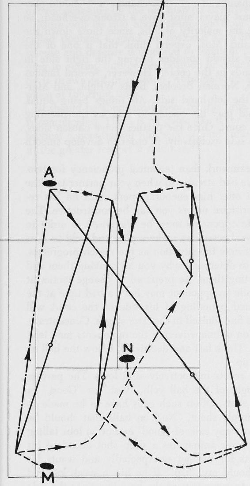
SUPER TEAMWORKSUPER TEAMWORK
Hines, người giao bóng B, tung một cú giao bóng mạnh vào bên trái (backhand) của người nhận giao bóng M, Allison, và Allison đã trả lại bằng một cú bóng bổng yếu ớt. Culley, người đánh lưới A, đập cú bóng bổng đó theo một góc hiểm hóc chéo sân và tưởng như đã ăn điểm. Tuy nhiên, Van Ryn, N, đã phán đoán trước, đưa được vợt vào bóng và trả lại một cú thuận tay dọc biên. Điều này để lộ toàn bộ phần sân bên phải; Hines, người đã theo cú giao bóng của mình tiến lên, phán đoán trước và di chuyển sang trái, chờ sẵn ở lưới để đánh cú trả bóng thành một cú vô-lê bỏ nhỏ ngắn. Một lần nữa, tình huống này tưởng như chắc chắn ăn điểm. Tuy nhiên, Allison, với sự phán đoán trước cú đánh của Hines, đã nhận thấy Van Ryn sẽ không thể trở về đúng vị trí. Thế nên anh chuẩn bị sẵn sàng và thực hiện một pha bứt phá nhanh được che giấu kín đáo để đón cú đánh sau khi Hines đã dồn hết thế người. Anh cứu được cú bỏ nhỏ và tung một cú đánh xoáy trên đầu bóng (topped drive) về phía giữa sân. Hines di chuyển sang và vô-lê bóng về phía bên trái sân, đúng chỗ Allison vừa mới bỏ trống. Lần thứ ba, tưởng như điểm đã được giành; nhưng Van Ryn quay về nhanh, băng ngang để che chỗ trống trong phần sân của Allison, và đánh một cú trái tay dọc giữa sân khiến Culley đưa bóng vào lưới. Như vậy, Allison và Van Ryn đã cứu được một điểm tưởng như đã mất đến ba lần. Hình 2
Hines, server B, hit a hard service to the backhand of receiver M, Allison, who returned a weak lob. Culley, net man A, smashed the lob at a wicked angle cross-court for an apparent winner. However, Van Ryn, N, anticipated, got his racquet on the ball, and returned a forehand down the line. This left the whole right side of the court open; Hines, who had followed his serve in, moved to his left in anticipation and was waiting at the net for the return to hit a short drop volley. Once again this looked like a certain winner. However, Allison, anticipating Hines shot, had noted Van Ryn would not be able to get back into position. So he got set for it and made a wellconcealed fast break to cover the shot after Hines had committed himself. He retrieved the drop shot and hit a topped drive toward the middle. Hines moved over and volleyed the ball to the left side of the court, which Allison had just deserted. For the third time it looked as though the point had been won; but Van Ryn came back fast, crossed over to cover the opening in Allison’s court, and drove a backhand down the middle which Culley netted. Thus, Allison and Van Ryn saved a point that looked lost three times.

kết thúc điểm. Tốt nhất là nên có một người chơi có cú trả giao bóng thuận tay chéo sân mạnh và cú vô-lê trái tay tốt ở bên phải, còn một người chơi có cú trái tay mạnh và cú vô-lê thuận tay tốt thì nên đánh bên trái. Người chơi ở bên trái sân phải có cú trên đầu mạnh; anh ta sẽ phải đảm nhận phần lớn các cú bóng bổng, vì những cú bổng dọc giữa sân nằm ở bên thuận tay của anh ta. Hầu hết các chuyên gia cho rằng nếu một trong hai người chơi thuận tay trái thì nên cân nhắc đánh bên phải để đưa cả hai cú thuận tay vào giữa sân. Tuy nhiên, một số tay trái nổi tiếng—chẳng hạn Norman Brookes, Beals Wright và Mervyn Rose—đã đánh ở bên trái. Nếu mọi thứ đều ngang bằng, người chơi mạnh hơn nên đánh ở bên trái tay (backhand), vì những điểm quyết định được thi đấu ở phần sân này. Một khi hai bạn cặp đã chọn bên, mỗi người nên đánh độc quyền ở bên của mình để phát triển sự phối hợp đồng đội trơn tru. Nhưng phối hợp đồng đội không chỉ là sự thành thạo kỹ thuật của hai người. Ngay cả những người chơi giỏi nhất cũng có những giai đoạn phong độ tệ, vì vậy khi bạn cặp của bạn đang sa sút, hãy giữ bình tĩnh và động viên anh ấy cho đến khi anh ấy lấy lại được cảm giác bóng. Đừng chỉ trích trừ khi bạn có thể đưa ra lời góp ý mang tính xây dựng. Những khả năng và chiến thuật của đối phương phải được chẩn đoán để tận dụng những điểm yếu của họ; do đó hãy lập một kế hoạch và bám theo nó chừng nào nó còn thành công. Hãy xem xét lại tình hình khi trận đấu diễn tiến. Nghiên cứu những sai lầm của mình, cố gắng xác định tại sao bạn mắc chúng và làm thế nào để tránh lặp lại. Hãy sẵn sàng thay đổi chiến thuật trong chớp mắt, vì trong khi một đối thủ có thể gặp khó khăn vào đầu trận, việc tiếp tục dồn dập vào bên sân của anh ta sẽ phản tác dụng khi anh ta bắt đầu tìm lại được phong độ ở những giai đoạn sau. Hãy tập trung. Sự tập trung liên tục vào việc đánh lừa đối phương về chiến thuật có thể dẫn đến sự suy sụp tinh thần của họ. Hãy suy nghĩ nhanh và dứt khoát, dõi theo bóng trong mọi pha bóng, và đừng buông lỏng. Một người chơi đánh đôi giỏi phản ứng theo bản năng—và lớn tiếng. Người bạn cặp...
Aa THE GAME OF DOUBLES IN TENNIS the ball away. It is best to have a player with a strong cross-court forehand return of service and backhand volley to play the right side, and a player with a strong backhand and a good forehand volley should play the left side. The left-court player must have a strong overhead; he will be called on to take the majority of lobs, since those down the middle are on his forehand. Most experts think that if one of the players is left-handed he should consider playing the right side in order to put both forehands in the center. However, several famous left-handers—for example, Norman Brookes, Beals Wright, and Mervyn Rose—have played the left-hand side. All things being equal, the stronger player should play the backhand side, as the deciding points are played in this court. Once the partners have chosen sides, each should play his own side exclusively, in order to develop smooth teamwork. But there is more to teamwork than technical proficiency for two. Even the best players have bad streaks, so when your partner is in the doldrums keep calm and offer him encouragement until he has regained his touch. Don't criticize unless you can be constructive. The abilities and tactics of the opponents must be diagnosed in order to take advantage of their weaknesses; so make a plan and hold to it as long as it is successful. Review the situation as the match progresses. Study your mistakes, try to determine why you are making them and how you can avoid repeating them. Be prepared to change tactics at a moment's notice, for while an opponent may have a bad time at the start of a match, continued pounding of his side of the court will boomerang as he begins to find himself in the later stages. Concentrate. Continued concentration on outmaneuvering the opponents may lead to a break in their morale. Think fast and decisively, follow the ball on every play, and don't let up. A good doubles player reacts instinctively—and loud. The partner best able to judge the flight of the ball yells, “Out,” or “Good,” or “Bounce it,” on doubtful shots. Often such calls have to be made so fast that many players simply shout, “No,” on balls that should be allowed to go by, and ignore any calls of “good” except on lobs falling near the lines. When a player anticipates a drop shot ahead of his partner, or when he starts for the net unexpectedly and wants his partner to move in, he should say, “Up.” If he hits a weak lob and wants to warn his partner to move toward the base line or to the side to help defend the overhead, he should so indicate with “back” or “over. The players should yell, “Yours,” or, “Mine,” as the case may be, on shots that either might take. Of course, general teamwork and
THE GAMETHE GAME
những chiến thuật đã được thỏa thuận trước cho một số cú đánh nhất định sẽ giúp loại bỏ sự cần thiết phải hét to quá mức. Và nên xây dựng một bộ tín hiệu có chủ đích hơn cho việc cướp bóng (poach) của người đánh lưới trong những cú giao bóng hiệu quả. Sẽ còn nhiều điều được nói về sự phối hợp đồng đội trong từng thời điểm. Tilden đã gọi đánh đôi là một môn chơi của vị trí. Việc che phủ sân một cách phối hợp trong tấn công lẫn phòng thủ là thiết yếu cho lối chơi đỉnh cao. Không thể có sự chần chừ trong việc vào đúng vị trí hoặc che chắn cho bạn cặp nếu anh ấy bị kéo ra khỏi vị trí. Phán đoán trước nghĩa là di chuyển đến đúng chỗ vào đúng lúc. Đến lúc này hẳn đã rõ ràng một cách dồi dào rằng môn đánh đôi này thật phức tạp. Không có môn chơi nào giống nó về áp lực liên tục của sự tập trung chiến thuật cộng với thời điểm chính xác trong tích tắc. Người ta càng nghiên cứu nó thì nó càng khiến người ta phải kính nể.
prearranged tactics on certain shots will obviate the necessity of excessive yelling. And a more deliberate set of signals should be worked out for poaching by the net man on effective serves. More will be said about teamwork from time to time. Tilden has called doubles a game of position. Coordinated court coverage on offense and defense is essential to topflight play. There can be no lagging in getting into proper position or covering up for your partner if he is drawn out of position. Anticipation means moving to the right place at the right time. It should be abundantly clear by this time that this game of doubles is complicated. There is no game like it for the continuous pressure of tactical concentration plus split-second timing. The more one studies it, the greater respect it commands.
4. Cú Giao Bóng
Trong các trận đánh đôi vô địch, hầu hết các ván set đều được định đoạt chỉ bằng một lần phá vỡ thế giao bóng duy nhất. Điều này khiến cho việc mất quyền giao bóng gần như không thể tha thứ được. Thực tế, việc giữ được quyền giao bóng quan trọng đến mức trong đánh đôi, George Lott đã được trích dẫn nói rằng cú giao bóng là cú đánh quan trọng nhất. Có một số lập luận mạnh mẽ ủng hộ ý kiến của Lott. Chúng ta... duy trì thế tấn công. Thế tấn công được xây dựng trên việc kiểm soát lưới. Cú giao bóng thành công trong đánh đôi không chỉ đưa bóng vào cuộc mà còn mang lại cho người giao bóng một hành trình an toàn lên lưới, đưa đội giao bóng vào vị trí tấn công ngay từ đầu mỗi điểm. Một nhà cầm quân đánh đơn lỗi lạc như Fred Perry cũng đồng ý rằng việc sở hữu một cú giao bóng mạnh thậm chí còn quan trọng hơn trong đánh đôi so với đánh đơn, và cần nhớ rằng (Bảng IV) 30 phần trăm trong tổng số cú đánh được thực hiện trong đánh đôi là cú giao bóng. Trong chương này, lối chơi của đội giao bóng sẽ chỉ được trình bày tới mức chuẩn bị cho cú vô-lê từ cú trả giao bóng. Lối chơi từ điểm đó trở đi sẽ được bàn trong Chương VI, về Lối Đánh Lưới. Những vị trí bình thường đúng đắn cho hai người chơi của đội giao bóng là A và B, ở bên sân thuận tay hoặc trái tay, được thể hiện trong Hình 3. Người giao bóng, B, đứng ở giữa khoảng cách giữa tâm của đường cuối sân và đường biên dọc, điều này cho anh ta con đường ngắn nhất tới vị trí đúng trên lưới và cơ hội tốt hơn (so với nếu anh ta xuất phát từ điểm R) để đổi hướng nhằm đón cú trả giao bóng. Người bạn cặp của người giao bóng, A, đứng cách lưới từ sáu đến chín feet và cách tâm khoảng một feet về phía bên phải, giữa đường chia hai ô giao bóng và đường biên dọc xa. Còn...
In championship doubles play most sets are won by but a single breakthrough of service. This makes the loss of service practically unpardonable. In fact, holding service is so vital in doubles that George Lott has been quoted as saying that the serve is the most important shot. There are some strong arguments to back Lott’s opinion. We have taining the offense. The offensive is predicated on control of the net. The successful serve in doubles not only puts the ball in play but also provides a safe journey to the net for the server, putting the serving team in the attacking position at the start of each point. No less a singles authority than Fred Perry agrees that the possession of a strong serve is even more important in doubles than in singles, and it should be remembered (Table IV) that 30 per cent of all strokes made in doubles are serves. In this chapter the play of the serving team will be taken only as far as preparing for the volley of the return of service. The play from that point on will be discussed in Chapter VI, on Net Play. The proper normal positions for serving team players A and B, in either the forehand or backhand courts, are shown in Figure 3. The server, B, stands midway between the center of the base line and the sideline, leaving him the shortest route to the proper net position and a better chance (than if he had started from point R) to change direction to meet the return of service. The server's partner, A, stands from six to nine feet from the net and about one foot to the right of center between the line dividing the service courts and the far sideline. More

SERVING TEAM POSITIONSSERVING TEAM POSITIONS
người đánh lưới A và người giao bóng B.
net man A and the server B. \ /
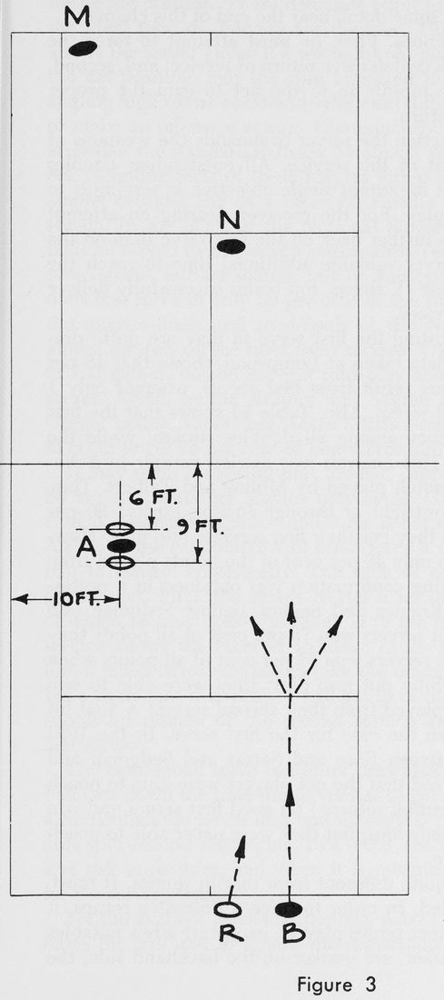
sẽ nói thêm về anh ấy sau. Ngoài những vị trí bình thường này, còn có những vị trí không theo quy ước mà đội giao bóng có thể chọn áp dụng. Những vị trí này sẽ được bàn chi tiết hơn ở phần gần cuối chương này. Người giao bóng có hai chức năng. Thứ nhất, anh ta phải cố gắng buộc người nhận giao bóng thực hiện một cú trả giao bóng yếu ớt hoặc mang tính phòng thủ; và thứ hai, anh ta phải theo cú giao bóng của mình tiến nhanh lên lưới để giành vị trí đúng cho việc vô-lê cú trả bóng. Để thực hiện chức năng thứ nhất, người giao bóng có trong tay những vũ khí là tốc độ, độ xoáy và khả năng đặt bóng của cú giao bóng. Tất cả những người chơi đánh đôi xuất sắc đều đồng ý rằng mục tiêu đơn lẻ quan trọng nhất khi giao bóng là đưa cú giao bóng thứ nhất vào cuộc. Vì người nhận giao bóng, do sợ đối phương cố gắng ăn điểm trực tiếp (ace), luôn luôn chơi lùi xa hơn ở cú giao bóng thứ nhất so với cú giao bóng thứ hai, điều này cho người giao bóng thêm thời gian quý giá để tới được vị trí đúng trên lưới. Như Bảng IV cho thấy, những đội hàng đầu giao bóng thứ nhất thành công tới 80 phần trăm. Kết quả của việc chỉ đơn thuần đưa cú giao bóng thứ nhất vào cuộc thật đáng kinh ngạc. Bảng V, dựa trên dữ liệu thu thập tại Longwood, cho thấy 18 phần trăm các cú thắng điểm trực tiếp bắt nguồn từ cú giao bóng thứ nhất, trong khi chỉ có 1 phần trăm bắt nguồn từ cú giao bóng thứ hai. Ngoài ra, Bảng VI cho thấy cú giao bóng thứ nhất xếp thứ tư về uy lực trong số tất cả các cú đánh của đánh đôi, trong khi cú giao bóng thứ hai xếp cuối cùng. Phân tích này được tiếp tục mở rộng trong một trận bán kết Giải Đánh đôi Quốc gia mà Mulloy và Talbert thi đấu. Họ đã có thể thắng (hoặc trực tiếp hoặc nhờ buộc đối phương mắc lỗi) 80 phần trăm số điểm mà họ đưa được cú giao bóng thứ nhất vào cuộc. Tuy nhiên, họ chỉ thắng được 48 phần trăm số điểm chơi từ cú giao bóng thứ hai của mình. Một sự xác nhận đáng chú ý đã đạt được trong một trận đấu chuyên nghiệp đối đầu giữa Kramer và Segura với Sedgman và McGregor. Bốn tay giao bóng vĩ đại này đã thắng 70 phần trăm trong tổng số điểm mà họ giao bóng. Tuy nhiên, trong khi những người giao bóng thắng 82 phần trăm trong tổng số điểm khi cú giao bóng thứ nhất được đưa vào cuộc thành công, họ chỉ có thể...
about him later. In addition to these normal positions, there are unconventional positions which the serving team may elect to adopt. These will be dealt with in some detail near the end of this chapter. The server has two functions. First, he must attempt to force the receiver into making a weak or defensive return of service; and, second, he must follow his service rapidly in to the net to gain the proper position for volleying the return. To carry out his first function the server commands the weapons of speed, spin, and placement of the service. All outstanding doubles players agree that the most important single objective in serving is to put the first service into play. For the receiver, fearing an attempt for an ace, invariably plays further back on the first serve than on the second, thus giving the server valuable additional time to reach the proper net position. As Table IV shows, top teams successfully deliver 80 per cent of their first services. The results of merely putting the first serve in play are quite dramatic. Table V, based on data taken at Longwood, shows that 18 per cent of the outright winners result from first serves, whereas only 1 per cent result from second serves. Also, Table VI shows that the first serve ranks fourth in potency among all doubles strokes; while the second service ranks last. This analysis was carried further in a National Doubles semi-final match played by Mulloy and Talbert. They were able to win (either outright or through forcing errors) 80 per cent of the points in which they got their first services into play. However, they were able to win only 48 per cent of the points played from their second services. Striking confirmation was obtained in a professional match that pitted Kramer and Segura against Sedgman and McGregor. These four great servers won 70 per cent of all points they served. However, while the servers won 82 per cent of all points when the first serve was successfully put into play, they were able to win only 24 per cent of points played from their second serves! A final bit of information to nail down the case for the first serve. In the 1953 National Doubles final between Rose and Seixas and Sedgman and McGregor, data taken showed that the net players were able to poach (or move to the center to cut off returns ) on good first serves and win fifteen points while losing only four; but they were never able to poach successfully on second serve. The serve in doubles is quite different from that in singles. It must, obviously, be well controlled. In order to force a defensive return, it must also be well placed. Since tennis players, excepting a few notables like Budge and Frankie Parker, are weaker on the backhand side, the
THE SERVETHE SERVE
cú giao bóng nói chung nên nhắm vào bên trái tay (backhand). Nó cũng nên sâu trong ô giao bóng, và phải cho người giao bóng thời gian để theo bóng lên vị trí trên lưới một cách an toàn. Những đòi hỏi này chỉ ra rằng cú giao bóng xoáy Mỹ (American twist) là kiểu giao bóng lý tưởng cho đánh đôi. Cú xoáy này dễ kiểm soát, cho người giao bóng (ngay cả khi là một ông già kiệt sức) dư dả thời gian để tới được vị trí trên lưới; và độ xoáy truyền vào bóng khiến nó nảy lên theo một góc cao về phía bên trái tay—điểm khó nhất trong tất cả các vị trí để thực hiện một cú trả bóng tấn công. Do đó, cú giao bóng xoáy Mỹ được dùng như cú giao bóng tiêu chuẩn bởi hầu hết những người chơi đánh đôi đỉnh cao, bao gồm phần lớn những người chơi được thiên phú một cú giao bóng "lớn". Ví dụ, hãy xem xét dữ liệu thu thập về Pancho Gonzales trong mùa giải 1949. Trong trận chung kết Giải Đánh đơn Quốc gia tại Forest Hills, anh ta đã giao hai mươi bảy cú ăn điểm trực tiếp (ace) trước Ted Schroeder trong một trận đấu kéo dài sáu mươi bảy ván, năm set; nhưng anh ta chỉ thành công trong việc đưa cú giao bóng thứ nhất khủng khiếp của mình vào cuộc 59 phần trăm số lần. Trái lại, trong các trận tứ kết và bán kết giải Đánh đôi Quốc gia, anh ta gần như hoàn toàn dựa vào cú giao bóng xoáy chắc chắn hơn. Đúng là anh ta chỉ giao được bốn cú ăn điểm trực tiếp trong 103 ván, nhưng anh ta đã đưa được vào cuộc khoảng 75 phần trăm số cú giao bóng thứ nhất của mình. Một lần nữa, trong trận Kramer và Segura đối đầu Sedgman và McGregor, những nghệ sĩ giao bóng "lớn" này đã giảm tốc độ cú giao bóng thứ nhất của mình để đưa được 75 phần trăm số cú giao bóng thứ nhất vào cuộc. Có thể sẽ gây ngạc nhiên khi cú giao bóng phẳng như đạn đại bác, vốn được những người chơi đánh đơn xuất sắc như McLoughlin, Tilden, Vines, Budge, Kramer, Gonzales và Ashe làm nên nổi tiếng, lại không được khuyến nghị cho đánh đôi. Mặc dù cú đạn đại bác thường buộc đối phương phải trả bóng phòng thủ, nhưng nó khó kiểm soát một cách ổn định. Sự thiếu kiểm soát này dẫn đến hai bất lợi. Thứ nhất, người giao bóng lãng phí rất nhiều năng lượng để đánh những cú lỗi giao bóng, những cú mà anh ta đều phải theo một đoạn lên lưới. Thứ hai, một cú lỗi giao bóng thứ nhất cho phép người nhận giao bóng tiến lên cho cú giao bóng thứ hai, khiến...
serve should generally be to the backhand. It should also be deep in the service court, and it must give the server time to follow in safely to the net position. These demands point to American twist service as the ideal type of delivery for doubles. The twist is easy to control, allows the server (even if a worn-out old man) plenty of time to reach the net position; and the spin imparted to the ball causes a bounce angling high to the backhand—the most difficult of all spots from which to make an offensive return. Consequently, the American twist serve is used as the standard delivery by almost all of topflight doubles players, including most of those players gifted with a “big” serve. For example, consider the data taken on Pancho Gonzales during the 1949 season. In the finals of the National Singles Championship at Forest Hills he served twenty-seven aces against Ted Schroeder during a sixtyseven-game, five-set match; but he succeeded in getting his tremendous first serve in only 59 per cent of the time. By way of contrast, in the quarter-finals and semi-finals of the National Doubles he relied almost entirely on the surer twist service. True, he served just four aces in 103 games, but he did put into play about 75 per cent of his first serves. Again, in the Kramer and Segura versus Sedgman and McGregor match, these “big” serve artists slowed down their first serves in order to get 75 per cent of first serves into play. It may seem surprising that the flat, cannonball serve made famous by such outstanding singles players as McLoughlin, Tilden, Vines, Budge, Kramer, Gonzales, and Ashe is not recommended for doubles. Although the cannonball will often force a defensive return, it is diffcult to control consistently. This lack of control makes for two disadvantages. First, the server wastes a lot of energy hitting faults, all of which he must follow partway in to the net. Second, a fault on first service allows the receiver to move in for the second service, giving him a much better chance to take the offensive away from the server. Data show that the receiver will get in to the net six times as often on successful returns of the second service as on successful returns of first service. The cannonball serve has other drawbacks. The faster travel of the ball cuts down the time the server has to get to the net. After slamming a cannonball the server may end up slightly off balance and lose a valuable split-second recovering. In a word, the cannonball is a poor offensive risk in doubles, and when it is returned crisply it means trouble for the serving team. Yet the average week-end doubles player seems determined to lambaste the ball and to ignore the importance of getting his first serve
vào cuộc một cách an toàn. Thực ra đây chẳng qua chỉ là một nỗ lực mang tính trẻ con nhằm gây ấn tượng. Trước bất kỳ kiểu cạnh tranh công bằng nào, anh ta rốt cuộc sẽ luôn kết thúc trong tình trạng bẽ mặt—vứt đi nhiều điểm và làm kiệt sức bản thân trong quá trình đó. Chỉ cần nhớ rằng, ngay cả những chuyên gia giao bóng lớn cũng giảm tốc độ cú giao bóng thứ nhất của mình, và vì một lý do chính đáng. Bạn cũng nên làm vậy! Hầu hết những người chơi đánh đôi giỏi nhất không chỉ thích dùng cú giao bóng xoáy an toàn hơn, mà còn đánh nó ở khoảng ba phần tư tốc độ để phát huy tối đa khả năng kiểm soát và có thêm thời gian lên lưới. Một cú xoáy chậm, được thực hiện tốt cho phép người giao bóng tiến thêm ba bước vô giá lên lưới so với cú giao bóng như đạn đại bác. Để đối phó với việc người nhận giao bóng tiến lên, cú giao bóng thứ hai nên được đánh gần như nhanh bằng cú giao bóng thứ nhất. Tuy nhiên, khi khuyến nghị việc sử dụng đa dạng cú giao bóng xoáy, chúng tôi không có ý nói rằng nên tránh hoàn toàn cú giao bóng nhanh hoặc cú giao bóng cắt (slice). Người giao bóng phải nắm vững những cú giao bóng này trong tay, và nên dùng chúng tùy lúc để khiến người nhận giao bóng mất thế cân bằng. Thỉnh thoảng giao bóng vào góc thuận tay sẽ ngăn người nhận giao bóng di chuyển sang để vòng người đánh cú xoáy. Việc sử dụng độ xoáy khác nhau cũng có xu hướng làm người nhận giao bóng bối rối và tạo ra những cú trả bóng kém. John Doeg, Don Budge, Jack Kramer và Rod Laver đặc biệt khéo léo trong việc bắn một cú ăn điểm trực tiếp (ace) nhanh vào thời điểm then chốt khi người nhận giao bóng lệch khỏi vị trí một bước, hoặc đang di chuyển sai hướng, hoặc đã buông lỏng cảnh giác. Người chơi câu lạc bộ thường không thể hình dung nổi mình có khả năng giao bóng thứ nhất và thứ hai với tốc độ gần bằng nhau. Tuy nhiên, cú giao bóng xoáy Mỹ đơn giản đến mức dễ học và dễ kiểm soát đến nỗi bạn sẽ ngạc nhiên về việc mình có thể tiếp thu kỹ năng này nhanh chóng đến thế và lording nó trên các đối thủ của mình. Cú giao bóng là một cuộc đấu tay đôi giữa người giao bóng và người nhận giao bóng, mỗi người cố giành lợi thế để cú đánh thứ hai của đội mình có thể mang tính tấn công. Điều này có nghĩa là người giao bóng phải liên tục nghiên cứu người nhận giao bóng, tư thế đứng, hành động và thói quen của anh ta, và liên tục cố đoán trước anh ta...
safely into play. Actually this is no more than an adolescent effort to impress. Against any kind of fair competition he will invariably end up with egg all over his face—throwing away many points and wearing himself in the process. Just remember, even the big serve experts slow their first serve down, and for good reason. So should you! Most of the best doubles players not only prefer to use the safer twist serve, but they hit it about three-quarters speed in order to exert maximum control and gain more time to reach the net. A slow, wellexecuted twist lets the server take three priceless steps further in to the net than the cannonball serve. To counter the receiver moving in, the second serve should be paced almost as fast as the first. In recommending the varied use of twist serve we do not mean, however, that the fast serve or the slice serve should be avoided entirely. The server must have these serves at his command, and should use them from time to time to keep the receiver off balance. An occasional serve to the forehand corner will prevent the receiver from moving over to run around the twist serve. The use of different spin will also tend to upset the receiver and draw poor returns. John Doeg, Don Budge, Jack Kramer, and Rod Laver were particularly adept at firing a fast ace at a critical moment when the receiver was a step out of position, or was moving the wrong way, or had let his guard down. The club player often cannot picture himself being able to deliver the first and second serves at about equal speed. However, the American twist serve is so simple to learn and to control that you will be surprised how quickly you can acquire this skill and lord it over your rivals. The service is a duel between the server and the receiver, with each trying to gain an advantage so that the second shot by his team can be an offensive one. This means the server must continually study the receiver, his stance, actions, and habits, and try continually to outguess him. The odds favor the server because he begins with the offense. He must play this advantage to the utmost. Let us consider in detail now the service to the forehand court. The server must first decide where to try to place the serve. The preferred aim point is position 1 (Figure 4). Here’s why:

EFFECT OF PLACEMENT OF SERVEEFFECT OF PLACEMENT OF SERVE
VỀ NHỮNG GÓC TRẢ BÓNG KHẢ THI Một cú giao bóng xoáy Mỹ đặt vào vùng 1 là nước khai cuộc tốt nhất cho đội giao bóng và mang lại cho người giao bóng hành trình lên lưới an toàn nhất. Một cú trả bóng về vùng 2 khó có thể xảy ra, vì cần độ chính xác cao để đánh vào góc hẹp đó vượt qua phần cao của lưới. Điều này cho phép người đánh lưới A làm công việc của người giao bóng trở nên dễ dàng hơn. Khi thấy cú giao bóng nảy ở vùng 1 và người nhận giao bóng đã dồn thế người vào cú trả bóng chéo sân, người đánh lưới A nên trượt sang để che vùng giữa sân. Sau đó người giao bóng B có thể tiến lên rộng ra để che những cú trái tay hoặc những cú thuận tay vòng người đánh tới vùng 3, hay những cú đánh gắt góc tới vùng 4. Những cú đánh tới vùng 4 phải thuộc loại dink chậm, được đánh để bay qua phần cao hơn của lưới mà vẫn ở trong sân, qua đó cho người giao bóng thêm thời gian để bẻ hướng và che chúng. Những cú bóng bổng do người nhận giao bóng đánh từ giữa sân tới vùng 5 có thể được người đánh lưới A xử lý hiệu quả, vì anh ta có thể lùi lại và đánh chúng bằng cú trên đầu thuận tay mạnh của mình. Một cú giao bóng tới vùng 1 đưa đội giao bóng vào vị trí tấn công tốt nhất.
ON POSSIBLE ANGLES OF RETURN An American twist service placed in area 1 is the best opening gambit for the serving team and gives the server the safest journey to the net. A return to area 2 is unlikely, since great accuracy is required to hit that narrow angle over the high portion of the net. This permits net man A to make the server's job easier. On seeing the serve bounce at area 1 and the receiver commit himself to a cross-court return, net man A should slide over to cover the center of the court. Then server B can come up wide to cover backhands or runaround forehands hit to area 3, or sharply angled shots hit to area 4. Shots to area 4 must be of the slow dink variety, hit to pass over the higher portion of the net and yet stay in the court, thus giving the server more time to swerve and cover them. Lobs hit by the receiver from the middle to area 5 can be handled effectively by net man A, who can drop back and play them on his strong forehand overhead. A serve to area l puts the serving team in the best offensive position.
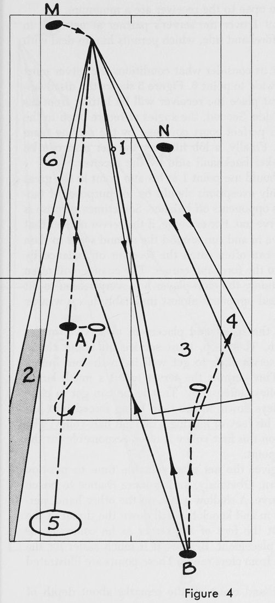
a. Nó nằm ở bên trái tay (backhand), mà như đã nói, nói chung là bên yếu hơn của người nhận giao bóng. b. Những góc trả bóng mở ra cho người nhận giao bóng là tối thiểu. c. Một cú bóng bổng đánh từ điểm 1 vượt qua bạn cặp của người giao bóng ở lưới nhìn chung sẽ đi về bên thuận tay mạnh của anh ta, cho phép anh ta xử lý nó hiệu quả hơn. Trái lại, hãy xem xét những tình huống mà người giao bóng phải đối mặt nếu anh ta chọn giao bóng rộng ra điểm 6. Hình 5 cho thấy những bất lợi liên quan. Thứ nhất, người nhận giao bóng sẽ đánh từ bên thuận tay mạnh mẽ hơn của mình. Thứ hai, những góc trả bóng mở ra cho người nhận giao bóng rộng hơn nhiều: việc che phủ sân hoàn hảo bởi đội giao bóng gần như là bất khả thi. Cuối cùng, một cú bóng bổng đánh vượt qua người đánh lưới có thể dễ dàng được người nhận giao bóng đặt vào bên trái tay yếu hơn của anh ta. Rõ ràng là trong phần lớn các trường hợp, người giao bóng nên dùng điểm 1 làm điểm nhắm. Những ngoại lệ duy nhất nên là nhằm mục đích gây bất ngờ về chiến thuật, để khiến đối phương mất thế cân bằng. Đôi khi sự bất ngờ cũng hiệu quả ở cú giao bóng thứ hai. Ví dụ, nếu người giao bóng nhận thấy người nhận giao bóng có xu hướng tiến lên và vòng người đánh cú giao bóng thứ hai bằng cú thuận tay để đập mạnh, thì anh ta thường có thể bắt được người nhận giao bóng mất thế cân bằng bằng cách cắt cú giao bóng thứ hai vào góc thuận tay. Sự thay đổi đó thường tạo ra một cú trả bóng yếu. Chắc chắn người chơi câu lạc bộ có mọi lý do để đánh sang bên trái, vì đối thủ chơi cuối tuần hầu như luôn có cú trái tay yếu hơn cú thuận tay. Độ sâu, cũng như tốc độ và khả năng đặt bóng của cú giao bóng, đều mang lại thời gian cho đội giao bóng. Cú giao bóng xoáy sâu được đánh ở khoảng ba phần tư tốc độ cho người giao bóng thời gian để lên lưới đủ sâu trước khi thực hiện cú vô-lê đầu tiên. Điều này cho phép người giao bóng đánh một tỷ lệ lớn hơn nhiều trong số các cú vô-lê đầu tiên của mình theo hướng tấn công. Nghĩa là, anh ta có thể lên đủ gần để đập vô-lê xuống, thay vì bị buộc phải đánh một cú vô-lê nhẹ hướng lên từ dưới chân, hoặc thực hiện một cú nửa vô-lê (half-volley) khó khăn. Pha bóng mà người giao bóng thực hiện ở cú vô-lê đầu tiên này...
a. It is on the backhand side, which, as has already been noted, is generally the weaker side of the receiver. b. The angles of return open to the receiver are a minimum. c. A lob hit from point 1 over the server's partner at net will, in general, go to his strong forehand side, which permits him to deal with it more effectively. By way of contrast, let us consider what conditions the server must face if he elects to serve wide to point 6. Figure 5 shows the disadvantages involved. In the first place the receiver will be hitting from his more powerful forehand side. Second, the angles of return open to the receiver are much wider: perfect court coverage by the serving team is practically impossible. Finally, a lob hit over the net man can be placed easily on his weaker backhand side by the receiver. Obviously the server should use point 1 as his aim point in the great majority of cases. The only exceptions should be for purposes of tactical surprise, to keep the opponents off balance. Sometimes surprise is effective on the second serve too. For example, if the server notices that the receiver tends to move in and run around the second serve to slam it with his forehand, he can often catch the receiver off balance by slicing his second serve to the forehand corner. The change will often draw a weak return. Certainly the club player has every reason to hit to the left, as the week-end opponent almost ins ariably has a weaker backhand than forehand. The depth, as well as the speed and placement of service, means time to the serving team. The deep, twist service hit about threefourths speed gives the server time to get well in to the net before making his first volley. This permits the server to hit a much larger percentage of his first volleys offensively. That is, he can get in close enough to punch his volleys down, rather than being forced into hitting a soft volley up from his feet, or making a difficult half-volley. The play made by the server on this first volley is often responsible for the ultimate outcome of the point. Also, the deep serve gives the net man valuable time to position himself to cover the return. Obviously, he has more chance to poach effectively with a deep serve. A shallow serve, on the other hand, permits the receiver to move in and knock the ball down the throat of the servers partner at net, at the feet of the server as he comes in, or sharply cross court for a placement. Besides, it is much easier for the receiver to lob offensively from close range. These points are illustrated in Figure 6. In serving to the backhand court all the remarks about depth of
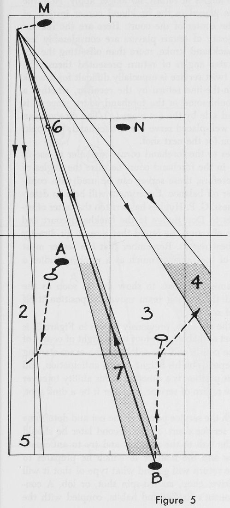
EFFECT OF PLACEMENT OF SERVEEFFECT OF PLACEMENT OF SERVE
VỀ NHỮNG GÓC TRẢ BÓNG KHẢ THI Một cú giao bóng cắt (slice) tới vùng 6 đưa đội giao bóng vào một thế không mấy dễ chịu. Hai bạn cặp phải đối mặt với một cú trả bóng thuận tay mạnh và phải canh chừng những góc sân rộng hơn. Người đánh lưới A phải chọn giữa việc lùi lại và dịch sang một bước để đề phòng một cú đánh thuận tay dọc theo hành lang biên (vùng 2), và việc dịch sang phải một chút để che vùng giữa. Người giao bóng B cũng phải phán đoán trước cú trả bóng. Anh ta phải tiến lên theo hướng giữa để bảo vệ khu vực giữa (vùng 3 và 7) hoặc di chuyển rộng ra để phòng ngừa những cú đánh gắt góc tới vùng 4. Cú đánh góc có thể được đánh mạnh hơn cú dink trong Hình 4. Giờ đây một cú đánh xoáy trên đầu bóng (topped drive) có thể được giữ trong sân; nó bay qua phần thấp hơn của lưới khi được đánh gắt theo hướng chéo sân. Điều này có nghĩa là người giao bóng không có nhiều thời gian để lên tới lưới bảo vệ vùng 4 như anh ta đã có khi giao bóng vào bên trái tay như trong Hình 4. Ngoài ra, những cú bóng bổng đánh tới vùng 5 phải được người đánh lưới A xử lý bằng cú trên đầu trái tay yếu của mình. Đúng vậy, một cú giao bóng tới vùng 6 có nghĩa là đội giao bóng phải phán đoán trước cú trả bóng một cách không sai sót trong việc thiết lập vị trí tấn công bằng vô-lê, nếu không thì đội nhận giao bóng có thể đánh xuyên qua một lỗ hổng để ghi cú đặt bóng hoặc buộc đối phương phải thực hiện một cú vô-lê thứ nhất yếu ớt.
ON POSSIBLE ANGLES OF RETURN A slice serve to area 6 puts the serving team in an unenviable position. The partners face a strong forehand return and must guard wider angles of the court. Net man A has to choose between dropping back and over a step to guard against a forehand drive down the alley (area 2), and moving slightly to the right to cover the center. The server B also has to anticipate the return. He must come up the center to protect the middle (areas 3 and 7) or move wide to protect against sharply angled shots to area 4. The angled shot can be hit harder than the dink in Figure 4. A topped drive can now be kept in the court; it passes over a lower portion of the net when hit sharply cross-court. This means the server does not have as much time to get up to net to protect area 4 as he did when serving to the backhand as in Figure 4. In addition, lobs hit to area 5 must be played on the weak backhand overhead by net man A. Yes, a serve to area 6 means the serving team must anticipate the return unerringly in setting up the volleying offensive position, or the receiving team tan hit through a hole for a placement or force a weak first volley.

giao bóng vẫn tiếp tục giữ được. Tuy nhiên, những nguyên tắc dành cho ô sân thuận tay — vốn được đặt ra để giảm thiểu các góc trả bóng — không còn áp dụng nữa. Giờ đây, nói chung nên đặt cú giao bóng vào góc trái tay thay vì góc thuận tay ở giữa sân. Dưới đây là những lý do: (a) Đại đa số người chơi quần vợt chơi cú trái tay kém hiệu quả hơn hẳn, điều này bù đắp nhiều hơn cả lợi thế tiềm tàng của những góc trả bóng rộng hơn dành cho họ. Cú giao bóng xoáy kiểu Mỹ nảy cao đặc biệt khó chịu với một cú trái tay yếu. (b) Cú trả bóng dọc biên của người nhận giao bóng, dù là cú đánh mạnh hay bóng bổng (lob), đều ít phiền hà hơn ở ô thuận tay, vì nó được người đánh lưới bảo vệ từ phía thuận tay. (c) Người nhận giao bóng khó lòng chạy vòng qua một cú giao bóng được đặt tốt vào bên trái tay: hậu quả là anh ta sẽ lệch hẳn khỏi vị trí cho cú đánh kế tiếp. Những cú giao bóng cắt (slice) và phẳng vào góc thuận tay an toàn hơn khi dùng ở ô trái tay so với ô thuận tay, bởi vì các góc trả bóng bị hạn chế. Vì vậy, có thể tự tin dùng những cú giao bóng này để làm người nhận giao bóng mất thăng bằng. Thử nghiệm sẽ giúp xác định điểm yếu của người nhận giao bóng. G. P. Hughes đã viết rằng sau khi tung ra nhiều kiểu giao bóng khác nhau cho Don Budge ở ô trái tay và nghiên cứu hiệu quả trả bóng, ông nhận thấy một cú giao bóng đánh thẳng vào Budge mang lại kết quả tốt nhất. Hãy nhớ rằng người giao bóng phải dò tìm điểm yếu của người nhận giao bóng giống như một cầu thủ ném bóng (pitcher) nghiên cứu một tay đập bóng (batter) trong bóng chày. Tầm quan trọng của phối hợp đồng đội bắt đầu lộ rõ ngay khi bóng được đưa vào cuộc và đội giao bóng di chuyển để vào đúng vị trí cho cú trả giao bóng. Vị trí ban đầu của người đánh lưới, đã được trình bày trước đó ở Hình 3, là cách lưới sáu đến chín feet và cách khoảng một feet về bên phải điểm giữa của đường chia các ô giao bóng với đường biên dọc. Vị trí xuất phát chính xác của người đánh lưới phụ thuộc vào chiều cao, tầm với, khả năng phán đoán trước và sự nhanh nhẹn của anh ta. Nói cách khác, vị trí của anh ta dài đến mức nào thì cũng xin chịu là ở đó, mỗi người sẽ khác nhau.
service continue to hold. However, the rules for the forehand court, designed to minimize the angles of return, no longer apply. Now the serve generally should be placed in the backhand corner instead of the forehand corner in the center of the court. Here are the reasons why: (a) The great majority of tennis players are considerably less effective in playing the backhand stroke, more than offsetting the potential advantage of greater angles of return presented them. The high-bounding American twist service is especially difficult for a weak backhand. (b) The down-the-line return by the receiver, whether a drive or a lob, is less troublesome in the forehand court, since it is covered from the forehand side by the net man. (c) The receiver can ill afford to run around a well-placed serve to the backhand: he would end up way out of position for the next shot. The slice and flat serves to the forehand corner are safer to use in the backhand court than in the forehand court because the angles of return are restricted. Therefore, these serves can be used with confidence to keep the receiver off balance. Experiment will help to determine the receiver's weakness. G. P. Hughes has written that after offering up a variety of serves to Don Budge in the backhand court and studying the effectiveness of return, he found that a serve hit directly at Budge gave him the best results. Remember that the server must feel out the weaknesses of the receiver much as a pitcher studies a batter in baseball. The importance of teamwork begins to show just as soon as the ball is put into play and the serving team moves to position itself properly for the return of service. The initial position of the net man, previously shown in Figure 3, is six to nine feet from the net and about one foot to the right of center of a line dividing the service courts and the sideline. The exact starting position of the net man depends on his height, reach, anticipation, and agility. In other words, his position is a function of his ability to cover his area and cope with the return of service, whether it be a dink shot, a drive, or a lob. The net man must watch the service pass over the net and determine where it will land in the service court. A split-second later he should shift his attention from the ball to the receiver and try to anticipate from the receiver's stance and the manner in which he prepares to make his stroke where the return will go and what type of shot it will be—flat drive, top-spin drive, chop, angled-spin shot, or lob. A continuing study of his opponent’s strokes and habits, coupled with the
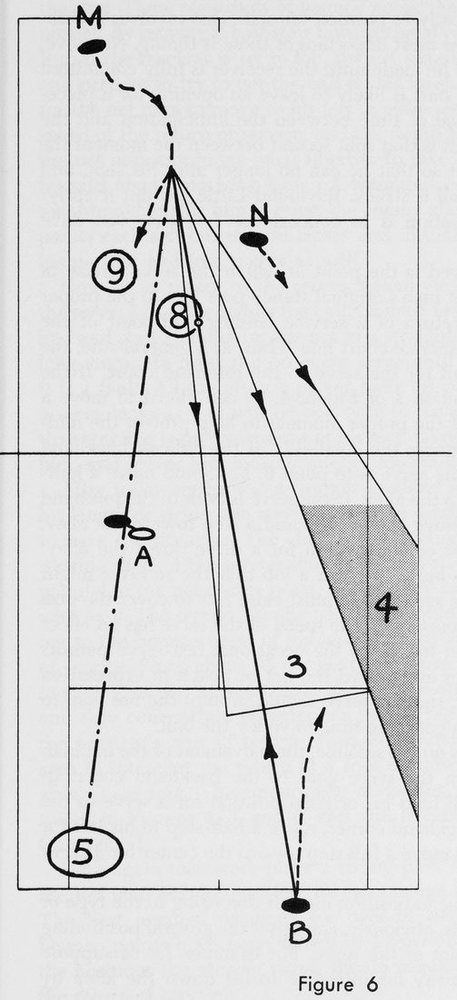
THE HAZARDS OF THE SHALLOW SERVETHE HAZARDS OF THE SHALLOW SERVE
Một cú giao bóng nông (ngắn) dễ trao thế tấn công cho đội nhận giao bóng. Sơ đồ này cho thấy điều đó diễn ra như thế nào. Người nhận giao bóng M tiến vào và chạy vòng qua cú giao bóng nảy ở khu vực 8, để đập bóng bằng cú thuận tay và tiến vào lưới. Người giao bóng B phải chạy cật lực, nhưng dù vậy anh ta không thể tiến vào đủ sâu để thực hiện một cú vô-lê đầu tiên hiệu quả. Thực tế, anh ta không thể nào tới được đường giao bóng. Vì thế người nhận giao bóng M có thể hoặc đánh cú của mình vào điểm sơ hở ngay dưới chân người giao bóng ở khu vực 8, hoặc nhắm tới một cú đặt bóng có thể thành công ở khu vực 4, nơi người giao bóng không có thời gian để bảo vệ. Người đánh lưới A phải lùi lại một chút và dịch về phía giữa sân để phòng thủ trước một quả bóng đánh xuyên qua mình ở cự ly sát mặt, và để phòng ngừa bóng bổng. Dù vậy anh ta vẫn không thể phòng thủ tốt trước một cú bóng bổng được ngụy trang tới khu vực 5. Một cú giao bóng nông đánh vào khu vực 9 còn tệ hơn nữa, vì góc rộng và các khu vực bổng bóng mở ra cho người nhận giao bóng M gần như chắc chắn sẽ cho phép anh ta đẩy đội giao bóng vào tình thế thực sự khó khăn. Trong trường hợp này, người đánh lưới A thường sẽ di chuyển sang trái và lùi lại một bước, còn người giao bóng B nên tiến lên rộng hơn và cầu mong mình kịp đưa vợt vào bóng.
A shallow serve is likely to hand the offense to the receiving team. This diagram shows how. Receiver M moves in and runs around the serve bouncing at area 8, to pound it with his forehand and move in to net. Server B must hustle, but even so he cannot get in far enough to make an effective first volley. In fact, he cannot quite get to the service line. Thus receiver M can either play his shot at the vulnerable spot at the server's feet in area 8 or go for a possible placement in area 4, which the server does not have time to cover. Net man A must move a bit back and toward the center to defend against a ball hit through him at point-blank range, and to protect against a lob. Still he is unable to defend well against a disguised lob to area 5. A shallow serve hit to area 9 is even worse, for the large angle and lobbing areas open to receiver M will almost certainly allow him to put the serving team in real trouble. In this case net man A would normally move to his left and back a step, and server B should come up wider and pray that he can get his racquet on the ball.

hiểu biết về chỗ bóng giao sẽ nảy xuống, sẽ giúp người đánh lưới phán đoán trước khá chính xác điều gì nên chờ đợi ở cú trả bóng. Giờ thì người đánh lưới đã sẵn sàng vào vị trí. Việc này liên quan đến một số yếu tố. Có lẽ yếu tố quan trọng nhất là thời điểm. Không được thực hiện động tác nào, ngoài một động tác giả, cho tới khi người nhận giao bóng đã hoàn toàn dốc vào cú đánh của mình. Một khởi đầu quá sớm dễ mở ra sơ hở cho một cú đặt bóng. Thực tế, khoảng thời gian giữa lúc phán đoán trước và lúc ra tay cực kỳ ngắn ngủi. Đó là khoảnh khắc tích tắc giữa thời điểm người nhận giao bóng đã sẵn sàng đến mức không còn đổi được cú đánh của mình nữa, và thời điểm bóng được đánh đi. Raymond Little đã diễn đạt thật khéo léo: “Một nửa nghệ thuật phán đoán trước là che giấu việc mình đã phán đoán trước.” Yếu tố kế tiếp liên quan là điểm mà cú giao bóng rơi xuống trong ô giao bóng. Tư thế ban đầu của người đánh lưới đặt anh ta vào vị trí phù hợp để xử lý cú trả giao bóng rơi vào điểm giữa theo chiều rộng của đường ô giao bóng đối phương. Như vậy, theo nguyên tắc chung, người đánh lưới giữ nguyên vị trí khi giao bóng vào ô thuận tay. Nếu cú giao bóng vào vị trí ưa thích số 1 của Hình 4, anh ta có thể cho phép mình dịch một bước về phía giữa sân đúng lúc để góp phần bảo vệ khu vực giữa, và phần lớn có thể bỏ qua khả năng xảy ra cú trái tay khó nhằn dọc hành lang biên. Nếu cú giao bóng vào điểm 6, anh ta nên dịch nửa bước sang trái để bọc hành lang biên. Nếu cú giao bóng vừa vào bên thuận tay vừa nông, anh ta nên lùi lại một bước và dịch một bước về phía hành lang biên, vì người nhận giao bóng gần như ở ngay trên đầu anh ta để đánh cú dọc hành lang biên. Lùi lại một bước cũng giúp bọc cú bóng bổng mà người nhận giao bóng có thể đánh chéo sân để đánh lừa người giao bóng, người lúc này phải khép vào thật nhanh để phòng ngừa khả năng một cú chéo sân sắc bén. Tốc độ của cú giao bóng cũng ảnh hưởng đến vị trí của người đánh lưới, bởi vì thỉnh thoảng có một cú giao bóng nhanh cho phép anh ta mạo hiểm hơn và áp sát lưới hoặc cướp bóng với dự đoán có một cú trả bóng yếu. Một cú giao bóng chậm, nông nên khiến người đánh lưới lùi lại nửa bước để có thêm thời gian vô-lê bóng. Vì cú thuận tay của anh ta nằm ở phía đường biên dọc, động tác di chuyển của người đánh lưới có hơi khác khi cú giao bóng đi vào ô trái tay. Nói chung, người đánh lưới sẽ giữ nguyên vị trí ban đầu khi giao bóng tới điểm ưa thích ở góc trái tay, dịch nửa bước sang trái khi giao bóng vào giữa, và dịch trọn một bước về phía giữa sân khi giao bóng vào góc thuận tay. Cuối cùng, người đánh lưới phải vào vị trí tùy theo kiểu cú trả bóng mà anh ta dự đoán trước. Điều này, hiển nhiên, có thể phá vỡ cách định vị chung dựa trên điểm nảy của cú giao bóng. Ví dụ, giả sử người nhận giao bóng đã để lộ ý định đánh dọc hành lang biên bằng cách
knowledge of where the serve is landing, should help the net man to anticipate quite accurately just what to expect for a return. The net man is now ready to position himself. This involves a number of factors. Perhaps the most important of these is timing. No move, other than a fake, should be made until the receiver is fully committed to his shot. A premature start is likely to leave an opening for a placement. In fact, the interval of time between the anticipation and the move is extremely brief. It is that split second between the moment the receiver is sufficiently set so that he can no longer alter his shot, and the moment when the ball is struck. Raymond Little has put it aptly: “Half the art of anticipation is to conceal the fact that you have anticipated.” The next factor involved is the point at which the serve strikes in the service court. The net man’s original stance puts him in the proper position to handle the return of a service landing mid-point of the width of the opponent's service court line. Thus, as a general rule, the net man holds his ground for the serve to the forehand court. If the serve is to preferred position 1 of Figure 4, he can afford to move a step toward the center at the proper moment to help protect the middle, and he can largely ignore the possibility of the difficult backhand shot down the alley. If the serve is to point 6, he should move a halfstep to the left to cover up the alley. If the serve is both to the forehand and shallow, he should move back a step and a step toward the alley, for the receiver is almost on top of him for a drive down the alley. Moving back a step also helps to cover a lob that the receiver might hit cross-court to fool the server, who must close fast to cover the possibility of a sharp cross-court shot. The speed of the serve has an effect on the net man’s position too, since the occasional fast serve permits him to take more chances and crowd the net or poach in expectation of a weak return. A slow, shallow serve should prompt the net man to move back a half-step, to get more time to volley the ball. Because his forehand is on the sideline, the movement of the net man is slightly different when the serve goes to the backhand court. In general, the net man will hold his original position for a serve to the preferred point in the backhand corner, move a half-step to his left for a serve to the center, and move a full step toward the center for a serve to the forehand corner. Finally, the net man has to position himself according to the type of return he anticipates. This, obviously, can upset the general positioning based on the bounce point of the serve. For example, let us suppose the receiver has given away his intention to hit down the alley by
THE SERVETHE SERVE
trước tiên nhìn về hướng đó, đặt chân, và ổn định tư thế cho cú đánh. Sau đó, bất kể điểm nảy ở đâu, người đánh lưới nên chuẩn bị bằng cách dịch nửa bước về phía hành lang biên đúng lúc. Nhưng nếu người nhận giao bóng đã sẵn sàng bổng bóng, người đánh lưới nên lùi lại một bước và chuẩn bị cố bắt bóng bằng cú trên đầu thuận tay. Điều này đòi hỏi người đánh lưới phải di chuyển sang trái ở cả hai ô sân. Bằng cách phán đoán trước tốc độ của cú trả giao bóng và độ sâu nơi bóng sẽ được đánh đi, người đánh lưới có thể ước lượng được mình được phép tự do tới mức nào khi cướp bóng. (Sẽ còn nói thêm về kỹ thuật cướp bóng ở phần sau.) Sự tập trung liên tục của người đánh lưới sẽ giúp anh ta đoán được ý đồ của đối phương và thắng hoặc cứu được nhiều điểm mỗi ván; nhưng những phút lơ đãng và những động tác sai thời điểm cũng có thể làm bạn cặp của anh ta lúng túng và làm mất điểm. Giờ hãy quay lại với người giao bóng, người mà chúng ta đã bỏ lại trong lúc đang đánh cú giao bóng. Ngay sau khi đánh bóng, anh ta phải đưa chân qua vạch cuối sân và bắt đầu chạy thẳng tới lưới bằng một loạt bước nhanh, dài. Anh ta phải chạy sau mỗi cú giao bóng cho tới khi chắc chắn tuyệt đối rằng đó là một cú giao bóng hỏng. Rất thường thấy một người chơi dừng đà chạy tới lưới khi cú giao bóng trông như sắp ra ngoài, để rồi bóng lại rơi vào trong an toàn. Thế là đội nhận giao bóng trả một quả ngay dưới chân anh ta, tước mất thế tấn công và để anh ta trông cực kỳ ngớ ngẩn. Sau khi theo cú giao bóng của mình chạy thẳng vào khoảng bốn bước, tùy theo độ dài sải bước, người giao bóng nên sẵn sàng đổi hướng để đối phó tình hình. Việc đổi hướng nên được thực hiện khi còn cách đường giao bóng khoảng một sải bước. Một số người chơi thực sự đưa cả hai bàn chân song song với lưới ở điểm này, để có thể di chuyển theo bất kỳ hướng nào một cách dễ dàng. Người giao bóng, cũng như người đánh lưới, nên vào vị trí tùy theo điểm nảy của cú giao bóng mình đánh và dự đoán của mình về cú trả giao bóng. Vì khoảng 85 phần trăm các cú trả giao bóng đều đánh vào người giao bóng đang tiến vào, anh ta phải nhanh chóng ghi nhận điểm nảy gần đúng rồi tập trung chú ý không phải vào bóng mà vào việc phán đoán trước kiểu trả bóng của người nhận giao bóng. Sau đó anh ta phải di chuyển về phía khu vực thích hợp để chặn cú trả bóng tại một điểm càng gần lưới càng tốt — khoảng chín feet. Tầm quan trọng của việc tiến sát lưới đã được minh họa ở các Hình 4, 5 và 6, và sẽ còn rõ hơn nữa ở Chương VI. Ở đây một lần nữa phối hợp đồng đội đóng vai trò mạnh mẽ, vì khi người giao bóng thấy người đánh lưới đổi vị trí, anh ta có thể đổi vị trí của mình cho tương ứng. Những vị trí trung bình tốt nhất cho việc phòng thủ tổng thể với nhiều điểm nảy giao bóng khác nhau đã được trình bày ở các Hình 3, 4.5 và 6. Đó là những vị trí mà các đội giao bóng nên chiếm giữ khi chuẩn bị xử lý cú trả giao bóng.
looking first in that direction, placing his feet, and setting himself for the shot. Then, regardless of bounce point, the net man should prepare himself by moving a half-step toward the alley at the proper moment. But, if the receiver is set to lob, the net man should move back a step and prepare to try to get the ball on his forehand overhead. This calls for the net man to move to his left in either court. By anticipating the speed of the return of service, and the depth from which it will be hit, the net man can judge what liberties to take in poaching. (More will be said about poaching later.) Continuous concentration by the net man should enable him to guess the enemy plans and win or save many points each set; but mental lapses and ill-timed moves can embarrass his partner and lose points as well. Now let us return to the server, whom we left in the act of hitting the serve. Just after he hits the ball, he must bring his foot over the base line and start running for the net in a straight line in a series of quick, long steps. He must run on every serve until he is absolutely certain it is a fault. All too often a player halts his run toward the net when a serve looks as if it will be out, only to have it drop in safely. Then the receiving team returns one at his feet, takes the offensive away from him, and leaves him looking mighty foolish. After following his serve straight in about four steps, depending on his length of stride, the server should be prepared to change direction to meet the situation. The change of direction should be made about a stride short of the service line. Some players actually bring both feet parallel to the net at this point, so that they can move in any direction with ease. The server, like the net man, should position himself according to the bounce point of his serve and his anticipation of the return of service. Since about 85 per cent of returns of service are hit at the incoming server, he must note quickly the approximate bounce point and then concentrate his attention not on the ball but on anticipating the receiver’s type of return. Then he must move toward the proper area to intercept the return at a spot as close to the net as possible— about nine feet. The importance of getting in close has been illustrated in Figures 4, 5, and 6, and will become even more evident in Chapter VI. Here again teamwork plays a strong part, for when the server sees the net man change position, he can change his position accordingly. The best average positions for over-all defense of several service bounce points have been shown in Figures 3, 4.5, and 6. These are the positions the serving teams should occupy in preparing to handle the return of service.
Một cú bóng bổng được thực hiện tốt đặc biệt khó xử lý đối với người giao bóng, vì anh ta đang lao nhanh về phía trước để tiến sát lưới; và một cú bóng bổng sau cú giao bóng thứ hai, khi người nhận giao bóng đã ở gần hơn, lại càng khó hơn. Vì vậy người giao bóng phải phán đoán trước những cú đánh này và đổi hướng khi còn cách ô giao bóng một sải bước. Người đánh lưới phải phán đoán trước những cú bóng bổng chéo sân để có thể bọc lót cho bạn cặp khi người giao bóng không phán đoán kịp và bị mất thăng bằng. Một lời khuyên nữa: bạn nên làm quen với các luật lỗi chân (foot fault) mới và cố gắng hết sức để tránh vi phạm chúng. Đã đủ tệ khi chiếm lợi thế không công bằng trước đối thủ trong một trận đấu giao hữu, khi mà các lỗi thường không bị gọi. Nhưng trong lúc căng thẳng của một trận đấu quan trọng, thật đau lòng khi lao về lưới sau một cú giao bóng đẹp, sẵn sàng đập trả cú trả bóng — rồi nghe trọng tài gọi lỗi chân. Điều này đã xảy ra ở những thời điểm then chốt trong nhiều trận đấu, và ảnh hưởng gây mất tinh thần của nó đã bị quy cho là nguyên nhân của vô số thất bại. Những đội hình giao bóng khác thường Hai châm ngôn của thế giới thể thao — làm đối thủ mất thăng bằng và đổi chiến thuật khi đang thua — là nguyên nhân ra đời của mưu mẹo khác thường trong mọi môn thể thao. Thật hợp lý khi những thay đổi phòng thủ bất ngờ trở thành yếu tố quan trọng trong lối chơi đánh đôi. Vào khoảng đầu thế kỷ này, cả người Mỹ lẫn người Úc đều thử nghiệm một đội hình đảo ngược cho đội giao bóng. Cách bố trí người đánh lưới đứng cùng phía sân với người giao bóng (được trình bày ở Hình 7) được thiết kế để hóa giải một cú trả giao bóng chéo sân xuất sắc. Nói cách khác, người giao bóng đã quá mệt mỏi vì phải đào những cú trả giao bóng được đặt tuyệt đẹp lên khỏi mặt sân và thua nhiều điểm do những cú vô-lê đầu tiên yếu ớt của mình. Thay vì tuyệt vọng hay mất bình tĩnh (như quá nhiều tay vợt trẻ của chúng ta dường như vẫn làm), anh ta quyết định đổi chiến thuật và thử một đội hình mới. Có hai lý do khiến điều này hợp lý. Thứ nhất, người đánh lưới có thể chiếm vị trí phòng thủ tốt nhất chống lại cú trả giao bóng, và không bị buộc phải di chuyển quá xa để vô-lê. Thứ hai, người nhận giao bóng, khi đối mặt với một cách phòng thủ hóa giải cú trả bóng mà anh ta đã luyện tập, thường kém hiệu quả hơn mỗi khi anh ta chọn đánh dọc biên vào người giao bóng đang tiến lên ở phía sân đảo ngược. Nếu được thực hiện đúng cách, những đội hình giao bóng khác thường có thể gây rối loạn tinh thần tối đa cho đối phương. Với đủ loại đội hình, kỹ thuật cướp bóng và động tác giả được sử dụng chống lại mình, người nhận giao bóng có thể thực sự bị
A well-executed lob is particularly difficult for the server to handle, since he is moving forward rapidly to get in close to net; and a lob on second serve with the receiver in closer is even more difficult. Therefore the server must anticipate these shots and change direction a stride short of the service court. The net man must anticipate crosscourt lobs so that he can cover for his partner when the server fails to anticipate and gets caught off balance. Another bit of advice: you should familiarize yourself with the new foot fault rules and work hard to avoid breaking them. It is bad enough to take unfair advantage of one’s opponents in a friendly match, when faults are usually not called. But in the heat of an important match it is heartbreaking to sprint for the net behind a beautiful serve, all prepared to smash a return—and then have the judge call a foot fault. It has happened at critical points in many a match, and its upsetting influence has been blamed for numerous defeats. Unconventional Serving Formations Two axioms of the sporting world—keep the opponents off balance and change tactics if losing—are responsible for the birth of the unconventional stratagem in every game. It is only logical that surprise changes of defense should become important elements in the game of doubles. Near the turn of the century both the Americans and the Australians experimented with a reverse formation for the serving team. The practice of placing the net man on the same side of the court of the server (shown in Figure 7) was designed to offset an outstanding cross-court return of service. In other words, the server just got very tired of digging beautifully placed returns of service out of the turf and losing many points as a result of his weak first volleys. Instead of despairing or losing his temper (as too many of our younger players seem to do), he decided to change tactics and try a new formation. There are two reasons why this made good sense. First, the net man can take up the best defensive position against the return of service, and not be forced to move very far to make the volley. Second, the receiver, faced with an offsetting defense for his practiced return, is usually less effective whenever he elects to play down the line at the server coming up the reverse side. Properly executed, unconventional serving formations can be most disconcerting to the opponents. With the variety of formations, poaches, and fakes used against him, the receiver can literally be
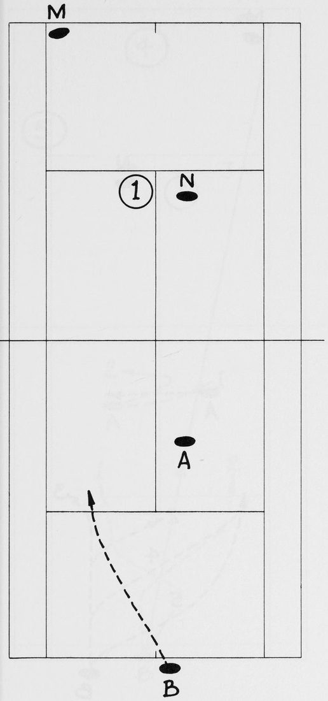
UNCONVENTIONAL SERVING FORMATIONSUNCONVENTIONAL SERVING FORMATIONS
Hình này minh họa đội hình đảo ngược của đội giao bóng, được dùng để đối phó một đối thủ có cú trả giao bóng chéo sân xuất sắc. Cú đánh này khó hơn đối với người giao bóng khi giao bóng từ bên phải, vì anh ta có thể buộc phải chạy xa để thực hiện một cú vô-lê trái tay. Vì lý do này, người giao bóng phải giữ cú giao bóng của mình gần điểm ngắm số 1 ở giữa sân để ngăn chặn một cú trả giao bóng tấn công dọc hành lang biên. Lưu ý rằng người giao bóng vào vị trí gần giữa sân để giảm thiểu quãng đường anh ta phải đi để tới vị trí đánh lưới của mình. Khi dùng kiểu đội hình này để giao bóng vào ô trái tay, cú giao bóng có thể được đặt vào giữa sân để giảm thiểu góc trả bóng, hoặc vào điểm góc trái tay quen thuộc. Trong trường hợp này, giao bóng rộng là an toàn vì cú trả bóng trái tay tấn công dọc biên khó thực hiện hơn, và người giao bóng B có cú vô-lê thuận tay dễ đánh hơn. Hình 7
This illustrates the reverse formation of the serving team, used against an opponent having an outstanding crosscourt return of service. The play is more difficult for the server when serving from the right side, as he may be forced to run far to make a backhand volley. For this reason the server must keep his serve near the center aim point 1 to prevent an offensive return of service down the alley. Note that the server positions himself near the center of the court in order to minimize the distance he must cover to reach his net position. When using this type of formation to serve to the backhand court, the service can be placed down the middle to minimize the angle of return or to the usual backhand corner spot. It is safe in this instance to serve wide because the offensive backhand return down the line is more difficult to make, and server B has the easier forehand volley to play.

UNCONVENTIONAL SERVING FORMATIONSUNCONVENTIONAL SERVING FORMATIONS
Sơ đồ này trình bày cú cướp bóng (poach) bất ngờ và cú cướp bóng có ra hiệu. Trong cú cướp bóng bất ngờ, người đánh lưới A tự mình quyết định. Anh ta thường chọn cướp bóng ở một cú giao bóng nhanh vào điểm ngắm 1, điều này thường buộc đối phương phải trả một cú yếu hoặc bổng; anh ta phải ra tay ngay khi người nhận giao bóng M đã dốc vào cú đánh, nếu không người nhận giao bóng sẽ nhận ra động tác của anh ta và luồn một quả dọc biên để có một cú đặt bóng dễ dàng. Người giao bóng B theo cú giao bóng của mình chạy thẳng vào lưới theo cách thông thường cho tới khi nhận ra cú cướp bóng; sau đó anh ta phải quyết định nhanh chóng và tự mình bọc lấy một bên, còn người đánh lưới A làm phần việc của mình để bọc bên kia, và cả hai cùng chia nhau bảo vệ sân. Trong cú cướp bóng có ra hiệu, người đánh lưới A chạy thẳng vào hai bước, rồi cắt sang trái theo đường 4 để bọc phía trái tay. Nếu người giao bóng B bắt đầu di chuyển sang trái quá sớm, thì cú cướp bóng chắc chắn sẽ thất bại, vì như vậy là đã quá sớm để ra hiệu cho người nhận giao bóng M và cho anh ta thời gian đổi hướng đánh trả để giành điểm. Hình 8
M This diagram shows the @ surprise poach and the signaled poach. In the surprise poach net man A is on his own. He usually chooses to poach on a fast service to aim point 1, which usually forces a weak or high the moment receiver M_ is committed, or the receiver will note his move and slip one down the line for an easy placement. Server B follows his service straight in to net in the normal manner until he notes the poach; then he or 3 to cover the court. In the signaled poach the net man will move he should A go straight in for two steps, then cut left along path 4 to cover the backhand side. If server B starts to move to his left too soon, as shown in Pe \ NA poach to receiver M and all lows him time to change his \ \ | for the point. =
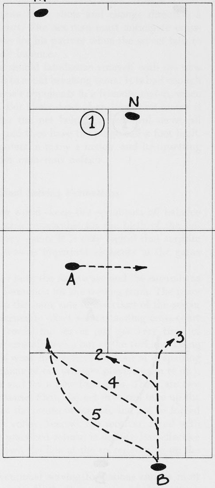
UNCONVENTIONAL SERVING FORMATIONSUNCONVENTIONAL SERVING FORMATIONS
Có thể có hai động tác giả từ đội hình giao bóng đảo ngược. Ở trường hợp 1, người giao bóng B giao bóng vào góc trái tay (điểm ngắm 3) và làm động tác giả rất đẹp bằng cách khởi hành lên phía bên phải theo đường 1. Người đánh lưới A giữ nguyên vị trí cho tới khi người nhận giao bóng M đã dốc vào cú đánh, rồi nhanh chóng cướp bóng theo đường 1 với hy vọng có thể vô-lê cú trả giao bóng theo hướng chéo sang điểm ngắm 4 để giành điểm. Ở trường hợp 2, người đánh lưới A bắt đầu cú cướp bóng của mình theo đường 2 trong khi người giao bóng B giữ cho động tác giả có vẻ thật bằng cách tiến thẳng vào theo đường 2 trước khi cắt sang phải. Người đánh lưới A, sau khi đã dụ được người nhận giao bóng M trả một cú chéo sân, đổi hướng theo đường 2 với hy vọng có thể vô-lê dễ dàng tới điểm ngắm 5 để giành điểm. Hình 9
Two fakes are possible from the reverse serving formation. In case 1, server B serves to the backhand corner (aim point 3) and fakes beautifully by starting up the right side on path 1. Net man A holds his position until receiver M is committed and then poaches rapidly along path 1 in hopes that he can volley the return of service diagonally to aim point 4 for the point. In case 2, net man A starts his poach along path 2 while server B keeps the fake authentic by moving in straight along path 2 before cutting to the right. Net man A, having drawn a cross-court return by receiver M, reverses his field along path 2 in the hope he can volley easily to aim point 5 for the point.
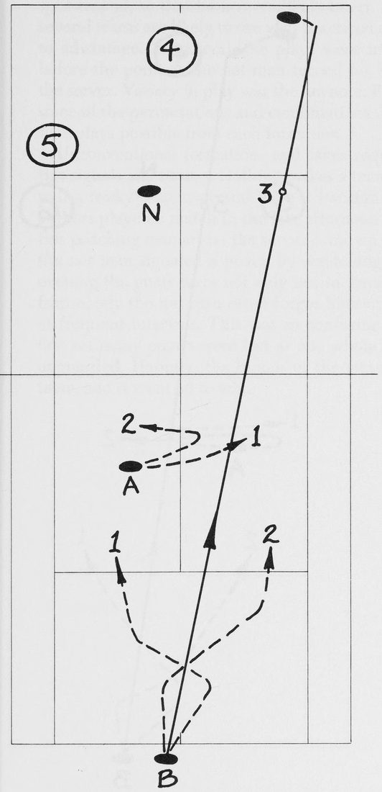
UNCONVENTIONAL SERVING FORMATIONSUNCONVENTIONAL SERVING FORMATIONS
Sơ đồ này trình bày hai động tác giả từ đội hình giao bóng thông thường. Ở trường hợp thứ nhất, cú giao bóng được đánh tới điểm ngắm 3. Người đánh lưới làm động tác giả cướp bóng bằng cách khởi hành sớm theo đường 1, trong khi người giao bóng B tiếp diễn động tác giả bằng cách di chuyển sang trái theo đường 1. Sau đó người đánh lưới A di chuyển nhanh sang trái để vô-lê cú trả bóng dọc biên mà anh ta đã dụ được, tới điểm ngắm 4 để giành điểm. Ở trường hợp thứ hai, cú giao bóng được đánh tới điểm ngắm 5 và người đánh lưới A di chuyển sang trái sớm hơn dự kiến để bọc cú trả bóng dọc biên và dụ một cú trả bóng chéo sân. Trong khi đó người giao bóng B di chuyển thẳng vào, hoàn tất màn đánh lừa trước khi bẻ sang trái theo đường 2. Rồi đúng lúc, người đánh lưới A nhanh chóng cướp bóng sang phải để đón cú trả bóng chéo sân tới điểm ngắm 6 để giành điểm. Hình 10
This diagram shows two | M fakes from the conventional QP. serving formation. In the first case the serve is hit to aim point 3. The net man fakes a poach by starting early along path 1, while the server B continues the fake by moving to his left = along path 1. Then net man A moves rapidly to his left to volley the down-the-line return he has drawn to aim point 4 for the point. In the second case the serve is hit to aim point 5 and net man A moves ahead of schedule to his left to cover the down-the-line return and draw a cross-court return. Meanwhile server B moves straight deception before swerving to his left along path 2. Then, at the proper moment, net man A poaches rapidly to his right cross-court return to aim point 6 for the point.
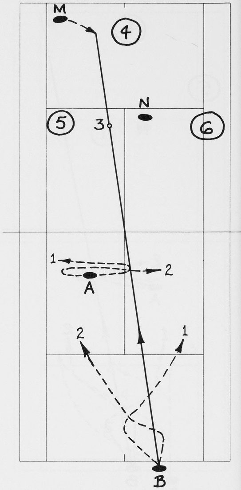
THE SERVETHE SERVE
bị làm cho rối trí. Người nhận giao bóng bị những chiến thuật như vậy buộc phải quan sát cả động tác di chuyển của đội giao bóng lẫn quả bóng cho tới tích tắc cuối cùng, nên càng dễ mắc sai sót. Ở những giải đấu quan trọng, một số đội thường tận dụng những đội hình khác thường đã được luyện tập kỹ càng. Nói chung, các miếng đánh được khởi động bằng những tín hiệu được sắp đặt trước khi bắt đầu điểm bóng, khi người đánh lưới quay lưng vào lưới và đối diện với người giao bóng. Sự đa dạng trong lối chơi là tinh thần chủ đạo. Các Hình 7, 8, 9 và 10 cho thấy một số cách hoán vị và phối hợp. Lưu ý rằng có thể có nhiều miếng đánh giả từ mỗi đội hình. Những đội hình khác thường và các động tác giả đòi hỏi hai bạn cặp phải luyện tập tín hiệu và thời điểm. Không gì khiến một đội cảm thấy ngớ ngẩn hơn là tung ra một mưu mẹo khéo léo rồi lại bị phản tác dụng. Ví dụ, một trong các tác giả đã chơi một trận vào lúc xế chiều với một đội có miếng cướp bóng thế này: người giao bóng tiến lên phía sân đảo ngược mỗi khi người đánh lưới ra hiệu cướp bóng bằng cách gãi lưng. Buổi chiều đặc biệt hôm ấy, bọ mòng không chỉ xuất hiện đông đảo mà còn đốt rất dữ dội. Đáng tiếc là người đánh lưới thường quên mình và gãi lia lịa trong nhiều khoảng thời gian. Điều này khiến người giao bóng rối trí đến mức trong ván đầu tiên nhiều điểm bị mất vì cả một bên sân bị bỏ trống không người canh. May thay, sự hài hước của tình huống đã cứu đội hay gãi này, và họ tiếp tục chơi để giành chiến thắng.
driven to distraction. The receiver is forced by such tactics to watch the movements of the serving team, as well as the ball, until the last split-second, so that he is more likely to err. In important tournaments several teams are likely to use well-practiced unconventional formations to advantage. In general, the plays were triggered by signals set up before the point as the net man turned his back to the net and faced the server. Variety in play was the keynote. Figures 7, 8, 9, and 10 show some of the permutations and combinations. Note that there are several fake plays possible from each formation. Unconventional formations and fakes require the partners to practice signals and timing. Nothing makes a team feel more foolish than to pull a tricky maneuver and have it backfire. For example, one of the authors played a match in the late afternoon against a team which had this poaching maneuver: the server came up the reverse side whenever the net man signaled a poach by scratching his back. This particular evening the gnats were not only out in force but biting savagely. Unfortunately the net man often forgot himself and scratched vigorously at frequent intervals. This was so confusing to the server that in the first set many points were lost as one whole side of the court was left unguarded. Happily, the humor of the situation saved the scratching team, and it went on to win.
5. Cú Trả Giao Bóng
Cú trả giao bóng được nhiều người coi là cú đánh đơn lẻ quan trọng nhất trong đánh đôi, vì dù bạn thắng được tất cả các cú giao bóng của mình, bạn vẫn phải phá được cú giao bóng của đối phương ít nhất một lần để thắng một ván. Cú trả giao bóng chắc chắn là cú đánh khó nhất để vừa chơi ổn định vừa hiệu quả. Nếu bạn nghi ngờ điều đó, hãy thử xem việc phá giao bóng hiếm khi được tạo dựng đến mức nào trong đánh đôi đỉnh cao. Một trận vô địch trung bình chỉ có khoảng một lần phá giao bóng trong bảy game, và nhiều khi một người giao bóng đặc biệt giỏi sẽ giữ được cú giao bóng của mình suốt một quãng dài. Ví dụ, Rex Hartwig đã thắng cú giao bóng của mình ba mươi bảy lần liên tiếp trong hành trình đoạt chức vô địch nước Mỹ năm 1953! Kỷ lục của Hartwig và những kỷ lục tương tự phần lớn là trách nhiệm của người nhận giao bóng, vì chính chất lượng cú trả giao bóng của anh ta quyết định chiến thuật của đội phòng thủ và đội tấn công ở đầu mỗi điểm bóng. Bảng VI ghi nhận một cách ấn tượng sức mạnh tương đối thấp của cú trả giao bóng. Khi vào thế chuẩn bị, người nhận giao bóng nên khắc ghi ba mục tiêu. Đầu tiên và quan trọng nhất, anh ta phải trả được cú giao bóng. Không ai từng thắng một điểm bằng cách không trả nổi cú giao bóng, và nhiều điểm đã được thắng nhờ những cú trả bóng tệ nhất vì ngay cả đối thủ giỏi nhất cũng sẽ mắc lỗi. (Thực tế, gần một nửa số điểm thắng được từ những cú trả giao bóng thành công là nhờ lỗi của đội giao bóng!) Việc buộc đội kia phải tự mình thắng điểm là điều bắt buộc. Thứ hai, người nhận giao bóng nên cố thực hiện một cú trả bóng cho phép đội mình giành thế tấn công hoặc chiếm được vị trí lưới một cách an toàn. Thứ ba, anh ta nên tiến lên lưới ngay ở cơ hội sớm nhất có thể. Nói thì dễ, nhưng làm không dễ.
The return of service is considered by many the most important single shot in doubles, since, even if you win all your services, you must break through the opponent’s serve at least once to win a set. The return of service is certainly the most difficult shot to play both consistently and effectively. If you doubt it, just consider how seldom service breaks are engineered in good doubles. An average championship match has only about one service break in seven games, and many times a particularly good server will go for a long stretch without losing his delivery. For example, Rex Hartwig won his service thirty-seven consecutive times in capturing the United States title in 1953! Hartwig’s record and others like it are largely the receiver's responsibility, since it is the quality of his return of service that determines the tactics of the defensive team and the offensive team at the start of each point. Table VI notes dramatically the low relative potency of the return of service. As he lines up, the receiver should bear three objectives in mind. First and foremost he must return the service. No one ever won a point by failing to return service, and many a point has been won on the worst of returns because even the best of opponents will err. (In fact, almost half the points won on successful returns of service are due to errors by the serving team!) Forcing the other team to win the point is a must. Second, the receiver should try to make a return that will allow his team to take the offensive or to gain the net position safely. Third, he should make his way to the net at the earliest possible opportunity. This is easy to say, but not easy to do.
THE RETURN OF SERVICETHE RETURN OF SERVICE
Thật ra, người nhận giao bóng đang ở trong tình thế vô cùng khó xử. Anh ta đứng đó, đối mặt với một gã lực lưỡng chuyên đánh cú giao bóng xoáy, nảy cao, chậm vào bên trái tay yếu của anh ta. Sau đó người giao bóng sải bước vào lưới, nơi anh ta nhập bọn với bạn cặp. Trông họ như hai gã khổng lồ đang gầm gừ. (Stoefen thực sự có vóc dáng của một trung phong bóng rổ nhà nghề.) Người nhận giao bóng tội nghiệp phải để một mắt vào bóng để có thể đánh nó, một mắt vào người đánh lưới để xem anh ta có định cướp bóng không, và một mắt vào người giao bóng để xem anh ta đang vào vị trí ở đâu. Với chỉ hai con mắt! Trên hết thảy những điều đó, anh ta phải đưa ra quyết định trong tích tắc về kiểu cú đánh mình sẽ thực hiện và nơi mình sẽ cố đặt bóng. Những khó khăn và áp lực lớn đến mức khả năng kiểm soát của một tay đánh đôi lão luyện gần như là một điều kỳ diệu. Số liệu thu thập về John Bromwich trong các trận đấu vô địch cho thấy trong hai trận anh ta chỉ không trả nổi hai mươi mốt cú giao bóng trong một trăm game, đạt tỷ lệ thành công trên .900! Tỷ lệ thành công thông thường của các cú trả bóng gần mức -800 đối với các trận vô địch và các trận đấu đỉnh cao ở câu lạc bộ. Những vị trí xuất phát đúng đắn cho đội nhận giao bóng được trình bày ở Hình 11. Lưu ý rằng người nhận giao bóng đứng ngay phía trong vạch cuối sân, hay chính xác hơn, tiến vào gần nhất trong mức anh ta dám. Bạn cặp của anh ta ở một vị trí lưới có điều chỉnh, ngay phía trong đường giao bóng và gần giữa sân hơn so với các đường biên dọc. Như đã đề cập ở Chương II, đội hình này được hai anh em nhà Doherty nổi tiếng đưa ra vào khoảng năm 1903. Vậy mà trong bảy mươi năm sau đó, tính thực tiễn của ý tưởng ấy vẫn chưa được nhiều tay vợt quần vợt hàng đầu nhận ra. Người Úc đã thấy giá trị của đội hình này vào năm 1906 và đã dùng nó duy nhất kể từ đó trong hành trình vươn lên thống trị làng đánh đôi. Nhưng ở đất nước này, những cây bút quần vợt nổi tiếng đã lên án nó, và mãi tới tận năm 1928, ngay cả đội đánh đôi Davis Cup của chúng ta vẫn còn dùng vị trí nhận giao bóng yếu ớt kiểu hai người lùi sau vạch cuối sân. Điều này thật đáng kinh ngạc khi phân tích cho thấy rõ ràng rằng đội hình Doherty cho đội nhận giao bóng cơ hội phá giao bóng tốt hơn nhiều, vì nó cho phép họ di chuyển dễ dàng hơn vào vị trí tấn công ở lưới. Thực chất, người Mỹ lên án đội hình này vì các ngôi sao của chúng ta không có những cú trả giao bóng đủ tốt — mà hiệu quả của đội hình Doherty lại phụ thuộc vào một cú trả giao bóng tốt! Châm ngôn cũ vẫn còn đúng: phòng thủ tốt nhất là tấn công tốt — hoặc ít nhất là một cuộc phản công mạnh mẽ. Năm 1924, Tilden đã giáng một đòn mạnh vào đội hình nhận giao bóng của người Mỹ: “Cách đầu tiên để đối phó đòn tấn công này [cú giao bóng] là để cả hai người nhận giao bóng đứng lùi sau vạch cuối sân. Theo hệ thống này, người trả giao bóng chỉ đơn thuần đưa bóng vào cuộc, cho phép người giao bóng một cơ hội tương đối
Actually, the receiver is in a terrible predicament. There he is, facing a bruiser who hits a slow, high-bounding twist service to his weak backhand. The server then comes bounding in to the net where he joins his partner. They look like two snarling giants. (Stoefen actually was built along the lines of a pro basketball center.) The poor receiver has to keep an eye on the ball in order to be able to hit it, an eye on the net man to see if he is planning to poach, and an eye on the server to see where he is positioning himself. This with only two eyes! On top of all that, he has to make a split-second decision on the type of shot he will hit and where he will endeavor to place it. The problems and pressures are so great that the control displayed by the expert doubles player is little short of miraculous. Data taken on John Bromwich in championship play showed that in two matches he failed to return only twenty-one services in one hundred games, for a batting average of over .900! The usual batting average of successful returns is nearer -800 for championship and good club play. The proper initial positions for the receiving team are shown in Figure 11. Note that the receiver is just inside the base line, or more accurately, as close in as he dares. His partner is at a modified net position just inside the service line and nearer the center of the court than the sidelines. As mentioned in Chapter II, this formation was introduced by the famous Doherty brothers about 1903. Yet in the intervening seventyodd years the practicality of their idea has failed to dawn on many tennis players of the first rank. The Australians saw the value of the formation in 1906 and have used it exclusively ever since in their rise to doubles supremacy. But in this country the noted tennis writers condemned it, and as late as 1928 even our Davis Cup doubles team was still using the weak, two-men-back-on-the-base-line receiving position. This is astounding when analysis indicates clearly that the Doherty formation gives the receiving team a much better chance to break service, as it permits them to move more readily in to the attacking position at net. In effect, the Americans condemned the formation because our stars did not have adequate returns of service—and the effectiveness of the Doherty formation depends on a good return of service! The old axiom still rings true: the best defense is a good offense—or at least a strong counterattack. In 1924 Tilden let go a blast at the American receiving formation: “The first method of meeting this attack [serve] is with both receivers standing back on the base line. Under this system, the man returning service merely puts the ball in play, allowing the server a compara-
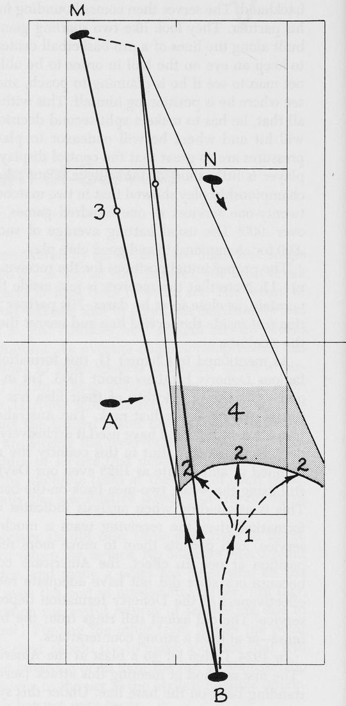
PROPER INITIAL POSITIONS OF RECEIVING TEAMPROPER INITIAL POSITIONS OF RECEIVING TEAM
VÀ NHỮNG LỢI THẾ CỦA CÚ TRẢ GIAO BÓNG CHÉO SÂN Người nhận giao bóng M nên đứng cách vạch cuối sân một hoặc hai bước, tùy theo sức mạnh của cú giao bóng mà anh ta phải đối mặt. Như được trình bày, anh ta nên đứng trên một đường được vẽ từ người giao bóng xuyên qua một điểm ở giữa phần sâu của ô giao bóng để có thể bọc được cú giao bóng vào bất kỳ góc nào. Những lợi thế của cú trả giao bóng chéo sân tới khu vực 4 là hiển nhiên qua sơ đồ. Người đánh lưới A đã ở sẵn vị trí để chặn gần lưới một cú trả bóng trong tầm với của mình và vô-lê nó một cách tấn công. Mặt khác, khi người nhận giao bóng M sắp đánh cú trả bóng của mình, người giao bóng B mới chỉ tới được điểm 1, hoặc khoảng đó, trên hành trình tiến vào lưới. Như vậy toàn bộ khu vực chéo sân đều an toàn cho một cú trả bóng tốt. Vì đến khi cú trả bóng chéo sân tới nơi, người giao bóng B chỉ mới vào được tới khoảng điểm 2, người nhận giao bóng vẫn còn cơ hội đặt bóng ngay dưới chân anh ta và buộc người giao bóng phải đánh lên một cú vô-lê phòng thủ yếu ớt. Hình 11
AND ADVANTAGES OF CROSS-COURT RETURN OF SERVICE Receiver M_ should stand | or two inside the ee a step base line, depending on the strength of the serve he faces. He should stand, as shown, on a line drawn (8) from the server through a point in the middle of the deep portion of the service court so that he can cover a serve to either corner. The advantages of the cross-court return of service to area 4 are obvious from the diagram. Net man A is already in position to intercept close to the net a return within his reach and volley it offensively. On the other hand, as receiver M is about to stroke his return, server B has only reached point 1, or thereabouts, on his journey to the net. Thus the entire crosscourt area is safe for a good return. Since server B is able to get in only as far as about point 2 by the time the crosscourt return arrives, the receiver still has a chance to place the ball at his feet and force the server to hit up a weak defensive volley.

THE RETURN OF SERVICETHE RETURN OF SERVICE
một cú vô-lê tương đối dễ, và nỗ lực giành điểm hay chiếm thế tấn công chỉ đến sau cú vô-lê này. Nói cách khác, chính cú đánh thứ ba hoặc thứ tư mới thực sự khởi động thế tấn công của đội nhận giao bóng. Kế hoạch này là lối đánh đôi kiểu Mỹ, và phần lớn là nguyên nhân khiến chúng ta thiếu những đội đánh đôi đẳng cấp ở Hoa Kỳ.” Bảng IV cho thấy khoảng 30 phần trăm tất cả các cú đánh trong đánh đôi là cú trả giao bóng. Nhiều kiểu cú đánh được sử dụng, bao gồm cú đánh phẳng, cú đánh xoáy lên (topped drive), cú dink (bóng nhỏ), bóng bổng tấn công và bóng bổng phòng thủ. Để xác định tần suất của những cú đánh này và hướng đánh của các chuyên gia, số liệu đầy đủ đã được thu thập về các đấu thủ trong ba ván đầu của trận chung kết Giải Đánh đôi Quốc gia năm 1950 tại Longwood. Những số liệu này cùng các số liệu khác được ghi lại ở Bảng IX. Điều nổi bật nhất ở Bảng IX là sự áp đảo rõ rệt của các cú trả bóng chéo sân mà các chuyên gia sử dụng. Thực tế, 114 trong số 122 cú trả bóng, tức 93 phần trăm, là chéo sân. Cũng hãy lưu ý rằng chỉ có sáu cú bóng bổng được đánh trong trận chung kết đó. Bảng này cũng cho thấy rõ những kiểu trả bóng nào cho phép người nhận giao bóng theo cú đánh tiến lên lưới. Những kiểu trả bóng tạo ra điểm thắng, trực tiếp hoặc gián tiếp, được trình bày ở Bảng X. Trận chung kết Giải Đánh đôi Quốc gia Hoa Kỳ năm 1952 giữa Rose và Seixas gặp Sedgman và McGregor đã được theo dõi để lấy thông tin này; đó là một trận đấu hấp dẫn mà Rose và Seixas thắng 3-6, 10-8, 10-8, 6-8, 8-6. Giờ hãy quay sang người nhận giao bóng và xem xét vị trí của anh ta, vị trí của đội giao bóng, các kiểu cú đánh, các điểm ngắm cho cú trả bóng, và lối chơi đồng đội. Khi vào vị trí, người nhận giao bóng nên nghĩ trước tiên tới thời gian. Sau khi cú giao bóng được thực hiện, từng tích tắc đều có lợi cho người giao bóng, vì nó cho phép anh ta tiến gần lưới hơn và chiếm được một vị trí vô-lê tấn công. Để giành lợi thế, người nhận giao bóng phải buộc người giao bóng đánh một cú vô-lê phòng thủ — tức là một cú vô-lê đánh hướng lên từ dưới mức lưới. Người nhận giao bóng trước tiên nên cố trả giao bóng sao cho ngăn người giao bóng thực hiện một cú vô-lê sâu mang tính tấn công. Anh ta nên đứng vào gần nhất có thể và cố trả bóng nhanh vào ngay dưới chân người giao bóng đang tiến lên. Điều này nghĩa là những người chơi giỏi hơn nên cố bắt bóng lúc bóng đang đi lên (on the rise). Nếu bắt được bóng lúc đang đi lên, cú giao bóng xoáy kiểu Mỹ với quỹ đạo nảy hiểm hóc sẽ không kéo người nhận giao bóng lệch hẳn khỏi vị trí. (Budge nổi tiếng với khả năng nhận kiểu giao bóng này ở vị trí gần và đập bóng bằng cú trái tay trứ danh của mình vào ngay dưới chân người giao bóng.) Người nhận giao bóng càng đứng gần, cơ hội đánh cú trả bóng chéo sân ở một góc nhọn càng tốt: anh ta có được bấy nhiêu thêm
tively easy volley, and the attempt to win the point or obtain the offensive comes after this volley. In other words, it is the third or fourth shot that really starts the offensive of the receivers. This plan is the American style of doubles, and is largely responsible for our lack of first-class doubles teams in the United States.” Table IV shows that about 30 per cent of all strokes in doubles are returns of service. Many types of shots are employed, including the flat drive, topped drive, dink shot, offensive lob, and defensive lob. To determine the frequency of these strokes and the directions in which the experts hit them, complete data were taken on the contestants in the first three sets of the finals of the 1950 National Doubles at Longwood. These data and others are recorded in Table IX. Most striking in Table IX is the heavy preponderance of cross-court returns used by the experts. Actually 114 of the 122 returns, or 93 per cent, were cross-court. Note also that only six lobs were hit in the championship match. The table also shows clearly which types of returns permitted the receiver to follow the shot into the net. The types of returns that produced winning points, directly or indirectly, are shown in Table X. The 1952 U. S. National Doubles Championship between Rose and Seixas and Sedgman and McGregor was monitored for this information; it was an exciting match won by Rose and Seixas 3-6, 10-8, 10-8, 6-8, 8-6. Let us turn now to the receiver and consider his position, the position of the serving team, types of strokes, aim points for returns, and team play. In positioning himself, the receiver should think first of time. After delivery of the service every split second favors the server, as it permits him to get in closer to the net and gain an offensive volleying position. To obtain an advantage the receiver must force the server to hit a defensive volley—that is, a volley hit up from below the level of the net. The receiver should try first to return service so as to prevent the server from making a deep offensive volley. He should stand in as close as possible and try to return the service quickly at the feet of the server as he advances. This means the more expert players should try to take the ball on the rise. If the ball is caught on the rise, the American twist serve, which takes a wicked bound, will not pull the receiver way out of position. (Budge was noted for his ability to receive this type of service in close and crack the ball with his famous backhand at the server's feet.) The closer in the receiver, the better his opportunity to hit his cross-court return at a sharp angle: he has that much more of
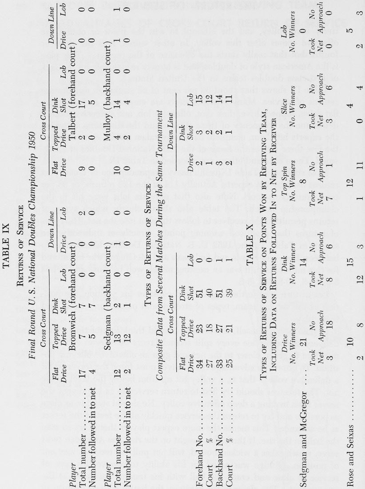
BẢNG IX — SỐ LƯỢNG VÀ CÁC KIỂU TRẢ GIAO BÓNG CỦA CÁC ĐẤU THỦ TRONG TÁM VÁN ĐÁNH ĐÔI TẠI LONGGROVE NĂM 1950 BẢNG VIII — (Trang trước) SỐ LIỆU VỀ CÁC CÚ TRẢ GIAO BÓNG TRONG TRẬN CHUNG KẾT ĐÁNH ĐÔI QUỐC GIA NĂM 1950 TẠI LONGGROVE [Bảng số liệu minh họa này được chụp lại kém rõ nét nên có một số con số và nhãn cột không thể đọc chắc chắn.] Nội dung cho thấy: một cột liệt kê các cú đánh bao gồm cú dink chéo sân, cú vô-lê chéo sân, cú đánh xoáy lên, cú đánh phẳng, bóng bổng ở khu vực giữa, bóng bổng dọc biên, bóng bổng chéo sân, cú đánh xoáy lên chéo sân, cú đánh phẳng chéo sân và cú đánh dọc biên; một cột khác phân loại chúng thành giao bóng tốt, người đánh lưới không cướp bóng, người đánh lưới cướp bóng, và các trường hợp thắng điểm hoặc mất điểm; một nhóm cột ghi lại các con số đếm được như 0, 1, 2, 3, 4, 6, 9, 10, 11, 12, 17, 24 và 35 cho các ô khác nhau; các hàng tính tổng tương ứng; và một cột ghi phần trăm trên tổng số cú trả giao bóng, với các giá trị bao gồm 17 phần trăm, cùng các giá trị khác. Các hàng và cột còn lại được ghi chú bằng chữ viết tay và số liệu khó đọc nên không thể dịch một cách chắc chắn.
0) aur qoT 0 ON yovoiddy ¢ SLQUULM 0 0 I 0 uno aad ‘ON 4aN YOOL (}1N00 0 0 0 0 qoT ON Tt ¢ Cl yovoiddy puevyeIOF) 4 LI VI qoT V qOYUS AA yuiq SIBUUL $ gurvy (ON 4aN YOOL Yuid WVHA], $ I WoqTe], G 0 V G 2041S aad paddoy umoqg JUAULDULNO WHAIMOAY J, aa Hd ~ AG IT fed 6 0 OL 0 ON cad ONIAINOAY Jag uidg AWS yovouddy LAN AA ZI SLauUL AMT AY} doy, Le ‘ON 42N fOOL NJ AOIAUAS NOAA - 0 0 0 qo” suLLNG, AO xX XI AOIAYAS SLNIOG eo 0 0 I 0 9 8 4O aaiq GAMOTIOW ON 0) NO SaYyojDJY I yovoiddy (jAnN0o (jAn09 SNYONLAY qoTl 0 il AIEV.L al Cl HIAVL yuiqd SLQUULM 0 0 0 0 AO qoT 8 ‘ON GL SNYOMCAY 13N 1°Od AOIAWHS SNYALAY JD1aaag TS OV TS 6E j0YS yuiq pueyetoy) TL 40 NO qOYS wousf yuq VLVQ SI &G ST LG ON IG 1 S DJvG ana| paddoy SNUNLAY yovoiddy ST GI IZ Glee peddo, aaug UeUIspes MA YOLmMUoIg SIQUUL aaug AO aad CG 43N a ‘ON foes ep Be IPA gs ONIGNIONT 7 V.. 6a Cle apsodwoy) wy Ai Sada], aug oe eh Me APE age on, os ee eee ee hae OPE OPE eae aeue Po IOSIINOJ se eee ‘ON AO 9% ¥ ‘ON puv sexlog pemoes OTe) pueyyorg raqumu pue CUSNEETe 3n07) Lahvd ounN Lahond uveurspas OT, Aegan) puryoi0q osoy [230],
THE RETURN OF SERVICETHE RETURN OF SERVICE
một lợi thế khởi đầu khi theo cú trả bóng tiến lên lưới; và anh ta cần lợi thế khởi đầu đó, vì anh ta là người cuối cùng trong bốn người chơi tới được lưới. Về vị trí thực tế, khi nhận cú giao bóng thứ nhất, người nhận giao bóng nên đứng cách vạch cuối sân một feet hoặc hơn, trên một đường được vẽ từ người giao bóng xuyên qua tâm các ô giao bóng (Hình 11). Khoảng cách chính xác mà anh ta đứng phía trong vạch cuối sân phụ thuộc vào tốc độ cú giao bóng và tầm với cùng thời gian phản xạ của chính anh ta. Anh ta nên nhớ rằng trong đánh đôi, người giao bóng chỉ thỉnh thoảng mới có thể cho phép mình nhắm tới cú giao bóng ăn điểm trực tiếp (ace); và thỉnh thoảng anh ta nên đứng vào gần hơn để khiêu khích người giao bóng mắc lỗi giao bóng một lần hoặc hai lần khi cố đánh ace. Thường thì một người giao bóng có thể bị làm cho rối trí bởi một người nhận giao bóng biết “lăn” theo cú giao bóng. (Lăn là động tác chạy vòng qua cú giao bóng ngay khi bóng được tung lên bởi người giao bóng. Thủ thuật này được thiết kế để bắt gặp ánh mắt người giao bóng và khiến anh ta vội vàng hoặc cố đổi hướng cú giao bóng.) Khả năng phán đoán trước giúp xác định vị trí tốt nhất cho người nhận giao bóng. Anh ta nên nghiên cứu người giao bóng kỹ càng: hầu hết người chơi đều để lộ cú giao bóng của mình qua động tác tung bóng, tư thế đứng, hoặc động tác vung vợt ra sau. Vì vậy, người nhận giao bóng có thể tiến lên hoặc lùi lại, hoặc chuẩn bị chạy vòng qua cú giao bóng, tùy theo khả năng phán đoán trước của mình. Nhiều tay vợt hàng đầu luôn phán đoán trước và chạy vòng qua những cú giao bóng không bị đánh quá xa về phía trái tay, để đón chúng bằng bên thuận tay mạnh hơn của mình. Chạy vòng qua những cú giao bóng đánh sâu vào tận góc trái tay là không an toàn. Nó đặt người nhận giao bóng vào vị trí quá lệch và mở toang sân cho cú vô-lê đầu tiên của đối thủ (xem Hình 38). Người nhận giao bóng nên tiến vào khoảng một hoặc hai bước để đánh cú giao bóng thứ hai. Mặc dù cú giao bóng thứ hai trong đánh đôi đỉnh cao gần như nhanh ngang cú thứ nhất, người nhận giao bóng có thể cho phép mình đánh cược rằng người giao bóng sẽ không nhắm tới cú ace. Một lần nữa, thống kê cho thấy cú giao bóng thứ hai xếp cuối về mức độ nguy hiểm. Đội nhận giao bóng có cơ hội thắng điểm khi nhận cú giao bóng thứ hai tốt gần gấp đôi so với cú giao bóng thứ nhất. Người nhận giao bóng có thể đánh bóng sớm hơn, điều này cho anh ta cơ hội thực hiện một cú đánh tấn công vào ngay dưới chân người giao bóng; và anh ta có thể tới lưới nhanh hơn để cắt đứt cú vô-lê trả bóng. Mỗi bước tiến về phía trước đều mang lại thêm một lợi thế! Trong đánh đôi ở câu lạc bộ, nơi người nhận giao bóng thường gặp một cú giao bóng thứ hai yếu ớt, anh ta phải tiến hẳn vào và tận dụng cú trả bóng tấn công cùng một chuyến đi dễ dàng lên lưới của mình. Đội hình của đội giao bóng đang đối đầu với người nhận giao bóng là gì? Hình 11 minh họa vị trí trung bình sau một cú giao bóng thứ nhất tốt. Lưu ý rằng người đánh lưới đã tận dụng điểm nảy của cú giao bóng (xem Chương IV) và đã dịch một bước về phía giữa sân. Người giao bóng cũng đã tận dụng điều này — anh ta tiến lên hơi rộng ra và đạt tới một điểm cách đường giao bóng khoảng một bước tiến vào trong, nơi mà, khi anh ta tiếp tục tiến vào, anh ta sẵn sàng di chuyển theo bất kỳ hướng nào để vô-lê cú trả bóng. Khả năng bao quát sân tốt ở đây cho thấy độ chính xác phi thường mà cú trả giao bóng đòi hỏi nếu nó muốn có cơ hội giành thế tấn công cho đội nhận giao bóng. Hình 11 chứng minh một cách dứt khoát rằng cú đánh đơn lẻ tốt nhất cho người nhận giao bóng là cú chéo sân vào người giao bóng đang lao vào lưới, điều này giải thích tại sao 93 phần trăm các cú trả giao bóng (xem Bảng IX) đều là chéo sân. Có một số kiểu cú đánh có thể được dùng để trả giao bóng chéo sân tới các khu vực điểm ngắm ở Hình 12. Mặc dù kiểu cú đánh khác nhau tùy theo từng cá nhân và tùy theo cú giao bóng được thực hiện, mục đích của nó trong mọi trường hợp đều phải giống nhau: buộc người giao bóng (hoặc một người đánh lưới đang cướp bóng) phải vô-lê hướng lên hoặc thực hiện một cú vô-lê phòng thủ. Hãy giữ cú trả bóng thấp. Nếu nó bay tới quá cao, người giao bóng sẽ đập nó xuống thành một cú đặt bóng. Hãy giữ bóng thấp! Nguyên tắc quan trọng này đã được khắc sâu vào chúng tôi một cách mạnh mẽ vào một ngày nọ trong một trận đấu sát nút ở Longwood có Bromwich và Sidwell gặp Gonzales và Parker. Với con mắt chưa từng trải, có vẻ như Parker đã chơi cú trả giao bóng của mình đặc biệt tốt, và đã mắc rất ít lỗi trong trận thua sát nút ấy. Thực tế, trong một ván dài hai mươi bốn game, anh ta chỉ không trả nổi cú giao bóng hai lần! Vậy mà trong phòng tắm sau trận đấu, Bromwich, bậc lão thành ấy, chỉ có một lời nhận xét dành cho Parker: “Rủi thay, Frankie. Hôm nay cú trả giao bóng trái tay của cậu bay tới hơi cao một chút.” Sự phổ biến và hiệu quả của cú trả giao bóng chéo sân có cơ sở thuần túy về mặt cơ học. Lưới quần vợt thấp hơn ở giữa sáu inch so với ở đường biên dọc, cho nên rõ ràng là dễ thực hiện một cú đánh thấp theo hướng chéo sân qua phần giữa của lưới hơn. Có hai cú trả giao bóng cho phép người nhận giao bóng giữ bóng thấp và buộc người giao bóng phải vô-lê hướng lên. Đó là cú dink (họ hàng xa với cú bỏ nhỏ) và cú đánh xoáy lên, được đánh giá là hai cú trả giao bóng tốt nhất trong đánh đôi. Được Beals Wright đưa ra lần đầu vào khoảng đầu thế kỷ này, cú trả giao bóng kiểu dink đã được Lott, Bromwich, Billie Jean M. King, Dennie Ralston và Ken Rosewall đưa tới mức hoàn hảo. Cú cắt nhẹ hay cú slice mềm mại này được đánh ngay phía trong ô giao bóng, thường ở một góc rộng theo hướng chéo sân. Khi được đánh với độ xoáy dữ dội, cú dink sẽ khiến người giao bóng phát điên khi cố vô-lê nó cho chính xác. Để làm tăng thêm nỗi khổ do cú dink gây ra cho người giao bóng, anh ta phải lao hẳn vào tận lưới để bắt bóng, rồi gần như phải xới cả một mảng sân lên mới vô-lê được nó. Nếu người giao bóng chậm lại để cố bắt bóng lúc nảy, người nhận giao bóng có thể tận dụng bằng cách trộn lẫn các cú trả bóng của mình và đánh những cú mạnh vào ngay dưới chân người giao bóng.
a head start in following the return to net; and he needs the head start, since he is the last of the four players to reach the net. In point of actual position the receiver, on first serve, should stand a foot or more inside the base line, on a line drawn from the server through the center of the service courts (Figure 11). The exact distance he stands inside the base line depends on the speed of the serve and his own reach and reaction time. He should remember that the server in doubles can afford only rarely to go for the ace; and from time to time he should play in closer to tease the server into single or double faults in trying for aces. Often a server can be upset by a receiver who “rolls” with the serve. (Rolling is a move to run around the serve as the ball is thrown up by the server. The maneuver is designed to catch the server's eye and cause him to hurry or to try to change direction of the serve.) Anticipation helps to determine the best position for the receiver. He should study the server carefully: most players give away their serve by the toss, stance, or backswing. Thus, the receiver can move up or back, or be prepared to run around the serve, depending on his ability to anticipate. Many of the topflight players consistently anticipate and run around serves that are not hit too far over on the backhand, in order to take them on the stronger forehand side. It is not safe to run around serves hit well into the backhand corner. It puts the receiver too far out of position and opens up the court to his opponent's first volley (see Figure 38). The receiver should move in about one or two steps to play a second serve. Even though the second serve in championship doubles is almost as fast as the first, the receiver can afford to gamble that the server will not go for the ace. Again, statistics showed the second service to rank last in lethality. The receiving team has almost twice as good a chance to win the point on second as on first service. The receiver can play the ball earlier, which gives him the opportunity to make an offensive shot at the feet of the server; and he can get to the net quicker to cut off the return volley. Every step forward provides an extra advantage! In club doubles, where the receiver often encounters a weak second serve, he must move well in and capitalize on his offensive return and an easy excursion to the net. What is the formation of serving team confronting the receiver? Figure 11 illustrates the average position after a good first service. Note that the net man has taken advantage of the bounce point of the serve (see Chapter IV) and has moved over a step toward the center. The server has also taken advantage of this—has come up a bit wide and reached a point about one step inside the service line, where, as he continues to move in, he is ready to move in any direction to volley the return. The good court coverage here shows the phenomenal accuracy required of the return of service if it is to have a chance of gaining the offensive for the receiving team. Figure 11 proves conclusively that the best single shot for the receiver is cross-court at the inrushing server, which explains why 93 per cent of the returns of service (see Table IX) were cross-court. There are several strokes which can be used to return service crosscourt to the aim point areas in Figure 12. Although the type of stroke differs with the individual and the serve delivered, its purpose in all cases should be the same: to force the server (or a poaching net man) to volley up or make a defensive volley. Keep the return low. If it comes in too high, the server will powder it down for a placement. Keep the ball low! We had this important principle driven home strongly one day in a close match at Longwood involving Bromwich and Sidwell against Gonzales and Parker. To the untrained eye it appeared that Parker had played his return of service exceptionally well, and had made very few errors in losing a close match. In fact, in one twenty-four-game set he failed to return service only twice! Yet, in the shower room after the match Bromwich, the old master, had only one comment to make to Parker: “Tough luck, Frankie. Your backhand return of service was coming in a bit high today.” The popularity and effectiveness of the cross-court return of service have a purely mechanical basis. The net in tennis is six inches lower at the center than at the sideline, so that it is obviously easier to execute a lower stroke cross-court over the middle of the net. There are two returns of service which permit the receiver to keep the ball low and force the receiver to volley up. These are the dink shot (a distant cousin to the drop shot) and the topped drive, rated as the two best returns of service in doubles. First introduced by Beals Wright near the turn of the century, the dink shot return of service has been brought to perfection by Lott, Bromwich, Billie Jean M. King, Dennie Ralston, and Ken Rosewall. This soft chop or slice shot is hit well within the service court, usually at a wide angle cross-court. When hit with crazy spin, the dink will drive the server wild trying to volley it accurately. To add to the server's dink-inspired woes, he must sprint way in to the net to get to the ball, and then he practically has to dig a divot in the court to volley it. If the server slows down to try to take it on the bounce, the receiver can take advantage by mixing up his returns and hitting drives at the server's feet.

CÁC ĐIỂM NGẮM CHO CÚ TRẢ GIAO BÓNG Sơ đồ này trình bày những khu vực đích ưa thích cho các cú trả giao bóng khi người nhận giao bóng đang đối mặt với tình huống giao bóng khó nhất, cụ thể là một cú giao bóng xoáy vào góc trái tay. Lưu ý rằng người đánh lưới A đã tận dụng điểm nảy của cú giao bóng và dịch về phía giữa sân. Điều này để lại cho người nhận giao bóng M một khu vực rất hạn chế cho cú trả bóng của mình. Những cú đánh tốt nhất của anh ta là một cú dink tới khu vực 1, cú đánh xoáy lên tới khu vực 2, hoặc một cú đánh tới khu vực 3 hoặc 4. Cũng hiệu quả là một cú dink hoặc cú đánh xoáy lên luồn qua giữa sân, ngoài tầm với của người đánh lưới A, tới điểm ngắm 5. Một cú đánh tới khu vực 6 chỉ khả thi nếu người đánh lưới A đã dịch quá xa về phía giữa sân, hoặc đã bắt đầu cướp bóng quá sớm. Khoảng 80 phần trăm tất cả các cú trả bóng nên rơi vào các khu vực được tô chấm. Những cú trả bóng nông tới các khu vực 1 và 2 được ưu tiên vì chúng phải buộc người giao bóng B vô-lê hướng lên theo kiểu phòng thủ. Lưu ý rằng người nhận giao bóng M đang chạy lên lưới để cố chiếm một vị trí tấn công. Đường chạy của anh ta rộng ra để phòng ngừa một cú vô-lê trả bóng chéo sân của người giao bóng B.
AIM POINTS FOR RETURN OF SERVICE 7\ he. This diagram shows the == o= a= preferred target areas for returns of service when the a= receiver is facing the most =P difficult serving _ situation, ome namely a twist service to the Ge ger backhand corner. Note that “=—= net man A has taken advantage of the bounce point of the serve and moved toward the center. This leaves receiver M with a very limited area for his return. His best shots are a dink to area l, topped drive to area 2, or a drive to area 3 or 4. Also effective is a dink or topped drive slipped through the center, out of reach of net man A, to aim point 5. A drive to area 6 is possible only if net man A has moved too far to the center, or has started to poach too soon. Approximately 80 per cent of all returns should fall in the dotted areas. The shallow returns to areas 1] and 2 are preferred because they should force server B to volley up defensively. Note that receiver M is running to the net to try to gain an offensive position. His path is wide in anticipation of a cross-court return volley by server B.
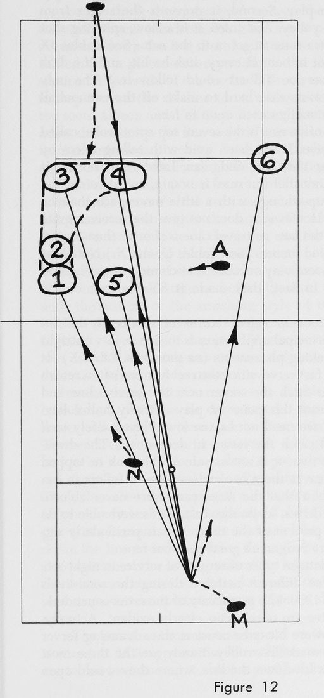
Ngoài việc buộc người giao bóng phải vô-lê hướng lên, cú dink còn có ba lợi thế khác. Thứ nhất, đó là một cú đánh an toàn giúp người nhận giao bóng đưa bóng vào cuộc một cách ổn định. Thứ hai, nó ngăn người giao bóng truyền nhiều lực vào cú vô-lê của mình. Và thứ ba, đó là một cú đánh chậm, xoáy, cho người nhận giao bóng thêm thời gian để tiến vào lưới. (Xem các Bảng IX và X. Ở đây Bromwich đã tiến vào lưới sau mỗi cú dink mình đánh, và cú dink là cú trả giao bóng duy nhất mà Talbert có thể theo vào lưới.) Trở ngại duy nhất là cú dink hơi khó thực hiện khi phải đối mặt với cú giao bóng như đại bác mà đôi khi người nhận giao bóng buộc phải chịu. Cú trả giao bóng tốt thứ hai là cú đánh xoáy lên mạnh, được gọi là cú đánh xoáy lên chéo sân. Nó đã được dùng với hiệu quả đáng kể bởi những người nhận giao bóng xuất sắc như Van Ryn, Sedgman, Laver và Roche. Nó có tất cả các ưu điểm của cú dink trừ một điểm. Nó an toàn, và nó buộc người giao bóng phải vô-lê hướng lên — tuy với tốc độ hơi lớn hơn một chút so với tốc độ anh ta có thể tạo ra ở cú dink. Tuy nhiên, nó không cho người nhận giao bóng lượng thời gian rộng rãi như cú dink để tiến vào lưới: thời gian bay của nó ngắn hơn so với cú dink nên nó bị vô-lê sớm hơn. (Xem các Bảng IX và X.) Lưu ý rằng Bromwich và Sedgman đã rất thành công khi tiến lên lưới sau cú trả bóng xoáy lên. Thực tế, họ làm được điều đó 85 phần trăm số lần. Xếp thứ ba trong số các cú trả giao bóng được khuyến nghị là cú đánh phẳng theo hướng chéo sân. Ứng dụng chính của nó là thắng điểm trực tiếp bằng cách buộc đối phương mắc lỗi hoặc bằng cách tạo ra những cú đặt bóng (như được trình bày ở Bảng X). Nó hiệu quả nhất khi đối đầu với một cú giao bóng nhanh, vì người nhận giao bóng thường có thể trả bóng đủ nhanh để bắt người giao bóng đang ở gần đường giao bóng và buộc anh ta phải vô-lê hướng lên từ điểm đó hoặc phải đánh một cú bổng nửa vời (half-volley) đầy khó nhằn. Khi đối đầu với một cú giao bóng nhanh, cú đánh mạnh không nhất thiết phải quá thấp. Đánh an toàn cao hơn lưới khá nhiều, nó vẫn sẽ bắt được người giao bóng ở sâu trong sân. Cú đánh phẳng có hai nhược điểm: nó không an toàn bằng cú dink hay cú đánh xoáy lên chéo sân, và nó để người nhận giao bóng lại
Besides forcing the server to volley up, the dink shot has three other advantages. First, it is a safe shot which enables the receiver to put the ball consistently into play. Second, it prevents the server from getting much pace on his volley. And third, it is a slow, spinning shot that gives the receiver extra time to get in to the net. (See Tables IX and X. Here Bromwich got in behind every dink he hit, and the dink was the only return of service Talbert could follow in.) The only hitch is that the dink is somewhat hard to make off the cannonball serve the receiver is occasionally called upon to face. The second-best return of service is the severe top-spin stroke, called the topped cross-court drive. It has been used with telling effect by such excellent receivers as Van Ryn, Sedgman, Laver, and Roche. It has all the assets of the dink shot but one. It is safe, and it forces the server to volley the ball up—though with a little more pace than he can get on the dink shot. However, it does not give the receiver quite as much time to get in to the net: its travel time is shorter than that of the dink shot so it is volleyed sooner. (See Tables IX and X.) Note that Bromwich and Sedgman were very successful in coming to net behind the topped-drive return. In fact, they made it 85 per cent of the time. Ranking third among recommended returns of service is the flat drive hit cross-court. Its principal application is to win points outright by forcing errors or by making placements (as shown in Table X). It is most effective against a fast serve, since the receiver can often return the ball swiftly enough to catch the server near the service line and force him to volley up from this point or play a tricky half-volley. Against a fast serve the drive need not be too low. Played safely well above the net, it will still catch the server in deep court. The drawbacks of the flat drive are two: it is not as safe as the dink or topped cross-court drive, and it leaves the receiver less time to follow in behind. Tables IX and X show that the Americans were never able to follow in behind their flat drives, while the Australians were able to do so only approximately 21 percent of the time. This is particularly significant when one considers Sedgman’s great speed of foot. Table IX also presents data on types of returns of service in eight sets of doubles play from three different matches during the semi-finals and finals at Longwood in 1950. The popularity of the cross-court dink, topped drive, and flat drive are once again clearly evident. Actually, 86 per cent of all returns were hit cross-court at the advancing server in the hope of drawing a weak first volley. Rarely are the three most effective returns of service hit down the line, where they would open
THE RETURN OF SERVICETHE RETURN OF SERVICE
mở ra cơ hội để người đánh lưới nhanh nhạy thực hiện một cú đặt bóng vào vùng chéo sân đang trống. Khi được sử dụng, những cú trả giao bóng dọc biên là những cú đánh mang tính kiềm chế, nhằm giữ cho người đánh lưới đối phương "trung thực" và ngăn anh ta cướp bóng (poach) quá nhiều. Không nên xem nhẹ giá trị của một cú đánh dọc biên thỉnh thoảng được tung ra. Nó thường có thể biến thành một cú đặt bóng—đặc biệt nếu cú đánh hướng vào góc xuất phát từ một quả giao bóng quá rộng ở ô thuận tay, và người đánh lưới hoặc không bước về phía đường biên dọc để bọc lót, hoặc bắt đầu cướp bóng (poach) sớm hơn một tích tắc. Allison và Van Ryn thường áp dụng chiến thuật đánh một vài cú drive dọc biên ngay đầu trận để khiến người đánh lưới đối phương không dám cướp bóng (poach) bừa bãi. Seixas và Trabert cũng dùng nó hiệu quả trước Hoad và Rosewall trong trận chung kết Đánh đôi Quốc gia năm 1954. Những điểm ngắm mong muốn cho cú trả giao bóng phụ thuộc vào điểm nảy của quả giao bóng trong hai ô giao bóng. Các Hình 12 đến 17 trình bày khá đầy đủ tình huống này. Đừng quên rằng sự đa dạng và đánh lừa là gia vị của trò chơi, và người nhận giao bóng nên pha trộn các cú trả bóng để giữ cho đội giao bóng mất thăng bằng. Loại cú đánh thứ tư để trả giao bóng là bóng bổng (lob). Đây là một trong những cú trả bóng phổ biến nhất trước thời khắc chuyển giao thế kỷ. Tuy nhiên, cùng với sự xuất hiện của lối đánh đập bóng trên đầu (overhead), rõ ràng bóng bổng (lob) là một cú trả bóng quá nguy hiểm để có thể sử dụng thường xuyên trong thi đấu đỉnh cao. Thực ra có hai loại bóng bổng (lob) riêng biệt được dùng để trả giao bóng—một loại phòng thủ, loại kia tấn công. Bóng bổng phòng thủ được dùng thường xuyên hơn nhiều. Nhớ rằng người nhận giao bóng trong đánh đôi nên đứng bên trong vạch cuối sân, tiến vào sâu nhất có thể mà anh ta dám để nhận giao bóng, bạn có thể thấy rằng người giao bóng sẽ thỉnh thoảng đánh trúng anh ta bằng một quả giao bóng nhanh vào góc. Người nhận giao bóng, bị đẩy ra khỏi vị trí, thường sẽ phải xoay xở và đánh một cú phòng thủ yếu ớt. Một cú drive kém trong hoàn cảnh này dễ dàng bị người đánh lưới cắt bóng và vô-lê để đặt bóng. Vì vậy, cú đánh an toàn nhất là một quả bóng bổng phòng thủ (Hình 17). Loại bóng bổng này nên được đánh cao và sâu. Bảng IX cho thấy, trong số 12 phần trăm các cú trả giao bóng là bóng bổng, hầu như tất cả đều được đặt dọc biên để đẩy người đánh lưới lùi lại và phá vỡ thế tấn công của đội giao bóng. Bóng bổng phải đủ cao để cho người nhận giao bóng cơ hội trở về vị trí trước khi thực hiện cú trả bóng, và để cho bạn cặp của anh ta đang ở lưới có thời gian dịch chuyển vị trí nếu cần. Các vị trí họ chọn phụ thuộc vào hiệu quả của quả bóng bổng cụ thể. Nếu có vẻ như quả bóng bổng sẽ bị đập, người nhận giao bóng nên cố chạy lùi về một điểm cách trung tâm phần sân của mình khoảng một yard
up the opportunity for the alert net man to make a placement to the open diagonal area. When they are played, down-the-line returns of service are check shots, designed to keep the opposing net man “honest” and prevent him from doing too much poaching. The value of an occasional down-the-line shot should not be overlooked. It can often be turned into a placement—especially if the shot is to the corner off a service hit too wide in the forehand court, and the net man either fails to step toward the sideline to cover or starts to poach a split second too soon. Allison and Van Ryn often employed the strategy of playing a few drives down the line early in a match to discourage the net man from promiscuous poaching. Seixas and Trabert also used it effectively against Hoad and Rosewall in the 1954 National Doubles final. The desirable aim points for return of service depend on the bounce point of the serve in the two service courts. Figures 12 through 17 cover the situation rather thoroughly. Do not forget that variety and deception are the spice of the game, and that the receiver should mix up his returns to keep the serving team off balance. The fourth type of stroke for return of service is the lob. It was one of the most popular returns before the turn of the century. However, with the advent of the smashing style of overhead play, it became evident that the lob was too dangerous a return to be used with any regularity in championship play. There are really two distinct types of lobs used for returning service—one defensive, the other offensive. The defensive lob is used far more often. Remembering that the receiver in doubles should stand inside the base line, as far in as he dares to take the service, you can see that server will catch him from time to time with a fast serve to the corner. The receiver, forced out of position, will generally have to scramble and to hit a weak defensive shot. A poor drive under these conditions can easily be intercepted and volleyed for a placement by the net man. Thus, the safest shot to play is a defensive lob (Figure 17). This type of lob should be hit high and deep. Table IX indicates that, of the 12 per cent of returns of service that are lobs, practically all are placed down the line in order to drive the net man back and upset the offensive position of the serving team. The lob must be high enough to give the receiver a chance to get back in position before the return is made, and to permit his partner at net time to shift his position if necessary. The positions they assume depend on the effectiveness of the particular lob. If it appears the lob will be smashed, the receiver should try to run back to a spot about a yard behind the center of his portion
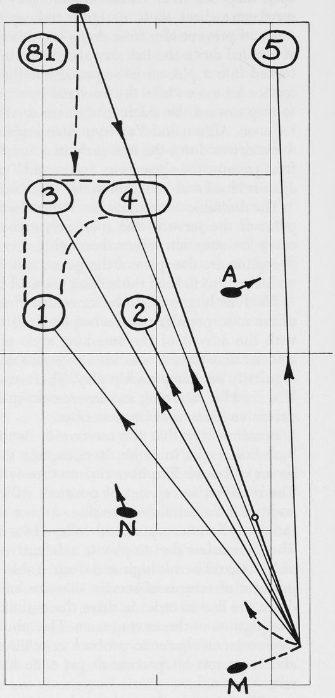
AIM POINTS FOR RETURN OF SERVICEAIM POINTS FOR RETURN OF SERVICE
Khi giao bóng vào góc thuận tay, người nhận giao bóng M có cơ hội tốt hơn để thực hiện một cú trả bóng hiệu quả vì anh ta đánh cú trả bóng bằng cú thuận tay mạnh hơn của mình và có vùng trống rộng hơn trước mặt. Anh ta có thể đánh một cú drive thuận tay lệch nửa bước về phía hành lang biên để bọc lót khả năng đó. Điều này mở ra một vùng rộng hơn cho các cú trả bóng chéo sân. Những cú trả bóng được ưa thích là cú dink (bóng nhỏ) hoặc cú drive xoáy lên (topped drive) được đánh nông hơn so với Hình 12 vì bóng bay qua phần thấp hơn của lưới. Khi được đánh ở góc rộng như vậy, cả hai cú đánh đều sẽ buộc người giao bóng B phải xoay xở để đuổi bóng, và gần như luôn khiến anh ta phải thực hiện một cú vô-lê phòng thủ. Ngoài ra, người nhận giao bóng có nhiều khoảng trống hơn để đánh cú dink hoặc cú drive xoáy lên tới điểm ngắm 2, hoặc cú drive tới điểm ngắm 4. Một cú drive tới điểm ngắm 8 là hiệu quả nếu người giao bóng di chuyển lên lưới chậm. Vùng 8½ được chêm vào để chỉ điểm ngắm khi đấu với một người 8½ tuổi, hoặc một người giao bóng quá lười biếng để theo quả giao bóng của mình lên lưới. Khoảng 80 phần trăm các cú trả giao bóng sẽ rơi vào các vùng có chấm. Hình 13
When the service is to the forehand corner, receiver M | has a better chance to make an effective return because he | is playing the return with his | stronger forehand and has a | larger area open to him. He | can make a forehand drive y a half-step toward the alley { to cover such a_ possibility. This opens up a greater area { for the cross-court returns. | The preferred returns are { the dink or topped drive to ( be played more shallow than shown in Figure 12 because ferns: eth | the ball goes over a lower portion of the net. Played at such a wide angle, either shot should force server B_ to scramble for the ball, and will almost invariably cause him to make a defensive volley. Also the receiver has more \ room to hit the dink or topped drive to aim point 2, =— fj— or the drive to aim point 4. A drive to aim point 8 is effective if the server is slow in moving to the net. Area 81 is stuck in to show the aim point when playing against a man 81 years old, or a server who is too lazy to follow his serve into the net. iz About 80 per cent of the returns of service will fall in the dotted areas.

AIM POINTS FOR RETURN OF SERVICEAIM POINTS FOR RETURN OF SERVICE
Đây là những cú trả giao bóng được đề xuất cho người nhận giao bóng M khi anh ta đối mặt với quả giao bóng xoáy (twist serve) vào góc trái tay của ô trái tay. Người đánh lưới A giữ nguyên vị trí vì cú trả bóng drive trái tay dọc biên khó đánh đủ nhanh để tới vùng 5 một cách an toàn. Người nhận giao bóng nên giữ các cú trả bóng drive trái tay của mình tới vùng 4, tránh xa trung tâm sân, kẻo người đánh lưới có thời gian cắt bóng với những cú đánh chậm hơn. Những cú trả bóng hiệu quả nhất là các cú dink (bóng nhỏ) và cú drive xoáy lên tới điểm ngắm 1: chúng buộc người giao bóng B phải chạy một quãng đường dài rồi đánh một cú vô-lê trái tay khó từ sát mặt sân. Để làm người giao bóng khó đoán, thỉnh thoảng nên sử dụng những thay đổi nhịp độ (như các cú drive tới vùng 3 hoặc 4), hoặc thay đổi hướng (như các cú dink hoặc cú drive xoáy lên tới vùng 2). Hình 14
Here are the returns of serve recommended to _ receiver M when he faces the twist serve to the backhand corner of the backhand court. Net man A holds his position because the backhand drive return down the line is difhcult to hit with sufficient speed to reach area 5 safely. The receiver should keep his backhand drive returns to area 4 away from the center of the court lest the net man have time to intercept the slower shots. The most effective returns are dink shots and topped drives to aim point 1: they force server B to run a long distance and then play a difhcult backhand volley up from close to the ground. To mix up the server occasional changes of pace (such as drives to area 3 or 4), or changes of direction (such as dinks or topped drives to area 2), should be employed.
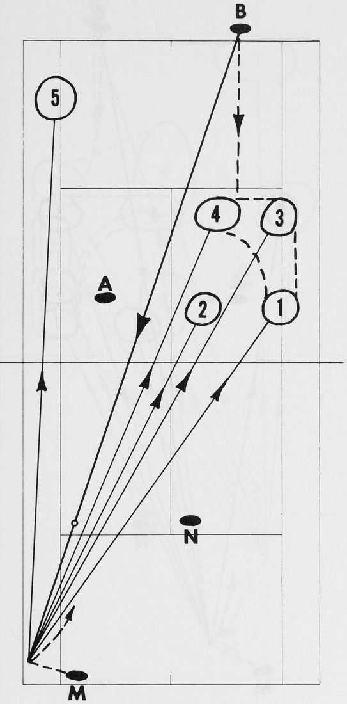
AIM POINTS FOR RETURN OF SERVICEAIM POINTS FOR RETURN OF SERVICE
Một quả giao bóng vào góc thuận tay của ô trái tay mở ra những vùng trả bóng vượt xa những gì được thể hiện trong Hình 14—bất chấp việc người đánh lưới A di chuyển để bọc lót trung tâm. Tốc độ lớn hơn từ cú thuận tay cho phép người nhận giao bóng M đánh drive xuống giữa tới điểm ngắm 4. Những cú trả bóng được đề xuất trong tình huống này là cú dink (bóng nhỏ) tới vùng 1 và cú drive xoáy lên tới vùng 2 (sâu hơn Hình 14 vì độ cao của lưới). Để khiến người giao bóng B phải đoán, nên sử dụng cú dink tới vùng 5 và các cú drive tới vùng 3 và 4. Cú drive tới vùng 6 chỉ thực tế khi người đánh lưới A di chuyển quá xa về trung tâm hoặc bắt đầu cướp bóng (poach) quá sớm. Lưu ý một lần nữa rằng người nhận giao bóng kiên trì theo cú trả bóng của mình lên lưới. Khi tiến lên theo hướng rộng, anh ta đoán trước một cú vô-lê chéo sân của người giao bóng B. Hình 15
A serve to the forehand corner of the backhand court opens up areas of return beyond those shown in Figure 14—despite the fact that net man A moves to cover the center. Greater speed off the forehand permits receiver M to drive down the center to aim point 4. The recommended returns in this situation are the dink to area 1 and the topped drive to area 2 (deeper than Figure 14 because of the height of the net). To keep server B guessing, the dink to area 5 and the drives to areas 3 and 4 should be used. The drive to area 6 is practical only when net man A moves too far to the center or starts to poach prematurely. Note again that the receiver persists in following his return in to net. In coming up wide he anticipates a cross-court volley return by server B.
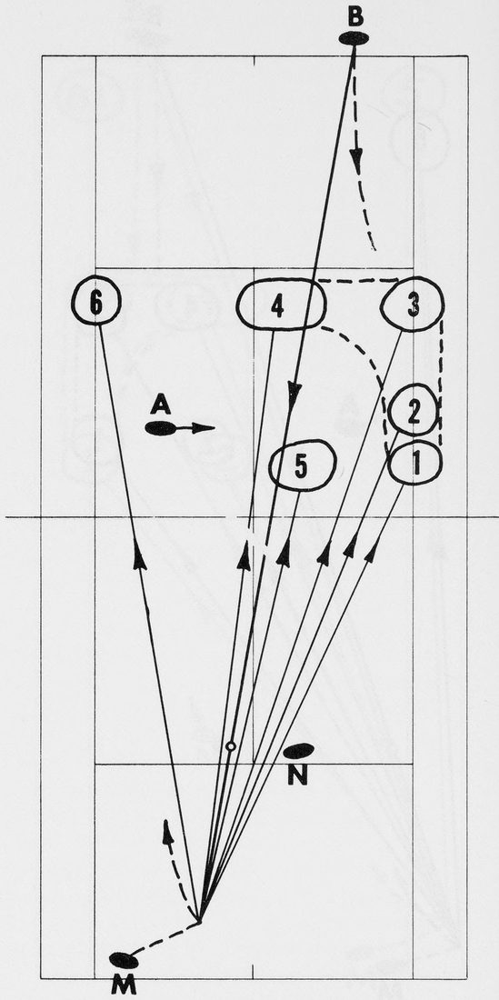
AIM POINTS FOR RETURN OF SERVICEAIM POINTS FOR RETURN OF SERVICE
tới ô thuận tay hoặc ô trái tay, là niềm vui của người nhận giao bóng. Người nhận giao bóng M nên tiến lên khi giao bóng (như hình vẽ). Điều này cho anh ta vùng trả bóng rộng hơn bởi vì: (1) người giao bóng B sẽ không kịp tiến vào tới vạch giao bóng trước khi cú trả bóng hoàn tất; và (2) vì người đánh lưới A không dám di chuyển để bọc lót trung tâm và liều mình trước một cú drive do anh ta bắn từ cự ly gần tới điểm ngắm 5. Những cú trả bóng được ưa thích trong hoàn cảnh này là các cú drive và cú drive xoáy lên tới vùng 6; chúng có thể dẫn tới những cú đặt bóng nếu người giao bóng B không đoán trước một cách chính xác. Cú dink hoặc cú drive xoáy lên tới vùng 1 là lựa chọn tốt thứ hai. Nếu người giao bóng tiến lên lưới theo hướng rộng, người nhận giao bóng nên giáng một cú drive xuống giữa tới điểm ngắm 4, hoặc đánh cú dink hay cú drive xoáy lên tới vùng 5. Nếu người giao bóng tiến lên gần giữa sân, một cú drive tới điểm ngắm 3 sẽ tạo ra một cú trả bóng vô-lê yếu. Một quả bóng bổng (lob) tới vùng 7 trở thành một cú đánh dễ dàng cho M từ vị trí áp sát lưới của anh ta. Lưu ý rằng người nhận giao bóng phải theo cú trả bóng của mình lên lưới để tận dụng đúng đắn cú trả giao bóng mang tính tấn công của anh ta. Hình 16
to the forehand or backhand | court, is a receivers delight. l Receiver M should move up on the serve (as shown) sible. This gives him a wider area of return because: (1) server B will not have had time to get in as far as the service line before the return is completed; and (2) because net man A dare not move to cover the center and risk a drive blasted by him from close range to aim point 5. The preferred returns under these circumstances are drives and topped drives to area 6; they may result in placements if not anticipated unerringly by server B. The dink or topped drive to area 1 is next best. If the server starts up to net wide the receiver should pound a drive down the middle to aim point 4 or hit the dink or topped server comes up near the / middle a drive to aim point 3 / should draw a weak return fe volley. A lob to area 7 beZe comes an easy shot for M M from his close-in position. Note that the receiver must return in order to take proper advantage of his offensive return of service.
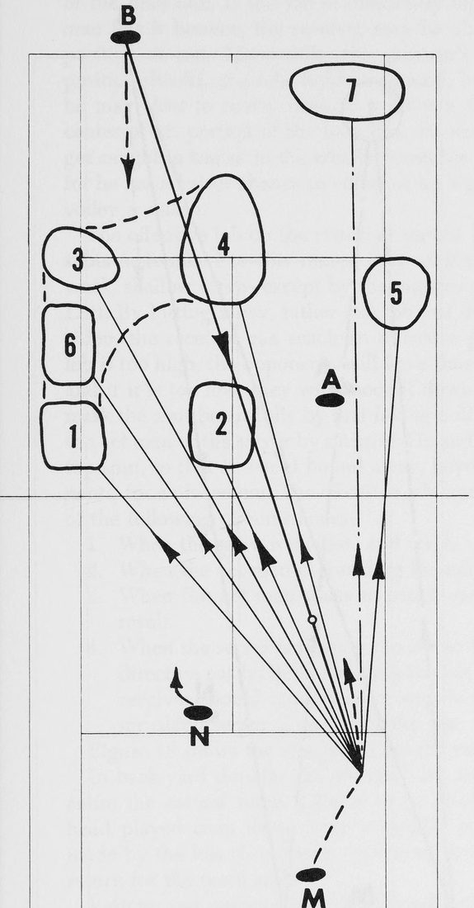
THE DEFENSIVE LOB RETURN OF SERVICETHE DEFENSIVE LOB RETURN OF SERVICE
Nếu người nhận giao bóng M bị mất thăng bằng và buộc phải xoay xở cho một quả giao bóng nhanh vào góc bất kỳ, anh ta có thể đánh một cú trả bóng kém; vì vậy lựa chọn tốt nhất của anh ta là một quả bóng bổng (lob) phòng thủ cao. Cú đánh được ưa thích là dọc biên tới điểm ngắm 1: nó có cơ hội làm đội giao bóng bối rối bằng cách buộc người đánh lưới A phải lùi lại, trong khi một quả bóng bổng cao đánh chéo sân sẽ dễ dàng cho người giao bóng B đập bóng chỉ bằng cách dừng hành trình lên lưới và chờ bóng. Hình 17
If receiver M is caught off balance and forced to scramble for a fast serve to either corner, he might hit a poor return; so his best bet is a high defensive lob. The preferred shot is down the line to aim point 1: it has a chance of embarrassing the serving team by forcing net man A to retreat, whereas a high lob hit cross-court should be easy for server B to smash merely by halting his journey to the net and waiting for the ball.
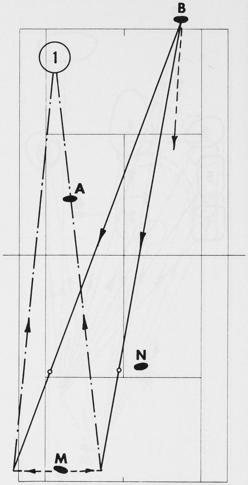
THE RETURN OF SERVICETHE RETURN OF SERVICE
của vạch cuối sân. Nếu quả bóng bổng (lob) đủ cao và đủ sâu, và người đánh lưới để nó nảy, người nhận giao bóng có thể tiến vào vị trí thích hợp của mình ở lưới. Trong lúc đó, bạn cặp của người nhận giao bóng ở vị trí lưới cải biến nên, theo nguyên tắc chung, giữ nguyên chỗ đứng; nhưng nếu quả bóng bổng khá ngắn, anh ta có thể chọn lùi nhanh về một điểm cách trung tâm phần sân cuối của mình một quãng ngắn. Trên hết, anh ta nên cố gắng đừng để bị kẹt giữa đường trong vùng giữa vạch giao bóng và vạch cuối sân, vì anh ta có cơ hội vô-lê hoặc đánh một cú đánh nền (groundstroke) tốt hơn là đánh bán vô-lê một cú đập trên đầu. Quả bóng bổng (lob) tấn công trong cú trả giao bóng là một trong những cú đánh tinh tế nhất trong quần vợt. Vì lý do này, nó hiếm khi được sử dụng trừ khi gặp một quả giao bóng yếu, nông—ngoại trừ những bậc thầy của cú lob, chẳng hạn như George Lott. Bằng cách đánh một quả bóng bổng thấp, khá nhanh, vừa vặn qua đầu đối phương, người nhận giao bóng có thể đạt tới một vị trí tấn công ở lưới. Nhưng nếu quả bóng bổng quá cao, đối phương sẽ có thời gian lùi lại và đập nó, còn nếu nó quá thấp, họ sẽ đập nó thẳng xuống đầu bạn. Lott thường ngụy trang cú đánh này một cách tuyệt đẹp bằng cách trước tiên giả đánh một cú dink hoặc cú drive, rồi bất ngờ đánh vào người đánh lưới hoặc người giao bóng. Ông và Brugnon đánh cú này với xoáy lên, để nó nảy vọt đi, ngoài tầm với của đối phương, thành một cú đặt bóng. Quả bóng bổng tấn công hiệu quả nhất trong một hoặc nhiều tình huống sau: 1. Khi quả giao bóng nông và yếu. 2. Khi người đánh lưới áp sát lưới hoặc có vóc người thấp bé. 3. Khi người đánh lưới bắt đầu cướp bóng (poach) sớm và do đó bị mất thăng bằng. 4. Khi người giao bóng lao lên lưới quá nhanh đến mức không thể đảo hướng dễ dàng. Trước khi đánh quả bóng bổng qua đầu người giao bóng, người nhận giao bóng nên lùi lại một bước để trì hoãn cú trả bóng cho đến khi người giao bóng đang lao lên đã ở ngay trên lưới. Hình 18 cho thấy các điểm ngắm cho những quả bóng bổng khác nhau. Trong đánh đôi ở sân sau nhà, quả bóng bổng tấn công có thể được sử dụng thường xuyên hơn vì quả giao bóng hai dễ bị yếu. Hơn nữa, bất kỳ cú trên đầu nào thực hiện từ sân sâu thường ít nguy hiểm hơn nhiều khi do đối thủ không chuyên thực hiện. Thực tế, quả bóng bổng vẫn là một cú trả bóng cơ bản cho người chơi cuối tuần. Sự đa dạng và bất ngờ là những yếu tố không thể thiếu trong lối chơi của người nhận giao bóng. Người nhận giao bóng nên có khả năng đánh mọi loại cú trả giao bóng, đồng thời che giấu ý định của mình cho đến giây phút cuối. Sự che giấu góp phần nhiều vào thành công của Lott và Bromwich với tư cách những tay đánh đôi. Họ bắt đầu nhiều cú đánh của mình bằng cùng một động tác, đến nỗi loại, hướng và tốc độ của cú đánh rất khó
of the base line. If the lob is sufficiently high and deep, and the net man lets it bounce, the receiver may be able to get in to his proper position at net. Meanwhile, the receiver's partner at modified net position should, as a rule, hold his ground; but if the lob is quite short, he may elect to scurry back to a point a short distance beyond the center of his portion of the base line. He should, above all, try not to get caught in transit in the area between the service and the base lines, for he has a better chance to volley or hit a ground stroke than to halfvolley a smash. The offensive lob on the return of service is one of the most delicate shots in tennis. For this reason it is seldom used on anything but a weak, shallow serve—except by the masters of the lob, such as George Lott. By hitting a low, rather fast lob just over the head of the opposition, the receiver can reach an offensive position at net. But if the lob is too high, the opponents will have time to fall back and smash it, and if it is too low, they will knock it down your throat. Lott used to mask the shot beautifully by first faking a dink or drive, than catching the net man or the server by surprise. He and Brugnon hit the shot with top spin, so that it would bound away, beyond the reach of the opponents, for a placement. The offensive lob works best under one or more of the following circumstances: 1. When the serve is shallow and weak. 2. When the net man is crowding the net or is short in stature. 3. When the net man starts to poach early and is off balance as a result. 4, When the server is rushing the net so fast that he cannot reverse direction easily. Before playing the lob over the server's head, the receiver should move back a step to delay his return until the inrushing server is on top of the net. Figure 18 shows the aim points for the various lobs. In back-yard doubles the offensive lob can be used more often because the second serve is liable to be weak. Furthermore, any overhead played from deep court is usually much less dangerous when made by the less-than-expert opponent. In fact, the lob is still a basic return for the week-ender. Variety and surprise are indispensable functions of the receiver Ss game. The receiver should be able to hit all types of returns of service and, at the same time, hide his intentions until the last second. Concealment had much to do with the success of Lott and Bromwich as doubles players. They started many of their strokes with the same motion, so that the type, direction, and speed of the shot were most diffi-
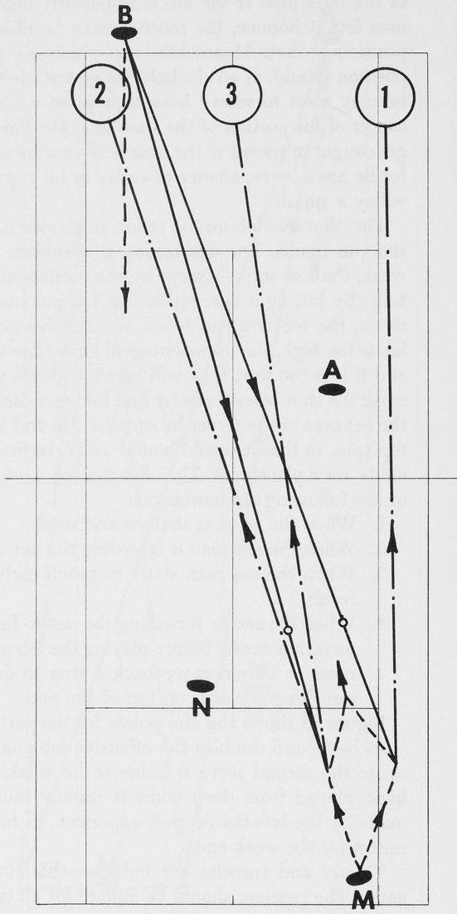
THE OFFENSIVE LOB RETURN OF SERVICETHE OFFENSIVE LOB RETURN OF SERVICE
Những quả giao bóng nông cho phép người nhận giao bóng thêm một cú đánh tấn công nữa vào vốn cú đánh của mình—quả bóng bổng (lob) tấn công thấp và nhanh. Đánh sau khi giả một cú dink hoặc cú drive, nó thường có thể ghi một cú đặt bóng, đặc biệt nếu được đánh với chút xoáy lên. Nói chung, những quả bóng bổng tấn công nên được đánh qua phía trái tay của người đánh lưới tới điểm ngắm 1. Đôi khi có một lỗ hổng giữa các đấu thủ của đội giao bóng, để có thể dùng điểm ngắm 3. Vùng 2 là một điểm ngắm tuyệt đẹp nếu người giao bóng có thói quen lao lên lưới nhanh đến mức không thể hãm phanh và chuyển sang lùi. Trên một mặt sân trơn, một quả bóng bổng như vậy có thể khiến người giao bóng cực kỳ bối rối. Nhưng đây là một lời cảnh báo! Người nhận giao bóng M được cho là phải theo cú trả bóng của mình lên lưới; và nếu quả bóng bổng của anh ta bị đánh quá thấp hoặc nếu ý định của anh ta bị người đánh lưới A đoán trước, người nhận giao bóng tội nghiệp có thể bị thương nặng bởi một cú đập trên đầu. Hình 18
Shallow serves permit the receiver to add another offensive stroke to his repertoire— the low, fast offensive lob. Played after faking a dink or drive, it can often score a placement, particularly if hit with some top spin. Generally offensive lobs should be played over the backhand side of the net man to aim point 1. Sometimes there is a hole between players of the serving team, so that aim point 3 can be used. Area 2 is a beautiful aim point if the server has a habit of rushing to net so fast that he cannot put on the brakes and shift into reverse. On a slippery court such a lob can be most disconcerting to the server. But a note of warning! Receiver M is supposed to follow his return in to the net; and if his lob is hit too low or if his intentions are anticipated by net man A, the poor receiver can be mortally wounded by an overhead smash.

THE RETURN OF SERVICETHE RETURN OF SERVICE
khó đoán trước. Sự che giấu giữ cho đội giao bóng mất thăng bằng và giúp tạo ra những cú vô-lê yếu, dẫn tới việc bẻ giao bóng. Nó cũng khiến việc cướp bóng (poach) hiệu quả của người đánh lưới đối phương trở nên khó khăn hơn nhiều. Một người đánh lưới nhạy bén sẽ nghiên cứu lối chơi của đối thủ cho các loại cú trả bóng khác nhau; trong một thời gian ngắn, anh ta sẽ phát hiện ra những "dấu hiệu mách bảo" nhất định—những cử chỉ và thói quen giúp anh ta cướp bóng (poach) hiệu quả và biến những cú trả bóng tốt thành những cú đặt bóng. Người nhận giao bóng không chỉ phải che giấu và đa dạng hóa cú trả giao bóng của mình, mà còn phải phát triển thói quen để mắt tới những chuyển động của người đánh lưới trong khi thực hiện cú trả bóng. Giống như người giao bóng, người nhận giao bóng phải theo cú đánh của mình lên vị trí ở lưới. Để chứng minh nguyên tắc này cơ bản đến mức nào, người ta đã thu thập dữ liệu về số điểm thắng và thua khi cú trả giao bóng có được theo lên lưới và khi không được theo lên lưới. Khi giao bóng ăn điểm trực tiếp (ace) hoặc người nhận giao bóng mắc lỗi, điểm đó bị bỏ qua, vì rõ ràng người nhận giao bóng không có cơ hội tiến lên lưới, ngay cả khi anh ta muốn. Dữ liệu bao gồm hơn một nghìn điểm từ mười bốn trận đấu, và gồm đủ loại người giao bóng lẫn người nhận giao bóng. Những con số (xem Bảng XII) thật đáng kinh ngạc. Trong khi đội giao bóng thắng khoảng 70 phần trăm tổng số điểm, và 64 phần trăm trong số tất cả các điểm khi có một cú trả giao bóng thành công, thì đội nhận giao bóng thắng 50 phần trăm trong số những cú trả bóng được theo lên lưới! Chắc chắn những tỷ lệ phần trăm này là kết luận rõ ràng. Nếu người nhận giao bóng có thể đứng trong sân và đánh cú dink hoặc kiểu cú drive xoáy lên—nếu anh ta có thể buộc người giao bóng phải vô-lê ngược lên trong khi lao vào lưới—thì anh ta có một cơ hội tốt, vững chắc để thắng điểm. Có thể theo lên lưới trong 30 phần trăm các cú trả giao bóng thành công, và đôi khi những chuyên gia thực thụ sẽ theo lên tới 50 phần trăm. Cơ hội tiến lên lưới theo sau cú trả bóng lớn gấp sáu lần ở quả giao bóng hai, phần lớn là vì người nhận giao bóng khôn ngoan tiến lên một hoặc hai bước và có được lợi thế lớn trước người giao bóng. Những cú trả bóng có theo lên lưới, dù ở quả giao bóng một hay giao bóng hai, là vũ khí sở trường của các đội đánh đôi vô địch. Cũng như bất kỳ thủ pháp đơn lẻ nào, chúng đã làm nên sự xuất sắc của Lott, Bromwich, Van Ryn, Sedgman và Emerson. Kết hợp với việc sử dụng đội hình Doherty (bạn cặp của người nhận giao bóng ở vị trí lưới cải biến), chúng phần lớn chịu trách nhiệm cho thành công vang dội của các đội đánh đôi Australia. Bây giờ chúng ta hãy xem xét vai trò của bạn cặp người nhận giao bóng. Vì đội nhận giao bóng trong đánh đôi thường sẽ thua ván đấu trừ khi họ giành được thế tấn công, nên bạn cặp của người nhận giao bóng được đặt ở vị trí lưới cải biến N, như thể hiện trong Hình 11, thay vì ở vạch cuối sân. Những lợi thế mà vị trí này mang lại sẽ sớm trở nên rõ ràng. Người đánh lưới cải biến nên dựa trên ba nguyên tắc để chơi:
8] cult to anticipate. Concealment keeps the serving team off balance and helps to draw the weak volleys which lead to service breaks. It also makes effective poaching by the opposing net man much more difficult. A keen net man will study his opponents’ style for various types of returns; in a short time he will have spotted certain “tipoffs”—gestures and mannerisms that help him poach effectively and turn good returns into placements. Not only must the receiver mask and vary his return of service, but he must also develop the habit of keeping an eye on the net man’s movements while executing the return. Like the server, the receiver must follow his shot in to the net position. To prove just how basic is this principle, data were collected on the number of points won and lost when the return of service was, and was not, followed in to the net. When an ace was served or the receiver made an error the point was ignored, since obviously the receiver had no chance to move in to the net, even if he wanted to. The data covered over a thousand points from fourteen matches, and included all types of servers and receivers. The figures (see Table XII) are startling. While the serving team wins approximately 70 per cent of all points, and 64 per cent of all points where a successful return of service is made, the receiving team wins 50 per cent of those returns followed in to net! Surely these percentages are conclusive. If the receiver can stand in and hit the dink or topped-drive type of return—if he can force the server to volley up while dashing in to the net—he has a good, solid chance to win the point. It should be possible to follow in on 30 per cent of the successful returns of service, and occasionally the real experts will follow in 50 per cent. The chances of advancing to the net behind the return are six times greater on the second service, largely because the wise receiver moves in one or two steps and gets a big jump on the server. Followed returns, whether on first or second serve, are the stock-in-trade of championship doubles teams. As much as any single maneuver they made Lott, Bromwich, Van Ryn, Sedgman, and Emerson outstanding. Coupled with the use of the Doherty formation (the partner of the receiver at modified net position), they have been largely responsible for the overwhelming success of Australian doubles teams. Let us consider now the role of the receiver's partner. Since the receiving team in doubles will usually lose the game unless it manages to take the offense, the partner of the receiver is placed in a modified net position N, as shown in Figure 11, rather than on the base line. The advantages offered by this position will soon become evident. The modified net man should base his play on three rules:
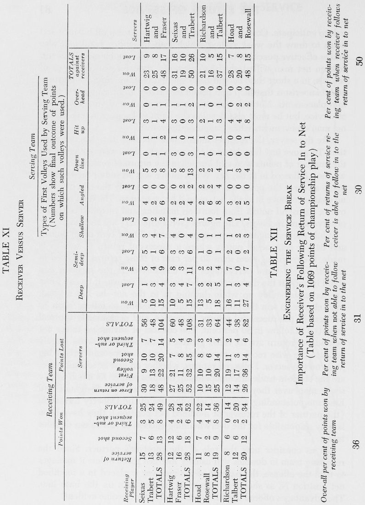
SLOQL99SLOQL99
Bảng XII: Tổng số điểm thắng. Bảng này trình bày, theo từng trận đấu và theo tổng hợp, tổng số điểm thắng của đội giao bóng và của đội nhận giao bóng, tỷ lệ phần trăm số điểm thắng của đội giao bóng, số điểm thắng của đội nhận giao bóng khi cú trả giao bóng được theo lên lưới và khi không được theo lên lưới, cùng số cú đánh trung bình để định đoạt một điểm. [Ghi chú: trang gốc bị lỗi quét—bảng bị chụp ngược nên không thể đọc trọn vẹn các con số.]
<= = ee -masas smopof He Mesey HOqeAL ee wae T2SUI jou Se pee Pee pee pee pue (09 hq uom 0} Ul ad1a4as saaiavas Same ea eh) SE SL190010904 Se JEULDHD 6 Seog Bieri CR re ee ae eee Se On squtod uayn ioe ote oe ae Soe fo UINjad wea], fo quao a syurod OO Oe, eS Ort Ore Oe waz -LO2UO pvay a (‘pesn SsulAtag = er tere et or Oe Ora Se Se sag jo Bur > ee oat OS ee ee te Fe 9aut003n0 oIOM JON NH dn Aq peasy wDa —-a4 ay} = Is yee ee ee OF eh tet ee OF te SA2]JOA 0} UY ao1asas 07 UL J, (Aejd [eug Oe) oak Oe ee OSG aay, Oe Or du1dasag UNnOdg sAayjon aur 9OIAIOG yons be ee MoOZOf Moys fo suinjas drysuorduieyp pajbuy o & Mh Or Oe eG we B86 eS Oe Ole Oe AVAYG jou Of ysitq YyormM ee 07 a]qv sioquinyy ee jo WINJoY YWHAUAS Jo sodXy, fo quao uo NoYDYS AOIAWAS o Oye Ee ie Sh OE Oe be Pe s? saaiad IX TX SASUAA = jo syurod cl ye ne OS EE Eee Sr sag SUIMOTIOY AIaVL a HTIAViL o Yee: Oe ee Or ae Go AHL “mmMag BO daap -anaoau nopjof WAAISOAY > eo awe: eh ET ee Bo Se Oe ee a INTYAANTON E90] JOU eae o SE ey eS ae kee oe Se POR ay} daaqd s.19AID0y 02 ajqv hq uom Uo eee OF Ul BDIALas 6° OR -e OL Sg ee ae OT OT CIS = a poseq you ee I$ symod ee Sh. OL ON By eo PO. PS Te wee ROE ee uayn JO douL0dwT NR ee ae 91qe],) 1807 ao FL Sk VS 6. Soe 6) F SB OPI fo uaa fo UANjaL t S4aadLag waz S7U10g OT OG eT Oy Fr AE wpa wag sua T suraiasay fig uom tt eG Tes lines ee re. |e bez pia gc lpg. bees. U0 M 81UL0g synod ee G9 be So 4 Vie 26 se) 6 pw 6 wpa} LJ cl ey 9 Sl. de oe G6. 9 eT fo quao suiaia—as 98 sad Uwospreyory STIVLOL SIVLOL SavioL —° STIV.LO.L nee ae {jeseso”d Sees ]]D-4299 Meer, -Heqye aoseny sexes eet > Ll,
THE RETURN OF SERVICETHE RETURN OF SERVICE
1. Anh ta phải đoán trước. Đối với người chơi chưa từng trải, thoạt đầu có vẻ như chơi ở vị trí lưới cải biến là đùa giỡn với tử thần một cách không cần thiết. Suy cho cùng, đối phương ở lưới có thể đập bất kỳ quả bóng cao nào thẳng vào bụng bạn với tốc độ và lực như một cú đấm trái của Joe Louis. Có lẽ anh em nhà Doherty lẽ ra không nên phát minh ra vị trí tiền tuyến phơi bày này! Chà, rủi ro không lớn như vẻ bề ngoài. Người đánh lưới cải biến có thể học cách đoán trước ý định của đối phương khá dễ dàng, và một khi đã học được, anh ta không chỉ có thể tự phòng thủ hiệu quả mà còn có thể thường xuyên giành thế tấn công. Đoán trước ở vị trí lưới cải biến là một thói quen dễ dàng. Người chơi nên đứng hơi nghiêng mình so với lưới, hướng về phía người đánh lưới đối phương, A. Khi quả giao bóng được đánh, anh ta chỉ nên nhìn bóng đủ lâu để nhận ra lúc bắt đầu cú trả giao bóng. Sau đó anh ta sẽ biết tương đối rõ loại và hướng của cú trả bóng, và điều gì sẽ xảy ra ở cú vô-lê đầu tiên của đội giao bóng. Ngay lập tức, anh ta nên chuyển sự chú ý vượt lên trước bóng tới người đánh lưới đối phương, A. Bằng cách quan sát anh ta trong một khoảnh khắc, anh ta có thể phát hiện bất kỳ ý định nào của người đánh lưới muốn cắt cú trả bóng. Nếu rõ ràng rằng người đánh lưới đối phương sẽ không đánh cú đó, người đánh lưới cải biến nên tiếp tục xoay mắt và thân mình vượt lên trước bóng về phía người giao bóng đang tiến lên, để biết vị trí của anh ta và loại vô-lê mà anh ta đang chuẩn bị đánh. Như vậy, một cái liếc nhanh khắp sân, từ người nhận giao bóng đến người đánh lưới đến người giao bóng đang tiến lên, cho người đánh lưới cải biến biết ai sẽ thực hiện cú vô-lê đầu tiên. Sau đó anh ta nên nghiên cứu người sắp đánh cú vô-lê để đoán trước chính xác loại và hướng của cú đánh. Nếu người chơi câu lạc bộ thấy rằng mình không thể theo kịp hành động nhanh và phức tạp như vậy, anh ta nên bỏ qua việc quan sát người nhận giao bóng và tập trung vào việc người đánh lưới có đánh cú đó hay không. Anh ta có thể quay lại quan sát người giao bóng đang tiến lên ngay sau đó một khoảnh khắc. 2. Anh ta phải chơi ở vị trí của mình sao cho tận dụng được những cú vô-lê đầu tiên yếu ớt của đội giao bóng. Hãy nhớ rằng đội nhận giao bóng phải giành thế tấn công nếu muốn bẻ giao bóng, và tất cả những cú trả giao bóng được đề xuất đều hướng tới mục tiêu này. Cũng hãy nhớ rằng người nhận giao bóng khó có thể buộc được một cú vô-lê yếu trong cú trả giao bóng của mình. Vì vậy, điều cấp thiết là đội nhận giao bóng phải ở trong tư thế khai thác mọi cú vô-lê đầu tiên kém cỏi. Vị trí của người đánh lưới cải biến, N, được chọn một phần chính vì mục đích này. Anh ta đủ gần lưới để di chuyển nhanh vào và đánh xuống một cú vô-lê đầu tiên phòng thủ do đội giao bóng đánh ngược lên. Anh ta nằm gần trung tâm sân vì người giao bóng, khi vô-lê một cú trả giao bóng tốt từ sát mặt sân, thường sẽ đánh chéo sân qua phần thấp nhất của lưới; và đấu thủ N chỉ cần di chuyển vài feet để cắt cú đánh. Đấu thủ N cũng có thể với tới một cú vô-lê dọc biên—bởi vì các cú vô-lê dọc biên được đánh ngược lên phần nào để vượt qua phần cao của lưới, và khá nhẹ, để giữ chúng không bay qua vạch cuối sân. Tất nhiên, người đánh lưới cải biến phải đoán trước hướng cú vô-lê đầu tiên của người giao bóng và bật người thật tốt để đón bóng (giống như một cầu thủ chốt ngắn giỏi trong bóng chày). Những điểm điển hình thắng được bởi một người đánh lưới cải biến nhanh nhạy được thể hiện trong Hình 19 và 20. Việc đấu thủ N chấp nhận rủi ro bằng cách nhích về phía trung tâm và chuẩn bị cướp bóng (poach) khi bạn cặp của anh ta thực hiện một cú trả giao bóng hiệu quả là lối chơi hợp lý. Người Australia, với khả năng đoán trước nhanh như chớp, đặc biệt giỏi cướp bóng (poach) để kết liễu. Vị trí chính xác của người đánh lưới cải biến được quyết định bởi tầm với, sự nhanh nhẹn, khả năng đoán trước của anh ta, và bởi hiệu quả cú trả giao bóng của bạn cặp. Năm 1954, những người Australia cao lớn, gầy gò đôi khi đứng hẳn vào trong—cách lưới tám feet và cách đường trung tâm năm feet—đặc biệt là ở những quả giao bóng hai. Rõ ràng người nhận giao bóng, khi theo lên phía sau một cú trả giao bóng hiệu quả, cũng có thể ở trong tư thế kết liễu thành một cú đặt bóng đối với một cú vô-lê do người giao bóng đánh ngược lên. Anh ta nói chung nên tiến lên hơi rộng (như thể hiện trong Hình 19) để bọc lót phần lưới mà bạn cặp không thể với tới. Cho tới thời điểm này, tất cả các cú trả giao bóng được đề cập hoặc vẽ sơ đồ đều dựa trên giả định rằng đội giao bóng đang sử dụng đội hình thông thường (được mô tả trong Hình 11), và rằng người giao bóng trong mọi trường hợp đều theo quả giao bóng của mình lên vị trí ở lưới. Bây giờ chúng ta hãy xem xét cú trả giao bóng chống lại những đội hình giao bóng không thông thường hay còn gọi là đội hình mẹo. Để bắt đầu, người nhận giao bóng, khi chuẩn bị thực hiện cú trả bóng của mình, phải để một trong "mấy con mắt" của mình dán vào đội giao bóng để phát hiện bất kỳ sự thay đổi vị trí nhanh chóng nào. Có một số đội hình và động tác giả mà anh ta có thể phải đối mặt (được minh họa trong các Hình 7, 8, 9 và 10). Nói chung, những đội hình này được tính toán để làm người nhận giao bóng rối loạn, bối rối hoặc bất ngờ; và chúng sẽ thành công trên mọi phương diện trừ khi người nhận giao bóng tỉnh táo và biết cách phản đòn nào cần thực hiện. Những đội hình này có thể bị đối phó thành công; nếu không, một đội hình không thông thường sẽ nhanh chóng trở thành đội hình thông thường. Những đòn phản công đúng đắn được thể hiện trong các Hình 21, 22, 23 và 24. Bạn cặp của người nhận giao bóng ở lưới phải luôn để mắt tới người đánh lưới đối phương
1. He must anticipate. To the uninitiated player, it may seem at first that to play the modified net position is to flirt unnecessarily with death. After all, the opponents at net can slam any high ball right into your stomach with the speed and force of a Joe Louis left hand. Maybe the Doherty brothers shouldn't have invented this exposed front-line position! Well, the risk isn’t as great as it may seem. The modified net man can jearn to anticipate the intentions of the opponents rather easily, and once he has learned he can not only defend himself effectively, but also take the offense quite often. Anticipating in the modified net position is an easy routine. The player should stand slightly sideways to the net, facing toward the opposing net man, A. As the serve is hit, he should watch the ball only long enough to note the start of the return of the service. Then he will know reasonably well the type and direction of the return, and what to expect on the first volley of the serving team. Immediately, he should shift his attention ahead of the ball to opposing net man, A. By watching him for an instant, he can discover any intention of the net man to intercept the return. If it is apparent that the opposing net man will not play the shot, the modified net man should continue to turn jis eyes and body ahead of the ball toward the advancing server, to learn his position and the type of volley he is getting set to play. Thus, a quick sweep of the court, from receiver to net man to advancing server, tells the modified net man who will make the first volley. Then he should study the man about to hit the volley to anticipate accurately the type and direction of the shot. If the club player finds that he cannot keep up with such speedy, complex action, he should skip watching the receiver and concentrate on whether or not the net man will play the shot. He can turn to watch the advancing sexver an instant later. 2. He must play his position so as to take advantage of weak first volleys by the serving team. Remember, the receiving team must take the offensive if it is to break service, and the recommended returns of service all work toward this end. Also remember that it is difficult for the receiver to force a weak volley on his return of service. So it becomes imperative that the receiving team be in a position to exploit every poor first volley. The position of modified net man, N, is selected in part for just this purpose. He is close enough to the net to move in rapidly and hit down a defensive first volley hit up by the serving team. He is located near the center of the court because the server, volleying a good return of service from close to the ground, will usually hit it cross-court over the lowest part of the net; and player N has only to move a few feet to intercept the shot. It is also possible for player N to reach a volley hit down the line—because down-the-line volleys are hit up somewhat to clear the high portion of the net, and rather softly, to keep them from sailing over the base line. Of course, the modified net man has to anticipate the direction of the server’s first volley and get a good jump on the ball (just like a good shortstop in baseball). Typical points won by an alert modified net man are shown in Figures 19 and 20. It is sound tennis for player N to take chances by edging toward the center and preparing to poach when his partner makes an effective return of service. The Australians, with their quickon-the-trigger anticipation, are particularly adept at poaching for a kill. The exact position of the modified net player is determined by his reach, agility, powers of anticipation, and by the effectiveness of his partner's return of service. In 1954 the long, lanky Australians were standing way in at times—eight feet from the net and five feet from the center line—particularly on second serves. Obviously the receiver, as he follows in behind an effective return of service, may also be in a position to put away for a placement a volley hit up by the server. He should generally come up a little wide (as shown in Figure 19) to cover the part of the net his partner cannot reach. Up to this point all returns of service mentioned or diagramed have been based on the assumptions that the serving team is using the conventional formation (depicted in Figure 11), and that the server is following his service in to the net position in every case. Let us now consider the return of service against unconventional or trick serving formations. To begin with, the receiver, as he prepares to execute his return, must keep one of his “several” eyes on the serving team in order to detect any rapid change in position. There are several formations and fakes he might have to face (illustrated in Figures 7, 8, 9, and 10). In general, these formations are calculated to rattle, confuse, or surprise the receiver; and they will succeed on all counts unless the receiver is alert and knows what counteraction to take. These formations can be met successfully; otherwise, an unconventional formation would quickly become the conventional formation. The proper counterattacks are shown in Figures 21, 22, 23, and 24. The receiver's partner at net must always watch the opposing net
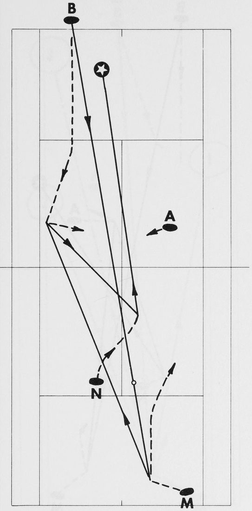
MODIFIED NET PLAYMODIFIED NET PLAY
Sơ đồ này cho thấy, trong một ví dụ hoàn hảo về phối hợp đồng đội, lý do vì sao vị trí lưới cải biến được chấp nhận là vị trí tốt nhất cho bạn cặp của người nhận giao bóng. Người nhận giao bóng M đã đánh một cú dink (bóng nhỏ) trái tay chéo sân tuyệt đẹp, buộc người giao bóng B phải vô-lê ngược lên từ sát lưới. Người đánh lưới cải biến N đã quan sát cú trả bóng chéo sân của người nhận giao bóng M. Sau đó anh ta nhận thấy rằng người đánh lưới A không có ý định cướp bóng (poach); rằng người giao bóng B sẽ chỉ với tới bóng sau một quãng chạy dài; và cuối cùng, rằng người giao bóng B sẽ vô-lê ngược lên chéo sân. Do đó, người đánh lưới cải biến N tiến lên một hoặc hai bước về phía lưới khi nhận thấy cú trả giao bóng chéo sân thấp, rồi lao sang phải để chặn cú vô-lê phòng thủ chéo sân đã đoán trước của người giao bóng B. Nhờ vậy anh ta có thể cướp bóng (poach) và vô-lê xuống giữa để có một cú đặt bóng dễ dàng. Hình 19
This diagram shows, in a perfect example of team play, why the modified net position has been accepted as the best position for the partner of the receiver. Receiver M has hit a fine backhand cross-court dink, which forces server B to volley up from close to the net. Modified net player N_ has watched the cross-court return by receiver M. Then he notes that net man A is not planning a poach; that server B will reach the ball only after a long run; and, finally, that server B will volley up cross-court. Therefore, modified net man N moves a step or two toward the net on noting the low cross-court return of service, and then he dashes in to his right to cut off the anticipated cross-court defensive volley by server B. Thus he is able to poach and volley down the center for an easy placement.

MODIFIED NET PLAYMODIFIED NET PLAY
Sơ đồ này cho thấy kiểu pha cứu bóng đáng kinh ngạc mà một người đánh lưới cải biến nhanh nhạy có thể thực hiện để thắng một điểm. Người nhận giao bóng M đánh một cú trả bóng yếu, cho phép người đánh lưới A di chuyển ngang và vô-lê sắc bén vào người đánh lưới cải biến N để giành một điểm tưởng chừng dễ dàng. Nhưng có một trở ngại. Người đánh lưới cải biến N, khi quan sát diễn biến, đã thấy rằng người đánh lưới A sắp cắt cú trả giao bóng kém cỏi. Nhờ đó anh ta có thể di chuyển sang trái, đoán trước hướng cú vô-lê của người đánh lưới A, và vô-lê trả bóng lại thành một cú đặt bóng! Đây là kiểu pha bóng có thể làm tan nát trái tim người giao bóng—và cả ván giao bóng của anh ta nữa. Hình 20
This diagram shows the T type of remarkable save an alert modified net player can make to win a point. Receiver M makes a weak return, which permits net man A to move over and volley sharply at modified net player N for a seemingly easy point. But there is a hitch. Modified net player N, in surveying the action, has seen that net player A is about to intercept the poor return of service. Thus he is able to move to his left, anticipate the direction of net player A’s volley, and volley the shot back for a placement! This is the sort of play that can break the servers heart—and his service, too.
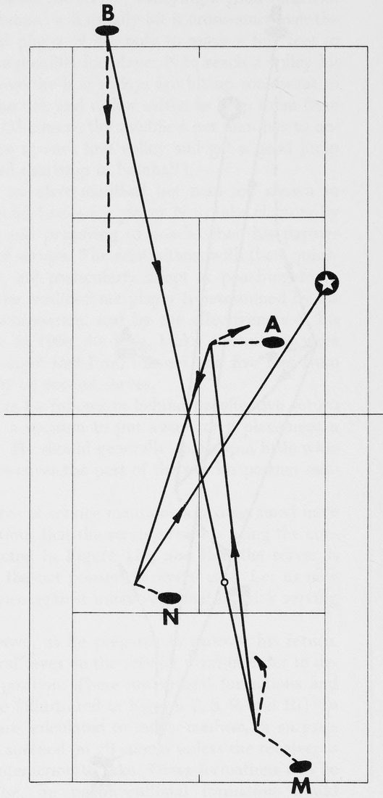
RETURNS OF SERVICE AGAINSTRETURNS OF SERVICE AGAINST
CÁC ĐỘI HÌNH GIAO BÓNG KHÔNG THÔNG THƯỜNG. Khi người nhận giao bóng đối mặt với đội hình giao bóng ngược (reverse) ở ô thuận tay, cú trả bóng tốt nhất của anh ta là dọc biên tới điểm ngắm 1. Điều này sẽ buộc người giao bóng B phải thực hiện một cú vô-lê chạy khó khăn từ một điểm thấp ở bên trái tay của anh ta. Nếu người đánh lưới A quá gần trung tâm hoặc lùi quá xa, một cú drive chéo sân xoáy lên tới vùng 2 là hiệu quả. Nếu người đánh lưới A quá gần lưới, người nhận giao bóng M có toàn bộ chiều dài chéo sân có lợi cho mình, và có thể đánh một quả bóng bổng (lob) tấn công tới điểm ngắm 3. Về cơ bản, những điều kiện tương tự cũng đúng cho người nhận giao bóng khi đội hình ngược được sử dụng để giao bóng vào ô trái tay. Tuy nhiên, ở đây cú đánh dọc biên có phần dễ hơn cho người giao bóng, người có thể đáp trả hiệu quả bằng một cú vô-lê thuận tay chạy.
UNCONVENTIONAL SERVING FORMATIONS When the receiver faces the reverse serving formation in the forehand court, his best return is down the line to aim point 1. This will force server B to make a difficult running volley from a point low on his backhand. If net man A is too close to the center or back too far, a topped cross-court drive to area 2 is effective. If net man A is too close to the net, receiver M has the whole diagonal length of the court in his favor, and can play an offensive lob to aim point 3. Essentially the same conditions hold for the receiver when the reverse formation is used in serving to the backhand court. Here, however, the down-the-line shot is somewhat easier for the server, who can reply effectively with a running forehand volley.
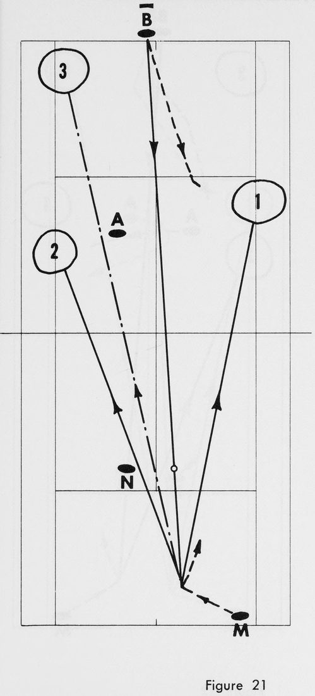
RETURNS OF SERVICE AGAINSTRETURNS OF SERVICE AGAINST
CÁC ĐỘI HÌNH GIAO BÓNG KHÔNG THÔNG THƯỜNG. Nếu người nhận giao bóng M đã có chút thành công khi đánh cú trả bóng dọc biên tới điểm ngắm 1 (được đề xuất trong Hình 21) chống lại đội hình giao bóng ngược, anh ta nên cảnh giác với một pha cướp bóng (poach) đã được dàn dựng như pha được vẽ ở đây. Có một đòn đối phó đơn giản: ngay khi người nhận giao bóng M thấy người đánh lưới A bắt đầu di chuyển, anh ta nên đánh cú chéo sân tới vùng 2. Với chút may mắn, nó sẽ mang về cho anh ta một điểm. Một quả bóng bổng (lob) tới điểm ngắm 3 cũng là một cú đánh hiệu quả. Hình 22
UNCONVENTIONAL SERVING FORMATIONS If receiver M_ has been having some success in play- \ ing the down-the-line return to aim point 1 (recommended 7 in Figure 21) against the re- Ze verse serving formation, he UA should be alert for a planned / poach play like the one pic- / tured here. There is a simple counter: the instant receiver M sees net man A start his move, he should play the cross-court shot to area 2. ° e ° ° aise = With any luck it will gain him a point. A lob to aim point 3 is also an effective play.
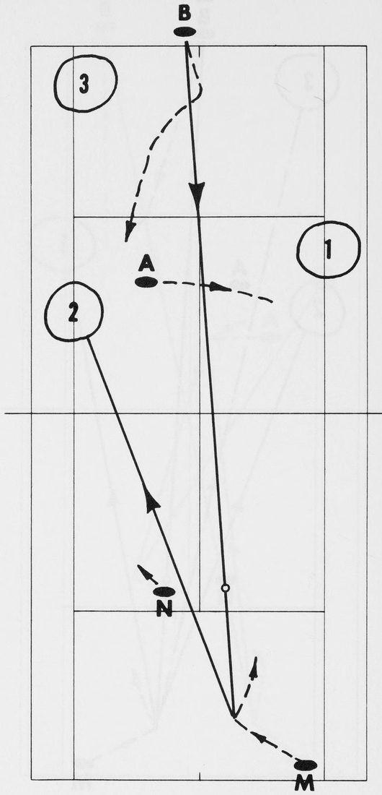
RETURNS OF SERVICE AGAINSTRETURNS OF SERVICE AGAINST
CÁC ĐỘI HÌNH GIAO BÓNG KHÔNG THÔNG THƯỜNG. Người nhận giao bóng đã thành thạo các cú trả bóng chống lại những đội hình được thể hiện trong Hình 21 và 22 vẫn còn một vấn đề khác phải đối mặt—pha cướp bóng giả (fake poach) trong đội hình giao bóng ngược. Nếu người nhận giao bóng M tỉnh táo và phán đoán của anh ta vững vàng, anh ta có thể phát hiện một pha cướp bóng giả từ hướng di chuyển của người đánh lưới A hoặc người giao bóng B. Anh ta có thể phá hỏng thủ pháp này bằng cách đánh dọc biên tới điểm ngắm 1. Một cú trả bóng hiệu quả khác là quả bóng bổng (lob) chéo sân sâu tới điểm ngắm 3. Hình 23
UNCONVENTIONAL SERVING FORMATIONS B The receiver who has mastered the returns against the formations shown in Figures 21 and 22 still has another problem to face—the fake poach on the reverse serving formation. If receiver M is alert and his judgment sound, he can detect a fake poach from the course taken by either net man A or server B. He can ruin this maneuver by hitting down the line to aim point 1. Another effective return is the deep crosscourt lob to aim point 38.
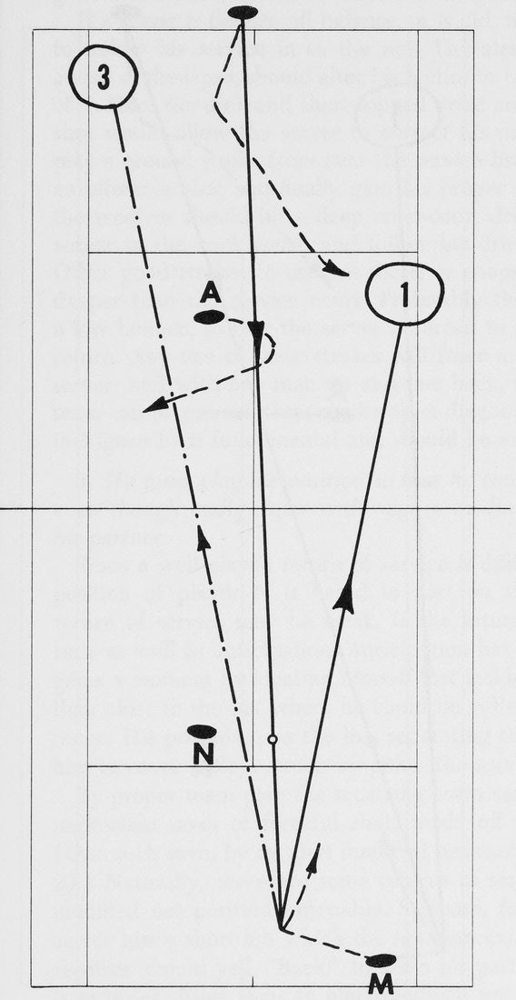
RETURNS OF SERVICE AGAINSTRETURNS OF SERVICE AGAINST
CÁC ĐỘI HÌNH GIAO BÓNG KHÔNG THÔNG THƯỜNG. Sơ đồ này mô tả pha cướp bóng (poach) thông thường. Nó được đội giao bóng sử dụng khi ít ai ngờ nhất, đặc biệt là khi người nhận giao bóng M đã ổn định tư thế cẩn thận và liên tục đánh những cú trả bóng chéo sân hiệu quả. Đòn đối phó đúng đắn: người nhận giao bóng M nên đánh một cú drive thấp dọc biên. Nhiều tay đánh đôi khôn ngoan thỉnh thoảng thực hiện kiểu trả bóng này như một cú kiềm chế để giữ cho người đánh lưới A không cướp bóng (poach) bừa bãi. Nếu người nhận giao bóng giữ cú đánh của mình thấp, người đánh lưới A không thể làm gì hơn ngoài việc vô-lê trả thẳng lại. Tuy nhiên, nếu cú drive bay tới quá cao, bạn gần như có thể nói lời tạm biệt với điểm đó. Người đánh lưới có thể vô-lê nó xuống mạnh mẽ qua đường chéo sân đang trống để đặt bóng. Hình 24
UNCONVENTIONAL SERVING FORMATIONS This diagram depicts the T ordinary poach play. It is | used by the serving team when least expected, particularly when receiver M_ has been setting himself carefully and consistently playing effective cross-court returns. The proper counter: receiver M should play a low drive down the line. Many wise doubles players make this type of return from time to time as a check play to keep net man A from promiscuous poaching. If the receiver keeps his shot low, net man A cannot do much more than volley it straight back. However, if the drive comes in too high, you can just about kiss the point good-by. The net man can volley it down severely through the open diagonal for a placement.
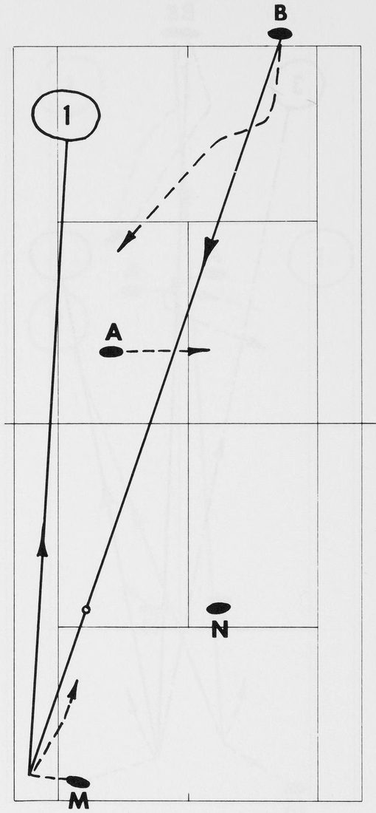
THE RETURN OF SERVICETHE RETURN OF SERVICE
người đàn ông cẩn thận trong một pha cướp bóng (poach). Anh ta không nên khép lại về phía lưới, mà nên vào tư thế sẵn sàng thực hiện một cú trả bóng phòng thủ chống lại pha cướp bóng, nếu có thể. Nếu một người giao bóng bị mất thăng bằng, hoặc đã già, mệt hay lười biếng, anh ta có thể không theo quả giao bóng của mình lên lưới. Người nhận giao bóng tỉnh táo, ngay lập tức nhận ra sự sao nhãng đó, nên thay đổi chiến thuật để tận dụng tối đa. Ở đây cú dink và cú drive xoáy lên ngắn không hiệu quả lắm: cả hai cú đánh đều cho phép người giao bóng sửa chữa sai lầm của mình bằng cách tiến lên đánh một cú đánh nền từ gần vạch giao bóng, nơi anh ta có thể thực hiện một cú đánh tấn công và cuối cùng giành được vị trí thích hợp ở lưới. Thay vào đó, người nhận giao bóng nên đánh một cú drive chéo sân sâu, sẽ giữ người giao bóng ở lại sân sau, và theo cú drive của mình nhanh chóng lên lưới. Những cú đánh tốt khác để sử dụng là những cú cắt bóng (slice) hoặc bổ bóng đánh tới một vùng sâu hơn ô giao bóng. Tốt nhất là những cú đánh này nên có độ nảy thấp, để người giao bóng buộc phải xúc bóng lên thành một cú trả bóng yếu. Bất kỳ cú đánh nào trong số này cũng sẽ buộc người giao bóng phải trả bóng phòng thủ; và khi một người ở trên lưới còn một người ở sau, hàng ngũ của đội giao bóng có thể bị xuyên thủng qua đường chéo sân đang trống. Pha bóng này (được minh họa trong Hình 1) là cơ bản và hẳn đã là chuyện cũ vào lúc này. 3. Anh ta phải chơi ở vị trí của mình sao cho có thể thực hiện một cú đánh tạm ổn ngay cả khi bị phơi bày trầm trọng qua một cú trả giao bóng tầm thường của bạn cặp. Vì một cú trả giao bóng được đánh tốt rất khó thực hiện, nên vị trí ban đầu của đấu thủ N dựa một phần trên giả định rằng cú trả giao bóng có thể yếu. Nếu cú trả bóng yếu, anh ta sẽ cần thời gian cũng như khả năng đoán trước. Khả năng đoán trước đã được đề cập. Đấu thủ N giành được một khoảnh khắc bằng cách đặt mình ngay bên trong vạch giao bóng, thay vì sát lưới nơi anh ta có thể bị vô-lê vào từ cự ly sát mặt. Vị trí của anh ta gần vạch phân cách hai ô giao bóng cho phép anh ta bọc lót những cú vô-lê do người giao bóng hoặc người đánh lưới thực hiện. Nhờ phối hợp đồng đội đúng đắn, đội nhận giao bóng có thể thực hiện nhiều pha cứu bóng tưởng chừng bất khả thi trước những cú đánh mạnh mẽ được tạo ra từ những cú trả giao bóng kém cỏi. (Một pha cứu bóng như vậy, bởi một người đánh lưới cải biến nhanh nhạy, được minh họa trong Hình 20.) Đương nhiên, có một số cú trả giao bóng có thể khiến vị trí lưới cải biến trở nên bất khả thi. Ví dụ, giả sử người nhận giao bóng đánh một quả bóng bổng (lob) ngắn mà người đánh lưới rõ ràng có thể giết chết. Người nhận giao bóng nên hét lên, "Lùi!" để cảnh báo bạn cặp rằng cần phải nhanh chóng rút lui. Ngay cả khi đó, một người đánh lưới cải biến nhanh nhạy vẫn có thể chạy nhanh về vạch cuối sân, hoặc về phía những góc rộng đang trống, và xoay xở cứu vãn tình thế. Đôi khi người đánh lưới cải biến ở trong tình huống phải đưa ra những quyết định nhanh đến khó tin. (Tình huống tiến thoái lưỡng nan "để bóng bay qua" được minh họa trong
man carefully on a poach play. He should not close toward the net, but get set to make a defensive return of the poach, if possible. If a server is thrown off balance, or is old, tired, or lazy, he may fail to follow his service in to the net. The alert receiver, immediately aware of the lapse, should alter his tactics to take maximum advantage of it. Here the dink and short-topped drive are not so effective: either shot would allow the server to correct his mistake by moving up to play a ground stroke from near the service line, where he could make an offensive shot and finally gain his proper position at net. Instead, the receiver should hit a deep cross-court drive, which will hold the server in the back court, and follow his drive rapidly in to the net. Other good strokes to use are sliced or chopped shots hit to an area deeper than the service court. Preferably these strokes should have a low bounce, so that the server is forced to dig them up for a weak return. Any one of these strokes will force a defensive return by the server; and with one man up and one back, the ranks of the serving team can be pierced through the open diagonal. This play (illustrated in Figure 1) is fundamental and should be an old story by this time. 3. He must play his position so that he can make an adequate shot even though badly exposed through a mediocre return of service by his partner. Since a well-played return of service is difficult to make, the initial position of player N is based in part on the assumption that the return of service may be weak. If the return is weak, he will need time as well as anticipation. Anticipation has been covered. Player N gains a moment by locating himself just inside the service line, rather than close to the net where he could be volleyed at from point-blank range. His position near the line separating the service courts enables him to cover volleys struck by either the server or the net man. By proper team play the receiving team can make many seemingly impossible saves of forceful shots made off poor returns of service. (One such save, by an alert modified net man, is illustrated in Figure 20.) Naturally, there are some returns of service that can make the modified net position untenable. Suppose, for example, that the receiver hits a short lob which the net man can obviously murder. The receiver should yell, “Back!” to warn his partner that a quick retreat is in order. Even then an alert modified net man can scram for the baseline, or toward open wide angles, and manage to save the day. At times the modified net man is in a spot where he has to make incredibly fast decisions. (The “let-go-by” dilemma is illustrated in
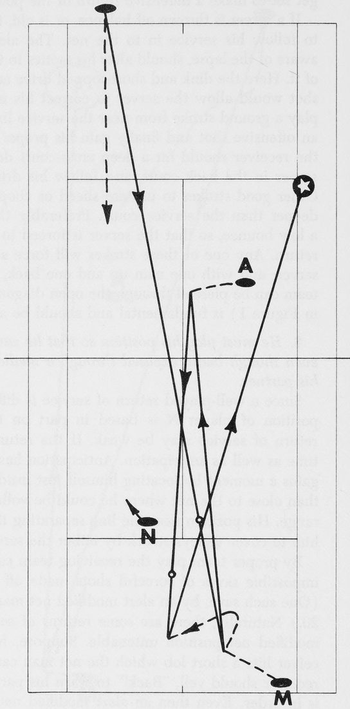
TEAM PLAY ON THE RETURN OF SERVICE:TEAM PLAY ON THE RETURN OF SERVICE:
PHA "ĐỂ BÓNG BAY QUA". Điểm này thể hiện phối hợp đồng đội ở mức tuyệt vời nhất. Nó xảy ra trong một trận đấu chuyên nghiệp giữa Budge và Gonzales đấu với Kramer và Segura. Budge, B, giao bóng cho Segura, M, người cố lách một cú trả bóng xuống giữa sân. Nhưng người đánh lưới nhanh nhạy Gonzales, A, di chuyển thấp về phía trung tâm gần người đánh lưới cải biến Kramer, N. Trong tích tắc, đội nhận giao bóng phải quyết định đấu thủ nào có cơ hội tốt hơn để thực hiện một cú trả bóng hiệu quả. Kramer, N, có thể đảo hướng và với tới bóng, nhưng anh ta sẽ phải thực hiện một cú vô-lê rất khó. Hơn nữa, Kramer phải biết Segura sẽ ở đâu, và liệu Segura có đoán trước được quyết định của anh ta hay không. Cuối cùng—tất cả trong tích tắc—Kramer để bóng bay qua; còn Segura, người đã khởi hành về phía lưới để bọc lót cú vô-lê của Gonzales. Và nhận thấy Gonzales chậm trở về vị trí lưới thích hợp của mình, Segura bắn một cú drive trái tay dọc biên thành một cú đặt bóng tuyệt vời. Quần vợt tuyệt đỉnh! Hình 25
THE “LET-GO-BY’’ PLAY B This point shows team play ] Sort at its best. It occurred during a professional match pitting Budge and Gonzales against Kramer and Segura. Budge, B, served to Segura, M, who tried to slip a return down the middle. But alert net man Gonzales, A, moved low to the center near modi- | fied net man Kramer, N. In a split second the receiving team had to decide which A player had the better chance _—-@® to make an effective return. Kramer, N, could reverse direction and reach the ball, but he would have to make a very difficult volley. Moreover, Kramer had to know where Segura would be, and whether Segura would anticipate his decision. Finally—all in a split second—Kramer let the ball go by; and Segura, who had started for the net, to cover Gonzales’ volley. And noting that Gonzales was slow to return to his proper net position, Segura rifled a backhand drive down the line for a marvelous placement. Great tennis! /

THE RETURN OF SERVICETHE RETURN OF SERVICE
Hình 25.) Có một bạn cặp biết đoán trước, tự lo liệu được cho mình ở nửa sân trước, và thực hiện được những pha cứu bóng "bất khả thi", không cần nói cũng biết, là một niềm an ủi lớn lao cho người nhận giao bóng đang bị dồn ép. Nó cho anh ta sự tự tin để chấp nhận rủi ro, để cố giữ đối phương mất thăng bằng bằng những cú đánh mẹo thỉnh thoảng tung ra (như lách một cú trả bóng dọc biên hoặc xuyên qua trung tâm) mà nếu không thì anh ta sẽ sợ không dám liều. Suy cho cùng, cuộc đấu được trình bày ở đây không chỉ là người nhận giao bóng đấu với quả giao bóng của người giao bóng, mà còn là người nhận giao bóng đấu với cú vô-lê đầu tiên của người giao bóng. Nếu người giao bóng được trao một cú vô-lê đầu tiên "ngon ăn", điểm đó thường coi như đã mất. Để có dữ liệu thực tế về toàn bộ cục diện của cuộc đấu tay đôi cực kỳ quan trọng này trong đánh đôi, hai trận bán kết năm 1954 tại Longwood, có sự tham gia của các đội Australia và Hoa Kỳ, đã được theo dõi. Trong trận thứ nhất, Seixas và Trabert đánh bại Hartwig và Fraser, 8-6, 8-6, 5-7, 6-4; và trong trận thứ hai, Hoad và Rosewall vượt qua Richardson và Talbert, 6-2, 6-4, 12-10. Bảng XI cho thấy số điểm thắng và thua của những người nhận giao bóng, cần bao nhiêu cú đánh để định đoạt điểm, các loại vô-lê đầu tiên được sử dụng chống lại những người nhận giao bóng, và số cú vô-lê đầu tiên chống lại mỗi người nhận giao bóng dẫn tới thắng hay thua điểm. Bảng này đưa ra một số luận điểm thuyết phục: 1. Người nhận giao bóng nói chung thua số điểm do mắc lỗi nhiều gấp khoảng một lần rưỡi so với số điểm anh ta thắng trực tiếp bằng cú trả giao bóng của mình. Tuy nhiên, trước khi bạn chấp nhận đây là một mức chuẩn khả dĩ, hãy lưu ý rằng Lew Hoad thắng mười một điểm trực tiếp trong khi chỉ mắc lỗi mười lần. Một màn trình diễn xuất sắc! 2. Phần lớn số điểm thắng được của đội nhận giao bóng được thắng ngay ở chính cú trả giao bóng, chứ không phải ở những cú đánh tiếp theo trong pha bóng qua lại (tổng cộng 95 so với 76). Nói cách khác, cú vô-lê đầu tiên là cú vô-lê khó nhất để người giao bóng thực hiện thành công, nhưng một khi đã thực hiện được nó, anh ta có cơ hội tốt để thắng bằng nó. Điều này nhấn mạnh giá trị to lớn của việc đưa cú trả giao bóng vào cuộc một cách an toàn và hiệu quả. 3. Đội nhận giao bóng nói chung thua số điểm nhiều gấp đôi số điểm thắng. Điều này khớp với độ dài trung bình của một ván đấu trong đánh đôi: sáu điểm, bốn thắng so với hai thua. Lưu ý rằng Hoad một lần nữa nổi bật là người nhận giao bóng hay nhất của buổi chiều hôm đó. Anh ta thắng hai mươi hai điểm, trong khi chỉ thua ba mươi mốt điểm. 4. Miễn là đội nhận giao bóng không mắc lỗi khi trả giao bóng, cơ hội thắng điểm của họ gần như ngang bằng với đội giao bóng (thắng 171 so với thua 206, tức 45 phần trăm số lần). Đội duy nhất tỏ ra kém cỏi ở khía cạnh này là Richardson và Talbert, những người đã hứng chịu đòn từ những cú vô-lê đầu tiên sâu và hung hãn của Hoad và Rosewall. 5. Nếu đội nhận giao bóng không thắng điểm bằng cú trả giao bóng thành công, và đội giao bóng không thắng điểm bằng cú vô-lê đầu tiên của mình, thì một pha bóng qua lại diễn ra, và điều này lại có lợi cho đội giao bóng, vì họ là người đầu tiên nắm quyền kiểm soát lưới. Tỷ lệ bảy mươi sáu thắng so với chín mươi bảy thua của đội nhận giao bóng, tức khoảng 45 phần trăm, cũng giống như ở mục 4 trên. Trong những trận đấu này, khi một người giao bóng đặc biệt mạnh, như Trabert, đang thi đấu sung mãn và thắng ván giao bóng của mình một cách dễ dàng, thì người Australia đột ngột chuyển chiến thuật để cố làm anh ta mất phong độ. Họ làm điều này bằng cách chủ động chấp nhận rủi ro lớn—họ giáng cú trả giao bóng dọc biên hoặc chéo sân ở những góc không thể cứu được, cho rằng mình chẳng có gì để mất. Nếu hai cú đánh liều mạng may mắn thành những cú đặt bóng, họ lại trở về cuộc chơi với cơ hội tốt để bẻ được một quả giao bóng trước đó bất khả xâm phạm và giành được một lợi thế tâm lý to lớn. Tóm lại, cần nhấn mạnh lại tầm quan trọng của cú trả giao bóng và đòi hỏi phối hợp đồng đội ở mức cao nếu cặp đấu nhận giao bóng muốn có cơ hội bẻ giao bóng. Có lẽ chính sự xuất sắc của người Australia ở những khía cạnh cụ thể này của lối chơi đã đưa họ lên vị trí thống trị đánh đôi trên tất cả các quốc gia khác. Giải Vô địch Đánh đôi Hoa Kỳ năm 1950 (dữ liệu trong Bảng IX) là một ví dụ hoàn hảo: những cú trả giao bóng và chiến thuật trên sân của người Australia đã giúp Bromwich và Sedgman tiến vào vị trí tấn công ở lưới 51 phần trăm số lần; trong khi Talbert và Mulloy chỉ làm được điều đó 18 phần trăm số lần! Những tay đánh đôi trẻ nên cố gắng noi gương Bromwich và Lott ở khía cạnh này. Họ có thể pha trộn các cú trả bóng drive, dink và lob với động tác tương tự đến mức đánh lừa, đảm bảo giữ cho đội giao bóng mất thăng bằng. Họ kết hợp sức mạnh với sự khéo léo, tấn công với phòng thủ; và khi không có lỗ hổng nào tồn tại, họ dùng những nguồn lực tuyệt vời để tạo ra chúng.
Figure 25.) Having a partner who can anticipate, take care of himself in the forecourt, and make “impossible” gets is, needless to say, a great comfort to the harassed receiver. It gives him the confidence to take chances, to try to keep the opponents off balance with occasional tricky shots (like slipping a return down the sideline or through the center ) which he would otherwise be afraid to risk. In the final analysis, the duel being presented here is not just receiver versus the server’s service, but also receiver versus the server’s first volley. If the server is presented with a “cinch” first volley, the point is usually as good as lost. To get factual data on the over-all pattern of this vitally important dual in doubles, the two 1954 semi-finals matches at Longwood, involving Australian and United States teams, were monitored. In the first Seixas and Trabert defeated Hartwig and Fraser, 8-6, 8-6, 5-7, 6-4; and in the second Hoad and Rosewall overcame Richardson and Talbert, 6-2, 6-4, 12-10. Table XI shows the points won and lost by the receivers, how many strokes it took to decide the point, the types of first volleys used against the receivers, and the number of first volleys against each receiver resulting in won or lost points. The table makes a number of compelling points: 1. The receiver generally loses about one and one-half times as many points through errors as he wins outright with his return of service. However, before you accept this as a satisfactory par, note that Lew Hoad won eleven points outright while erring on only ten. An excellent performance! 2. The majority of points won by the receiving team are won on the return of service stroke itself, rather than on subsequent strokes in the rally (a total of 95 as against 76). In other words, the first volley is the most difficult volley for the server to make successfully, but once he has made it he has a good chance to win with it. This underlines the tremendous value of getting the return of service safely and effectively into play. 3. The receiving team generally loses twice as many points as it wins. This checks out with the average length of a game in doubles: six points, four won against two lost. Note that Hoad once again stands out as the best receiver of the afternoon. He won twenty-two points, while losing only thirty-one. 4. Provided the receiving team does not make an error in returning service, its chances of winning the point are almost equal to those of the serving team (171 won as against 206 lost, or 45 per cent of the time). The only team showing up poorly in this respect was Richardson and Talbert, who took a beating from the deep, savage first volleys of Hoad and Rosewall. 5. If the receiving team does not win the point on the successful return of service, and the serving team does not win the point on its first volley, a rally ensues, which again favors the serving team, since it is first to gain the command of the net. The ratio of seventy-six wins to ninety-seven losses for the receiving team, or approximately 45 per cent, is the same as 4 above. During these matches, when a particularly strong server, like Trabert, was going great guns and winning his game handily, the Aussies would suddenly switch tactics to try to upset him. This they did by deliberately taking long chances—they slugged the return of service down the line or cross-court at irretrievable angles, figuring that they had nothing to lose. If two desperation shots happened to go for placements, they were back in business with a good chance to break a hitherto impenetrable serve and gain a terrific psychological advantage. In summary, it is well to re-emphasize the importance of the return of service and the high order of team play required if the receiving pair are to have a chance to break service. Probably it is their excellence in these particular aspects of play that has carried the Australians to doubles supremacy over all other nations. The 1950 U. S. Doubles Championship (data in Table IX) is a perfect case in point: Australian returns of service and court tactics made it possible for Bromwich and Sedgman to move into the offensive position at net 51 per cent of the time; while Talbert and Mulloy were able to do so only 18 per cent of the time! Young doubles players should seek to emulate Bromwich and Lott in this department. They were able to mix up the drive, dink, and lob returns with a deceptive similarity of motion guaranteed to keep the serving team off balance. They combined force with finesse, attack with defense; and when no openings existed, they used great resources to create them.
6. Lối Đánh Lưới
Không thể nhấn mạnh quá mức tầm quan trọng của lối đánh lưới trong đánh đôi. Bảng IV và V chỉ ra một cách sinh động rằng khoảng 33 phần trăm tổng số cú đánh, và quan trọng hơn, 54 phần trăm tổng số cú đánh ăn điểm trong đánh đôi vô địch, được thực hiện từ vị trí ở lưới. Vì chỉ có 26 phần trăm số cú đánh ăn điểm được thực hiện bằng cú đánh nền (groundstroke) và bóng bổng (lob) từ vùng gần vạch cuối sân, nên vị trí ở lưới có lợi thế khoảng hai chọi một so với vị trí ở vạch cuối sân. Không tính quả giao bóng và cú trả giao bóng, vốn phải được đánh từ vạch cuối sân, lợi thế của vị trí ở lưới so với vạch cuối sân tăng vọt lên con số đáng kinh ngạc là bốn chọi một! Điều này được chứng minh trong Bảng VI, bảng này cho thấy sức mạnh áp đảo của cú trên đầu và cú vô-lê so với các cú đánh khác. Do đó, việc giành vị trí tấn công ở lưới mỗi khi có cơ hội là điều "bắt buộc", và nên được luyện tập cho đến khi trở thành bản năng thứ hai. Để chơi lưới hiệu quả, trước tiên bạn phải học: 1. Đoán trước. Lối chơi ở lưới nhanh đến khó tin, đặc biệt khi cả bốn đấu thủ đều ở nửa sân trước đánh qua đánh lại vào nhau. Để hình dung nhanh đến mức nào, cú giao bóng của Arthur Ashe được đo ở tốc độ 124 dặm một giờ, của John Alexander và Roscoe Tanner là 140 dặm một giờ, và của Colin Dibley là 148 dặm một giờ! Trước đó, cú giao bóng của Tilden và Gonzales được đo ở tốc độ 111 dặm một giờ, khiến đường bay trung bình của bóng nhanh hơn bất kỳ môn thể thao nào khác, kể cả golf và bóng chày. Một cú đánh di chuyển ở tốc độ 111 dặm một giờ bay hết chiều dài cả một sân quần vợt trong 0,48 giây, và trong một pha đánh qua lại mạnh mẽ ở lưới, các đấu thủ có khoảng 0,20 giây để theo dõi đường bay của bóng, để ý vị trí đối phương, quyết định phải làm gì, và đánh bóng! Vì vậy, để có cơ hội trả bóng hiệu quả, đấu thủ đỉnh cao phải đoán trước với độ chính xác từng tích tắc và đồng thời bật người đón bóng. Người đánh lưới không chỉ phải đoán trước những cú đánh của đối phương (bằng cách nghiên cứu kỹ thuật đánh bóng, động tác chân và những yếu tố khác tiết lộ ý định của họ), mà còn phải hiểu bạn cặp của mình đến mức có thể biết cú đánh tiếp theo của bạn ấy sẽ đi đâu và nó có khả năng tạo ra loại cú trả bóng nào. Khả năng đoán trước nhạy bén đã giúp những đấu thủ như anh em nhà Doherty, Richards, Borotra, Allison, Brugnon, Seixas, Lott và Roche trở nên tuyệt vời trong đánh đôi. Điều này cần nhiều giờ luyện tập. 2. Di chuyển đến vị trí tốt nhất. Người đánh lưới phải ở đúng vị trí vào đúng thời điểm. Vì hai người không thể bao phủ hoàn toàn chiều rộng của lưới, đặc biệt khi đối phương đang đánh bóng từ một góc rộng, hoặc từ cự ly gần, nên những người đánh lưới phải dịch chuyển vị trí để, với tư cách một đội, tạo ra sự bao phủ sân tốt nhất có tính đến vị trí của đối phương và loại cú đánh sắp được thực hiện. Điều này có thể đòi hỏi tiến vào sát, sang một bên, dồn về trung tâm, lùi lại, hoặc chờ đến giây cuối cùng để dụ cú đánh rồi di chuyển nhanh để bọc lót một lỗ hổng. Như đã lưu ý nhiều lần, khả năng đoán trước hỗ trợ rất nhiều trong việc xác định và di chuyển tới vị trí lý tưởng. Ngoài ra, bạn phải để mắt tới bạn cặp của mình, biết thói quen của bạn ấy, và có một số hiểu biết đã sắp đặt trước về những loại cú đánh nhất định, để bao phủ chiều rộng sân và ngăn bóng bị đánh xuyên qua giữa hai đồng đội. Vị trí dịch chuyển liên tục ở lưới theo vị trí thay đổi của bóng, nên không thể dung thứ sự lười biếng. Nửa bước có thể là khác biệt giữa thắng và thua một điểm. Không phải ngẫu nhiên, việc chơi đúng vị trí bao gồm cả việc tránh đường của bạn cặp khi bạn ấy đang đánh bóng. Bạn có thể phải cúi thấp xuống để bạn ấy có thể đánh một cú trên đầu hoặc cú góc qua đầu bạn, hoặc nhường đất để cho bạn ấy có thêm không gian vung vợt. 3. Nhanh nhạy. Lối chơi hào hứng, nhanh như chớp đặc trưng nhất của đánh đôi diễn ra ở lưới. Để chơi đánh đôi đỉnh cao, người đánh lưới phải giữ cho đầu óc luôn vận động và phản xạ luôn sắc bén. Chỉ chạm vợt vào bóng là chưa đủ; bạn phải suy nghĩ rồi thực hiện cú trả bóng chiến thuật đúng đắn—tất cả trong một tích tắc. Sự nhanh nhẹn như mèo, thăng bằng tuyệt vời, và cây vợt luôn ở tư thế sẵn sàng tốt nhất tạo nên một đấu thủ nhanh nhạy. Một lần nữa, luyện tập là câu trả lời.
It is impossible to overemphasize the importance of net play in doubles. Tables IV and V show graphically that approximately 33 per cent of all strokes, and what is more important, 54 per cent of all winning shots in championship doubles, are made from the net position. Since only 26 per cent of the winning shots are made with ground strokes and lobs from the vicinity of the base line, the net position has about a two-to-one advantage over the base-line position. Excluding the service and return of service, which must be played from the base line, the advantage of the net position over the base line jumps to the staggering figure of four-to-one! This is borne out in Table VI, which shows the overwhelming potency of the overhead and volley compared with other strokes. Thus, taking the offensive position at the net at every opportunity is a “must,” and should be practiced till it becomes second nature. To play the net effectively, you must first learn: 1. To anticipate. Play at the net is incredibly fast, particularly when all four players are in the forecourt banging away at one another. To give an idea of just how fast, Arthur Ashe’s serve was timed at 124 miles per hour, John Alexander's and Roscoe Tanner’s at 140 miles per hour, and Colin Dibley’s at 148 miles per hour! Earlier, Tilden’s and Gonzales’ serves were timed at 111 mph, which makes the average flight of the ball faster than that of any other sport, including golf and baseball. A shot traveling at 111 miles per hour covers the whole length of a tennis court in 0.48 seconds, and in a hard-hitting exchange at net the players have about 0.20 seconds to follow the flight of the ball, note the opponent's position, make up their minds what to do, and stroke the ball! So to have a chance to make effective returns, the topflight player must anticipate with split-second timing and yet get a jump on the ball. The net man must not only anticipate the shots of his opponents (by studying their stroking techniques, footwork, and other factors that give away their intentions ), but also he must know his partner so well that he can tell where the partner's next shot is going and what type of return it is likely to produce. Keen anticipation helped to make players like the Dohertys, Richards, Borotra, Allison, Brugnon, Seixas, Lott, and Roche so marvelous at doubles. It takes many hours of practice. 2. To move to the best position. The net player must be in the proper position at the right moment. Since two men cannot cover completely the width of the net, particularly when the opponents are stroking the ball from a wide angle, or from close in, the net players must shift position in order to present, as a team, the best coverage of the court considering the position of the opponents and the type of stroke about to be made. This may require moving in close, to one side, crowding the center, drifting back, or waiting until the last second to draw the shot and then moving rapidly to cover an opening. As noted early and often, anticipation helps tremendously in ascertaining and moving to the ideal position. Also, you must keep an eye on your partner, know his habits, and have some prearranged understandings about certain types of shots, in order to cover the court width and prevent shots from being driven between teammates. Position shifts continually at the net with the changing position of the ball, so there is no tolerating laziness. A half-step can mean the difference between winning and losing a point. Not incidentally, proper position play includes keeping out of your partner's way when he is stroking the ball. You may have to duck low so that he may hit an overhead or angled shot over you, or give ground to allow him more swinging room. 3. To be alert. The exciting, rapid-fire play most characteristic of doubles comes at the net. To play topflight doubles the net player must keep his brain ticking and his reflexes sharp. It’s not enough to get your racquet on the ball; you must think and then make the proper tactical return—all in a split second. Catlike quickness, excellent balance, and the racquet always in the best ready position make for the alert player. Again, practice is the answer.
NET PLAYNET PLAY
Một khi khả năng đoán trước, vị trí và sự nhanh nhạy đã được học, hai điều tuyệt vời sẽ xảy ra: bạn sẽ có nhiều niềm vui hơn vì bạn sẽ cứu được nhiều bóng hơn, có những pha bóng qua lại dài hơn và hào hứng hơn; bạn sẽ cải thiện lối chơi của mình thêm khoảng mười lăm điểm và bắt đầu thắng nhiều trận hơn. Những cú đánh trong tay người đánh lưới rất nhiều và đa dạng. Chúng bao gồm cú vô-lê sâu, cú vô-lê góc, cú vô-lê bỏ nhỏ, bán vô-lê, cú vô-lê bóng bổng (lob volley), cú trên đầu sâu, và cú trên đầu góc. Ngoài ra, còn có các cú đánh nền (groundstroke): cú dink (bóng nhỏ), cú drive xoáy lên góc nhẹ, cú drive phẳng, và bóng bổng (lob). Như thể hiện trong Bảng VIII, cú đánh ăn điểm hiệu quả nhất là cú vô-lê sâu, chịu trách nhiệm cho 30 phần trăm tổng số cú đánh ăn điểm trong đánh đôi. Tiếp theo về tần suất là cú trên đầu sâu và cú vô-lê góc, chiếm 11 và 9 phần trăm tổng số cú ăn điểm. Điều thú vị cần lưu ý từ chính bảng này là thứ hạng của các cú đánh khác nhau thay đổi khi xét đến tính sát thương, tức tỷ lệ phần trăm các cú ăn điểm là những cú đặt bóng trực tiếp. Về tính sát thương, cú trên đầu góc vượt trội hẳn với 89 phần trăm tổng số cú đặt bóng ăn điểm. Tiếp theo là cú vô-lê góc, cú trên đầu sâu và cú vô-lê sâu với tính sát thương lần lượt là 60 phần trăm, 45 phần trăm và 26 phần trăm. Thông tin quan trọng này cho thấy rằng một khi đối phương bị kéo ra khỏi vị trí hoặc buộc phải đánh ngược lên một cú yếu, người đánh lưới nhanh nhạy sẽ tận dụng lợi thế bằng cách giáng một cú góc vào vùng trống để có một cú đặt bóng gọn gàng. Rõ ràng là có lợi khi trong vốn cú đánh của bạn có một loạt những cú đánh góc sắc bén. Nói cách khác, nhiều cú đánh ở lưới phần lớn được dùng như những vũ khí chiến thuật để buộc đối phương phải vô-lê ngược lên hoặc mất vị trí để rồi đòn kết liễu có thể được tung ra. Trước khi tiếp tục với các kiểu pha bóng ăn điểm ở lưới, chúng ta hãy dành chút thời gian bàn về vị trí đúng đắn ở lưới—được xem xét, như mọi khi, từ quan điểm của đội. Hình 26 và 27 cho thấy vị trí cơ bản tốt nhất cho lối chơi ở lưới—tức là vị trí tốt nhất trước phần lớn các vị trí và cú đánh của đối phương. Trừ những tình huống khẩn cấp đặc biệt, đây là vị trí cần hướng tới, và nói chung nên quay về vị trí này sau mỗi cú đánh giống như người ta quay về trung tâm vạch cuối sân trong đánh đơn sau mỗi cú đánh. Các đấu thủ cách lưới khoảng tám feet và cách nhau mười sáu feet. Khoảng cách chính xác so với lưới nên được quyết định bởi chiều cao và tốc độ phản ứng của các đấu thủ. Hãy lưu ý kỹ rằng các đấu thủ nên dồn vào trung tâm sân: ở đây tầm với kết hợp của những người đánh lưới, không đủ để bao phủ toàn bộ lưới, được tập trung vào việc bao phủ phần thấp của lưới, nơi
Once anticipation, position, and alertness have been learned, two wonderful things will happen: you will have a lot more fun because you will get more balls back, have longer and more exciting rallies; you will improve your game by about fifteen points and begin to win more matches. The strokes at the disposal of the net player are numerous and varied. They include the deep volley, angle volley, drop volley, halfvolley, lob volley, deep overhead, and angled overhead. In addition, there are ground strokes: the dink shot, soft-angled topped drive, flat drive, and lob. As shown in Table VIII, the most productive of winners is the deep volley, responsible for 30 per cent of all winning strokes in doubles. Next in frequency are the deep overhead and the angle volley, which account for 11 and 9 per cent of all winners. It is interesting to note from this same table that the ranking order of the various strokes is altered when one considers lethality, or the per cent of winners which are outright placements. In lethality the angled overhead is well out in front with 89 per cent of all placement winners. Following are the angle volley, deep overhead, and deep volley with 60 per cent, 45 per cent, and 26 per cent lethality. This important piece of information indicates that once the opponents are drawn out of position or forced to hit up a weak shot, the alert net player takes advantage by pounding an angle shot to the open country for a clean placement. Clearly it is profitable to have in your repertoire an assortment of sharply angled strokes. To put it another way, many net strokes are used largely as tactical weapons to force the opponents to volley up or to lose position so that the haymaker can be applied. Before proceeding with types of point-winning plays at the net, let us dwell for a bit on proper position at the net—considered, as always, from the steam standpoint. Figures 26 and 27 show the best basic position for net play—that is, the best position against the majority of opposing positions and strokes. Barring special emergencies, this is the position to strive for, and generally it should be returned to after each stroke much as one returns to the center of the base line in singles after each stroke. The players are approximately eight feet from the net and sixteen feet apart. The exact distance from the net should be determined by the height and speed of reaction of the players. Note well that the players should crowd the center of the court: here the combined reaches of the net men, insufficient to complete coverage of the net, are concentrated on covering the low portion of the net over which
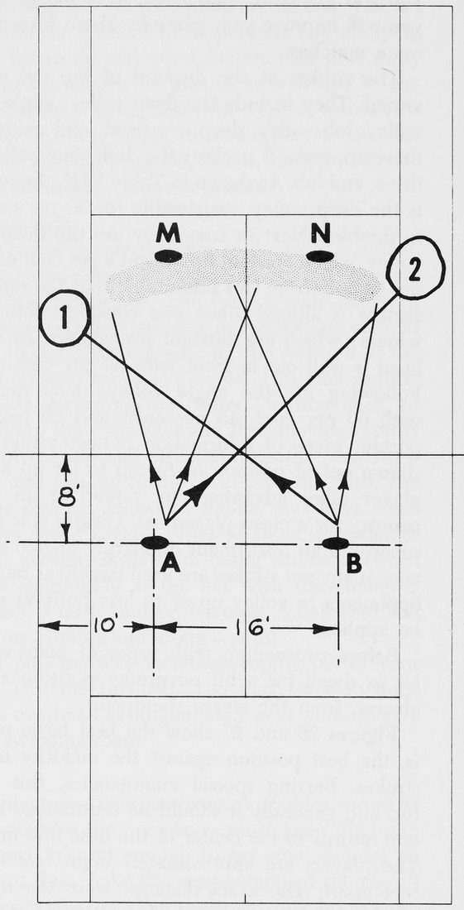
BASIC POSITION FOR NET PLAYBASIC POSITION FOR NET PLAY
Sơ đồ này là một sơ đồ quan trọng cần ghi nhớ—nó cho thấy vị trí cơ bản tốt nhất cho cặp đấu ở lưới, các đấu thủ A và B. Lưu ý rằng họ ở gần lưới nhất—khoảng tám feet—trong mức độ phù hợp với khả năng bảo vệ trước một quả bóng bổng (lob). Họ cũng đang dồn vào trung tâm: mỗi người có tám feet để bao phủ ở giữa và mười feet ở phía hành lang biên. Để nhấn mạnh những lợi thế của vị trí cơ bản này cho việc vô-lê tấn công, đội đối phương M và N được thể hiện trong đội hình vô-lê sâu được sử dụng vào khoảng năm 1900. Lưu ý rằng các đấu thủ A và B có thể dễ dàng vô-lê vào chân các đấu thủ M và N để tạo ra lỗi hoặc những cú trả bóng yếu. Họ cũng có nhiều khoảng trống để vô-lê góc vượt qua đối phương để đặt bóng ở các điểm ngắm 1 và 2. Giống như tư thế en garde trong đấu kiếm, đội hình lưới cơ bản là tư thế vận hành vững chắc nhất trong mọi tư thế: đội nên xuất phát từ nó và quay về nó mỗi khi có thể trong suốt diễn biến của điểm. Để xem nó vận hành thế nào trong phòng thủ, hãy lật sang Hình 27. Hình 26
This diagram is an important one to remember-—it shows the best basic position for the net team, players A and B. Note that they are as close to the net—about eight feet—as is consistent with their ability to protect against a lob. Also they are packing the center: each has eight feet to cover in the middle and ten feet on the alley side. To emphasize the advantages of this basic position for offensive volleying, opposing team M and N is shown in the deep volleying formation used circa 1900. Note that players A and B can easily volley at the feet of players M and N to draw errors or weak returns. Also they have plenty of room to angle volley past the opposition for placements at aim points 1 and 2. Like the en garde position in fencing, the basic net formation is the soundest of all operating positions: the team should start from it and return to it whenever possible throughout the progress of the point. To see how it works detensively turn to F igure 27.

BASIC POSITION FOR NET PLAYBASIC POSITION FOR NET PLAY
Vị trí ở lưới được thể hiện trong Hình 26 là cơ bản cho cả lối chơi phòng thủ lẫn tấn công. Phần lớn các cú vô-lê trong đánh đôi được đánh sâu xuống giữa sân. Những cú vô-lê như vậy, được biểu thị bằng số 2 trong sơ đồ, có thể được đánh với độ hung hãn lớn vì chúng có cả chiều dài sân để bay. Rõ ràng những người đánh lưới phải có khả năng bọc lót những cú đánh này nhanh chóng, trước khi chúng bị đánh vượt qua họ. Vì vậy, các đấu thủ lưới A và B dồn vào trung tâm để tạo ra hàng phòng thủ tốt nhất trước lối tấn công thông thường. Các đấu thủ A và B có thể bọc lót những cú vô-lê dọc biên hoặc cú vô-lê góc, được mô tả là các cú đánh 1 và 3, ngay cả khi họ đang dồn vào trung tâm. Lý do là đây: các cú vô-lê dọc biên thường phải được đánh ngược lên một chút, và do đó có phần nhẹ nhàng, vì mức lưới ở các đường biên dọc cao hơn; còn các cú vô-lê góc chỉ có một quãng đường ngắn để bay, nên nếu chúng được đánh mạnh, chúng dễ bay ra ngoài sân. Sự nhẹ nhàng của cú đánh cho các đấu thủ lưới A và B thêm chút thời gian để di chuyển ra các đường biên dọc. Vị trí lưới cơ bản đủ gần lưới để ít cú vô-lê rơi vào vùng dễ bị tổn thương ở chân đấu thủ. Và người đánh lưới A nhanh nhạy vẫn có thời gian lùi lại để bọc lót cú vô-lê bóng bổng (lob volley) số 4. Hình 27
The net position shown in Figure 26 is basic for defensive as well as offensive play. Most volleys in doubles are hit deep down the middle. Such volleys, represented by number 2 in the diagram, can be hit with great severity because they have the full length of the court to travel. Obviously the net men must be able to cover these shots quickly, before they are driven past them. So net players A and B pack the center to present the best defense against the normal offense. Players A and B are able to cover down-the-line or angle volleys, depicted as shots 1 and 3, even though they are packing the center. Here's why: down-the-line volleys usually must be hit up a bit, and hence somewhat softly, because of the higher level of the net at the sidelines; and the angle volleys have just a short distance to travel, so if they are hit hard they are likely to sail out of court. The softness of the shot gives net players A and B a little added time to move to the sidelines. The basic net position is close enough to the net so that few volleys will land at the vulnerable area at the player’s feet. And alert net player A still has time to get back to cover lob volley 4.
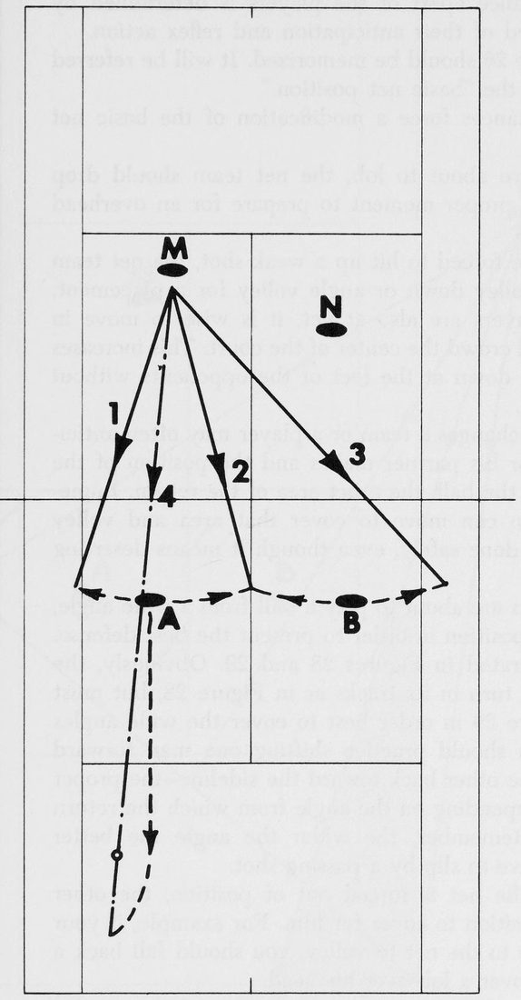
phần lớn các cú đánh sẽ tới. Chiến lược dồn vào trung tâm này được người Australia sử dụng, và nó đóng góp rất lớn vào thành công của họ trong những pha vô-lê qua lại. Khoảng cách chính xác giữa các đấu thủ được quyết định bởi tầm với của họ và tốc độ đoán trước cùng phản xạ của họ. Những vị trí trong Hình 26 nên được ghi nhớ. Nó sẽ được nhắc đến thỉnh thoảng với tên gọi "vị trí lưới cơ bản". Một số tình huống buộc phải điều chỉnh vị trí lưới cơ bản. Đó là: 1. Nếu đối phương sắp đánh bóng bổng (lob), cặp đấu ở lưới nên lùi lại một bước hoặc hơn vào đúng thời điểm để chuẩn bị cho một cú đập trên đầu. 2. Nếu đối phương buộc phải đánh ngược lên một cú yếu, cặp đấu ở lưới nên tiến lại gần hơn để vô-lê xuống hoặc vô-lê góc để đặt bóng. 3. Nếu các đấu thủ đối phương cũng ở lưới, thì nên tiến vào gần lưới hơn một chút và dồn vào trung tâm sân. Điều này làm tăng cơ hội vô-lê xuống vào chân đối phương mà không gây nguy hiểm cho hàng phòng thủ. 4. Trong những pha đánh lưới nhanh, một cặp đấu hoặc một đấu thủ thường có thể đoán trước, từ cú đánh mà anh ta hoặc bạn cặp thực hiện và vị trí của đối phương sắp đánh bóng, khu vực chính xác của cú trả bóng. Ngay lập tức một hoặc cả hai người có thể di chuyển để bọc lót khu vực đó và vô-lê kết liễu. Điều này có thể được thực hiện an toàn, ngay cả khi nó có nghĩa là từ bỏ vị trí lưới cơ bản. 5. Khi đối phương sắp đánh bóng từ một góc rộng, cặp đấu ở lưới phải dịch chuyển vị trí để tạo ra hàng phòng thủ tốt nhất. Một tình huống như vậy được minh họa trong Hình 28 và 29. Rõ ràng, cặp đấu ở lưới không nên chỉ xoay người tại chỗ như trong Hình 28, mà phải dịch chuyển vị trí như trong Hình 29 để bọc lót tốt nhất những góc trả bóng rộng. Cặp đấu ở lưới nên luyện tập dịch chuyển một người tiến về phía trung tâm và người kia lùi về phía đường biên dọc—khoảng cách phù hợp cho mỗi lần dịch chuyển tùy thuộc vào góc mà cú trả bóng sắp được thực hiện. Hãy nhớ rằng góc càng rộng thì đối phương càng có nhiều cơ hội lách qua bằng một cú bóng vượt. 6. Nếu một bạn cặp ở lưới bị buộc ra khỏi vị trí, người bạn cặp kia phải dịch chuyển vị trí của mình để bọc lót cho anh ta. Ví dụ, nếu bạn cặp của bạn bị kéo vào sát lưới để vô-lê, bạn nên lùi lại một bước để sẵn sàng bọc lót một quả bóng bổng (lob) qua đầu anh ta. 7. Như đã lưu ý trong Chương V, những quả giao bóng tới các phần khác nhau của ô giao bóng đòi hỏi người đánh lưới và người giao bóng đang lao lên phải thay đổi vị trí để bao phủ sân một cách có lợi nhất. 8. Nếu đối phương sắp đánh drive từ vạch cuối sân, cặp đấu ở lưới
most shots will come. This pack-the-center strategy is used by the Australians, and it counts heavily for their success in volleying exchanges. The exact distance apart of the players is determined by their reach and the speed of their anticipation and reflex action. The positions in Figure 26 should be memorized. It will be referred to from time to time as the “basic net position.” A number of circumstances force a modification of the basic net position. These are: 1. If the opponents are about to lob, the net team should drop back a step or so at the proper moment to prepare for an overhead smash. 2. If the opponents are forced to hit up a weak shot, the net team should move closer to volley down or angle volley for a placement. 3. If the opposing players are also at net, it is wise to move in a bit closer to the net and crowd the center of the court. This increases the chances of volleying down at the feet of the opponents without jeopardizing the defense. 4. During rapid net exchanges a team or a player may often anticipate, from the shot he or his partner makes and the position of the opponent about to strike the ball, the exact area of the return. Immediately one or both men can move to cover that area and volley away a kill. This can be done safely, even though it means deserting the basic net position. 5. When the opponents are about to play a ball from a wide angle, the net team must shift position in order to present the best defense. Such a situation is illustrated in Figures 28 and 29. Obviously, the net team should not just turn in its tracks as in Figure 28, but must shift position as in Figure 29 in order best to cover the wide angles of return. The net team should practice shifting one man forward toward the center and the other back toward the sideline—the proper distance for each shift depending on the angle from which the return is about to be made. Remember, the wider the angle the better chance the opponents have to slip by a passing shot. 6. If one partner at the net is forced out of position, the other partner must shift his position to cover for him. For example, if your partner is drawn in close to the net to volley, you should fall back a step to be prepared to cover a lob over his head. 7. As noted in Chapter V, serves to various parts of the service court require the net man and inrushing server to alter position to cover the court to best advantage. 8. If the opponents are about to drive from the base line, the net
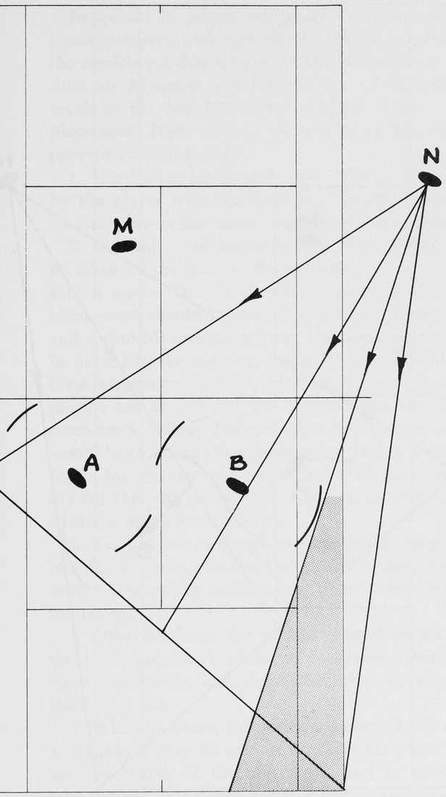
INCORRECT NET POSITION AGAINST RETURNSINCORRECT NET POSITION AGAINST RETURNS
TRƯỚC NHỮNG GÓC RỘNG. Có những lúc vị trí lưới cơ bản không tạo ra vị trí phòng thủ ở lưới tốt nhất. Đây là trường hợp đấu thủ N bị đẩy ra khỏi sân bởi một cú đánh góc và đang vào tư thế đánh một cú trả bóng nền (groundstroke). Các đấu thủ A và B đã giữ nguyên vị trí lưới cơ bản của mình và chỉ xoay người tại chỗ để đối mặt với đấu thủ N. Rõ ràng là họ tạo ra một hàng phòng thủ chồng lấn ở trung tâm (dấu ngoặc đơn biểu thị tầm với), đồng thời để toàn bộ vùng được tô bóng rộng mở cho một cú đặt bóng dễ dàng của đấu thủ N. Hình 28
FROM WIDE ANGLES There are times when the basic net position does not present the best defensive net position. Here is a case where player N has been forced off court by an angled shot and is set to hit a ground-stroke return. Players A and B have maintained their basic net position and merely turned in place to face player N. It is clear that they present an overlapping defense in the center (parentheses represent reach), while leaving the entire shaded area open for an easy placement by player N.

CORRECT NET POSITION AGAINST RETURNSCORRECT NET POSITION AGAINST RETURNS
TRƯỚC NHỮNG GÓC RỘNG. Vị trí phòng thủ ở lưới đúng đắn được thể hiện ở đây, tương phản với Hình 28, trước những cú trả bóng từ các góc rộng. Đấu thủ A đã tiến lên sang phải hai bước để bọc lót những cú trả bóng chéo sân sắc bén, và đấu thủ B đã lùi lại sang phải để bọc lót những cú đánh dọc biên. Giữa hai người họ (dấu ngoặc đơn cho thấy tầm với), họ phủ kín sân. Để tránh những hiểu lầm, hai bạn cặp nên gọi bóng cho bất kỳ quả bóng bổng (lob) nào do đấu thủ N tạo ra. Hình 29
FROM WIDE ANGLES The correct defensive net | position is shown here, in contrast with Figure 28, against returns from wide angles. Player A has moved forward to his right two steps to cover sharp cross-court returns, and player B has dropped back to his right to cover down-theline shots. Between them (parentheses show reach) they blanket the court. To prevent misunderstandings the partners should call for any lobs set up by player N.
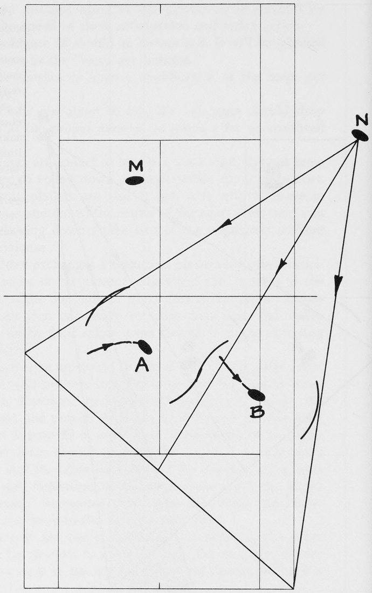
NET PLAYNET PLAY
cặp đấu ở lưới nên dồn vào lưới để vô-lê xuống và vô-lê góc mạnh mẽ hơn. Điều quan trọng trong việc giữ vị trí lưới đúng đắn là sự hiểu nhau hoàn toàn giữa hai bạn cặp. Chỉ có luyện tập mới có thể phát triển sự hiểu nhau như vậy và niềm tin mà nó mang lại. Không gì khiến một cặp đấu cảm thấy ngớ ngẩn hơn một màn "Alphonse và Gaston", khi cả hai bạn cặp đều trong tầm với của bóng nhưng rồi để nó bay thong thả giữa họ thành một cú đặt bóng. Dưới đây là sáu nguyên tắc chung cần tuân theo để tránh sự lúng túng: 1. Nếu bóng được đánh thẳng xuống giữa sân, thường thì đấu thủ có cú thuận tay hướng về trung tâm nên đón nó. Với hai đấu thủ thuận tay phải, điều này có nghĩa là người ở ô trái tay. 2. Nếu bóng được đánh chéo sân vào khoảng giữa hai người đánh lưới, thì người ở phía bên kia sân so với nơi cú đánh được thực hiện nên đón nó. Do đó, một cú đánh chéo sân từ ô thuận tay của đối phương nên được người đánh lưới ở phía thuận tay đón; và một cú đánh chéo sân từ ô trái tay của đối phương nên được người đánh lưới ở phía trái tay đánh. Lý lẽ đằng sau những sự phân công này khá rõ ràng. Ví dụ, giả sử cả bốn đấu thủ đều ở lưới và đối thủ ở ô thuận tay đánh một cú vô-lê chéo sân. Người đánh lưới đối diện với anh ta ở ô trái tay sẽ gặp khó khăn khi đánh bóng lúc nó bay ngang qua anh ta ở một góc rộng; nhưng người đánh lưới ở ô thuận tay sẽ đối mặt trực tiếp với đường bay của bóng, và do đó có thể đón bóng vuông góc và đánh nó dễ dàng hơn nhiều. 3. Trong một pha đánh qua lại nhanh ở cự ly sát mặt tại lưới, thường thì tốt nhất là người vừa đánh bóng nên đón những cú trả bóng xuống giữa sân. Người đánh bóng thường dễ theo dõi bóng và đoán trước cú trả bóng hơn. 4. Những quả bóng bổng (lob) đánh xuống giữa sân nên được người ở ô trái tay đập, vì cú thuận tay của anh ta hướng về trung tâm sân. Nếu không, những quả bóng bổng nên được đấu thủ ở phía mà quả bóng bổng hướng tới đón. 5. Khi còn nghi ngờ, hai bạn cặp phải hét lên, "Của bạn," hoặc, "Của tôi." Thường thì một người đánh lưới có thể bị bắt sai chân hoặc mất thăng bằng bởi những chiến thuật bất ngờ của đối phương, và anh ta phải báo cho bạn cặp của mình đón bóng. Hãy tạo thói quen hét tín hiệu—và hét cho to. 6. Khi một cú trả giao bóng được đánh xuống giữa sân, người đánh lưới thường di chuyển sang để cố vô-lê nó đi. Tuy nhiên, người giao bóng phải sẵn sàng bọc lót cho anh ta, vì thường đến giây cuối cùng người đánh lưới sẽ thấy mình không thể với tới bóng hoặc không thể đánh nó hiệu quả và
team should crowd the net to volley down and angle volley more strongly. Important in proper net position is a complete understanding between partners. Only practice can develop such an understanding and the confidence that it brings. Nothing makes a team feel more stupid than an Alphonse and Gaston act, when both partners are within reach of the ball but then let it sail serenely between them for a placement. Here are six general rules that should be followed to prevent embarrassment: 1. If a ball is hit straight down center, it should usually be taken by the player with his forehand toward the center. With two righthanded players this means the man in the backhand court. 2. If a ball is hit cross-court in between the net players, it should be taken by the man on the opposite side of the court from which the shot is made. Thus, a shot hit cross-court from the opponent’s forehand court should be taken by the net player on the forehand side; and a shot hit crosscourt from the opponent’s backhand court should be played by the net man on the backhand side. The reasoning behind these assignments is fairly obvious. Suppose, for example, that all four players are at net and the opponent in the forehand court plays a cross-court volley. The net man facing him in the backhand court would have a hard time stroking the ball as it passed by him at a wide angle; but the net man in the forehand court would be faced directly toward the path of the ball, and thus be able to meet it squarely and stroke it much more easily. 3. For a rapid exchange at point-blank range at the net, it is often best for the man who last hit the ball to take shots returned down the center. It is usually easier for the hitter to follow the ball and anticipate the return. 4, Lobs hit down the middle should be smashed by the man in the backhand court, since his forehand is toward the center of the court. Otherwise, lobs should be taken by the player to whose side the lob is hit. 5. When in doubt, the partners must yell, “Yours,” or, “Mine.” Often a net player may be caught on the wrong foot or off balance by the surprise tactics of the opponents, and he must alert his partner to take the ball. Form the habit of yelling signals—and make them loud. 6. On a return of service hit down the center the net man usually moves over to try to volley it away. However, the server must be prepared to back him up, for often at the last second the net man will find he cannot reach the ball or cannot play it effectively and
TRÒ CHƠI ĐÁNH ĐÔI TRONG QUẦN VỢT phải để nó bay qua. Khi có tình huống khẩn cấp, người đánh lưới nên cúi né sang một bên để cho bạn cặp của mình cơ hội vô-lê tốt hơn. Cho tới thời điểm này, chúng ta đã đặt nền móng và trình bày những điều cơ bản cho lối đánh đôi hay. Với tất cả những cơ chế kỹ thuật đã nằm chắc trong đầu, bạn đã sẵn sàng tiếp cận phần thú vị và hào hứng nhất của đánh đôi: chiến thuật thực tế của lối chơi ở lưới. Lối chơi ở lưới bắt đầu—một cách hợp lý—bằng cú vô-lê đầu tiên của đội giao bóng. Cú vô-lê này thường do người giao bóng thực hiện vì, như chúng ta đã lưu ý, 85 phần trăm các cú trả giao bóng được đánh chéo sân về phía anh ta khi anh ta tiến vào lưới. Người giao bóng phải nhận thức rằng cú vô-lê đầu tiên là cú khó thực hiện nhất đối với anh ta. Đó cũng là cú vô-lê quan trọng nhất của anh ta. Nghiên cứu Bảng XI đã cho thấy hơn một nửa số điểm thắng được của đội giao bóng sau những cú trả giao bóng thành công được thắng ở cú vô-lê đầu tiên. Nhiều điểm khác được thắng vì một cú vô-lê đầu tiên mạnh mẽ đã dọn đường. Mặt khác, bảng này cho thấy người giao bóng chỉ thắng trực tiếp nhiều hơn 15 phần trăm số điểm ở cú vô-lê đầu tiên so với số điểm anh ta thua do mắc lỗi. Thực tế, sau một cú trả giao bóng thành công, đội giao bóng thực sự phải kiên định với vũ khí của mình, vì cơ hội thắng của họ giảm từ hai chọi một xuống chỉ còn 1,2 chọi một trước đội nhận giao bóng. Quá thường xuyên, người giao bóng chỉ đưa bóng vào cuộc thay vì tập trung đặt cú vô-lê quan trọng này một cách cẩn thận. Để thực hiện cú vô-lê đầu tiên hiệu quả nhất, người giao bóng nên theo quả giao bóng của mình vào sát lưới (từ chín đến mười lăm feet), như được đề xuất trong Chương IV. Anh ta cũng nên khuỵu gối và hạ người xuống thật tốt để đón bóng. Điều đó sẽ ngăn ngừa nhiều lỗi tốn kém. Về cơ bản có hai đội hình phòng thủ có thể chào đón người giao bóng khi anh ta bắt đầu thực hiện cú vô-lê của mình. Chúng được minh họa trong Hình 30, và phụ thuộc vào việc người nhận giao bóng có theo cú trả giao bóng của mình lên lưới hay ở lại sân sau. Những điểm ngắm thích hợp cho cú vô-lê đầu tiên trong mỗi trường hợp được thể hiện. Để duy trì vị trí tấn công thuận lợi nhất, người giao bóng B phải vô-lê một cách an toàn, càng sâu, càng thấp và càng gần trung tâm sân càng tốt. Điều này có nghĩa là người giao bóng nên vô-lê hoặc vào chân người nhận giao bóng M khi anh ta tiến về vị trí ở lưới để buộc anh ta phải vô-lê hoặc bán vô-lê ngược lên, hoặc sâu tới vạch cuối sân nếu người nhận giao bóng ở lại sân sau. Hãy nhớ rằng người nhận giao bóng là người cuối cùng thực hiện động tác di chuyển về phía lưới, nên rõ ràng là dễ đặt bóng vào chân anh ta hơn. Đồng thời, khi vô-lê gần trung tâm sân, người giao bóng nên cẩn thận giữ cú vô-lê của mình tránh xa người đánh lưới đối phương N, để anh ta không thể cắt cú đánh.
THE GAME OF DOUBLES iN TENNIS must let it go by. When there is an emergency, the net man should duck out of the way to give his partner a better chance to volley. Up to this point we have been laying the groundwork and setting forth the fundamentals for good doubles play. With all the mechanics firmly in mind, you are ready to take up the most interesting and exciting part of doubles: the actual tactics of net play. Net play starts—logically enough—with the initial volley of the serving team. This volley is usually made by the server since, as we have already noted, 85 per cent of returns of service are hit crosscourt at him as he moves in to the net. The server must realize that his first volley is the most difficult one for him to make. It is also his most important volley. Study of Table XI has shown that over half of the points won by the serving team after successful returns of service are won on the first volley. Many other points are won because a strong first volley has set the stage. On the other hand, the table shows that the server wins only 15 per cent more points outright on the first volley than he loses because of errors. In fact, after a successful return of service, the serving team must really stick to its guns, for its chances of winning drop from two-to-one to only 1.2-to-one over the receiving team. All too often the server merely keeps the ball in play rather than concentrating on placing this important volley carefully. To make the most effective first volley the server should follow his serve in close to the net (from nine to fifteen feet), as recommended in Chapter IV. He should also bend at the knees and get well down to the ball. It will prevent many costly errors. There are essentially two defensive formations that may greet the server as he starts to make his volley. They are illustrated in Figure 30, and depend on whether the receiver followed in his return of service or remained in the back court. The proper aim points for the first volley in each case are shown. To maintain the most favorable offensive position the server, B, must volley safely as deep, as low, and as near the center of the court as possible. This means that the server should volley either at the feet of the receiver, M, as he moves in toward the net position to force him to volley or half-volley up, or deep to the base line if the receiver remains in the back court. Remember that the receiver is the last man to make his move toward the net, so it is obviously easier to put the ball at his feet. At the same time the server, in volleying near the center of the court, should be careful to keep his volley away from the opposing net man, N, so that he cannot intercept the shot.
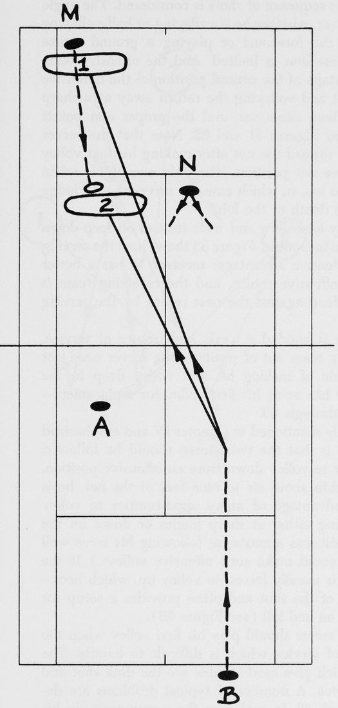
GENERAL AIM POINTS FORGENERAL AIM POINTS FOR
CÚ VÔ-LÊ ĐẦU TIÊN CỦA NGƯỜI GIAO BÓNG. Người nhận giao bóng M sẽ hoặc ở lại vạch cuối sân hoặc theo cú trả giao bóng của mình lên lưới. Nếu M ở lại sân sau, người giao bóng B nói chung nên vô-lê cú trả bóng càng sâu và càng gần trung tâm càng tốt tới điểm ngắm 1. Nếu M tiến lên lưới, người giao bóng B nói chung nên vô-lê vào chân người nhận giao bóng, càng gần trung tâm càng tốt, tới điểm ngắm 2. Những điểm ngắm chung này được người giao bóng sử dụng trong phần lớn các trường hợp, nhưng không dùng khi anh ta được trao một cú trả bóng yếu mà có thể được vô-lê hiệu quả hơn để đặt bóng, như trong các Hình 34, 36, 37, 38, 39 và 50. Hình 30
FIRST VOLLEY BY THE SERVER Receiver M will either remain on the base line or follow his return of service in to the net. If M remains in the back court, server B should generally volley the return as deep and near the center as possible to aim point 1. If M moves in to the net, server B should generally volley at the receiver's feet as near the center as possible to aim point 2. These general aim points are used by the server in the majority of cases, but not when he is presented with a weak return that may more effectively be volleyed for a placement, as in Figures 34, 36, 37, 38, 39, and 50.

Tính khôn ngoan của việc vô-lê sâu nhất và thấp nhất vào trung tâm thể hiện ngay lập tức khi xét đến chuỗi cú đánh tiếp theo. Góc trả bóng mở ra cho người nhận giao bóng, dù anh ta đang vô-lê hay bán vô-lê từ gần trung tâm nửa sân trước hoặc đang đánh một cú đánh nền từ giữa vạch cuối sân, đều bị hạn chế. Và đội tấn công thường có thể tận dụng vị trí trung tâm của đội phòng thủ bằng cách dồn vào lưới và vô-lê cú trả bóng đi ở một góc sắc bén để đặt bóng. Những tình huống này, cùng những điểm ngắm thích hợp cho chúng, được minh họa trong Hình 31 và 32. Lưu ý rằng người giao bóng phải tiếp tục tiến vào phía lưới sau khi thực hiện cú vô-lê đầu tiên để đạt được vị trí lưới tấn công tốt nhất. Ngoại lệ duy nhất: khi đối phương sắp đánh bóng bổng (lob), trong trường hợp đó người giao bóng nên đánh giá động tác di chuyển của mình theo độ sâu của quả bóng bổng. Nếu cú vô-lê đầu tiên của người giao bóng nông và rộng thay vì sâu xuống giữa sân, anh ta đẩy đội mình vào thế khó khăn. Hình 33 cho thấy đội giao bóng có thể mất lợi thế tấn công như thế nào: người nhận giao bóng M có cơ hội tốt hơn để thực hiện một cú trả bóng tấn công, và đội nhận giao bóng ở vị trí tốt hơn để phòng thủ trước cú trả bóng tiếp theo của đội giao bóng. Nếu người giao bóng đang tiến lên được trao một cú trả giao bóng yếu và cao, hoặc nếu anh ta thấy đội nhận giao bóng ra khỏi vị trí, thì người giao bóng không cần tuân theo nguyên tắc chung là đánh cú vô-lê đầu tiên sâu xuống trung tâm. Thay vào đó, anh ta chỉ cần đánh cú vô-lê đầu tiên của mình đi để đặt bóng—như thể hiện trong các Hình 34 đến 39. Một nguyên tắc hợp lý đã được đề cập trong Chương IV và được nhấn mạnh trong các Hình 34 đến 39 là quả giao bóng xoáy (twist serve) nên được theo vào sát lưới để vô-lê xuống từ một vị trí tấn công. Trừ khi người vô-lê ở trong khoảng sáu đến chín feet tính từ lưới, anh ta không ở vị trí để tận dụng nhiều cơ hội vô-lê đặt bóng bằng cách đánh vào những góc sắc bén hoặc đánh xuống bóng với tốc độ kinh hoàng. (Quist là một bậc thầy trong việc theo quả giao bóng của mình vào sát lưới để có thể thực hiện những cú vô-lê tấn công như vậy.) Nếu người giao bóng ở quá xa về phía sau, anh ta thường buộc phải vô-lê ngược lên, điều này nhất thiết làm mất đi sự sắc bén của cú đánh và thường tạo ra một cú bóng dọn đường để đối phương tiến vào và kết liễu (xem Hình 35). Tiếp theo, hãy xem xét người giao bóng nên chơi cú vô-lê đầu tiên của mình như thế nào khi người nhận giao bóng thực hiện một cú trả giao bóng khó xử lý. Hai cú trả giao bóng gây nhiều khó khăn nhất là cú dink (bóng nhỏ) và cú drive chéo sân xoáy lên. Một số vấn đề điển hình được mô tả trong các Hình 40 đến 48. Trong mỗi trường hợp, người giao bóng phải dùng cả cái đầu lẫn kỹ năng chơi bóng của mình để cứu điểm.
The wisdom of the deepest and lowest volley to the center shows immediately when the next sequence of shots is considered. The angle of return open to the receiver, whether he is volleying or half-volleying from near the center of the forecourt or playing a ground stroke from the middle of the base line, is limited. And the offensive team is often able to take advantage of the central position of the defensive team by crowding the net and volleying the return away at a sharp angle for a placement. These situations, and the proper aim points for them, are illustrated in Figures 31 and 32. Note that the server must continue to move in toward the net after making his first volley to attain the best offensive net position. The only exception: when the opponents are about to lob, in which case the server should judge his move according to the depth of the lob. If the server's first volley is shallow and wide instead of deep down the center, he puts his team in trouble. Figure 33 shows how the serving team stands to lose its offensive advantage: receiver M has a better opportunity to make an offensive return, and the receiving team is in a better position to defend against the next return by the serving team. If the advancing server is handed a weak, high return of service, or if he finds the receiving team out of position, the server need not adhere to the general rule of making his first volley deep to the center. Instead, he simply hits away his first volley for a placement— as shown in Figures 34 through 39. A sound principle already mentioned in Chapter IV and emphasized in Figures 34 through 39 is that the twist serve should be followed well in to the net in order to volley down from an offensive position. Unless the volleyer is within about six to nine feet of the net, he is not in position to take advantage of many opportunities to volley away placements by hitting either at sharp angles or down on the ball at terrific speed. (Quist was a master at following his serve well in to the net so that he could make such offensive volleys.) If the server is too far back, he is usually forced to volley up, which necessarily takes the sting out of the shot and often provides a setup for the opposition to move in on and kill (see Figure 35). Consider next how the server should play his first volley when the receiver makes a return of service which is difficult to handle. The two returns of service which give most trouble are the dink shot and the topped cross-court drive. A number of typical problems are depicted in Figures 40 through 48. In each case the server must use his head as well as his playing skill to save the point.
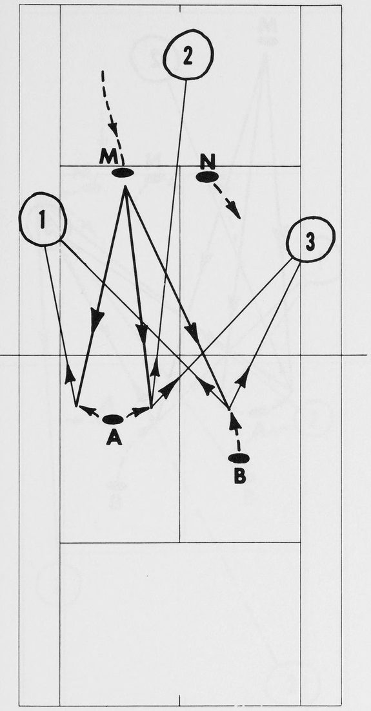
DEEP FIRST VOLLEY TO MIDDLEDEEP FIRST VOLLEY TO MIDDLE
MỞ RA SÂN CHO CÚ VÔ-LÊ THỨ HAI. Sơ đồ này cho thấy lợi thế mà người giao bóng B giành được khi anh ta thực hiện gợi ý được minh họa trong Hình 30—đặt cú vô-lê đầu tiên của mình gần giữa sân vào chân người nhận giao bóng M đang tiến lên. Người nhận giao bóng M phải vô-lê hoặc bán vô-lê ngược lên chéo sân, vào giữa hoặc dọc biên như thể hiện. Giờ đây, khi người giao bóng B tiếp tục tiến vào, anh ta và bạn cặp có thể thắng điểm bằng những cú vô-lê góc tới điểm ngắm 1 hoặc 3, hoặc một cú vô-lê sâu xuống giữa tới điểm ngắm 2 nếu đấu thủ M hoặc N di chuyển quá nhanh để bọc lót vùng góc rộng. Hình 31
OPENS UP COURT FOR SECOND VOLLEY This diagram shows the advantage gained by server B when he carries out the suggestion illustrated in Figure 30—placing his first volley close to the middle of the court at the feet of advancing receiver M. Receiver M._ has to volley or half-volley up cross-court, to the middle or down the line as shown. Now, as server B continues to move in, he and his partner can win the point with angle volleys to aim points 1 or 3, or a deep volley down the middle to aim point 2 if player M or N moves too quickly to cover the wide-angle area. Figure 3]

DEEP FIRST VOLLEY TO MIDDLEDEEP FIRST VOLLEY TO MIDDLE
MỞ RA SÂN CHO CÚ VÔ-LÊ THỨ HAI. Nếu người nhận giao bóng M không theo cú trả giao bóng của mình lên lưới, và người giao bóng B đã đặt cú vô-lê đầu tiên của mình sâu xuống giữa như được đề xuất trong Hình 30, thì đội giao bóng đang ở vị trí tuyệt vời này. Khi người nhận giao bóng M bắt đầu đánh một cú đánh nền từ gần vạch cuối sân, các đấu thủ A và B có thể thoải mái tiến vào dồn lưới. Bằng cách này, người giao bóng B đã mở ra những cơ hội dễ dàng cho đội mình vô-lê góc để ghi điểm tới các điểm ngắm 1 và 3. Ngoài ra, người đánh lưới A có thể vô-lê đi tới đường chéo sân đang trống quen thuộc ở điểm ngắm 2. Hình 32
OPENS UP COURT FOR SECOND VOLLEY If receiver M fails to follow his return of service in to net, and server B has placed his first volley deep to the middle as recommended in Figure 30, the serving team is in this excellent position. As receiver M starts to play a ground stroke from near the base line, players A and B can afford to move in to crowd the net. In this way server B has opened up easy opportunities for his team to angle volley for the point to aim points 1 and 3. Also net man A can volley away to the familiar open diagonal at aim point 2.
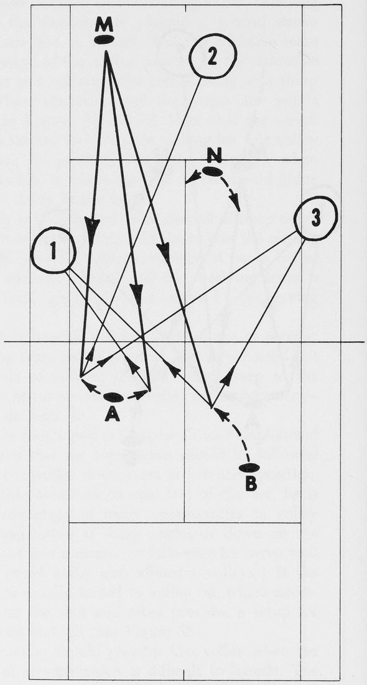
WIDE, SHALLOW FIRST VOLLEYWIDE, SHALLOW FIRST VOLLEY
ĐẨY ĐỘI GIAO BÓNG VÀO THẾ KHÓ KHĂN. Tương phản với Hình 31 và 32, đây là một cú vô-lê đầu tiên yếu ớt của người giao bóng B. Hậu quả của một cú vô-lê đầu tiên rộng và nông có thể thảm khốc cho đội giao bóng. Lưu ý rằng khi người nhận giao bóng M theo lên phía sau cú trả bóng của mình, anh ta có rất nhiều thời gian để né sang phải để đánh một cú đánh nền. Người nhận giao bóng M có cơ hội tuyệt vời để giành thế tấn công khỏi đội giao bóng bằng cách luồn một cú đánh dọc biên tới điểm ngắm 1, đánh một cú drive xoáy lên hoặc cú dink vào giữa hoặc chéo sân tới điểm ngắm 2, hoặc đánh bóng bổng (lob) tới điểm ngắm 3 ở góc xa nhất của sân. Sau đó, đội nhận giao bóng, M và N, có thể tiến hẳn vào lưới để tận dụng cú trả bóng yếu mà họ mong đợi từ đội giao bóng. Hình 33
PUTS SERVING TEAM IN TROUBLE In contrast with Figures 31 and 32, here is a weak first volley by server B. The consequences of a wide, shallow first volley can be disastrous to the serving team. Note that as receiver M follows in behind his return he has plenty of time to swerve to his right to play a ground stroke. Receiver M has a great opportunity to take the offensive away from the serving team by threading a shot down the line to aim point 1, hitting a topped drive or dink to the middle or cross-court to aim point 2, or lobbing to aim point 3 at the farthest corner of the court. Then the receiving team, M and N, can move well in to net to take advantage of the weak return expected from the serving team.
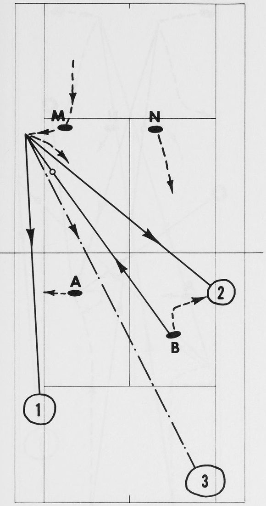
THE ALERT SERVER SCORESTHE ALERT SERVER SCORES
SAU MỘT CÚ TRẢ GIAO BÓNG KÉM. Đây là một tình huống lý tưởng cho người giao bóng B. Anh ta đã giao một quả xoáy kiểu Mỹ (American twist), như được đề xuất, sâu vào góc trái tay và kéo người nhận giao bóng M về phía giữa. Khi người nhận giao bóng M đánh một cú trả bóng trái tay yếu và cao, người giao bóng B chạy hẳn vào lưới để có thể vô-lê góc xuống một cách dứt khoát vào vùng trống để có một cú đặt bóng dễ dàng. Hoặc anh ta cũng có thể dễ dàng giáng cú vô-lê của mình xuống dọc biên để đặt bóng. Hình 34
AFTER POOR RETURN OF SERVICE Here is an ideal situation for server B. He has served an American twist, as recommended, deep to the backhand corner and pulled receiver M to the middle. When receiver M hits a weak, high backhand return, server B runs well in to the net so that he can angle volley down crisply into the open area for an easy placement. Or he can just as easily bang his volley down the line for the placement.
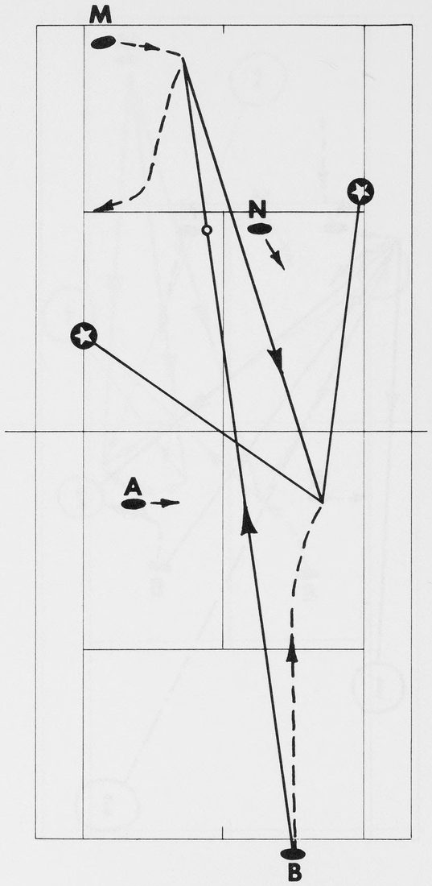
THE LAZY SERVER FAILS TO CAPITALIZETHE LAZY SERVER FAILS TO CAPITALIZE
VỀ CÚ TRẢ GIAO BÓNG KÉM. Pha bóng này bắt đầu hoàn toàn giống pha bóng trong Hình 34. Cú giao bóng xoáy (twist) sâu lôi người nhận giao bóng M vào giữa sân và anh ta thực hiện cú trả giao bóng trái tay yếu, cao y như vậy. Nhưng người giao bóng B lại chậm chạp trong việc tiến lên lưới—và điều đó tạo ra khác biệt biết bao! Thay vì vô-lê xuống với lực trên bóng để tạo cú đặt bóng, giờ đây anh ta buộc phải vô-lê lên, mà cú đánh chẳng có chút uy lực nào, từ gần vạch giao bóng. Kết quả là anh ta không thể vô-lê an toàn dọc biên hay gần giữa sân. Vì vậy anh ta vô-lê chéo sân và trao cho người nhận giao bóng M một cơ hội tốt để xoay chuyển cục diện theo hướng có lợi cho mình bằng một cú đánh thẳng tới một điểm như điểm ngắm 1. Sau khi đã khổ công tạo ra một thế trận thuận lợi, đừng làm hỏng nó bằng sự lười biếng trong việc lao lên lưới.
ON POOR RETURN OF SERVICE This point begins exactly as the point in Figure 34. The deep twist serve draws receiver M to the middle and he makes the same weak, high backhand return of service. But server B is slow in moving in—and what a difference it makes! Instead of volleying down with pace on the ball for a placement, he now has to volley up, without any sting in the shot, from near the service line. As a result he cannot volley safely down the line or near the center. So he volleys cross-court and hands receiver M a good chance to turn the tide in his favor with a drive to a spot like aim point 1. After working hard to develop a setup, do not flub it by being lazy in your run for the net.
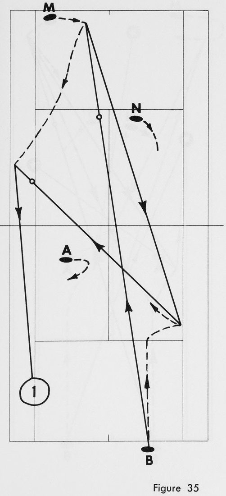
AGAIN THE ALERT SERVERAGAIN THE ALERT SERVER
VỀ CÚ VÔ-LÊ ĐẦU TIÊN. Đây là một điểm dễ khác khi người đánh lưới nhanh chóng áp sát lưới sau một cú trả giao bóng trái tay yếu và cao. Với anh ta, chuyện vô-lê thuận tay hay trái tay không quan trọng: anh ta có thể đánh thuận tay hoặc trái tay vượt qua người đánh lưới cải biến N để tạo cú đặt bóng như hình vẽ. Ngoài ra anh ta cũng có thể vô-lê chéo góc từ phía trái tay để ghi điểm nếu người nhận giao bóng M tiến lên giữa sân. Hình 36
ON THE FIRST VOLLEY Here is another easy point the net in a hurry on a weak, high backhand return of serv- /, to him whether he has a fore- hy hand or backhand volley: he can drive either forehand or backhand past modified net man N for a placement as depicted. Also he can angle | volley from the backhand side at for the point if receiver M | comes up the middle. Be No 7 Naf | | | | [ved ai
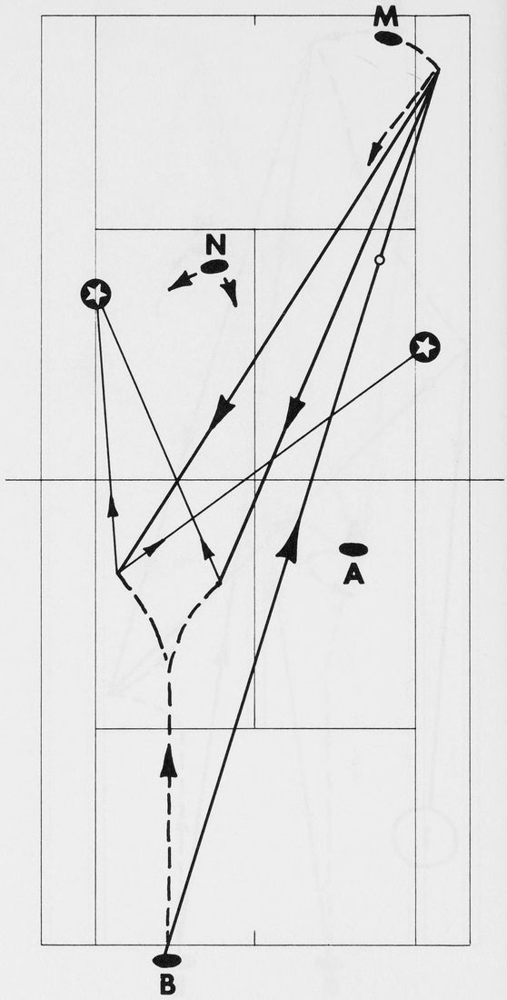
ALERT SERVER MAKES THE BEST FIRST VOLLEYALERT SERVER MAKES THE BEST FIRST VOLLEY
Pha bóng minh họa ở đây khác với pha bóng trong Hình 36 ở vài chi tiết quan trọng—những chi tiết mà người giao bóng phải lưu ý kỹ càng nếu muốn tận dụng tối đa những khoảng trống chốc lát. Đội nhận giao bóng đã phạm hai sai lầm, khiến người giao bóng B có thể biến cú vô-lê đầu tiên của mình thành một cú đặt bóng. Thứ nhất, người nhận giao bóng M đã chạy vòng qua một cú giao bóng vào góc trái tay để đánh cú trả giao bóng thuận tay. Điều này lập tức mở ra khả năng vô-lê đầu tiên vào giữa sân, bởi vì rõ ràng người nhận giao bóng M sẽ gặp khó khăn trong việc chạy ngược trở lại đủ nhanh để bọc lấy khu vực giữa sân. Thứ hai, người đánh lưới cải biến N đã bắt đầu di chuyển sang phải để bọc lấy một cú vô-lê chéo góc có thể xảy ra, nhưng lại hơi sớm một chút. Ngay khi người giao bóng B ghép mẩu thông tin này vào những gì mình đã quan sát được, anh ta nhanh chóng chọn phương án vô-lê sâu xuống giữa sân. Và anh ta được thưởng bằng một cú đặt bóng tuyệt đẹp. Hình 37
The point illustrated here differs from that in Figure 36 in a few important details— details the server must note carefully if he is to take maximum advantage of the momentary openings. The receiving team has made two mistakes, which allow server B to turn his first volley into a placement. First, receiver M has run around a serve to the backhand corner in order to hit a forehand return of service. This immediately opens up the possibility of a first volley to the middle because receiver M will obviously have a difficult time scrambling back fast enough to cover the center. Second, modified net man N_ has started to move to his right to cover a possible angle volley just a bit too soon. As soon as server B adds this bit of information to what he has already noted, he quickly elects to volley deep down the center. And he is rewarded with a lovely placement.
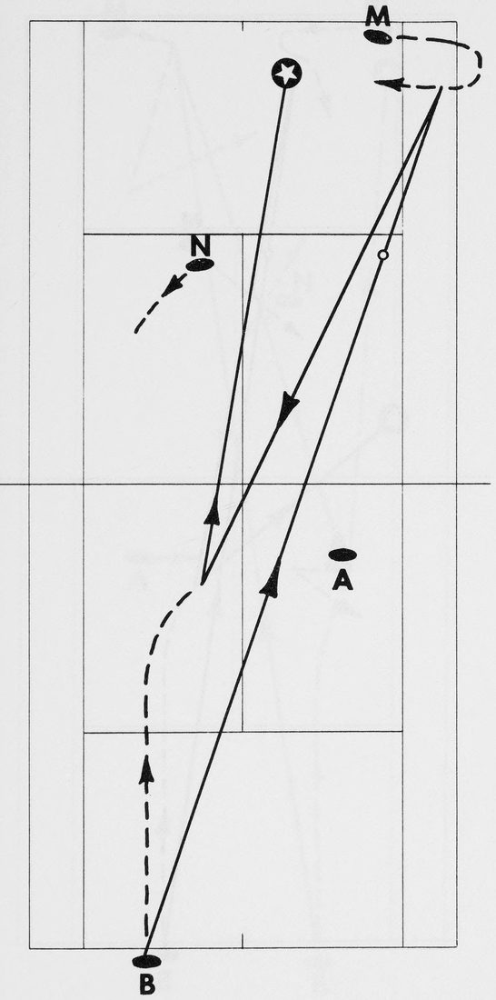
A SURPRISE FIRST VOLLEY PLACEMENTA SURPRISE FIRST VOLLEY PLACEMENT
Như trong Hình 37, ở pha bóng này người giao bóng đã tận dụng lối chọn vị trí kém của đội nhận giao bóng. Thứ nhất, người nhận giao bóng M đã "lăn" người để chuẩn bị cho một cú giao bóng xoáy kiểu Mỹ (American twist) và chạy vòng qua bóng để đánh cú trả giao bóng thuận tay. Điều này để lộ toàn bộ phần sân bên phải. Khi người giao bóng tiến vào lưới, anh ta nhận thấy người nhận giao bóng M chậm chạp trong việc vào đúng vị trí và không theo cú trả bóng của mình tiến lên lưới. Vì vậy anh ta thả một cú vô-lê nhỏ (drop volley) chéo góc ngoài tầm với của người đánh lưới cải biến N để tạo một cú đặt bóng đẹp. Về phía M, vì điểm nảy của cú giao bóng nên anh ta phải bọc lấy khu vực giữa sân. Rồi khi nhìn thấy cú vô-lê nhỏ, anh ta lùi lại và sang trái để bọc lấy một cú trả dọc biên hoặc bóng bổng (lob) phòng khi cú vô-lê dừng (stop volley) đi quá sâu. Hình 38
M As in Figure 37, the server @e——-. | | has in this point taken advan- } tage of poor position play by { the receiving team. y First, receiver M __ has “rolled” in anticipation of an American twist service, and run around it to play a forehand return of service. This | N left the whole right side of | d, id unless player M_ scrambled | came in to net he noted that receiver M was slow in getting into position and was not following his return into the | K net. So he dumped a little | drop volleyeat an,anglejout © of reach of modified net man N for a fine placement. center because of the bounce 7 \ point of the serve. Then, on \ seeing the drop volley, he \ moved back and to his left to cover a down-the-line or lob return if the stop volley is too deep.
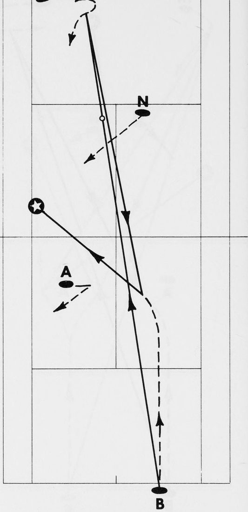
QUICK-CHANGE ARTISTQUICK-CHANGE ARTIST
Cú vô-lê đầu tiên ấy là một viên ngọc quý—kiểu cú đánh khiến khán giả quần vợt phải ngất ngây. Nó được thực hiện tại giải U. S. Nationals bởi chính Harry Hopman, đội trưởng đội Davis Cup của Úc. Cú trả giao bóng của người nhận giao bóng M trông rất tốt trong mắt bạn cặp của anh ta, người đánh lưới cải biến N. Thực tế, tay vợt N tính rằng nó sẽ buộc người giao bóng B phải vô-lê lên khá yếu chéo sân. Vì vậy anh ta chờ đến thời điểm mà mình cho là thích hợp rồi bắt đầu cướp bóng (poach) để chặn cú vô-lê. Nhưng người giao bóng B, Hopman, quá khôn ngoan. Bất chấp việc phải đối mặt với một cú vô-lê đầu tiên khó khăn khi bóng ở gần mặt đất, anh ta vẫn bình tĩnh quan sát tình hình. Đúng lúc anh ta đang chuẩn bị thực hiện cú trả bóng thông thường—một cú vô-lê chéo sân—anh ta phát hiện tay vợt N bắt đầu cướp bóng quá sớm, và điều này cho anh ta khoảng trống mà mình cần. Với phản xạ trong tích tắc, người giao bóng B đổi chiến thuật và tung một cú vô-lê bổng tuyệt đẹp vừa ngoài tầm với của tay vợt N dọc biên để tạo cú đặt bóng. Lott, Parker và Rosewall khiến cú đánh khó này trông đơn giản đến mức buồn cười. Hình 39
The first volley is a gem— @D-.. the kind of thing that makes ‘tennis galleries swoon. It was made in the U. S. Nationals by none other than Harry Hopman, the Australian Davis Cup Captain. The return of service by receiver M looked very good his partner, modified net man N. In fact player N figured it would force server B to volley up rather weakly cross-court. So he waited until what he thought was the proper moment and then started to poach in order to intercept the volley. But server B, Hopman, was too clever. Despite the fact that he was facing a difficult first volley from close to the ground, he was calmly surveying the situation. Just as he was getting set to make the standard return, a crosscourt volley, he detected player N start his poach too soon, and this gave him the opening he needed. With split-second reflexes, server B switched tactics and lofted a beautiful lob volley just out of reach of player N down the line for a placement. Lott, Parker, and Rosewall make this difficult shot look ridiculously simple.
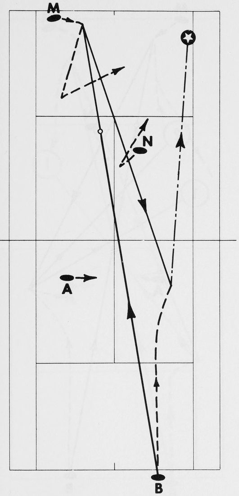
FIRST VOLLEY BY SERVER AGAINSTFIRST VOLLEY BY SERVER AGAINST
CÚ TRẢ GIAO BÓNG TUYỆT VỜI. Người nhận giao bóng M đã đánh một cú dink (bóng nhỏ) đặt bóng chuẩn xác, buộc người giao bóng B phải vô-lê lên từ gần lưới. Điều này có nghĩa là người giao bóng không thể vô-lê dọc biên hiệu quả vì anh ta đang ở ngay dưới phần lưới cao. Anh ta cũng không thể vô-lê tới bất cứ đâu trong tầm với của người đánh lưới cải biến N, người đang kè sát hành lang biên. Do đó người giao bóng buộc phải thả một cú vô-lê chéo sân ngắn tới điểm ngắm 1 nếu người nhận giao bóng M lên chậm, hoặc một cú vô-lê chéo sân sâu hơn, rộng ra tới điểm ngắm 2. Người nhận giao bóng M có thể dễ dàng bọc lấy cả hai cú đánh đó, nên đội giao bóng phải nhanh chóng lập thế phòng thủ để đối phó với cú trả bóng. Hình 40
EXCELLENT RETURN OF SERVICE Receiver M has hit a well- ae placed dink shot that forces aon server B to volley up from near the net. This means the | server cannot volley down the line effectively because he is } under the high part of the net. /\ Also he cannot volley any- / where within reach of modi- —ffied net man N, who is adserver is compelled to dump a short cross-court volley to / is slow coming up, a deeper cross-court volley wide to aim point 2. Receiver M can cover either shot easily so that the tual Wes serving team must set its defenses quickly to meet the return. =. ln
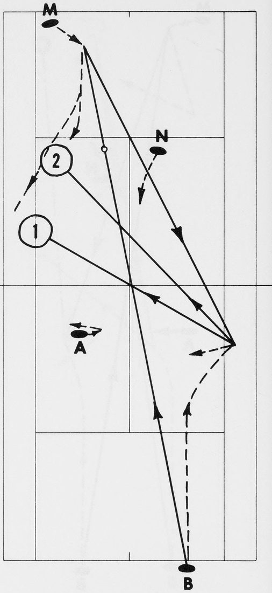
FIRST VOLLEY BY SERVER AGAINSTFIRST VOLLEY BY SERVER AGAINST
CÚ TRẢ GIAO BÓNG TUYỆT VỜI. Một cú giao bóng khá nông đã cho người nhận giao bóng M cơ hội tiến lên và chạy vòng quanh bóng. Anh ta đánh một cú xoáy lên (topped drive) mạnh xuống sâu vào góc của ô giao bóng. Người giao bóng B buộc phải ngoặt mạnh sang phải và phòng thủ bằng cách vô-lê hoặc bán vô-lê lên. Trong tình huống đó, người giao bóng B chỉ cần đưa bóng trở lại an toàn là hài lòng. Mọi cú đánh dọc biên đều quá mạo hiểm: anh ta chỉ có thể cố đánh bóng chéo sân rộng vượt qua tay vợt N tới điểm ngắm 1, rồi di chuyển vào thế vô-lê phòng thủ. Hình 41
EXCELLENT RETURN OF SERVICE A fairly shallow serve has given receiver M an opportunity to move up and run around the ball. He pounds a topped drive deep to the corner of the service court. Server B has to swerve sharply to his right and either volley or half-volley up defensively. Under these circumstances server B is content just to get the ball back safely. Any shot down the line is too risky: all he can do is to try to play the ball cross-court wide past player N to aim point 1, and then move into a defensive volleying position.
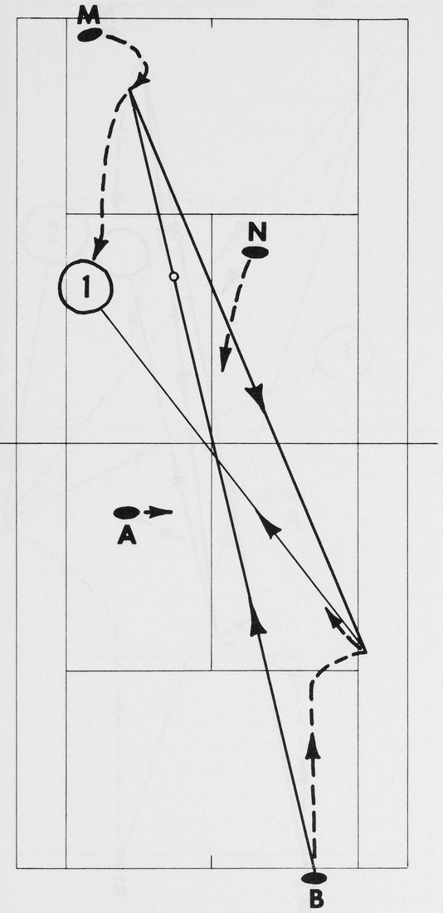
FIRST VOLLEY BY SERVER AGAINSTFIRST VOLLEY BY SERVER AGAINST
CÚ TRẢ GIAO BÓNG TUYỆT VỜI. Đây là một bài học quý giá cho người giao bóng. Người nhận giao bóng N đã đặt một cú trả giao bóng thấp, hay xuống giữa sân. Người đánh lưới A đã di chuyển sang để đón bóng, nhưng đến phút chót anh ta quyết định rằng việc lao người tới một cú vô-lê trái tay thấp có thể tạo cơ hội cho người đánh lưới cải biến N của đối phương (vì bóng nhiều khả năng sẽ được đánh về phía tay vợt đó), hoặc dẫn đến một lỗi. Người giao bóng, nhận biết khả năng này, lùi lại yểm trợ bạn cặp và vung vợt xuyên qua cú đánh. Anh ta cứu điểm, ít nhất là tạm thời, bằng cách đánh một cú khó an toàn vượt qua người bạn cặp đang cúi né, rộng ra ngoài tay vợt N; nếu không thì cú trả giao bóng đã lọt qua để thành một cú đặt bóng. Hình 42
EXCELLENT RETURN OF SERVICE Here is a valuable lesson | for the server to learn. Receiver N has placed a fine low return of service down the middle. Net man A has moved over for the ball, but at the last instant he decides that lunging for a low backhand volley might set one up for the opposing modified net man N (toward whom the ball would most likely be hit), or result in an error. The server, aware of this possibility, backs up his partner and swings through on the shot. He saves the point, at least temporarily, by hitting a difficult shot safely past his ducking partner wide of player N; otherwise the return of service would have slipped through for a placement.
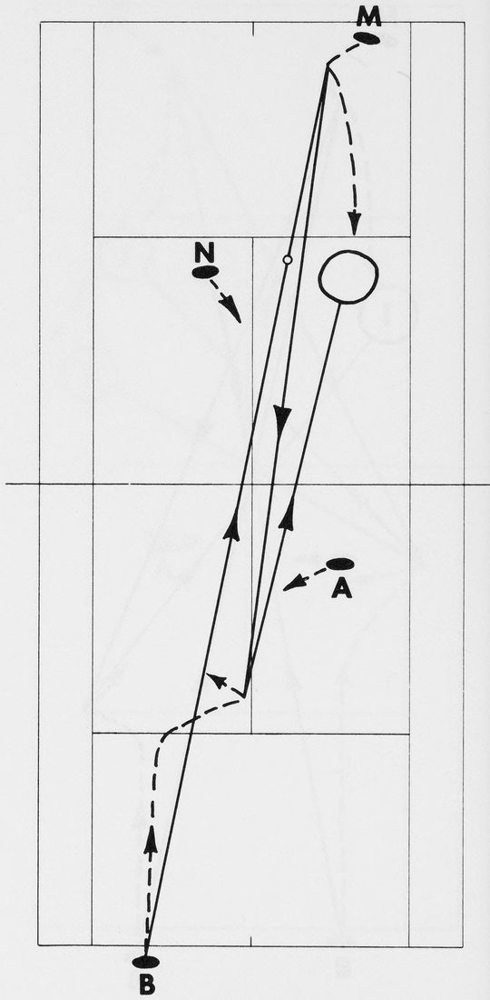
THE SERVER CHANGES TACTICS AGAINSTTHE SERVER CHANGES TACTICS AGAINST
CÚ TRẢ GIAO BÓNG TUYỆT VỜI. Một cú dink gần như hoàn hảo. Bạn cặp của anh ta, N, đang tiến vào để dứt điểm một cú vô-lê phải thực hiện từ vị trí sát lưới đến mức phải xới bóng lên khỏi mặt sân. Thay vì vô-lê lên về phía những đối thủ đang ồ ạt lao tới từ một vị trí khó xử, người giao bóng đã khôn ngoan quyết định chậm lại và để cú trả bóng nảy. Điều này cho thêm cơ hội thực hiện cú đánh chéo sân thông thường tới điểm ngắm 1, hoặc nếu bóng nảy đủ cao, lách một cú drive trái tay dọc biên tới điểm ngắm 2. Hình 43
EXCELLENT RETURN OF SERVICE + near-perfect dink shot. His partner N is moving in to kill a volley that must be made from so close to the net that it would have to be dug out | of the turf. Rather than volley up to the inrushing opponents from an awkward spot, the server has wisely decided to slow down and let the return bounce. This gives more of a chance to make the conventional cross-court shot to aim point 1 or, if the bounce is high enough, to slip a backhand drive down the line to aim point 2.
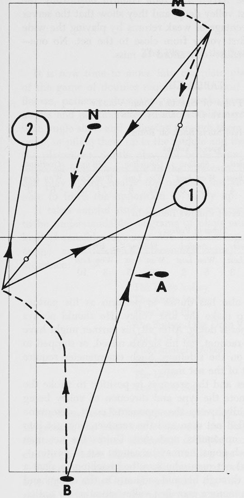
Để phân tích tính hiệu quả của các kiểu vô-lê đầu tiên khác nhau mà người giao bóng thực hiện, người ta đã thu thập dữ liệu từ bảy ván đấu vô địch (trình bày trong Bảng XIII). Dữ liệu xác nhận một cách tuyệt đẹp nguyên tắc chung là phải đánh cú vô-lê đầu tiên thật sâu, và chúng cho thấy người giao bóng có thể thắng một tỷ lệ rất cao các cú trả bóng yếu bằng cách thực hiện cú vô-lê đầu tiên chéo góc rộng hoặc dọc biên từ gần lưới. Không ai—dù là tay vợt phong trào hay tay vợt quốc tế—có thể cho phép mình bỏ lỡ. BẢNG XIII ẢNH HƯỞNG CỦA CÁC KIỂU VÔ-LÊ ĐẦU TIÊN CỦA NGƯỜI GIAO BÓNG ĐẾN KẾT CỤC CUỐI CÙNG CỦA ĐIỂM. Người nhận giao bóng đứng lại ở cuối sân khi trả bóng. Các kiểu vô-lê: Sâu / Bán sâu / Chéo góc / Nông / Dọc biên / Đánh lên / Trên đầu. Thắng–Thua: 100–34 / 38–30 / 20–... / 4–6 / 54–8 / 6–0. Người nhận giao bóng theo cú trả bóng tiến lên lưới. Các kiểu vô-lê: Sâu / Vào chân / Chéo góc / Nông / Đánh lên. Thắng–Thua: 23–... / 5–2 / 26–15 / 10. Cuối cùng, người đánh lưới cũng có những nhiệm vụ phải thực hiện khi bạn cặp của mình tiến lên sau khi giao bóng để thực hiện cú vô-lê đầu tiên. Anh ta phải luôn quay lại xem bạn cặp đang làm gì. Suy cho cùng, bạn cặp của anh ta có thể đã ngã, đánh rơi vợt, bị lộn tín hiệu, hoặc dừng lại để ngắm một cô tóc đỏ dáng đẹp bên lề sân. Những tình huống khẩn cấp như vậy đòi hỏi hành động quyết liệt từ phía người đánh lưới. Nếu mọi thứ đều ổn và người giao bóng đang ở vị trí sẵn sàng đánh bóng, người đánh lưới phải để ý kiểu và hướng của cú vô-lê đang được thực hiện. Rồi anh ta phải nhanh chóng quét toàn bộ sân đối phương, xác định vị trí của người đánh lưới cải biến và người nhận giao bóng, và vào vị trí tốt nhất cho cú đánh tiếp theo của đối phương. Trừ khi người đánh lưới tuân theo quy trình này ở mỗi điểm, anh ta có thể bị bắt ở sai vị trí—đặc biệt là bởi người đánh lưới cải biến, kẻ có thể đang cướp bóng để đập thẳng một cú vô-lê đầu tiên yếu xuyên qua bụng anh ta. Mặt khác, một người đánh lưới cảnh giác có thể cứu nhiều tình huống vô-lê đầu tiên tồi tệ bằng cách lường trước
To analyze the effectiveness of the various types of first volleys played by the server, data were taken on seven sets of championship play (presented in Table XIII). The data confirm beautifully the general rule to hit the first volley deep, and they show that the server can win a very high percentage of weak returns by playing the wide angle or down-the-line first volley from close to the net. No one— club player or internationalist—can afford to miss. TABLE XIII EFFECT OF TYPES OF SERVER'S FIRST VOLLEY ON ULTIMATE OUTCOME OF POINT Receiver Stays Back on Return Types of Volleys Deep Semi-deep Angled Shallow Downline Hit up Overhead ————— eg ey peice (eee Won Lost Won Lost Won Lost Won Lost Won Lost Won Lost Won Lost 100 34 38... 30 20: <4 Lo. 6 54 8 te Of 6 0 Receiver Follows Return In Types of Volleys Deep At feet Angled Shallow Hit up Won Lost Won Lost Won Lost Won Lost Won Lost 23 ~ bO oer 5 2 26.15 so 10 Finally, the net man also has duties to perform as his partner advances after serving to make the first volley. He should always turn to see what his partner is doing. After all, his partner might have fallen down, dropped his racquet, got his signals mixed, or stopped to ogle a shapely redhead on the sidelines. Such emergencies require drastic action on the part of the net man. If everything is in order and the server is in position to stroke the ball, the net man must note the type and direction of volley being made. Then he must rapidly sweep the opponents’ court, determine the position of the modified net man and the receiver, and get into the best position for the opponents next shot. Unless the net man follows this routine on each point, he may be caught out of position— especially by the modified net man who may be poaching to slam a weak first volley directly through his mid-section. On the other hand an alert net man can save many a poor first volley situation by antici-
NET PLAYNET PLAY
đoán trước hành động của đối phương và sẵn sàng đón cú trả bóng đúng vào vị trí thích hợp (xem Hình 60 và 98). Các pha bóng ở lưới. Đã đến lúc chuyển sang những pha bóng hoàn chỉnh ở lưới. Phần này của môn đánh đôi đòi hỏi mức độ cao nhất về sự khéo léo trên sân, sự tinh tế, kiên nhẫn, đánh lừa và khả năng tạo cú đánh. Đây là một cuộc chơi của góc độ và vị trí, đòi hỏi phải tách đôi đối phương ra thật rộng bằng những cú đánh chéo góc và vô-lê xuyên qua khoảng trống giữa sân để ghi điểm, hoặc dồn họ lại vào giữa sân rồi vô-lê chéo góc để tạo cú đặt bóng. Lối chơi tinh tế, chứ không phải sức mạnh thô bạo, mới thắng được các pha đối đáp ở lưới khi cả bốn tay vợt đều ở nửa sân trước. Nói chung, đội nào chơi được gần lưới hơn một bước thì có lợi thế; họ phải có khả năng buộc đối phương phải vô-lê lên. Phải nghiên cứu kỹ càng mới thực sự nắm bắt được lối chơi ở lưới; và để dễ hiểu, các sơ đồ pha bóng phải được trình bày theo một trình tự hợp lý nào đó. Chúng tôi đã sắp xếp các pha bóng tấn công (đội giao bóng) và phòng thủ (đội nhận giao bóng) theo trình tự sau: Cú vô-lê sâu / Cú vô-lê chéo góc / Pha bóng trên đầu / Cú vô-lê nhẹ và cú vô-lê nhỏ / Cú vô-lê bổng / Các cú đánh nền / Cú cướp bóng (poach) / Cú trôi (drift) / Pha bóng kéo (draw play). Tất cả các sơ đồ đều minh họa những pha bóng có thật từ các trận đấu giải. Nhìn chung, các pha bóng đều đơn giản (nên sơ đồ không cần bị làm rối bằng những đường kẻ chỉ nhiều lần đối đáp), nhưng chúng cho thấy rõ những phương thức cơ bản để tạo ra khoảng trống. Ở bất cứ đâu có thể, các sơ đồ được trình bày thành cặp. Hình thứ nhất cho thấy cú đánh đúng của đội tấn công, và hình thứ hai hé lộ cách phản đòn đúng của đội phòng thủ.
pating the action of the opponents and being ready for the return at exactly the proper spot (see Figures 60 and 98). The Plays at the Net It is now time to move into complete plays at the net. This part of the game of doubles requires the utmost in tennis courtsmanship, finesse, patience, deception, and stroke production. It is a game of angles and position which calls for splitting the opposition wide open with angle shots and volleying through them down the middle for the point, or piling them up in the middle and then angling off a volley for the placement. Subtle play, not brute force, wins the net exchanges when all four players are in the forecourt. In general, the team that can play a step nearer the net has the advantage; they should be able to force the opposition to volley up. It takes careful study to develop any real grasp of net play; and to be understandable diagrams of plays must be presented in some kind of sensible sequence. We have arranged the offensive (serving team) and defensive (receiving team) plays in the following sequence: The Deep Volley The Angle Volley Overhead Play The Soft and the Drop Volley The Lob Volley The Ground Strokes The Poach The Drift The Draw Play The diagrams all illustrate authentic plays from tournament matches. In general, the plays are simple (so the diagrams do not have to be cluttered with lines indicating multiple exchanges), but they show clearly the basic methods of obtaining the opening. Wherever possible the diagrams are presented in duplicate. The first figure shows the proper play for the offensive team, and the second figure reveals the proper counteraction for the defensive team.
Cú vô-lê sâu. Cú vô-lê sâu và dứt khoát là một cú đánh quan trọng bậc nhất trong đánh đôi—gần như gấp đôi bất kỳ cú đánh nào khác xét về khả năng tạo ra những cú ghi điểm trực tiếp (winner). Đằng sau thực tế đó có những lý do hợp lý—những lý do liên quan đến hình học của sân cũng như chiến thuật. Cả bốn tay vợt đều cố giữ cú vô-lê của mình thấp, để tránh trao lợi thế cho đối phương. Ở hầu hết các cú đánh, họ cũng cố tạo đủ lực để đánh xuyên qua đối phương nhằm tạo cú đặt bóng, hoặc để dụ đối phương mắc lỗi hay buộc phải trả bóng yếu. Vì lưới thấp hơn ở giữa sáu inch, và vì theo góc nhìn của người vô-lê, sân dài hơn chiều rộng khoảng một nửa, nên rõ ràng người vô-lê có cơ hội mắc lỗi nhỏ hơn nhiều khi thực hiện một cú vô-lê thấp, nhanh, đánh sâu xuống giữa sân. Một yếu tố khác khiến cú vô-lê sâu tạo ra nhiều cú ghi điểm trực tiếp đến vậy: chiến thuật ưa thích của hầu hết các đội đánh đôi là buộc hàng phòng thủ phải dãn ra bằng cách đánh một hoặc nhiều cú vô-lê chéo góc nhẹ, rồi giáng một cú sâu xuyên qua khoảng trống ở giữa sân. Câu ngạn ngữ xưa "chia để trị" cũng áp dụng cho đánh đôi. Những pha bóng tiêu biểu liên quan đến cả khía cạnh tấn công lẫn phòng thủ của lối chơi vô-lê sâu được trình bày trong Hình 44 đến 55.
The Deep Volley The crisp, deep volley is a most important stroke in doubles —by almost two to one over any other stroke from the standpoint of producing winners. There are logical reasons behind the fact—reasons involving the geometry of the court as well as tactics. All four players try to keep their volleys low, to avoid handing the opposition an advantage. On most shots they also try to generate sufficient pace to drive the ball through the opponents for a placement or to draw an error or force a weak return. Since the net is six inches lower in the middle, and since the court is about half again as long as it is wide as viewed by the volleyer, it is obvious that the volleyer has a much smaller chance of error on a low, fast volley hit deep down the middle. Another factor that causes the deep volley to produce so many winners: the favorite tactic of most doubles teams is to force the defense to spread by hitting one or more soft-angle volleys, and then banging a deep one through the opening in the middle. The old adage of divide and conquer applies to doubles, too. Representative plays involving the offensive and defensive aspects of deep volley play are shown in Figures 44 through 55.

THE DEEP VOLLEYTHE DEEP VOLLEY
theo sau cú trả giao bóng của mình tiến lên lưới. Vì vậy cú vô-lê đầu tiên của người giao bóng B buộc M phải vô-lê lên ngay từ dưới chân mình, gần vạch giao bóng. Người đánh lưới A, cảm nhận được cơ hội dứt điểm, di chuyển sang để chặn cú trả bóng và tung một cú vô-lê sâu vào giữa hai hậu vệ để tạo một cú đặt bóng dễ dàng. Hình 44
following in behind his return of service. Thus the first volley by server B forces M to volley up from his feet near the service line. Net man A, sensing a kill, moves over to intercept the return and boom a deep volley between the defenders for an easy placement.
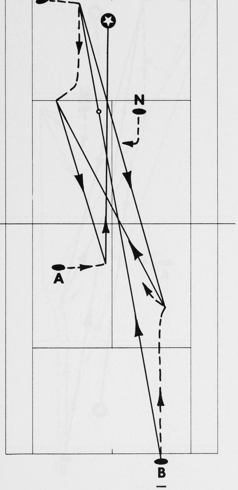
THE DEEP VOLLEYTHE DEEP VOLLEY
Pha bóng này bắt đầu giống như điểm trong Hình 44. Tuy nhiên, lần này người nhận giao bóng M thực sự lao ầm ầm vào lưới theo sau cú trả bóng của mình. Giờ đây anh ta có thể đánh trả cú vô-lê đầu tiên của người giao bóng B từ độ cao ngang hông bằng một cú vô-lê dứt khoát, đặt bóng gọn gàng vào giữa sân để ghi điểm. Hình 45
This play begins as the point shown in Figure 44. However, this time receiver M really roars in to the net behind his return. Now he is able to return server B’s first volley from waist height with a crisp, neatly placed volley to the middle for a placement.
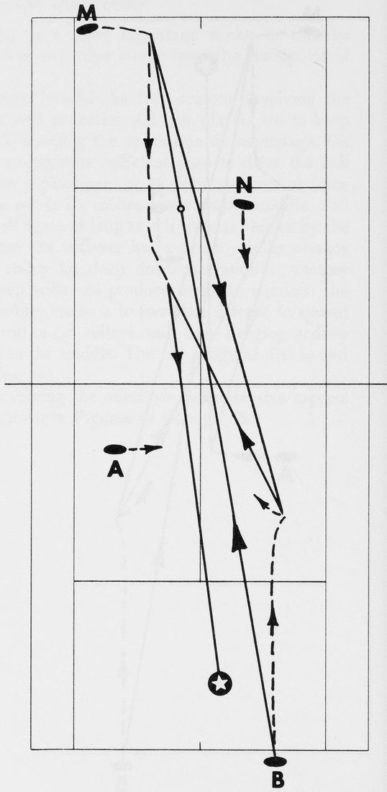
THE DEEP VOLLEYTHE DEEP VOLLEY
Nhân vật then chốt trong pha bóng này là người đánh lưới cải biến N. Cú vô-lê đầu tiên dọc biên của người giao bóng B khiến anh ta bị bất ngờ. Tuy với được tới bóng, anh ta chỉ vừa đủ sức trả lại một cú vô-lê yếu vào giữa sân. Người đánh lưới A ghi điểm dễ dàng bằng một cú vô-lê trái tay sâu xuyên qua hàng phòng thủ đang rộng hoác. Hình 46
The key man in this play is modified net man N. Server B’s first volley down the line catches him off guard. While he is able to reach the ball, he barely manages to return a weak volley to the center. Net man A scores easily with a deep backhand volley through the wide-open defense.
THE DEEP VOLLEYTHE DEEP VOLLEY
Lần này cú vô-lê đầu tiên của người giao bóng B được người đánh lưới cải biến N đoán trước một cách tuyệt vời. Anh ta di chuyển vào thật chính xác, bắt cú vô-lê ở điểm cao hơn trên quỹ đạo của bóng, và có thể vô-lê xuống dứt khoát xuyên qua giữa sân để thắng một điểm hay. Hình 47
This time the first volley of ] @ _ a server B is beautifully antici- ~ pated by modified net man N. He moves in unerringly, catches the volley at a higher point in its trajectory, and is able to volley down crisply through the middle to win a fine point.
THE DEEP VOLLEYTHE DEEP VOLLEY
Pha bóng then chốt trong sơ đồ này là cú vô-lê đầu tiên của người giao bóng B. Anh ta lách bóng vừa sát qua người đánh lưới cải biến N, sâu vào giữa sân. Người nhận giao bóng M đã chọn ở lại sân sau và buộc phải thực hiện một cú trả trái tay phòng thủ từ phía sau vạch cuối sân. Tay vợt đánh lưới A đã tận dụng bằng cách nhích dần về phía giữa sân để chặn cú trả bóng bằng một cú vô-lê sâu mạnh mẽ để ghi điểm. Hình 48
ee | The key play in this diagram is the first volley by server B. He slips it just past modified net man N, deep to the middle. Receiver M_ has elected to remain in the back court and he is forced into making a defensive backhand return from beyond the base iN line. Net player A has taken advantage by inching toward the middle to cut off the return with a powerful deep volley for the point. } | | | | | | | eae ef
THE DEEP VOLLEYTHE DEEP VOLLEY
Ở đây tai họa giáng xuống người giao bóng vì cú vô-lê đầu tiên của anh ta nông. Người nhận giao bóng M có thời gian hồi phục, tiến lên và đánh một cú trả bóng tấn công. Anh ta chọn đánh một cú dink nhẹ vào giữa sân, qua đó kéo đội giao bóng vào giữa sân. Rồi người nhận giao bóng M tiếp tục nhanh chóng tiến vào lưới để tận dụng cơ hội bẻ giao bóng của mình. Khi người giao bóng B vô-lê lên, người nhận giao bóng M đã đủ gần lưới để đánh một cú vô-lê hiểm dọc biên vượt qua người đánh lưới A đang chật vật để ghi điểm. Hình 49
Here the roof falls in on the server because his first volley was shallow. Receiver M has time to recover, move in, and hit an offensive return. He chooses to hit a soft dink to the middle, thus drawing the serving team to the center. Then receiver M_ continues rapidly in to net to capitalize on his break. When server B volleys up, receiver M is near enough to the net to hit a severe volley down the line past scrambling net man A for his point. Ic
THE DEEP VOLLEYTHE DEEP VOLLEY
Cú đánh then chốt trong chuỗi pha bóng này là cú trả giao bóng bằng dink. Ở đây cú dink, vốn là một cú đánh tinh tế, lại bổng lên chỉ cao hơn mức cần thiết đúng một bàn chân. Điều này cho người giao bóng B, kẻ đã nước rút nhanh vào lưới, cơ hội vô-lê sâu xuống hành lang biên để ghi điểm. Nếu anh ta chậm hơn một chút, hoặc nếu cú đánh không bổng lên như vậy, tình huống đã khác đi (xem Hình 51). Một thế trận thuận lợi như thế này nên được người giao bóng đánh dứt khoát, nhưng đừng quá hoa mỹ, kẻo rốt cuộc lại mắc lỗi. Hình 50
The key shot in this sequence is the dink return of service. Here the dink, which is a delicate shot, floats just a bare foot too high. This gives server B, who has sprinted rapidly in to the net, a chance to volley deep down the alley for the point. If he had been a bit slower, or if the shot had not floated, things would have been different (see Figure 51). A setup like this should be hit firmly by the server, but not too spectacularly, lest he end up with an error.
THE DEEP VOLLEYTHE DEEP VOLLEY
Ở đây có một cú trả giao bóng bằng dink. Nhưng lần này nó hoàn hảo và không bổng lên, nên người giao bóng B buộc phải vô-lê lên. Ở trường hợp 1, người đánh lưới cải biến N khéo léo giả vờ bọc lấy hành lang biên khiến người giao bóng B phải vô-lê chéo sân. Rồi anh ta cướp bóng sang phải và có được một cơ hội dễ đến mức buồn cười để vô-lê sâu ghi điểm. Người nhận giao bóng M phải nhanh chóng theo cú dink của mình tiến vào lưới, để có thể vô-lê dứt điểm hiểm hóc mọi cú trả bóng đánh chéo sân như ở trường hợp 2. Những cú trả bóng hiếm hoi và hoàn hảo như vậy thường bị lãng phí bởi sự lười biếng về tinh thần hoặc thể chất của người nhận giao bóng. Hình 51
have here a dink return of = service. But this time it was perfect and did not float, so server B had to volley up. In case 1, modified net man N cleverly faked to cover the alley and cause server B to volley cross-court. Then he poached to his right and was presented with a ridiculously i easy chance to volley deep for } the point. It is up to receiver / M to follow his dink in to net / rapidly, so that he can volley away severely any return hit cross-court as in case 2. Such rare and perfect returns are often wasted by a receiver's mental or physical laziness. Figure 5]
THE DEEP VOLLEYTHE DEEP VOLLEY
Người đánh lưới là tay vợt quan trọng trong điểm này. Khi giao bóng vào góc thuận tay, anh ta đã di chuyển đúng cách về phía hành lang biên và lùi lại một bước để bọc lấy một cú trả dọc biên có thể xảy ra. Khi thực tế gặp đúng một cú trả bóng như vậy, anh ta chỉ phải di chuyển một quãng ngắn và vô-lê bóng sâu xuống đường chéo đang trống để ghi điểm. Cú đánh này dễ nếu cú trả giao bóng hơi cao, và khá tinh tế nếu cú trả bóng hạ xuống dưới mức lưới.
The net man is the important player in this point. On a serve to the forehand corner he has correctly moved _toward the alley and back a step in order to cover a possible down-the-line return. When he is in fact presented with such a return, he has to move only a short distance and volley the ball deep to the open diagonal for the point. This shot is easy if the return of service is a bit high, and rather delicate if the return dips below the level of the net.
THE DEEP VOLLEYTHE DEEP VOLLEY
Đây là điểm giống như trong Hình 52, nhưng người đánh lưới đã không vào đúng vị trí cho cú trả dọc biên. Vì vậy anh ta phải lao người đổ về phía bóng, và thất bại trong nỗ lực đánh xuống đường chéo đang trống. Điều này cho người đánh lưới cải biến N cơ hội di chuyển sang và đánh một cú vô-lê mạnh thẳng về phía vạch cuối sân để ghi điểm. Hình 53
This is the same point as shown in Figure 52, but the net man has failed to position himself for the down-the-line return. So he has to dive for the ball, and fails in his attempt to hit the open diagonal. This gives modified net man N his chance to move over and hit a hard volley straight toward the base line for the point. o§i<---------’
THE DEEP VOLLEYTHE DEEP VOLLEY
Đây là một minh họa tuyệt vời về lối chơi ở lưới tại giải National Doubles. Hàng phòng thủ thực sự khiến người đánh lưới A phải chạy đôn chạy đáo, nhưng nhờ sự nhanh nhẹn và đầu óc phản ứng nhanh, anh ta đã có thể thắng điểm này. Trước tiên anh ta băng ngang để vô-lê chéo góc cú trả giao bóng. Người nhận giao bóng M tiến lên và, nhận ra hành lang biên đang trống, đánh một cú đánh nền dọc biên. Nhưng A đoán trước và chật vật chạy ngược lại để vô-lê vào giữa sân. Người đánh lưới N bọc lấy cú đánh đó và một lần nữa hàng phòng thủ lại tìm cách tận dụng một lỗ hổng do A để lại. Nhưng người đánh lưới A (Talbert, trong một ngày thi đấu khá hay của ông) lao ngược trở lại và, nhận thấy N đang di chuyển về phía đường biên dọc để bọc lấy một cú vô-lê chéo góc, đánh một cú vô-lê sâu tuyệt đẹp ra phía sau lưng anh ta để tạo cú đặt bóng. Chỉ có những phản xạ nhanh như chớp mới cứu được điểm này.
This is a superb exposition of net play in the National Doubles. The defense really had net man A on the run, but by agility and quick thinking he was able to win the point. He first crossed over to angle volley the return of service. Receiver M came in and, spotting the open alley, played a ground stroke down the line. But A anticipated and scrambled back to volley to the middle. Net man N covered the shot and again the defense sought to take advantage of a hole leit by A: But, net.manA (Talbert, having one of his better days) rushed back and, noting N was moving toward the sideline to cover an angle volley, hit a beautiful deep volley behind him for the placement. Only lightningfast reactions saved this point.
THE DEEP VOLLEYTHE DEEP VOLLEY
Đây là một ví dụ hoàn hảo về chiến thuật tách đôi đối phương ra thật rộng, rồi giáng bóng liên tục xuống giữa sân để ghi điểm. Hãy để ý sự phối hợp đồng đội tuyệt đẹp trong đó. Người giao bóng B vô-lê chéo sân cú trả giao bóng bằng dink, và người nhận giao bóng M (Bromwich), theo sau cú trả bóng của mình tiến lên, đánh thêm một cú dink chéo sân nữa. Người giao bóng B, hy vọng làm M rối loạn khi anh ta di chuyển vào giữa sân, đánh thêm một cú vô-lê chéo góc nữa. Nhưng M lao ra đường biên dọc và đánh vẫn thêm một cú dink góc nhọn, khiến B bị kéo hẳn ra khỏi sân. B bèn cố lách một cú đánh xuống hành lang biên, nhưng người đánh lưới N đoán trước và bọc lấy hành lang biên. Cảm nhận rằng A sẽ di chuyển để bọc lấy khu vực giữa sân, anh ta vô-lê chéo góc thật nhọn. Người đánh lưới A nhanh chóng đảo hướng và lao ngược trở lại để đánh một cú đánh nền trái tay vào khu vực giữa sân không được bảo vệ. Nhưng lão Bromwich ranh mãnh, M, di chuyển sang thật nhanh và, sau khi đã điều đối phương ra thật rộng thành công, đánh một cú vô-lê sâu xuyên qua giữa sân để tạo cú đặt bóng. Hình 55
Here is a perfect example of the tactic of splitting the opposition wide open, then banging away down the middle for the point. Note the beautiful teamwork involved. Server B volleyed the dink return of service cross-court, and receiver M (Bromwich), following in behind his return, hit another dink shot cross-court. Server B, hoping to cross up M as he moved to the center, hit another cross-court angled volley. But M rushed to the sideline and hit still another sharply angled dink shot, which pulled B right off the court. B then tried to slip a shot down the alley, but net man N anticipated and covered the alley. Sensing that A would be moving to cover the center, he angled off his volley sharply cross-court. Net man A quickly reversed his field and tore back to hit a backhand ground stroke to the unprotected center. But cagey old Bromwich, M, moved over rapidly and, having successfully maneuvered the defense wide open, hit a deep volley through the center for a placement.
NET PLAYNET PLAY
Cú vô-lê chéo góc. Cú vô-lê chéo góc là một cú đánh mạnh mẽ, đảm nhận hai vai trò. Khi được sử dụng có chọn lọc, nó là một cú dứt điểm tuyệt hảo, và nó là một vũ khí tinh tế không gì sánh bằng để kéo đối phương ra khỏi vị trí nhằm tạo đà cho cú dứt điểm. Bảng VIII cho thấy cú vô-lê chéo góc có sức sát thương chỉ đứng sau cú trên đầu. Điều này không có gì đáng ngạc nhiên, bởi để đánh một cú vô-lê góc nhọn, người đánh phải ở gần lưới và do đó thường có thể vô-lê xuống với lực thật sự trên bóng. Bên cạnh đó, cú vô-lê chéo góc thường được đánh ra xa khỏi đối phương—những người mà bạn đã điều cho đứng bọc lấy giữa sân—về phía một khoảng trống rộng. Những cú vô-lê góc nhọn của các bậc thầy vô-lê như Joe Hunt, Vincent Richards, Wilmer Allison, Ted Schroeder, Billie Jean King và Rod Laver đẹp đến mê hồn, và nhờ thời điểm cùng cảm giác bóng hoàn hảo, họ liên tục đưa bóng đúng vào những đường biên dọc. Biên độ sai số của một cú vô-lê chéo góc gần như bằng không: một quả bóng đánh cao hơn vài inch hoặc mạnh hơn một chút sẽ bay ra ngoài; còn quả đánh thấp hơn một inch, hoặc không đủ tốc độ, sẽ vào lưới. Cú đập trên đầu có thể là cách ghi điểm mãnh liệt áp đảo, nhưng cú vô-lê chéo góc mới là cách gọn gàng, sắc bén như gươm, đầy thỏa mãn tâm hồn để làm nên chiến thắng. Việc dùng cú vô-lê chéo góc như một cách "đấu kiếm" để tìm khoảng trống là một trong những chiến thuật cơ bản của đánh đôi. Đúng là cú vô-lê sâu thắng nhiều điểm hơn bất kỳ cú đánh đơn lẻ nào khác trong đánh đôi, nhưng một lý do chính cho thành công của nó là cú vô-lê chéo góc đi trước nó. Những cú "đấu kiếm" này thường được thực hiện từ một quả bóng khá thấp (người ta sẽ nhắm tới cú đặt bóng khi bóng cao). Do đó, chúng thường phục vụ hai mục đích. Thứ nhất, chúng mang lại cách thoát khỏi thế bí: thay vì đánh lên về phía một trong các đối thủ, điều mời gọi tai họa, một cú vô-lê nhẹ, thấp, chéo góc, hơi ngoài tầm với, có thể cứu vãn tình thế. (Đừng quên rằng bóng sẽ bay qua phần thấp nhất của lưới!) Thứ hai, cùng lúc đó người đánh có thể tách toang đội hình đối phương để tung một cú vô-lê sâu ghi điểm ở cú tiếp theo. Việc thăm dò tìm khoảng trống trong đánh đôi cũng giống như trong quyền anh. Trận đấu đạt đỉnh cao nhất khi cả bốn tay vợt đứng ở lưới, đánh qua đánh lại vào nhau để tạo cơ hội cho một đòn hạ gục. Và sự tinh tế thực sự, đầu óc phản ứng nhanh, sự đoán trước, cảm giác bóng và những phản xạ nhanh như chớp kết hợp lại khiến đánh đôi trở thành một trong những môn thể thao tuyệt vời nhất. Các sơ đồ về những pha bóng vô địch có thật, liên quan đến cú vô-lê chéo góc trong cả hai vai trò của nó, được trình bày tiếp theo trong Hình 56 đến 67. Những sơ đồ vô-lê chéo góc khác có thể tìm thấy trong phần nói về cướp bóng ở chương này.
The Angle Volley The angle volley is a potent, double-duty stroke. Used discriminately, it is an excellent put-away shot, and it is a weapon subtle beyond compare for drawing the opponents out of position to set up the kill. Table VIII shows the angle volley has a lethality second only to the overhead. This should come as no great surprise, for in order to make a Sharply angled volley, the striker must be close to the net and thus | is often able to volley down with real pace on the ball. Then too, the angle volley is usually hit away from the opponents, whom you have maneuvered into covering the center of the court, toward a wide-open area. The sharp-angle volleys of top volley artists like Joe Hunt, Vincent Richards, Wilmer Allison, Ted Schroeder, Billie Jean King, and Rod Laver were beautiful to behold, and through perfect timing and touch consistently hit the side stripes. The margin of error on an angle volley is practically nil: a ball hit inches too high or a bit too hard sails out; and one hit an inch too low, or with insufficient speed, is in the net. The overhead smash may be the overpoweringly explosive method of winning a point, but the angle volley is the neat, rapier-like, soulsatisfying way of turning the trick. The use of the angle volley as a means of fencing for an opening is one of the basic tactics in doubles. It is true the deep volley wins more points than any other single stroke in doubles, but a major reason for its success is the angle volley which precedes it. These fencing shots are usually made off a rather low ball (one would go for a placement with a high ball). Thus, they often serve two purposes. First, they provide a means for getting out of a hole: instead of hitting up toward one of the opponents, which invites tragedy, a low, soft volley angled cross-court, a bit out of reach, may save the situation. (Do not forget the ball would pass over the lowest part of the net!) Second, the striker may at the same time split open the opponents’ formation for a deep-volley winner on the next shot. Sparring for an opening in doubles is much the same as in boxing. The game is at its best when all four players stand at the net, hitting away at one another to set up the opportunity for a knockout blow. And the real finesse, the quick thinking, anticipation, touch, and lightning-fast reflexes combine to make doubles one of the best of all sports. Diagrams of actual championship plays involving the angle volley in both its roles follow in Figures 56 through 67. Other angle-volley diagrams may be found in the section on poaching in this chapter.

THE ANGLE VOLLEYTHE ANGLE VOLLEY
Đây là một cú vô-lê chéo góc kinh điển. Sân khấu được người giao bóng B dàn dựng hoàn hảo. Thứ nhất, anh ta vào lưới thật sâu và vô-lê cú trả giao bóng vào giữa sân, ngay dưới chân người nhận giao bóng M đang tiến lên. Rồi anh ta tiếp tục di chuyển vào lưới để tận dụng cú trả bóng phòng thủ bị đánh lên của tay vợt M. Từ vị trí thuận lợi này, sau khi đã buộc đối phương dồn vào giữa sân, người giao bóng B có thể thắng bằng một cú vô-lê thông thường tới khoảng trống rộng.
This is a classic angle volley. The stage is set perfectly by server B. First, he gets well in to net and volleys the return of service to the middle at the feet of advancing receiver, M.~ Then he keeps moving in to the net to take advantage of the defensive return hit up by player M. From this vantage point, having forced the opposition to the center, server B can win with a routine volley to the wide-open spaces. /|
THE ANGLE VOLLEYTHE ANGLE VOLLEY
Ở đây chúng ta có một điểm bắt đầu như trong Hình 56, nhưng người giao bóng tự chuốc lấy tai họa vì chậm hai bước ở mọi thời điểm then chốt. Cú vô-lê đầu tiên của anh ta buộc phải đánh hơi hướng lên khi anh ta đánh cú trả giao bóng vào gần cuối hành trình bay của bóng. Điều này cho phép người nhận giao bóng M tiến thêm được một bước, đến mức cú vô-lê trả bóng phải được người giao bóng B thực hiện từ gần giữa ô giao bóng. Vì B không thể tạo được góc nhọn cho cú vô-lê của mình, việc người nhận giao bóng M tiếp tục cắm cúi tiến vào và lật ngược tình thế bằng cách tự mình vô-lê chéo góc để tạo một cú đặt bóng dứt khoát trở thành chuyện đơn giản. Hai bước chân có thể tạo nên khác biệt lớn đến nhường nào trong kết cục của một điểm! Hình 57
Here we have a point that begins as in Figure 56, but the server brings disaster down upon himself by being two steps late at every juncture. His first volley has to be hit up a bit as he strokes the return of service nearer the end of its flight. This permits receiver M to get in a step further, so that the return volley must be played from near the middle of the service court by server B. Since B cannot get a sharp angle on his volley, it becomes a simple matter for receiver M to keep boring in, and to turn the tables by angle volleying himself for a crisp placement. What a difference two steps can make in the outcome of a point!
THE ANGLE VOLLEYTHE ANGLE VOLLEY
Đây là một ví dụ tuyệt vời về một cuộc đấu ở lưới kết thúc bằng một cú vô-lê chéo góc "tử chiến". Cuộc đấu diễn ra giữa Jack Kramer và Frank Sedgman trong một trận đấu mà Kramer và Segura đối đầu với Sedgman và McGregor. Người giao bóng Kramer, B, đón cú trả giao bóng của người nhận giao bóng Sedgman, M, ở gần lưới và vô-lê vào giữa sân ngay dưới chân Sedgman. Khi Sedgman hơi chéo góc cú vô-lê trả bóng của mình, Kramer bắt đầu vô-lê chéo góc đáp trả. Qua mỗi lần đối đáp, những cú vô-lê trái tay cắt bóng (slice) duyên dáng của Kramer càng đẩy Sedgman ra xa sân hơn; và người đánh lưới A, Segura, ngăn Sedgman lách một cú dọc biên bằng cách cẩn thận canh giữ hành lang biên. Cuối cùng, vì phần sân bên phía bạn cặp mình trống, người đánh lưới cải biến McGregor, N, nhích người để bọc lấy khu vực giữa sân. Kramer phát hiện ngay động thái của McGregor và vô-lê chéo góc gọn gàng ra phía sau lưng anh ta để ghi một điểm tuyệt vời.
This is a splendid example of a net duel ending in a sudden-death angle volley. The duel was between Jack Kramer and Frank Sedgman in a match that pitted Kramer and Segura against Sedgman and McGregor. Server Kramer, B, took receiver Sedgman’s, M, return of service in close to the net and volleyed to the center at Sedgman’s feet. When Sedgman angled his return volley slightly, Kramer started angle volleying back. With each exchange Kramer's cute sliced backhand volleys forced Sedgman further and further off the court; and net man A, Segura, prevented Sedgman from slipping one down the line by carefully guarding the alley. Finally, since his partners side was empty, modified net man McGregor, N, made a move to cover the middle of the court. Kramer spotted McGregor’s move immediately and angled a neat Gi Be -. volley in back of him for a PD great point.
THE ANGLE VOLLEYTHE ANGLE VOLLEY
Một cuộc đối đáp ở lưới khác kết thúc bằng một cú vô-lê chéo góc ghi điểm, do một tay vợt đánh lưới cải biến giỏi thực hiện. Người giao bóng B suýt thắng điểm bằng cú vô-lê đầu tiên dọc biên xuất sắc của mình. Nhưng người đánh lưới cải biến N đoán được cú đánh đủ sớm để đổi hướng, lao người và vừa vặn đưa được bóng trở lại. Người giao bóng B tưởng rằng mình có thể thắng bằng cách đánh thêm một lần nữa vào tay vợt N đang mất thăng bằng. Nhưng N chật vật chạy ngược lại thật nhanh và trả một cú vô-lê nhẹ, dễ thương ngay dưới chân người giao bóng B. Điều này buộc B phải vô-lê lên, nên tay vợt N tiến lên ngay trên lưới và vô-lê chéo góc đắc thắng vượt qua người đánh lưới A để ghi điểm.
Another net exchange ending in an angle volley for the point, as executed by a fine modified net player. Server B almost won the point on his excellent first volley down the line. But modified net man N anticipated the shot soon enough to change direction, lunge, and barely get the ball back. Server B thought he could win by hitting again at offbalance player N. But N y scrambled back rapidly and returned a cute, soft volley at the feet of server B. This forced B to volley up, so player N moved in on top of the net and triumphantly angle volleyed past net man A for the point.
THE ANGLE VOLLEYTHE ANGLE VOLLEY
Đây là một cú vô-lê chéo góc thật sự ngoạn mục của một trong những bậc thầy vô-lê chéo góc giỏi nhất, tay vợt người Úc Mervyn Rose. Người giao bóng B cố gắng nhắm tới một cú đặt bóng bằng cú vô-lê đầu tiên góc nhọn của mình. Tuy nhiên, người nhận giao bóng M nhìn thấy trước điều sắp xảy ra và sau một pha chạy tốt đã bọc được cú đánh. Trong khi đó người đánh lưới A, Rose, đã để ý điểm nảy của cú giao bóng và lơ lửng di chuyển sang phải. Nhưng giờ đây khi người nhận giao bóng M đã sẵn sàng đánh một cú đánh nền từ ngoài sân, Rose phải quyết định cách bọc lấy hành lang biên đang không được canh giữ. Ý nghĩ đầu tiên của anh ta là lao thẳng tới đó. Nhưng khi thấy người nhận giao bóng M vẫn chưa quyết định cú trả bóng của mình, Rose chủ ý ngần ngừ ở điểm C như trên sơ đồ. Động thái này dụ M đánh xuống hành lang biên tưởng như không được canh giữ. Ngay khi M đã "lỡ" đưa ra quyết định, Rose lao về phía đường biên dọc và vung một cú vô-lê chéo góc tay trái tuyệt đẹp ngang khắp chiều rộng của sân để ghi điểm. Hình 60
This shows a really sensational angle volley by one of the better angle-volley artists, Australian Mervyn Rose. Server B tried to go for a placement on his sharply angled first volley. However, receiver M saw what was coming and covered the shot after a good run. Meanwhile net man A, Rose, had noted the server’s bounce point and floated to his own right. But now that receiver M_ was ready to play a ground stroke from off the court, Rose had to decide how to cover the unguarded alley. His first impulse was to dash directly over. But when he saw receiver M was still uncommitted as to his return, Rose hesitated purposely at point C shown on the diagram. This maneuver drew M into playing down the seemingly unguarded alley. Once M had committed himself, Rose dashed for the sideline and whipped a _ gorgeous _lefthanded angle volley across the width of the court for the point.
THE ANGLE VOLLEYTHE ANGLE VOLLEY
Đây là lối đánh đôi sức mạnh kiểu Úc ở đỉnh cao tàn nhẫn nhất của nó, được Sedgman và McGregor thể hiện. Bài học ở đây là cách áp đảo một cú giao bóng hai hơi nông. Người nhận giao bóng Sedgman, M, tiến hẳn vào trong ở cú giao bóng hai và chạy vòng quanh bóng để đánh một cú trả giao bóng thuận tay xoáy mạnh khi bóng đang lên. Cú đánh này bắt được người giao bóng B đang trên đường tiến vào, vào khoảng vạch giao bóng, và buộc anh ta phải vô-lê lên từ vị trí sâu đó. Như một con mèo lớn, Sedgman tiến lên ngay trên lưới và vô-lê thấp vào giữa sân ngay dưới chân người đánh lưới A. Giờ đây Sedgman và McGregor cảm nhận rằng cú trả bóng duy nhất mà người đánh lưới A có thể thực hiện sẽ là đánh lên, và buộc phải bay qua lưới ở gần điểm giữa của nó. Họ dồn sát vào giữa sân đến mức có thể vươn tay ra bắt tay nhau. Rồi người đánh lưới cải biến, McGregor, N, vươn người ra và thản nhiên giáng đòn kết liễu—một cú vô-lê góc nhọn, biến mất trước khi đối phương kịp nhúc nhích. Hình 61
This is Australian power doubles at its unmerciful best, demonstrated by Sedgman and McGregor. The lesson here is how to overwhelm a slightly shallow second serve. Receiver Sedgman, M, moves way in on the second serve and runs around the ball to play a hard-topped forehand return of service on the rise. The shot catches server B on the way in, at about the service line, and forces him to volley up from that deep position. Like a big cat, Sedgman moves in on top of the net and volleys low to the middle at the feet of net man A. Now Sedgman and McGregor sense the only return net man A can make will be hit up, and must pass over the net near its midpoint. They pack, the. center so closely that they can reach out and shake hands. Then modified net man, McGregor, N, reaches out and nonchalantly applies the crusher—a sharp-angle volley, which is gone before the opponents can move.
THE ANGLE VOLLEYTHE ANGLE VOLLEY
Cú vô-lê chéo góc này của người giao bóng B hẳn sẽ được gọi là hoàn hảo từ Wimbledon cho đến Melbourne. Mấu chốt của pha bóng là việc người giao bóng chạy hết đường vào tới lưới, để anh ta có thể vô-lê xuống và đặt chút lực vào cú đánh chéo góc của mình. Về điều có thể xảy ra nếu anh ta không làm vậy, xem Hình 63. Hình 62
This angle volley by server B would be called perfect all the way from Wimbledon to Melbourne. The key to the play is the server's run all the way in to net, so that he could volley down and put some pace on his angle shot. For what can happen if he does not, see Figure 63.
THE ANGLE VOLLEYTHE ANGLE VOLLEY
Điểm này bắt đầu giống như điểm trong Hình 62, nhưng người giao bóng B tiến vào chậm hơn, nên cú vô-lê chéo góc của anh ta buộc phải đánh lên. Người nhận giao bóng M giờ có thời gian di chuyển nhanh vào trong sau cú trả giao bóng của mình và vô-lê trả bóng thấp vào giữa sân. Người đánh lưới cải biến N đánh giá tình hình và đoán rằng người giao bóng B nhiều khả năng sẽ đánh cú vô-lê trái tay thấp của mình xuống giữa sân. Vì vậy tay vợt N khôn ngoan tiến lên, lơ lửng di chuyển vào giữa sân, chặn cú vô-lê trả bóng, và vô-lê chéo góc để tạo cú đặt bóng. Bài học: người giao bóng không thể cho phép mình lãng phí chút thời gian nào trong việc tiến vào lưới. Hình 63
This point begins the same way as the one in Figure 62, but server B is slower moving in, so that his angle volley has to be hit up. Receiver M now has time to move in fast after his return of service and volley back low to the center. Modified net man N sizes up the situation and anticipates that server B will probably play his low backhand volley down the center. So player N wisely moves up, floats to the center, cuts off the return volley, and angle volleys for a placement. Moral: The server cannot afford to waste any time getting in to net.
THE ANGLE VOLLEYTHE ANGLE VOLLEY
Ở đây chúng ta thấy Trabert và Seixas sử dụng cú vô-lê chéo góc để tận dụng lối chọn vị trí kém của người đánh lưới cải biến N. Người giao bóng Trabert, B, thực hiện cú vô-lê đầu tiên thông thường vào giữa sân. Người nhận giao bóng M nhận thấy Seixas, A, đã lơ lửng di chuyển sang giữa sân, nên anh ta cố lách một cú vô-lê chéo góc xuống dọc đường biên dọc. Nhưng Seixas lùi lại nhanh chóng và đồng thời thấy rằng người đánh lưới cải biến N chậm chạp trong việc tiến vào lưới. Vì vậy Seixas lôi ra khỏi túi mánh khóe của mình một cú vô-lê chéo góc cắt bóng (slice) và đánh cú này chéo sân ở một góc đáng kinh ngạc. Bạn thực sự có thể nghe thấy lớp lông bóng bắn ra kèm theo một tiếng "vút" vang dội ở cú đánh này. Hình 64
Here we see Trabert and Seixas using the angle volley to take advantage of poor position play by modified net man N. Server Trabert, B, makes the standard first volley to the middle. Receiver M_ notices that Seixas, A, has floated over to the center, so he tries to slip an angle volley down the sideline. But Seixas moves back quickly and at the same time sees that modified net man N is slow in moving in toward the net. So Seixas pulls out of his bag of tricks a sliced angle volley and plays the shot cross-court at a startling angle. You could actually hear the fuzz come off the ball with a resounding swoosh on this shot.
THE ANGLE VOLLEYTHE ANGLE VOLLEY
Trái ngược với Hình 64, ở đây chúng ta thấy một người đánh lưới cải biến nhanh nhẹn lật ngược tình thế trước đội giao bóng. Người nhận giao bóng M đã đánh một cú trả bóng cao vào giữa sân. Điều này cho phép người đánh lưới A lơ lửng di chuyển vào giữa sân và vô-lê chéo góc để có vẻ như ghi một cú thắng dễ dàng. Nhưng người đánh lưới cải biến N đã hoàn thành nhiệm vụ của mình là quan sát người đánh lưới A tìm mọi dấu hiệu cướp bóng, và có thể đoán trước điều sắp xảy ra. Tay vợt N tiến lên và sang ngang để bọc lấy khu vực đó. Anh ta được đền đáp xứng đáng bằng cơ hội vô-lê chéo góc vượt qua người giao bóng B, kẻ đã bị kéo vào giữa sân, để ghi điểm. Hình 65
In contrast to Figure 64, we see here a nimble modified net man turn the tables on the serving team. Receiver M has hit a return high to the middle. It permits net man A to float to the center and angle off a volley for what appears to be an easy winner. But modified net ae man N has carried out his assignment of watching net man A for any sign of a poach, and \ \ is able to anticipate what is coming. Player N moves up and over to cover the area. He is handsomely rewarded with a chance to angle volley past server B, who was drawn to the center, for the point. e-»-- \
THE ANGLE VOLLEYTHE ANGLE VOLLEY
Tay vợt then chốt trong điểm này là người đánh lưới A. Người giao bóng B đã thực hiện cú vô-lê đầu tiên thông thường vào giữa sân ngay dưới chân người nhận giao bóng M khi M theo sau cú trả giao bóng của mình tiến lên. Người đánh lưới A đoán trước rằng người nhận giao bóng M sẽ vô-lê lên vào giữa sân. Vì vậy anh ta tiến lên về phía giữa sân và có một cú vô-lê chéo góc dễ dàng sang bên nào cũng được để ghi điểm. Hình 66
The key player in this point is net man A, Server B has made the standard first volley to the middle at the feet of receiver M as M follows in after his return of service. Net man A anticipates that receiver M will volley up to the middle. So he moves up toward the center and has an easy angle volley to either side for the point.
THE ANGLE VOLLEYTHE ANGLE VOLLEY
Điểm này bắt đầu hoàn toàn giống như điểm trong Hình 66. Nhưng lần này người đánh lưới A chậm chạp trong việc di chuyển về phía giữa sân, và anh ta phải chạy lùi lại một chút để tới được bóng. Do đó cú vô-lê chéo góc của anh ta mất đi phần nào uy lực, và người nhận giao bóng M vừa đủ thời gian lao vào và giáng một cú vô-lê sâu đẹp dọc biên để ghi điểm. Một lần nữa, một hai bước chân quyết định đội nào sẽ thắng điểm. Hình 67
This point begins exactly the same way as that shown in Figure 66. But this time net man A is slow in moving toward the center, and he has to run back slightly to get to the ball. Thus his angle volley loses some of its sting, and receiver M just has enough time to dash in and pound a nice deep volley down the line for the point. Once again a step or two determines which team will win the point.
Pha bóng trên đầu. Một điều hiển nhiên là tay vợt có cú trên đầu mạnh hơn nên chơi ở ô bên trái (backhand), để anh ta có thể đón những quả bóng bổng (lob) xuống giữa sân bằng cú trên đầu thuận tay của mình. Nguyên lý này chưa bao giờ được minh họa kịch tính—hay thú vị—đến vậy hơn là vào mùa xuân năm 1933, khi Bitsy Grant, cao đúng năm feet năm inch, bắt cặp với Lester Stoefen lực lưỡng, người cao hơn anh ta đúng một foot. Họ tạo nên đội Mutt và Jeff vĩ đại nhất mọi thời đại, và họ cực kỳ thành công, vì những cú đánh nhẹ nhàng, khêu gợi của Bitsy buộc đối phương phải đánh lên cho gã khổng lồ lực lưỡng. Thực tế, Stoefen có thói quen cướp bóng để kết liễu bằng cú trên đầu sang tận phần sân của Bitsy, đến mức "nguyên tử khổng lồ" nổi loạn một cách vui vẻ trong một trận đấu vòng đầu ở Pinehurst. Bitsy phàn nàn um sùm rằng cả ngày anh ta không được đánh một cú trên đầu nào. Nhưng vô ích: Stoefen, trong tâm trạng tếu táo, dùng một tay đẩy Bitsy sang một bên và hét lên "Của tôi," rồi đập hết cú trên đầu này đến cú trên đầu khác trên những quả lob đánh về phía Bitsy. Cuối cùng Bitsy quyết định rằng dù có chết anh ta cũng sẽ đánh một cú. Khi gã khổng lồ bắt đầu cướp bóng ở quả lob tiếp theo, Bitsy túm lấy cánh tay cầm vợt của Stoefen và thực sự leo lên người anh chàng cao lớn để đánh cú trên đầu đầu tiên và duy nhất của mình. Mọi người đều hoan hô—khán giả và cả bốn tay vợt. Trong lối chơi thông thường, mỗi người xử lý những quả lob đánh về phía mình và kiềm chế không băng ngang quá xa, vì điều đó sẽ khiến đội của anh ta ra khỏi vị trí. Tuy nhiên, có ba ngoại lệ cho lối chơi thông thường này. Với những quả lob ngắn, một tay vợt có thể băng ngang một chút khi điều đó cho phép anh ta đập bóng ở góc rộng hơn để tạo cú đặt bóng. Động thái này đặc biệt hiệu quả nếu tay vợt đó tình cờ đứng gần lưới hơn bạn cặp một bước hoặc hơn. Ngoại lệ thứ hai: khi một người bị buộc phải áp sát lưới, và đối phương lob qua đầu anh ta, thì bạn cặp của anh ta phải đoán trước tình huống và sẵn sàng lùi lại để đón cú trên đầu. Trong cả hai trường hợp, các bạn cặp nên hô "Của bạn," hoặc "Của tôi," để tránh cản trở lẫn nhau, và để giúp nhau vào vị trí phòng thủ tốt nhất cho cú trả bóng đập trên đầu. (Những pha bóng trên đầu này và các pha khác được trình bày trong Hình 68 đến 73.) Ngoại lệ cuối cùng: khi mặt trời ở góc bất lợi cho một bạn cặp, hoặc gió đang gây ra một hướng trôi chéo sân bất lợi. Ở đây cần có sự phối hợp đồng đội thực sự. Lối chơi trên đầu giỏi đòi hỏi kỹ năng che giấu ý định cho đến phút cuối, bởi vì khả năng đoán trước và cứu bóng tốt của đối phương có thể biến những cú thắng rõ ràng thành những cơ hội bị đánh mất. Nó cũng đòi hỏi sự hiểu biết về vị trí của đối phương ngay tại khoảnh khắc cú đánh được thực hiện. Một tay vợt trên đầu giỏi luôn để ý chuyển động
Overhead Play It is axiomatic that the player with the stronger overhead should play the backhand court, so that he can take lobs down the center on his forehand overhead side. The axiom was never more dramatically —or amusingly—demonstrated than in the spring season in 1933, when Bitsy Grant, all of five feet five inches tall, teamed with powerful Lester Stoefen, who was exactly one foot taller. They made the greatest Mutt and Jeff team of all time, and they were mighty successful, as Bitsy’s soft, tantalizing shots forced the opponents to hit up to the powerful giant. In fact, Stoefen got the habit of poaching for the overhead kills so far over on Bitsy’s side that “the mighty atom” rebelled good-naturedly in an early round match at Pinehurst. Bitsy complained volubly that he had not been allowed to hit an overhead all day. It didn’t work: Stoefen, in a clowning mood, used one hand to push Bitsy aside as he yelled, “Mine,” and smashed away overhead after overhead on lobs hit in Bitsy’s direction. Finally Bitsy decided he would hit one if it killed him. As the giant started to poach on the next lob, Bitsy grabbed Stoefen’s racquet arm and actually shinnied up the tall guy’s frame to hit his first and only overhead. Everyone cheered—the crowd and all four players. In normal practice each man takes care of lobs hit in his direction and refrains from crossing over too far, which would leave his team out of position. There are three exceptions to this normal practice, however. On short lobs a player may cross over slightly when it permits him to smash at a greater angle for the placement. This move is especially effective if the player happens to be a step or so nearer the net than his partner’ The second exception: when one man has been forced in close to the net, and the opponents lob over his head, his partner must anticipate the situation and be prepared to drop back to take the overhead. In both cases the partners should call, “Yours,” or, “Mine,” to avoid getting in each other’s way, and to help each other to take the best defensive position for a return of the smash. (These and other overhead plays are shown in Figures 68 through 73. ) The final exception: when the sun is at a bad angle for one partner, or the wind is causing a bad cross-court drift. Here real teamwork is necessary. Good overhead play requires skill in hiding intent until the last moment, for good anticipation and retrieving ability by the opponents can turn outright winners into lost opportunities. It also calls for a knowledge of the position of the opponents at the instant the stroke is made. The competent overhead player always notes the movement
NET PLAYNET PLAY
cũng như vị trí của đối phương ngay trước khi anh ta ra cú đánh. Không gì khiến anh ta cảm thấy ngớ ngẩn hơn việc tung một cú đập bóng vang dội vào vùng “trống”, để rồi chỉ thấy một hậu vệ cảnh giác đang chờ sẵn quả bóng; bởi nếu anh ta chú ý kỹ hơn, anh ta đã có thể dễ dàng kết liễu điểm—bằng cách đổi hướng và bắt hậu vệ di chuyển sai hướng. Quá thường xuyên, người chơi cứ khăng khăng vung hết sức vào quả bóng mà chẳng ích gì, trong khi chỉ cần chặn cú trên đầu một cách đơn giản và an toàn vào đúng điểm là anh ta đã thắng điểm. Một cái đầu lạnh lùng cũng quý giá khi bị cám dỗ như khi bị dồn ép. Những nghệ sĩ đánh trên đầu vĩ đại như Quist, Kramer và Newcombe hiếm khi thực hiện cú đánh tốt hơn mức cần thiết để thắng điểm. Họ ít bận tâm liệu nó có mang lại những tiếng “Ồ” và “A” từ khán đài hay không. Phát triển một cú trên đầu đáng tin cậy có tầm quan trọng sống còn trong đánh đôi. Mặc dù cú đánh này được sử dụng khá ít (như trình bày trong Bảng V) nhưng nó dẫn đầu mọi cú đánh về độ sát thương (Bảng VI và VIII). Rõ ràng, khi đối phương bị đẩy vào thế phòng ngự và buộc phải dùng đến bóng bổng (lob), thường có cơ hội tốt để đập bóng giành điểm; và thật đáng tiếc khi bỏ lỡ những cơ hội như vậy vì thiếu vũ khí cần thiết. Thật vui khi có thể báo cáo rằng, lần này thì khác, đây là một khía cạnh của đánh đôi mà nước Mỹ vượt trội. Những tay vợt như Tilden, Richards, Vines, Stoefen, Kramer, Gonzales, Newcombe và Billie Jean King có những cú đập trên đầu gần như không còn gì để chê. Cũng hãy xét đến tác động tâm lý của cú trên đầu. Không cú đánh nào mang lại cảm giác thỏa mãn hơn khi thực hiện thành công; nhưng cũng không gì làm bạn cặp nản lòng hơn, sau khi anh ta đã vất vả xoay chuyển đối phương để họ tung lên một quả bóng bổng yếu ớt, bằng việc đứng chờ đợi rồi chứng kiến đồng đội mình đánh hỏng cú kết liễu. May thay, cú trên đầu là một trong những cú dễ luyện tập nhất. Các bạn cặp đánh đôi nên tạo thói quen tung bóng bổng cho nhau để hoàn thiện cú trên đầu của mình; và vào ngày thi đấu, họ nên kiểm tra cả gió lẫn nắng để đảm bảo cú trên đầu diễn ra tốt. Thật thú vị khi nghiên cứu chiến thuật đánh trên đầu của các tay vợt hàng đầu. Nói chung, họ chơi điểm theo cách chắc chắn nhất—bằng cách đánh cú trên đầu đầu tiên an toàn, sâu vào giữa sân để kéo đối phương xích lại gần nhau, rồi đánh quả bóng bổng trả về ra xa bằng một cú trên đầu góc nhọn để đặt bóng. (Hai pha bóng như vậy được trình bày trong Hình 68 và 70.) Nếu quả bóng bổng đầu tiên có thể được đánh trong ô giao bóng, người đánh nên cố đặt bóng ngay ở cú trên đầu đầu tiên. Điều này cũng đúng nếu đối phương bị bắt sai vị trí. (Ví dụ về điều này được đưa ra trong Hình 69 và 73.)
as well as the position of the opponents just before making his shot. Nothing can make him feel more foolish than hitting a resounding smash to “open” territory, only to find an alert defender waiting for the ball; for if he had taken more careful notice, he could have put the ball away easily—by changing the direction and catching the defender moving the wrong way. Too often the player persists in whaling the devil out of the ball, to no avail, when by simply and safely blocking the overhead to the proper spot he would have won the point. A cool head is just as valuable under temptation as under fire. The great overhead artists like Quist, Kramer, and Newcombe seldom made the stroke any better than it had to be to win the point. They cared little whether it drew the “Ohs” and “Ahs” of the gallery. Developing a reliable overhead is of vital importance in doubles. Although the stroke is used rather infrequently (as shown in Table (Table V) and leads all strokes in lethality (Tables VI and VIII). Clearly, when the opponents are put on the defensive and must resort to the lob, there is usually a good opportunity to smash for a point; and it is a shame to miss out on such opportunities for the lack of necessary stroke equipment. It is a pleasure to be able to report, for a change, that this is one phase of doubles in which the United States excels. Players like Tilden, Richards, Vines, Stoefen, Kramer, Gonzales, Newcombe, and Billie Jean King had overhead smashes that left little to be desired. Consider, too, the psychological impact of the overhead. No stroke is more satisfying to make successfully; but nothing is more discouraging to one’s partner, after he has struggled to maneuver the opponents into tossing up a weak lob, than to stand by expectantly and then watch his teammate flub the kill. Fortunately, the overhead is one of the easiest strokes to practice. Doubles partners should make a habit of tossing lobs to one another to perfect their overheads; and on the day of a match they should check both the wind and the sun to assure good overhead play. It is interesting to study the overhead tactics of the top players. In general they play the point in the surest manner—by hitting the first overhead safely deep to the center of the court to draw the opponents together, then hitting the return lob away with a sharp angled overhead for the placement. (Two such plays are shown in Figures 68 and 70. ) If the first lob can be played within the service court, the striker should try for the placement on the first overhead. The same is true if the opponents are caught out of position. (Examples of this are given in Figures 69 and 73. )
ANGLED OVERHEADANGLED OVERHEAD
Đây là một cú trên đầu góc nhọn giành điểm điển hình. Người giao bóng B đã đánh cú vô-lê đầu tiên sâu vào giữa sân và người nhận giao bóng M chọn cách bổng bóng (lob) sâu. Điều này buộc người đánh lưới A phải lùi về. Anh ta vòng theo quả bóng bổng và quyết định đánh cú trên đầu của mình an toàn xuống giữa sân. Ngay khi người nhận giao bóng M lại bổng bóng, người giao bóng B nhận ra quả bóng bổng sẽ ngắn. Đồng thời anh ta thấy có một góc thuận lợi hơn cho cú trên đầu thuận tay, nên anh ta gọi bóng, băng ngang qua và kết liễu bằng một cú đập trên đầu góc mạnh. Hình 68
This is a typical angled overhead winner. Server B has hit his first volley deep to the center and receiver M elects to lob deep. This forces net man A back. He circles under the lob and decides to hit his overhead safely down the middle. As soon as re- N ceiver M lobs again, server B oe realizes the lob will be short. At the same time he sees he has a better angle open to him for a forehand overhead, so he calls for the ball, crosses over, and puts away a hardangled overhead smash.

ANGLED OVERHEADANGLED OVERHEAD
Đây là một ví dụ quá đỗi phổ biến về quả bóng bổng ngắn, và thảm họa thường kéo theo sau đó. Người giao bóng B đã đánh cú vô-lê đầu tiên ngắn và rộng, tạo cho người nhận giao bóng M một cơ hội tốt để bổng bóng. Nhưng quả bóng bổng không được nhắm theo chiều dài nhất của sân, và nó ngắn. Vì vậy người đánh lưới A lùi về khi quả bóng bổng sắp được đánh, và có thể đánh trả một cú trên đầu thuận tay góc dễ dàng để giành điểm. Hình 69
Here is an all-too-common example of the short lob, and the disaster that often results. Server B has hit his first volley short and wide, which gives receiver M a_ good chance to lob. But the lob is not aimed along the longest dimension of the court, and it is short. So net man A falls back as the lob is about to be played, and is able to hit away an easy angled forehand overhead for the point. te
ANGLED OVERHEAD TACTICSANGLED OVERHEAD TACTICS
Điều này cho thấy lối đánh trên đầu gần như hoàn hảo của người giao bóng B. Người nhận giao bóng M bổng bóng cú trả giao bóng của mình thật sâu nhằm bắt người giao bóng đang lao vào quá nhanh. Tuy nhiên, người giao bóng B đã kịp thời đoán trước quả bóng bổng để đảo hướng và đánh một cú trên đầu. Vì quả bóng bổng vượt qua vạch giao bóng, anh ta chọn đánh cú trên đầu an toàn và sâu xuống giữa sân (thay vì liều lĩnh kết liễu nó). Người đánh lưới A đỡ cú đánh và lại trả về một quả bóng bổng sâu, được đánh tốt. Một lần nữa, người giao bóng B kiên nhẫn đánh cú trên đầu sâu xuống giữa sân. Lần này quả bóng bổng trả về ngắn. Sau khi đã kéo đối phương vào giữa sân, người chơi B giờ có thể chạy vào và đập một cú trên đầu góc về phía bên nào cũng được để đặt bóng. Chiến thuật hợp lý, được thực hiện tốt.
This shows nearly perfect overhead play by server B. Receiver M lobs his return of service deep in an attempt to catch the server coming in too fast. However, server B has anticipated the lob in time to reverse his direction and play an overhead. Since the lob is beyond the service line he elects to play his overhead safe and deep down the middle (rather than gambling on putting it away). Receiver M A, covers the shot and again returns a well-hit, deep lob. Once more server B patiently plays his overhead deep down the middle. This time the return lob is short. Having drawn the opponents to the center, player B can now run in and smash an angled overhead to either side for a placement. Sound tactics, well executed.
POOR OVERHEAD TACTICSPOOR OVERHEAD TACTICS
Pha bóng này cho thấy cách một hàng phòng ngự ngoan cường của Mulloy và Talbert có thể vượt qua lối đánh trên đầu kém cỏi của Candy và Rose. Người nhận giao bóng Mulloy, M, trả giao bóng bằng một quả bóng bổng sâu trung bình. Người giao bóng B để lộ hướng cú trên đầu của mình và đánh không đủ sâu. Mulloy có thể gọi bóng, chạy ngang qua vạch cuối sân ra sau bạn cặp và bổng bóng trả về khá sâu. Người giao bóng B một lần nữa không tận dụng được “khe hở” của mình. Anh ta không chỉ “tố cáo” cú đánh mà còn đánh một cú trên đầu nông ở một góc dễ dàng. Mulloy, M, xoay xở chạy về và đánh một cú đánh nền trái tay chéo sân xoáy lên thấp, tuyệt đẹp, buộc người giao bóng B phải vô-lê lên từ gần vạch giao bóng. Người đánh lưới điều chỉnh N, Talbert, sau đó có thể cắt bóng và vô-lê sâu qua giữa sân để giành điểm. Hình 71
This play shows how a stubborn defense by Mulloy and Talbert was able to overcome poor overhead tactics used by Candy and Rose. Receiver Mulloy, M, returns service with a medium depth lob. Server B gives away the direction of his overhead and does not hit it quite deep enough. Mulloy is able to call for the ball and run across the base line back of his partner and lob back fairly deep. Server B again fails to take advantage of his’ “opening. “Hlé= not only “telegraphs” the shot but hits a shallow overhead at an easy angle. Mulloy, M, scrambles back and plays a fine, lowtopped cross-court backhand ground stroke, forcing server B to volley up from near the service line. Modified net man N, Talbert, then is able to intercept the shot and volley deep through the middle for the point. | | }
BACKHAND OVERHEAD PLAYBACKHAND OVERHEAD PLAY
Hình này cho thấy lối phối hợp đồng đội cảnh giác của người đánh lưới A. Sau khi thực hiện cú vô-lê đầu tiên vào giữa sân, người giao bóng B bị kéo ra rộng bởi một cú vô-lê góc nhẹ do người nhận giao bóng M đánh. Người giao bóng B đáp trả bằng một cú vô-lê góc nhẹ và tiến về phía lưới để kết liễu. Nhưng người nhận giao bóng M đánh lừa anh ta bằng một cú vô-lê bổng (lob volley) về phía góc bên phần sân của người giao bóng. May thay, người đánh lưới A đoán trước cú đánh, lùi về để bọc lót cho bạn cặp, quan sát vị trí đối phương, và chặn một cú trên đầu trái tay sâu vào giữa họ để giành điểm. Đây đúng là mẫu bạn cặp mà bạn muốn có!
This figure shows alert team play by net man A. After making his first vol- » ley to the center, server B is drawn wide by a soft-angle volley stroked by receiver M. Server B replies with a softangle volley and moves toward the net for the kill. But receiver M crosses him up by hitting a lob volley toward y the corner of the server's side / of the court. Fortunately, net / man A anticipates the shot, \ drops back to cover for his partner, notes the position of his opponents, and blocks a deep backhand overhead between them for the point. This is the kind of a partner to have!
BACKHAND OVERHEAD PLAYBACKHAND OVERHEAD PLAY
Lần này các quý bà cho chúng ta thấy một điểm đấu rực rỡ. Nó diễn ra trong một trận đấu giữa Brough và Dupont với Hart và Fry. Bà Brough, B, giao bóng và đánh cú vô-lê đầu tiên vào giữa sân. Người nhận giao bóng Hart, M, vô-lê trả về vừa đủ thấp khiến Brough không thể kết liễu cú vô-lê trả bóng góc nhọn của mình. Khi người đánh lưới điều chỉnh cảnh giác Fry, N, chạy vào bọc lót, bà quyết định đánh một quả bóng bổng dọc biên để có đủ thời gian trở về vị trí. Nhưng Brough đoán trước cú đánh, quét mắt khắp sân, nhận thấy Hart đang di chuyển để bọc lót giữa sân, di chuyển sang trái ở đúng thời điểm, bật nhảy, và đánh một cú trên đầu trái tay góc xinh đẹp để giành điểm. Hình 73
This time the ladies show us a brilliant point. It occurred in a match between Brough and Dupont, and Hart and Fry. Miss Brough, B, serves and hits her first volley to the middle. Receiver Hart, M, volleys back just too low for Brough to put away her sharply angled return volley. As the alert modified net player Fry, N, runs to cover, she decides to hit a lob down the line in order to gain enough time to get back to position. But Brough anticipates the shot, sweeps the court, notices Hart moving to cover the center, moves to her own left at the proper moment, jumps, and hits a lovely angled backhand overhead for the point.
Nếu quả bóng bổng được đánh tốt đến mức buộc phải để nó nảy, thì nên đánh sâu bằng một cú mạnh tương tự như giao bóng phẳng. Trong trường hợp này, cũng như với những cú đập trên đầu thông thường, người bạn cặp của người đánh thường có thể di chuyển về phía giữa lưới và cướp bóng (poach) hiệu quả trước một cú trả bóng yếu. Allison và Van Ryn đã nhiều lần sử dụng pha bóng này để giành lợi thế. Nó đặc biệt hữu ích khi người đánh đang ở giữa vạch giao bóng và vạch cuối sân và có thể không có thời gian lùi đủ xa vào lưới trước khi trả bóng (xem Hình 93). Cú Vô-lê Nhẹ và Cú Vô-lê Thả Bóng Cú vô-lê nhẹ và cú vô-lê thả bóng, hay cú vô-lê dừng bóng, là những phần quan trọng trong kho vũ khí các cú đánh. Cú vô-lê nhẹ thường được dùng để buộc một cú trả bóng yếu trong những pha đôi công vô-lê khi cả bốn tay vợt đều ở lưới. Cú vô-lê thả bóng được dùng để đặt bóng khi đội đối phương bị sai vị trí. Khi cả bốn tay vợt đều ở lưới, và đối phương có vị trí tấn công tốt hơn ở gần lưới hơn, một cú vô-lê nhẹ thấp ngay tại hoặc gần chân họ thường khiến họ mất cảnh giác và buộc họ phải đánh trả bóng lên yếu ớt, mở ra cơ hội kết liễu. Thay đổi nhịp độ, khi được áp dụng đúng cách, là một vũ khí rất mạnh. Cú vô-lê nhẹ còn hữu ích theo một cách khác. Nếu một cú đánh đặt bóng tốt của đối thủ sắp bay qua để giành điểm, và người đánh lưới buộc phải lao tới đỡ bóng, anh ta thường không có lựa chọn nào khác ngoài việc đánh một cú vô-lê nhẹ. Lối phòng ngự trong tình thế tuyệt vọng này giữ bóng thấp và làm chậm nhịp độ cho đến khi người đánh lưới có thời gian hồi phục và trở lại đúng vị trí. Thành công của cú vô-lê thả bóng phụ thuộc vào việc kết hợp đúng đắn giữa cảm giác bóng và sự đánh lừa. Nó được sử dụng hiệu quả nhất khi một hoặc cả hai đối thủ đang ở vạch cuối sân hoặc đang di chuyển nhanh về một điểm trả bóng bị đoán sai. Để làm cho cú đánh không thể cứu được, người đánh phải đánh bóng vừa qua lưới và truyền cho nó một độ xoáy cứng để nó nảy chết, như một quả bóng chì. Cú vô-lê thả bóng hoàn hảo là nghệ thuật quần vợt ở đẳng cấp cao nhất. Nó đòi hỏi sự kiểm soát chính xác đầu vợt, đầu vợt này phải nhường theo cú đánh để làm chậm quả bóng. Nếu cú đánh có phần kém hoàn hảo, quả bóng có thể bị đưa vào lưới hoặc chỉ vừa đủ sâu để một trong hai đối thủ đánh bóng ngang qua từ cự ly gần. Dù theo cách nào, hãy ghi nhanh một điểm cho đối phương! Nhưng khi được thực hiện tinh tế, đặc biệt trên một mặt sân chậm, cú vô-lê thả bóng hay dừng bóng sẽ khiến đối phương gãy lưng cố gắng cứu bóng. Sau một
If the lob is played so well that it must be bounced, it should be hit deep with a severe stroke similar to a flat serve. It is often possible in this case, as well as with conventional overhead smashes, for the partner of the striker to move toward the center of the net and poach effectively against a weak return. Allison and Van Ryn employed this play many times to advantage. It is particularly useful when the striker is between the service line and the base line and may not have time to get well back in to the net before the return (see Figure 93). The Soft and the Drop Volley The soft volley and the drop, or stop, volley are important parts of the stroke repertoire. The soft volley is usually employed to force a weak return during volleying exchanges when all four players are at net. The drop volley is used to gain a placement when the opposing team is out of position. When all four players are at net, and the opponents have the better offensive position closer to the net, a low soft volley at or near their feet often catches them off guard and forces them to hit up a weak return, thus opening the door for a kill. Change of pace, properly applied, is a very powerful weapon. The soft volley comes in handy in another way. If a well-placed shot by the foe is about to sail past for a placement, and the net man must lunge for the ball, he frequently has no choice but to hit a soft volley. This desperation defense keeps the ball low and slows the pace until the net man has time to recover and get back into proper position. The success of the drop volley depends on putting together the proper combination of touch and deception. It is used most effectively when one or both of the opponents are on the base line or moving rapidly toward an incorrectly anticipated point of return. In order to make the shot irretrievable, the striker must play it just over the net and impart to it a stiff spin so it bounces dead, like a lead ball. The perfect drop volley is tennis artistry of the highest order. It demands accurate control of the head of the racquet, which must give with the stroke to slow the ball down. If the shot is somewhat less than perfect the ball can be dumped into the net or just deep enough for one of the opponents to drive it past from close range. Either way, chalk up a quick point for the opposition! But delicately executed, especially on a slow court, the drop or stop volley will have the opponents breaking their backs trying to retrieve the ball. After a
NET PLAYNET PLAY
tuần mưa tại một giải đấu trên sân cỏ, cú đánh này tuyệt đối ngoạn mục—bóng không nảy chút nào! Các sơ đồ về những tình huống vô-lê nhẹ và thả bóng khác nhau được trình bày trong Hình 59, 82 và 74-77. Cú Vô-lê Bổng Không cú đánh nào trong quần vợt, đơn hay đôi, đẹp đẽ để ngắm nhìn hay khó thực hiện bằng cú vô-lê bổng (lob volley). Và không gì sưởi ấm lòng một tay vợt đánh đôi lâu năm hơn việc ghi một cú đặt bóng bằng cú vô-lê bổng. Đó là một cú đánh thường được thực hiện khi gặp khó khăn, và thắng điểm bằng nó cũng giống như cảm giác sướng run người khi đưa bóng vào lỗ từ một hố cát sâu vậy! Giả sử cả bốn tay vợt đều ở lưới. Hãy hình dung đối phương đang từng bước tiến gần lưới hơn, vào vị trí tấn công tốt hơn sau mỗi cú vô-lê. Rồi một trong hai quý ông đối phương đánh một cú vô-lê thấp về phía bạn và, quá háo hức kết liễu, một hoặc cả hai đối thủ tiến vào quá gần lưới. Đây là thời điểm then chốt—thời điểm đòi hỏi suy nghĩ nhanh và một động tác tuyệt vọng để ngăn chặn thảm họa. Chẩn đoán đúng, một cái hất khéo léo của cẳng tay và cổ tay, và thế là quả bóng bổng đẹp đẽ nhất bay lên, vừa ngoài tầm với của đối phương đang mất thăng bằng. Trước mắt toàn thể khán đài, quả bóng dường như gần như dừng lại trên đầu đối phương sửng sốt, rồi tiếp tục đường parabol hùng vĩ của nó về phía vạch cuối sân để giành điểm. Thành công kiểu này thực sự là xâu chỉ qua lỗ kim dưới áp lực, và còn tặng kèm đối phương một tràng chế giễu lịch sự. Nhưng một cú vô-lê bổng đánh quá cao thì dễ bị cứu, còn đánh quá thấp sẽ bị đập trả thẳng lại để giành điểm dễ dàng. Do đó, cú đánh này đòi hỏi thời điểm, cảm giác bóng và sự bất ngờ ở đẳng cấp vô địch để tạo ra một cú đặt bóng. Dữ liệu ghi trong Bảng VII cho thấy chính xác cú đánh này tinh tế đến mức nào: chỉ 1 phần trăm số điểm thắng và 1 phần trăm số cú đặt bóng được thực hiện bằng cú vô-lê bổng. George Lott và Frankie Parker là những người tiêu biểu bậc nhất của cú đánh này, và đã sử dụng nó với hiệu quả đầy sức nặng. Đây là một vũ khí tốt cho tay vợt câu lạc bộ sử dụng, vì nó sẽ ngăn đối phương chen quá sát lưới. (Hình 78 đến 82 minh họa những pha bóng điển hình, tấn công và phòng ngự, có liên quan đến cú vô-lê bổng.)
rainy week ata grass court tournament this shot is absolutely sensational—no bounce at all! Diagrams of various soft and drop volley situations are shown in Figures 59, 82, and 74-77. The Lob Volley No stroke in tennis, singles or doubles, is as beautiful to behold, or as difficult to execute, as the lob volley. And nothing is more heartwarming to an inveterate doubles player than scoring a placement with a lob volley. It is a shot usually made when in difficulty, and to win with it is rather like the thrill that comes from holing out from a deep sand trap! Assume all four players are at the net. Picture the opponents working their way in closer to the net, into a better offensive position with each volley. Then one of the opposing gentlemen hits a low volley at you and, overeager for the kill, one or both of the opponents move in too close to the net. Here is the crucial moment—one that demands quick thinking and a desperate move to prevent disaster. The proper diagnosis, a deft flick of the forearm and wrist, and up floats the loveliest of lobs, just out of reach of the off-balance opponents. In full view of the gallery the ball seems almost to pause there over the heads of the dismayed opponents, then continues its majestic parabola toward the base line for the point. Success of this sort is really threading the needle under pressure, and giving the opposition a polite raspberry’in the bargain. But, a lob volley hit too high is easily retrieved, and one hit too low will be blasted back for an easy point. The stroke, therefore, requires championship timing, touch, and surprise in order to produce a placement. The data recorded in Table VII show exactly how delicate this shot is: only 1 per cent of the winners and 1 per cent of the placements are made with the lob volley. George Lott and Frankie Parker were prime exponents of this stroke, and used it with telling effectiveness. It is a good weapon for the club player to use, for it will prevent his opponents from crowding the net too much. (Figures 78 through 82 illustrate the typical plays, offensive and defensive, involving the lob volley. )

THE SOFT VOLLEYTHE SOFT VOLLEY
Một lần nữa các quý bà, Brough, Dupont, Hart và Fry, cho chúng ta thấy quần vợt nên được chơi như thế nào. Bà Brough, B, giao bóng hoàn hảo cho người nhận giao bóng là bà Hart, M, rồi chiếm lấy lưới và đánh một cú vô-lê đầu tiên tuyệt đẹp vào giữa sân, ngay dưới chân người nhận giao bóng M. Bà Hart nhận thấy người giao bóng B đang theo cú vô-lê đầu tiên của mình vào một vị trí áp đảo ở lưới, đến mức gần như mọi cú trả bóng của Hart đều sẽ dẫn đến một cú vô-lê dứt khoát được Brough đánh trả để giành điểm. Thực tế, tình thế trông thật vô vọng. Nhưng Hart, M, khôn khéo quyết định đánh một cú vô-lê nhẹ vừa qua lưới, hy vọng nó sẽ buộc Brough, B, phải vô-lê lên trong thế phòng ngự. Bà đã làm đúng như vậy, và Brough buộc phải vô-lê lên chéo sân khi Fry, N, đã di chuyển vào bọc lót lưới phía trước bà. Hart, M, đoán trước điều sắp xảy ra, di chuyển lên rất nhanh, cắt bóng, và vô-lê sâu dọc biên để giành một điểm được thực hiện tuyệt đẹp và đáng công sức. Hình 74
Once again the ladies, Brough, Dupont, Hart and Fry, show us how tennis should be played. Miss Brough, B, serves perfectly to receiver Miss Hart, M, takes the net, and makes a fine first volley to the middle at the feet of receiver M. Miss Hart notices that server B is following her first volley in to an overpowering position at net, so that almost any return Hart makes would result in a crisp volley being hit back by Brough for the point. In fact, the situation looks hopeless. But Hart, M, decides cleverly to play a soft volley just over the net, hoping that it would compel Brough, B, to volley up defensively. This she did, and Brough was forced to volley up cross-court as Fry, N, had moved in to cover the net in front of her. Hart, M, anticipated what was coming, moved up very fast, cut off the return, and volleyed deep down the line for a beautifully executed and well-earned point.
THE SOFT VOLLEYTHE SOFT VOLLEY
Trái ngược với Hình 74, pha bóng này cho thấy một cú vô-lê nhẹ có thể phản tác dụng như thế nào nếu đánh quá nông. Cú vô-lê đầu tiên của người giao bóng B ngắn, nên người nhận giao bóng M đánh một cú đánh nền thấp vào giữa sân để buộc người đánh lưới A phải vô-lê lên. Khi người đánh lưới A chuẩn bị ra cú đánh, anh ta nhận thấy người đánh lưới điều chỉnh N đang di chuyển vào lưới. Vì vậy người đánh lưới A quyết định đánh một cú vô-lê nhẹ ngay dưới chân người chơi N, buộc anh ta phải vô-lê lên. Nhưng cú vô-lê hơi quá nông một chút; người chơi N đảo hướng nhanh chóng để có thể để bóng nảy và đánh một cú đánh nền tấn công. Nó thành công. Người chơi N đánh một cú drive trái tay xoáy lên vào điểm nhắm để giành điểm thắng. Hình 75
In contrast to Figure 74, | this play shows how a soft l volley can backfire if hit too shallow. The first volley by server B { +, short, so that receiver M } plays a low ground stroke to ] the middle to force net man A | to volley up. As net man A t | prepares to make his shot, he ] } notices modified net man N moving in to the net. So net / man A decides to hit a soft volley at the feet of player N, thus forcing him to volley a> up. But the volley is just a bit too shallow; player N reverses his direction rapidly, so that he can let the ball bounce and play an offensive ground stroke. It works. Player N hits a topped backhand drive to the aim point for a winner.
THE DROP VOLLEYTHE DROP VOLLEY
Đây là một cú vô-lê thả bóng kinh điển. Người giao bóng B đã đánh một cú vô-lê đầu tiên sâu, ghim người nhận giao bóng M ở vạch cuối sân và buộc anh ta phải đánh một cú đánh nền từ sân sau. Người đánh lưới A, cảm nhận được cơ hội của mình, khép vào giữa sân và nhận thấy người đánh lưới điều chỉnh N đang giữ nguyên vị trí ban đầu. Vì vậy, người đánh lưới A khôn khéo thả một cú vô-lê thả bóng được thực hiện hoàn hảo vào vùng hoàn toàn không được bảo vệ để giành điểm dễ dàng.
Here is a classic drop volley. Server B has hit a deep first volley that pins receiver M on the base line and forces him to play a ground stroke from deep court. Net man A, sensing his opportunity, closes the center and notices that modified net man N is holding his original position. Therefore, net man A cleverly dumps a perfectly executed drop volley to the totally unguarded area for an easy point.
THE DROP VOLLEYTHE DROP VOLLEY
Đây là một ví dụ điển hình về cách một cú vô-lê thả bóng có thể dựng nên bàn đạp để giành điểm. Người nhận giao bóng M đã thực hiện một cú trả giao bóng dink xuất sắc đến mức người đánh lưới điều chỉnh N, đoán trước một cú vô-lê đầu tiên đánh lên chéo sân, quyết định băng ngang qua. Nhưng người giao bóng B, khi thấy động tác này, lại quyết định đánh lừa hàng phòng ngự và thực hiện một cú vô-lê thả bóng vừa qua lưới. Người đánh lưới điều chỉnh N nhận ra điều này vừa đúng lúc, đảo hướng và xoay xở để chạm bóng vào giây phút cuối cùng. Cả hai người chơi A và B đều nhận thấy người chơi N sẽ buộc phải đánh bóng lên, nên A tiến vào sát lưới và B lùi về bọc lót cho quả bóng được moi lên từ mặt sân. Đúng như vậy, và người giao bóng B đập một cú trên đầu sâu để giành điểm. Hình 77
This is a good example of how a drop volley can set the stage for winning a point. Receiver M has made such an excellent dink return of service that modified net man N, anticipating a first volley hit up cross-court, decides to cross over. But server B, on seeing this move, decides instead to cross up the defense and play a drop volley just over the net. Modified net man N sees this coming in the nick of time, reverses di\\ rection, and scrambles to \ reach the ball at the last second. Players A and B both note that player N will have to hit the ball up, so A moves to crowd the net and B drops lob dug out of the ground. This is exactly what happens, and server B smashes a deep overhead for the point. Figure 7/7
THE LOB VOLLEYTHE LOB VOLLEY
Sơ đồ này cho thấy cú vô-lê bổng được thực hiện đúng cách trong một điểm đấu khó khăn của đội tấn công. Người giao bóng B vô-lê cú trả giao bóng đúng cách ngay dưới chân người nhận giao bóng M khi anh ta tiến lên. Người nhận giao bóng M vô-lê trả về thấp và nhẹ, và tiếp tục di chuyển vào lưới. Người giao bóng B tiếp tục nỗ lực buộc người nhận giao bóng M phải vô-lê lên bằng cách trả một cú vô-lê nhẹ ngay dưới chân anh ta. Nhưng người nhận giao bóng M khéo léo phản đòn bằng cách đánh trả thêm một cú vô-lê nhẹ nữa ngay dưới chân người giao bóng B; rồi anh ta cùng bạn cặp, người đánh lưới điều chỉnh N, chen sát lưới sẵn sàng giết bất kỳ cú trả bóng nào do người giao bóng B đánh lên. Trong tình thế tuyệt vọng này, người giao bóng B giả vờ đánh thêm một cú vô-lê nhẹ rồi tung lên một cú vô-lê bổng sâu về vạch cuối sân để giành điểm. Hình 78
This diagram shows the lob volley properly executed during a difficult point by the offensive team. Server B volleys the return of service properly at the feet of receiver M as he advances. Receiver M volleys back low and soft, and continues to move into the net. Server B continues his attempt to force receiver M to volley up by returning a soft volley at his feet. But receiver M artfully counters this by hitting back still another soft volley at server B’s feet; and then he and his partner, modified net man N, crowd the net ready to murder any return hit up by server B. In this desperate situation server B fakes another soft volley and then tosses up a deep lob volley to the base line for the point.
THE LOB VOLLEYTHE LOB VOLLEY
Việc sử dụng cú vô-lê bổng trong điểm đấu này cho thấy một trong những cách mà một tay vợt chuyên về cú dink có thể tạo nên một lần bẻ giao bóng. Người giao bóng B buộc phải lao sâu vào tận lưới để moi một cú dink ra khỏi mặt sân, rồi anh ta phóng tới bọc lót giữa sân. Người nhận giao bóng M nhanh chóng tiến vào theo và nhận thấy đối phương đang ở gần lưới và người giao bóng B đang di chuyển về giữa sân. Điều này tạo cho M cơ hội mà anh ta đang tìm kiếm, và anh ta nâng một cú vô-lê bổng dứt khoát vừa ngoài tầm với của người giao bóng B, sâu vào góc sân để giành điểm. Hình 79
The use of the lob volley in this point shows one of the expert dink shot player to engineer a service break. Server B is forced to run / way in to net to dig a dink shot out of the turf, and then he dashes to cover the center. /¢ ad Receiver M follows in rapidly the opponents are close to the net and that server B is in center. motion toward the This gives M the opening he is looking for, and he lifts a firm lob volley just out of reach of server B, deep to the corner of the court for the point. (= } \
THE LOB VOLLEYTHE LOB VOLLEY
Không cần nhiều để khiến cú vô-lê bổng phản tác dụng. Điểm đấu này cho thấy lối chơi khôn khéo của người đánh lưới điều chỉnh N. Anh ta thấy người giao bóng B đang đối mặt với một cú vô-lê đầu tiên khó nhằn từ một cú trả giao bóng dink tốt của bạn cặp anh ta là M. Vì vậy, N giả vờ di chuyển vào giữa sân để cắt cú trả bóng chéo sân. Động tác giả vờ này khiến người giao bóng B đổi ý, và anh ta đánh một cú vô-lê bổng dọc biên. Nhưng người chơi N đoán trước cú đánh, phóng về phía sau, chui vào dưới quả bóng bổng, và đánh một cú đập trên đầu tuyệt đẹp xuyên qua giữa sân để giành điểm. Lưu ý rằng người chơi M cũng đang di chuyển để bọc lót quả bóng bổng nếu cần. Quá thường xuyên, đây chính là số phận của một cú vô-lê bổng bị đánh quá cao hoặc quá thấp, hay không được che giấu tốt. Hình 80
It doesn’t take much- to make the lob volley boomerang. This point shows clever play by modified net man N. He sees that server B faces a difficult first volley of a good dink return of service by his partner M. Therefore, N fakes a move to the center to cut off a cross-court return. This fake causes server B to change his mind, and he hits a lob volley down the line. But player N anticipates the shot, dashes back, gets under the lob, and hits a fine overhead smash through the middle for the point. Note that player M is also moving to cover the lob if necessary. All too often this is the fate of a lob volley that is hit too high or too low, or not well concealed.
THE LOB VOLLEYTHE LOB VOLLEY
Ở đây chúng ta có cú vô-lê bổng trong thế tuyệt vọng—ngay cả người đánh nó cũng sẽ cười và thừa nhận đó là một nửa may mắn. Nhưng anh ta rất đáng được ghi công vì sự đoán trước nhanh như chớp của mình. Người nhận giao bóng M đánh một cú trả giao bóng kém cỏi, cao vào giữa sân. Người đánh lưới A nhanh chóng di chuyển sang để vô-lê xuống dứt khoát vào thứ có vẻ là một điểm dễ dàng. Nhưng người đánh lưới điều chỉnh N, hết sức đúng mực, đang quan sát người đánh lưới A cẩn thận; và anh ta di chuyển đến đúng vị trí mà cú vô-lê sẽ hướng tới. Bằng cách giữ vợt trước mặt, anh ta có thể đâm nhanh theo đúng hướng và thả một cú vô-lê bổng gọn gàng qua đầu người đánh lưới A đang sửng sốt để đặt bóng. Những pha cứu bóng như thế này nâng cao tinh thần của đội nhận giao bóng và có xu hướng làm đảo lộn thế cân bằng của đội giao bóng.
Here we have the desperation lob volley—even the guy who hit it would grin and admit it was half luck. But he deserves plenty of credit for his hair-trigger anticipation. Receiver M hits a poor return of service high to the middle. Net man A moves over quickly to volley down crisply for what seems to be easy point. But modified net man N is, very properly, watching net man A carefully; and he moves to the spot where the volley should go. By keeping his racquet in front of him he is able to make a quick stab in the right direction and dump a _ lob volley neatly over the head of startled net man A for a placement. Saves like this one build up the morale of the receiving team and tend to upset the equilibrium of the serving team.
THE LOB VOLLEYTHE LOB VOLLEY
Điểm đấu này cho thấy một lần bẻ giao bóng được xoay chuyển tuyệt vời của người nhận giao bóng M. Anh ta trả giao bóng gần giữa sân và tiến vào lưới. Rồi anh ta trả cú vô-lê đầu tiên của người giao bóng B bằng vũ khí tuyệt vời đó, cú vô-lê góc nhẹ, để kéo người giao bóng ra rộng và buộc anh ta phải vô-lê lên trong thế phòng ngự. Cuối cùng, khi M thấy người giao bóng B đang lao về giữa sân, anh ta bắt anh ta hoàn toàn mất thăng bằng bằng cách đặt một cú vô-lê bổng qua cây vợt đang chìa ra của anh ta vào góc sân để giành điểm. Hình 82
This point shows a splendidly maneuvered _ service break by receiver M. He returns service near the middle and follows in to the net. Then he returns server B’s first volley with that fine weapon, the soft-angled volley, to draw the server wide and force him to volley up defensively. Finally, as M sees server B rushing to the center, he catches him completely off balance by placing a lob volley over his outstretched racquet to the corner for the point.
NET PLAYNET PLAY
Các Cú Đánh Nền Trong lối đánh lưới, một cú vô-lê ngắn hoặc cú đánh nền của đối phương thường tạo ra một quả bóng nảy trong một phần tư phía trước của sân. Đội ở lưới nên làm gì trong những tình huống như vậy phần lớn được quyết định bởi độ cao của cú nảy. Nếu quả bóng nảy đạt đến độ cao của lưới hoặc cao hơn, thì khả thi để tập trung vào việc giành điểm trọn vẹn. (Bảng VIII cho thấy độ sát thương cao đối với các cú đánh nền đánh dọc biên hoặc ở góc rộng.) Những cú thắng điểm như vậy được thực hiện bằng cách đấm mạnh, những cú drive đặt bóng tốt, phẳng hoặc xoáy lên, xuyên qua những lỗ hổng trong hàng phòng ngự ở cự ly cận chiến. Hãy chắc chắn rằng bạn biết những lỗ hổng đó ở đâu bằng cách quan sát vị trí đối phương cho đến tận khoảnh khắc trước khi bạn ra cú đánh. Một cú nảy rất cao nên được đánh bằng một cú trên đầu, và nhiều tay vợt giỏi thực sự sẽ khom người xuống để có cơ hội đánh, với sức mạnh tối đa, một cú trên đầu trên một cú nảy có độ cao trung bình. Nếu đối phương ở gần vạch cuối sân, có cơ hội thắng bằng cách giả vờ đánh một cú drive rồi thực hiện một cú thả bóng tinh tế vừa qua lưới—một động tác không hề dễ. Mặt khác, một quả bóng nảy thấp hiếm khi mở ra cơ hội để theo đuổi điểm, và thường thì sau đó là những pha đấu kiếm. Để kéo đối phương ra khỏi vị trí hoặc buộc một cú trả bóng yếu, những vũ khí tốt nhất là cú dink đáng tin cậy lâu đời với độ xoáy để giữ cho cú nảy thấp, hoặc cú đánh xoáy lên mạnh. Người ta thường sử dụng các góc rộng hoặc những cú đánh vào ngay hoặc gần chân các tay vợt đối phương. (Những pha bóng điển hình liên quan đến các cú đánh nền từ gần lưới được trình bày trong Hình 83 đến 88.) Cú Cướp Bóng Cú cướp bóng (poach) là một động tác thiết yếu trong lối đánh đôi. Nó có thể, và nên, là một động tác chết chóc; và thật là một niềm an ủi biết bao khi có ở lưới một bạn cặp có thể thực hiện thành công một cú cướp bóng (poach) để đặt bóng vào đúng thời điểm tâm lý! Không nên xâm phạm phần sân của bạn cặp trừ khi nó tạo ra một cú đánh hiệu quả hơn nhiều. Trên thực tế, cú đánh nên có khoảng hai ăn một cơ hội trở thành cú kết liễu; nếu không thì cú cướp bóng (poach) để đội bạn mất vị trí và trao lợi thế cho đối phương. Nghiên cứu một trận đấu có sự tham gia của những tay cướp bóng cừ khôi cho thấy họ tạo ra tỷ lệ gần hai ăn một giữa điểm thắng và điểm thua, ngoại trừ trên những cú trả giao bóng một yếu ớt, mà họ kết liễu với tỷ lệ khoảng bốn ăn một.
The Ground Strokes In net play a short volley or ground stroke by the opponents often produces a bounding ball in the forward quarter of the court. What the net team should do in such circumstances is largely dictated by the height of the bounce. If the bounding ball reaches the height of the net or higher, it is feasible to concentrate on winning the point outright. (Table VIII shows a high lethality for ground strokes hit down the line or at wide angles.) Such winners are brought off by punching hard, wellplaced drives, flat or top spin, through holes in the opposition at pointblank range. Be certain you know where these holes are by observing the opponents’ positions until the instant before you stroke the ball. A very high bounce should be played with an overhead, and many good players will actually crouch to get a chance to hit, with maximum power, an overhead on a bounce of intermediate height. If the opposition is near the base line, there is a chance to win by faking a drive and playing a delicate drop shot just over the net—not an easy maneuver. On the other hand, a low-bouncing ball seldom opens up a chance to go after the point, and fencing usually follows. To draw the opposition out of position or force a weak return, the best weapons are the old reliable dink shot with spin to keep the bounce low, or the heavily topped shot. Wide angles or shots played at or near the feet of the opposing players are usually employed. (Typical plays involving ground strokes from near the net are shown in Figures 83 through 88. ) The Poach The poach is a vital maneuver in doubles play. It can be, and should be, a deadly maneuver; and what a comfort it is to have at net a partner who can pull off a successful poach for a placement at the right psychological moment! Your partner’s court should not be invaded unless it makes for a much more effective shot. In fact, the shot should have about a twoto-one chance of being a kill; otherwise the poach leaves your team out of position and presents an advantage to the enemy. Study of a match involving ace poachers showed that they produce close to the two-to-one ratio of points won against points lost, except on weak returns of first service, which they killed on about a four-to-one ratio.
THE FORECOURT GROUND STROKETHE FORECOURT GROUND STROKE
Pha bóng này có thể được gọi là màn đánh lừa chéo sân góc nhọn. Người giao bóng B vô-lê cú trả giao bóng chéo sân góc nhọn rồi bắt đầu di chuyển theo lối thường lệ về phía giữa sân của mình. Người nhận giao bóng M tiến lên rất nhanh để cứu bóng, nhận thấy vị trí sai của người giao bóng B, và đánh một cú drive xoáy lên được thực hiện tốt trở lại chéo sân góc nhọn để giành điểm. Trong các trận đấu chuyên nghiệp, kiểu trao đổi bóng này thường được lặp lại với quả bóng ngày càng gần lưới cho đến khi khán giả phát cuồng trước khi quả bóng cuối cùng bị kết liễu. Hình 83
This play might be called the sharp cross-court doublecross. Server B volleys the return of service sharply cross-court and then starts to move in routine fashion toward the middle of his court. Receiver M comes up very fast to retrieve the ball, notes the incorrect position of server B, and hits a_ well-executed topped drive back sharply cross-court for the point. In professional matches this type of exchange is often repeated with the ball getting closer and closer to the net until the crowd is in a frenzy before the ball is finally put away.

THE FORECOURT GROUND STROKETHE FORECOURT GROUND STROKE
Màn đánh lừa chéo sân góc nhọn (Hình 83) có thể dễ dàng bị phá nếu các bạn cặp chơi đúng vị trí của mình. Một lần nữa, chúng ta bắt đầu bằng một cú vô-lê đầu tiên chéo sân góc nhọn của người giao bóng B; nhưng lần này B di chuyển vừa về phía lưới vừa về phía giữa sân, và người đánh lưới A lùi về và hướng ra phía đường biên dọc để tạo thành đội hình phòng ngự tốt nhất (xem thêm Hình 29). Nhờ vậy, người giao bóng B dễ dàng tiến lên, cắt cú trả bóng chéo sân góc nhọn do người nhận giao bóng M đánh, và vô-lê đến một trong hai điểm nhắm để giành điểm thắng. Hình 84
The sharp cross-court double-cross (Figure 83) can be easily thwarted if the partners play their positions properly. Again we begin with a sharp cross-court first volley by server B; but this time B moves toward the net as well as toward the center, and net man A moves back and toward the sideline to present the best defensive formation (see also Figure 29). Thus it is easy for server B to move up, cut off the sharp crosscourt return hit by receiver M, and volley to either of the two aim points for a winner.
THE FORECOURT GROUND STROKETHE FORECOURT GROUND STROKE
Đây là một ví dụ điển hình về cách một cú đánh nền ở nửa sân trước, được hậu thuẫn bởi sự phối hợp đồng đội tuyệt vời, có thể giành điểm. Người giao bóng B đánh một cú vô-lê đầu tiên ngắn và cố gắng bù đắp bằng cách tiếp tục tiến nhanh vào lưới để sẵn sàng cho cú trả bóng. Nhận ra động tác này, người nhận giao bóng M quyết định để cú vô-lê ngắn nảy lên nhằm kiểm soát bóng tốt hơn cho một cú trả bóng tinh tế. Và anh ta chắc chắn đạt được sự kiểm soát đó: anh ta lách một cú dink rất nhẹ, nảy thấp, vào giữa người giao bóng B và lưới. Trong khi đó, người đánh lưới điều chỉnh N đã quan sát tình hình và đã di chuyển vài bước về phía lưới. Ngay khi anh ta nhận định ra cú trả bóng chéo sân của người giao bóng B, anh ta phóng lên và ngang sân để thực hiện một cú cướp bóng (poach) tuyệt vời giành điểm. Hình 85
This is a good example of how a forecourt ground stroke, backed by excellent team play, can win a point. Server B makes a short first volley and attempts to compensate by continuing in to net rapidly, to be prepared for the return. Spotting the move, receiver M decides to let the short volley bounce to get better control of the ball for a delicate return. And control he certainly achieves: he slips a very soft, low-bouncing dink between server B and the net. Meanwhile modified net man N has been surveying the situation and has moved a couple of steps toward the net. As soon as he diagnoses the cross-court return of server B, he dashes. way up and across court to bring off a great poach for the point.
THE FORECOURT GROUND STROKETHE FORECOURT GROUND STROKE
Cú đánh nền ở nửa sân trước được trình bày ở đây là một cú đơn giản. Chỉ cần nhớ quan sát sân trước, để bạn đánh bóng xuyên qua lỗ hổng lớn nhất và tốt nhất. Người giao bóng B đánh cú vô-lê đầu tiên sâu và buộc người nhận giao bóng M phải vô-lê lên ngắn. Người giao bóng B thấy quả bóng sẽ nảy cao, nên anh ta chờ nó trong khi quan sát cẩn thận vị trí đối phương. Rồi, khi thấy vùng chéo sân và giữa sân được phòng thủ tốt, anh ta vút một cú drive thuận tay mạnh dọc theo đường biên dọc qua người N để giành điểm. Đây là số phận mà một cú vô-lê ngắn, nảy cao thường giáng xuống đầu bạn (xem Bảng VIII). Hình 86
The forecourt ground stroke shown here is a simple one. Just remember to look over the court first, so that you drive the ball through the biggest and best opening. Server B plays his first volley deep and forces receiver M to volley up short. Server B sees the ball will bounce high, so he waits for it while noting carefully the positions of the opponents. Then, seeing the cross court and center are well defended, he whistles a hard forehand drive down the sideline past N for the point. This is the fate a_ short, high-bouncing volley often brings down upon your head (see Table VIII).
THE FORECOURT GROUND STROKETHE FORECOURT GROUND STROKE
Sơ đồ này minh họa một cú đánh nền ở nửa sân trước hoàn hảo. Cú trả giao bóng của người nhận giao bóng M đã kéo người giao bóng B ra rộng, từ vị trí đó B đã đánh một cú vô-lê đầu tiên nông vào giữa sân. Người đánh lưới điều chỉnh N di chuyển để đỡ bóng và, trong khi làm vậy, thấy rằng người giao bóng B đang di chuyển để bảo vệ cú trả bóng dọc giữa sân như dự đoán. Thay vào đó, người chơi N vươn người vòng quanh quả bóng vào giây phút cuối cùng và đánh một cú drive góc xinh đẹp, xoáy lên mạnh, vào hành lang biên để đặt bóng. Hình 87
This diagram illustrates a perfect forecourt ground stroke. The return of service by receiver M has drawn server B wide, from which spot B has played a shallow first volley to the middle. Modified net man N moves to cover the ball and, as he does so, sees that server B is moving to protect the expected down-thecenter return. Instead, player N reaches out around the ball at the last moment and plays a beautifully angled, heavily topped drive to the alley for a placement.
THE FORECOURT GROUND STROKETHE FORECOURT GROUND STROKE
Đây là cách phòng ngự đúng đắn cho điểm đấu được trình bày trong Hình 87. Trong trường hợp này, người giao bóng B, khi thấy N vươn người vòng quanh quả bóng để đánh một cú drive xoáy lên ở góc, liền giảm tốc độ chạy về giữa sân và đảo hướng. Sự đoán trước nhạy bén của anh ta được đền đáp bằng một cú vô-lê dọc biên dễ dàng để giành điểm. So sánh Hình 87 và 88 cho thấy rõ tầm quan trọng của sự cảnh giác, đoán trước và đánh lừa trong lối đánh đôi hàng đầu. Hình 88
Here is the proper defense ee for the point shown in Figure 87. In this case server B, as ee he sees N reach out around the ball to play a_ topped, ns angled drive, slows his run to the middle and reverses dia rection. His keen anticipation nr pays off in an easy down-theline volley for the point. ‘NE A comparison of Figures 87 ‘“ and 88 shows clearly the importance of alertness, anticipation, and deception in topnotch doubles. NG
Để trở thành một tay cướp bóng (poach) lão luyện, người chơi phải có khả năng đoán trước và chọn thời điểm xuất sắc. Việc được trang bị tốc độ, tầm với dài và khả năng vô-lê để kết liễu cũng rất hữu ích. Những nghệ sĩ đích thực như Tilden, Brugnon, Sedgman, Rose, Stoefen và Seixas đoán trước điểm trả bóng từ việc nghiên cứu kỹ lưỡng thói quen, tư thế đứng và cây vợt của người đánh; chờ cho đến khi người đánh hoàn toàn cam kết vào cú đánh; rồi phóng tới đúng vị trí (với tầm với đủ dài để xử lý mọi sai sót tính toán nhỏ) và vô-lê mạnh mẽ để đặt bóng. Trong các trận đánh đôi cuối tuần, một tay cướp bóng giỏi có thể làm đối phương rối loạn vô cùng—những người nhanh nhẹn nên thử nó thường xuyên hơn. Trong lối đánh lưới, cú cướp bóng (poach) phục vụ hai mục đích—tấn công và phòng ngự. Cái được gọi là cú cướp bóng cơ hội bao trùm mọi trường hợp mà một người chơi di chuyển vào phần sân của bạn cặp để tạo ra một cú đặt bóng hoặc, ít nhất, để đánh một cú ép buộc mạnh hơn hoặc một góc tốt hơn so với bạn cặp của mình. Thường điều này có thể làm được vì người cướp bóng ở gần lưới hơn và có thể vô-lê xuống, hoặc vì bạn cặp của anh ta hơi lệch vị trí. Ngoài ra, một cú cướp bóng (poach) có thể cho phép một trong hai bạn cặp phát huy cú thuận tay mạnh hơn của mình, thay vì để bạn cặp của mình phải chặn trả một cú trái tay yếu. Cú cướp bóng phòng ngự là một động tác cứu điểm được dùng khi bạn cặp của mình lệch vị trí vô vọng. Nó thường bao gồm một sự trì hoãn có chiến lược—chờ đến giây cuối cùng để dẫn một cú đánh vào vùng không được bảo vệ, rồi phóng tới bọc lót vị trí mà đối phương có khả năng dùng làm điểm nhắm. Như một chiến thuật, cú cướp bóng (poach) có thể làm đối phương mất bình tĩnh nhất. Nó thường biến một cú đánh khởi đầu tốt, đặt bóng chuẩn của người đánh thành một điểm dễ dàng cho người cướp bóng. Ngoài ra, nó buộc người đánh phải quan sát vị trí của đội đối phương đến tận giây cuối cùng trước khi dồn toàn bộ sự chú ý vào việc đánh bóng: trong nhiều trường hợp anh ta dành một biên độ an toàn lớn hơn mức bình thường—nghĩa là, anh ta cố quá sức để giữ bóng tránh xa tay cướp bóng tiềm năng. Cuối cùng, cú cướp bóng (poach) giúp tay đánh đôi giỏi đa dạng hóa lối chơi của mình, để những thói quen của anh ta không thể bị một tay cướp bóng lão luyện bên kia lưới phát hiện hay khai thác dễ dàng. Cú cướp bóng giả (fake poach) có thể được sử dụng hiệu quả tại những thời điểm nhất định để đánh lạc hướng sự chú ý của đối phương hoặc để dẫn một cú đánh. Khi bạn cặp của mình lệch vị trí vô vọng, một người chơi đôi khi có thể cứu điểm bằng cách cố ý khởi động quá sớm để bọc lót vùng sân bị lộ, rồi xoay xở chạy về để cắt một quả bóng được đánh tới đúng chỗ mà anh ta đã canh trước đó. Trong giải Đánh Đôi Quốc gia năm 1954, cú cướp bóng giả được người đánh lưới sử dụng khá thường xuyên nhằm làm người nhận giao bóng mất bình tĩnh khi bạn cặp của anh ta đang giao bóng ở thế bất lợi (advantage out).
To be an expert poacher a player must have excellent anticipation and timing. It also helps to come equipped with speed, a long reach, and ability to volley for the kill. True artists like Tilden, Brugnon, Sedgman, Rose, Stoefen, and Seixas anticipate the point of return from careful study of the striker’s habits, stance, and racquet; wait till the striker is fully committed; and then dash for the right spot (with a reach long enough to take care of any minor miscalculation) and volley forcefully for a placement. In week-end doubles a good poacher can confuse the opposition no end—fast men should try it more often. In net play the poach serves two purposes—offensive and defensive. The so-called poach of opportunity covers all cases in which a player moves into his partner’s territory to produce a placement or, at least, to play a stronger forcing shot or a better angle than his partner can. Often this can be done because the poacher is nearer the net and can volley down, or because his partner is slightly out of position. Also, a poach can enable one of the partners to bring his stronger forehand to bear, rather than leaving his partner to block back a weak backhand shot. The defensive poach is a point-saving maneuver used when one’s partner is hopelessly out of position. It usually involves a strategic delay—waiting till the last second to draw a shot to the uncovered area, then dashing to cover the spot which the opponents are likely to use as their aim point. As a tactic the poach can be most unnerving to the opponents. It often turns what started out to be a good, well-placed shot by the striker into an easy point for the poacher. In addition, it forces the striker to watch the positions of the opposing team up to the last split second before shifting all his attention to hitting the ball: in many cases he allows a greater margin of safety than he ordinarily would— that is, he tries too hard to keep the ball clear of the potential poacher. Finally, the poach helps the good doubles player to mix up his game, so that his habits cannot be so easily detected or exploited by an expert poacher on the other side of the net. The fake poach can be used effectively at intervals to divert the attention of the opponents or to draw a shot. With his partner hopelessly out of position, a player can sometimes save the point by purposely starting too soon to cover the exposed court area, then scrambling back to intercept a ball hit to the spot he guarded previously. In the 1954 National Doubles tourney the fake poach was used fairly often by the net man in an effort to upset the receiver when his partner was serving at advantage out.

THE POACHTHE POACH
Sơ đồ này cho thấy cú cướp bóng (poach) được sử dụng phổ biến nhất trong đánh đôi. Nó được người đánh lưới thực hiện sau khi bạn cặp của anh ta giao bóng một mạnh mẽ đã kéo ra một cú trả giao bóng chéo sân yếu ớt. Người đánh lưới A có thể tự mình thực hiện những cú cướp bóng như vậy hoặc sử dụng cú cướp bóng có ra hiệu. Dù theo cách nào, lối chơi của anh ta cũng giống nhau. Anh ta phải giữ vững vị trí cho đến khi người nhận giao bóng cam kết vào cú đánh, rồi mới phóng đi nhanh. Khi đã chạm bóng, anh ta có ba điểm nhắm khả dĩ, như được trình bày. Anh ta nên chọn lối chơi của mình tùy thuộc vào vị trí phòng ngự của đội đối phương, và đánh để đặt bóng. Người giao bóng B tiến lên theo đường 5 trong một cú cướp bóng không ra hiệu, sẵn sàng hoặc bọc lót cú trả giao bóng nếu nó vượt qua người đánh lưới A, hoặc chạy để bọc lót phía không được bảo vệ. Trong một cú cướp bóng có ra hiệu, người giao bóng B khởi hành theo cùng đường đó để đánh lừa người nhận giao bóng, rồi cắt ngang theo đường 4. Hình 89
This diagram shows doubles’ most commonly used poach, It is made by the net man after a strong first serve by his partner has drawn a weak cross-court return of service. Net man A can make such poaches on his own or use the signaled poach. In either case his play is the same. He must hold his ground until the receiver is committed, then make his fast dash. Once he reaches the ball, he has three possible aim points, as shown. He should select his play depending on the defensive positions of the opposing team, and hit for the placement. Server B comes up path 5 on an unsignaled poach, prepared either to cover the return of service if it gets by net man ‘A, or to run to cover the unprotected side. On a signaled poach server B starts up the same path to fool the receiver, and then cuts over along path 4.
DEFENSE AGAINST THE POACHDEFENSE AGAINST THE POACH
Hàng phòng ngự chống lại pha cướp bóng (poach) được trình bày trong Hình 91 nên được bố trí phần lớn để bọc lót các điểm nhắm 1 và 2. Điểm nhắm 3 được sử dụng ít thường xuyên hơn vì đó là cú vô-lê khó nhất đối với người đánh lưới A: anh ta phải có khả năng vươn tới trước quả bóng để vô-lê nó ở góc đó. Việc phòng ngự chống lại điểm nhắm 1 là trách nhiệm của người đánh lưới N. Nếu anh ta chăm chú quan sát người đánh lưới A, đoán trước và di chuyển đến đúng vị trí, anh ta có một cơ hội kha khá để biến một tình thế đã mất thành một điểm. Ở đây chúng ta thấy N trả bóng hoàn hảo đến điểm nhắm 1. Việc phòng ngự chống lại bất kỳ cú vô-lê nào khác là phần của người nhận giao bóng M. Những cú vô-lê đến điểm nhắm 2 thường thấp và dứt khoát, nên người đánh lưới điều chỉnh N sẽ gặp một cú đánh khó. Anh ta nên để bóng đi qua cho người chơi M, người có cơ hội tốt hơn với nó. Vì vậy, người nhận giao bóng M nên ở lại vạch cuối sân khi anh ta thấy cú cướp bóng (poach) đang hình thành, rồi sẵn sàng bọc lót các điểm nhắm 2 hoặc 3 như được trình bày. Hình 90
The defense against the poach play shown in Figure 91 should be set largely to cover aim points 1 and 2. Aim point 3 is used less frequently because it is the most difficult volley for net man A to make: he has to be able to reach ahead of the ball to volley it at that angle. The defense against aim point 1 is the responsibility of net man N. If he watches net man A intently, anticipates, and moves to the proper spot, he has a fair chance of turning a lost cause into a point. Here we see N making perfect returns to aim point 6 Gr i. The defense against any other volley is up to receiver M. Volleys to aim point 2 are usually low and crisp, so that modified net player N would have a tough shot. He should let the ball go through to player M, who has a better chance at it. Thus receiver M should stay on the base line as he sees the poach develop, then be ready to cover aim a= a= ee points 2 or 3 as shown. => a
THE POACHTHE POACH
Đây là một cú cướp bóng (poach) cực kỳ ngọt ngào được trình diễn bởi một cặp đấu rất cứng cỏi, Kramer và Segura. Một cú giao bóng cắt bóng (slice) bất ngờ của Kramer, B, đẩy người nhận giao bóng M ra xa khỏi sân và buộc anh ta phải thực hiện một cú trả giao bóng chéo sân yếu ớt. Người đánh lưới A, Segura, chờ cho đến khi anh ta gần như chắc chắn cú trả bóng sẽ đi đâu, rồi phóng dọc theo lưới. Khi anh ta chuẩn bị ra cú vô-lê, anh ta thấy người nhận giao bóng M đang chạy về theo vạch cuối sân về phía giữa sân. Segura quyết định bắt M đi sai hướng, nên anh ta đánh một cú vô-lê dứt khoát theo góc sang trái, vô vọng ngoài tầm với của M, để đặt bóng dễ dàng. Hình 91
This is a very sweet poach as demonstrated by a very tough pair, Kramer and Segura. A surprise slice serve by Kramer, B, runs receiver M way off the court and forces him into making a weak crosscourt return of service. Net man A, Segura, waits until he is almost certain where the return will go, and _ then dashes along the net. As he prepares to stroke the volley, he sees that receiver M is running back along the base line toward the center of the court. Segura decides to catch M going the wrong way, so he angles a crisp volley to the left, hopelessly out of reach of M, for an easy placement.
A POACH THAT BACKFIREDA POACH THAT BACKFIRED
Một cú cướp bóng (poach) được thực hiện kém cỏi có thể mang đến cái chết bất ngờ. Pha bóng này bắt đầu như trong Hình 91, nhưng cú vô-lê của người đánh lưới A không đủ dứt khoát cũng không đủ góc nhọn. Điều này cho người nhận giao bóng M thời gian để đổi hướng, đỡ bóng, và đánh một cú đánh nền dọc biên về phía không được bảo vệ để đặt bóng dễ dàng. Hình 92
A poorly executed poach can spell sudden death. This play begins as in Figure 91, but the volley by net man A is neither crisp enough nor angled sharply enough. This gives receiver M time to change direction, cover the ball, and drive a ground stroke down the line on the unguarded side for an _ easy placement. —_ ams => == aus ome ame =f ame
THE OFFENSIVE POACHTHE OFFENSIVE POACH
Sơ đồ này cho thấy một pha cướp bóng (poach) ưa thích của cặp đấu lừng danh Allison và Van Ryn. Người giao bóng B khiến người nhận giao bóng M mất thăng bằng bằng một cú giao bóng cắt bóng (slice) vào góc sân. Người nhận giao bóng M chọn đánh một cú trả giao bóng bổng cao, sâu, phòng ngự, mà người đánh lưới A (Van Ryn) quyết định để nó nảy. Người đánh lưới A sau đó trả quả bóng nảy cao bằng một cú trên đầu mạnh xuống giữa sân, và quay trở về phía lưới. Người nhận giao bóng M cố tận dụng bằng cách đánh một cú drive từ vạch cuối sân vào chân người chơi A khi anh ta tiến vào. Trong khi đó, người giao bóng B, Allison, đã tiến lên lưới. Anh ta đoán trước chính xác điều mà người chơi M đang cố làm, giữ vững vị trí cho đến khi M cam kết, rồi thực hiện một cú cướp bóng (poach) nhanh và đánh một cú vô-lê góc dễ dàng để giành điểm. Hình 93
>a ] This diagram shows a faM | vorite poach play of the celebrated team of Allison and Van Ryn. Server B catches receiver M off balance with a slice serve to the corner. Receiver M elects to hit a high, deep, defensive lob return of service, which net man A (Van Ryn) Sp decides to let bounce. Net man A then returns the highbouncing ball with a hard overhead stroke down _ the middle, and heads back toward the net. Receiver M tries to take advantage by hitting a drive from the base line to the feet of player A as he comes in. Meanwhile, server B, Allison, has moved up to the net. He anticipates exactly what player M is attempting, holds his ground until M is committed, then executes a fast poach and angles off an easy volley for the point.
THE DEFENSIVE POACHTHE DEFENSIVE POACH
Đây là tinh thần quần vợt không bao giờ bỏ cuộc được thể hiện bởi các nhà vô địch Quốc gia Hoa Kỳ năm 1952, Rose và Seixas, trước Sedgman và McGregor trong trận chung kết của giải đấu đó. Người nhận giao bóng Sedgman, M, thực hiện một cú trả giao bóng dink hiệu quả và tiến vào lưới với tốc độ thường thấy của mình. Điều này buộc người giao bóng Rose, B, phải đánh bóng lên, và anh ta khôn ngoan đánh một cú vô-lê góc nhẹ. Người đánh lưới Seixas, A, nghĩ rằng điều này sẽ buộc Sedgman phải vô-lê trả về chéo sân, nên anh ta khởi hành về giữa sân để cắt cú trả bóng. Nhưng Sedgman, M, đánh lừa anh ta và thả một quả bóng dọc theo hành lang biên. Seixas đạp phanh, quay người, phóng đi điên cuồng, rồi lao người về phía quả bóng. Anh ta vừa kịp trả nó về nhưng ngã sấp xuống trong quá trình đó. Người giao bóng Rose, B, đứng bình tĩnh và quan sát Sedgman nhắm kỹ dọc biên trong khi Seixas vật lộn để đứng dậy. Rồi vào giây phút cuối cùng, khi Sedgman đã cam kết, Rose thực hiện một cú cướp bóng (poach) phòng ngự rất nhanh và vô-lê trả về một cách thần kỳ. Sedgman sửng sốt. Đến lượt anh ta lao người để cứu một quả bóng. Nhưng, mặc dù thực tế là anh ta có cả sân rộng mở để đặt bóng, anh ta vẫn không thể đưa quả bóng trở lại được. Quần vợt tuyệt thật!
Here is never-say-die ten- [ nis as displayed by the 1952 U. S. National champions, Rose and_ Seixas, against Sedgman and McGregor in the finals of that tournament. Receiver Sedgman, M, plays an effective dink return of service and advances to the net with his usual speed. This eae forces server Rose, B, to hit H up, and he wisely plays a soft) angle volley. Net man Seixas, y A, thinks this will compel ! Sedgman to volley back cross( court, so he starts for the middle to cut off the return. But Sedgman, M, crosses him up and dumps one down the alley. Sexias puts on the brakes, turns, makes a frantic dash, then dives for the ball. He just manages to return it / Ciel se A 7 but falls down flat in the / ‘“ process. Server Rose, B, stands \N\ calmly and watches Sedgman ! take careful aim down the \ line as Seixas struggles to get | | up. Then at the last second, with Sedgman committed, Rose makes a very fast defen| sive poach and volleys back miraculously. Sedgman is asf tounded. It’s his turn to dive { for one. But, despite the fact { he has the whole court open { j to him for a placement, he’ [ can not quite get the ball back. Some tennis!
NET PLAYNET PLAY
Để làm cho việc cướp bóng (poach) hiệu quả nhất, các bạn cặp nên xây dựng một bộ tín hiệu ra hiệu cho nhau (xem Hình 8, 9 và 10). Các tín hiệu cho một cú cướp bóng giả hoặc có kế hoạch rõ ràng là hữu ích, nhưng thường không thể ra hiệu cho những cú cướp bóng khác. Bạn cặp của người cướp bóng, dù có nhận được tín hiệu hay không, đều phải sẵn sàng để quả bóng đi qua tới mình vượt qua cây vợt đang chìa ra của người cướp bóng. Nhiều điểm có thể được cứu bằng cách cẩn thận tiếp tục theo dõi đường bay của quả bóng, ngay cả khi bạn cặp của mình đang băng ngang phía trước để thử một cú cướp bóng (poach). Một lời cảnh báo nhỏ: việc cướp bóng (poach) có thể bị lạm dụng. Tilden đã nhiều lần bị cáo buộc là lạm dụng nó. Khi dùng quá mức, cướp bóng (poach) khiến cho lối đánh đôi trở nên kém cỏi. Nó đẩy đội bạn ra khỏi vị trí quá thường xuyên và để lộ chiến thuật của bạn. Hơn nữa, nó có thể rất mệt mỏi đối với bạn cặp của bạn. Không ai thích chơi cùng một kẻ độc chiếm sân, và không một đội đánh đôi nào có thể giỏi nếu thiếu sự phối hợp đồng đội trơn tru và sự thấu hiểu vững chắc giữa các bạn cặp. (Một số pha cướp bóng (poach) điển hình được trình bày trong Hình 89 đến 94.) Cú Trôi Một biến thể khôn khéo của cú cướp bóng (poach), mà chúng tôi xin đặt tên là cú trôi (drift), rất thường xuyên xuất hiện mỗi khi người Australia thi đấu. Cú trôi là một pha bóng được thực hiện ở lưới, và có hai phiên bản của nó: một cho đội giao bóng, một cho đội nhận giao bóng. (Cả hai đều được mô tả trong Hình 95 đến 98.) Đối với đội giao bóng, cú trôi là một động tác trong đó người đánh lưới, khi đoán trước một cú trả giao bóng chéo sân, di chuyển hay trôi dọc theo lưới về phía giữa sân. Điều này đạt được những mục đích sau: (1) nó cho phép người giao bóng tiến lên rộng để bọc lót các góc nhọn, tạo nên một hàng phòng ngự chặt chẽ với hai người ở vị trí bọc lót nửa sân mà bóng đang được đánh tới; (2) nó cho phép người đánh lưới vô-lê trả về những cú trả bóng đánh dọc giữa sân; (3) nó cho phép người đánh lưới tiếp tục cú trôi của mình thành một cú cướp bóng (poach) nếu cú trả giao bóng yếu và cao; và (4) nó gây áp lực cực lớn lên người nhận giao bóng, buộc anh ta phải quan sát vị trí của người đánh lưới cẩn thận hơn và cho anh ta một mục tiêu nhỏ hơn nhiều để nhắm vào cho một cú trả giao bóng hiệu quả. Do đó, cú trôi sẽ buộc nhiều lỗi trên cú trả giao bóng. Đối với đội nhận giao bóng, cú trôi được người đánh lưới điều chỉnh thực hiện khi người giao bóng chuẩn bị đánh cú vô-lê đầu tiên của mình. Ngay khi người đánh lưới nhận thấy cú vô-lê đầu tiên sẽ được đánh chéo sân hoặc đánh lên, anh ta di chuyển
To make poaching most effective, a set of signals should be worked out between partners (see Figures 8, 9, and 10). Signals for a fake or planned poach are obviously helpful, but it is often impossible to signal for other poaches. The partner of the poacher, whether or not he receives a signal, must be prepared to have the ball come through to him past the poacher’s outstretched racquet. Many points can be saved by carefully continuing to follow the flight of the ball, even though one’s partner is crossing in front to attempt a poach. One small note of warning: poaching can be overdone. Tilden was accused of overdoing it many times. Used to excess, poaching makes for poor doubles. It puts your team out of position too often and gives away your tactics. What is more, it is likely to be very trying on your partner. No one enjoys playing with a court-hog, and no doubles team can possibly be good without smooth teamwork and a solid understanding between partners. (Several typical poaching plays are shown in Figures 89 through 94. ) The Drift A smart variation of the poach, which we hereby name the drift, is very much in evidence whenever the Australians play. The drift is a play made at the net, and there are two versions of it: one for the serving team, one for the receiving team. (Both are depicted in Figures 95 through 98. ) For the serving team the drift is a maneuver wherein the net man, on anticipating a cross-court return of service, moves or drifts along the net toward the center of the court. This accomplishes the followings things: (1) it permits the server to come up wide to cover sharp angles, presenting a tight defense with two men in position to cover that half of the court to which the ball is being played; (2) it permits the net man to volley away returns hit down the middle; (3) it allows the net man to continue his drift into a poach if the return of service is weak and high; and (4) it puts tremendous pressure on the receiver, forcing him to watch the position of the net man more carefully and giving him a much smaller target to shoot at for an effective return of service. Thus, the drift will force many errors on the return of service. For the receiving team the drift is made by the modified net man as the server gets set to make his first volley. As soon as the net man notes that the first volley will be played cross-court or hit up, he moves

THE DRIFT BY THE SERVING TEAMTHE DRIFT BY THE SERVING TEAM
Đây là pha bóng cú trôi, được người Australia sử dụng rất hiệu quả để giới hạn vùng sân cho những cú trả giao bóng an toàn của người nhận giao bóng. Cú trôi được người đánh lưới A thực hiện. Vào khoảnh khắc anh ta đoán trước một cú trả giao bóng chéo sân của M, anh ta trôi nhẹ về phía trước và dọc theo lưới đến một điểm cách giữa sân một bước hoặc hơn. Bạn cặp của anh ta, người giao bóng B, giờ có thể tiến lên lưới rộng ra, để bọc lót những cú trả bóng góc nhọn. Điều này gần như xóa bỏ mọi cơ hội để M ghi một cú đặt bóng trong cú trả giao bóng của mình, trừ khi anh ta đã che giấu ý định quá tốt đến mức có thể đánh cú trả bóng dọc biên ra sau lưng người đánh lưới A. Động tác này gây áp lực lên người nhận giao bóng lớn đến nỗi nó khiến một tay vợt giỏi như Seixas tại giải Quốc gia năm 1952 phải rải đầy lỗi vào vùng E khi cố giữ cú trả giao bóng của mình tránh xa người đánh lưới đang trôi. Hình 95
Here is the drift play, used so effectively by the Australians to limit the area for safe returns of service by the receiver. The drift is made by net man A. At the moment he anticipates a cross-court return of service by M, he drifts slightly forward and along the net to a point a step or so beyond the middle of the court. His partner, server B, can now come up to net wide, to cover sharply angled returns. This practically eliminates any chance for M to score a placement on his return of service, unless he has hidden his intentions so well that he can play his return down the line in back of net man A. This maneuver puts such PEC OMNO pressure on the receiver that it caused as fine a player as Seixas in the 1952 Nationals DIDS to sprinkle area E with errors CS eh ane trying to keep his return of service away from the drifting net man.
THE DRIFT BY THE RECEIVING TEAMTHE DRIFT BY THE RECEIVING TEAM
Ở đây chúng ta có pha bóng cú trôi được người đánh lưới điều chỉnh N sử dụng để giới hạn vùng sân cho một cú vô-lê đầu tiên chéo sân an toàn của người giao bóng. Ngay khi N thấy rằng cú trả giao bóng của bạn cặp mình là một cú hiệu quả, và rằng người giao bóng B sắp thực hiện cú vô-lê đầu tiên chéo sân tiêu chuẩn, anh ta bắt đầu trôi ngang qua giữa sân và về phía lưới. Điều này cho phép người nhận giao bóng M tiến lên rộng để bảo vệ trước những cú vô-lê góc nhọn, nhờ đó cải thiện khả năng bao quát sân của đội nhận giao bóng. Kiểu chiến tranh tâm lý này của đội nhận giao bóng khiến nhiều tay vợt lão luyện phải đánh vô số cú vô-lê đầu tiên hoặc là thấp đủ để N không thể vô-lê hiệu quả, và rải đầy lỗi vào vùng E (cố giữ bóng ngoài tầm với của đội nhận giao bóng). Hình 96
Here we have the drift play used by modified net man N to limit the area for a safe cross-court first volley by the server. As soon as N sees that his partner's return of service is an effective one, and _ that server B is about to make the standard cross-court first volley, he starts to drift across the middle of the court and toward the net. This permits receiver M to come up wide to protect against sharply angled volleys, thus improving the court coverage of the receiving team. This sort of psychological warfare by the receiving team causes many an expert to hit numerous first volleys them low enough so that N Petes cannot volley effectively), ae “: and to spatter area E with errors (trying to keep the ball out of reach of the receiving team).
THE DRIFTTHE DRIFT
Pha bóng này là một trong những pha ưa thích nhất của những tay đánh đôi Australia cừ khôi Sedgman và Rose. Người nhận giao bóng M đã thực hiện một cú trả giao bóng hiệu quả, dùng một cú dink hoặc một cú drive xoáy lên, buộc người giao bóng B phải vô-lê lên. Điều này mang lại niềm vui cho trái tim của một người đánh lưới điều chỉnh nhanh nhẹn như Sedgman, N. Sau khi đoán trước một cú trả bóng chéo sân, anh ta trôi về phía trước và ngang qua sân và cuối cùng phóng tới đúng vị trí để vô-lê xuống dữ dội vào điểm nhắm 1 hoặc 2 để giành điểm. Đây thực sự là niềm vui lớn! Hình 97
This play is a prime favorite of ace Australian doubles players Sedgman and Rose. Receiver M has made an effective return of service, using a dink or a topped drive, which forces server B to volley up. This brings joy to the heart of a fast modified net man like Sedgman, N. After anticipating a crosscourt return, he drifts forward and across the court and finally dashes for the proper spot to volley down savagely to aim point 1 or 2 for the point. This is really good fun!
DEFENSE AGAINST THE DRIFTDEFENSE AGAINST THE DRIFT
Đội giao bóng có thể phá hỏng cuộc vui của đội đang trôi nếu họ giữ được sự tỉnh táo. Người giao bóng B nên quan sát cẩn thận xem người đánh lưới điều chỉnh N có bắt đầu trôi hay không. Nếu anh ta phát hiện cú trôi đủ sớm, anh ta có thể thả bất kỳ cú vô-lê nào dọc biên vào điểm nhắm 2 và giành điểm. Nếu người giao bóng B không phát hiện cú trôi cho đến khi đã cam kết vào một cú vô-lê chéo sân, thì B nên giữ cú vô-lê đầu tiên của mình thấp. Điều này làm mất đi sức nặng của cú vô-lê trả bóng của người đánh lưới điều chỉnh N bằng cách buộc anh ta phải đánh bóng lên. Giờ đến lượt người đánh lưới A tham gia pha bóng. Anh ta, hết sức đúng mực, đã quan sát người đánh lưới điều chỉnh N. Nên anh ta di chuyển đến đúng vị trí và vô-lê theo góc cú trả bóng vào vùng rộng mở ở điểm nhắm 1 để đặt bóng tuyệt đẹp. Hình 98
The serving team can ruin the drifting team’s fun if they keep their wits about them. Server B should note carefully whether modified net man N is starting to drift. If he detects the drift soon enough, he can dump any old volley down the line to aim point 2 and win the point. If server B does not detect the drift until he is committed to a cross-court volley, B should keep his first volley low. This takes the sting out of modified net man N’s return volley by forcing him to hit up. Now net man A comes into the play. He has, quite correctly, been watching modified net man N. So he moves to the proper spot and angle volleys the return to the wide-open spaces at aim point 1 for a fine placement.
THE DELIBERATE DRAW PLAYTHE DELIBERATE DRAW PLAY
Đây là một pha bóng dẫn dụ khôn khéo được Doris Hart thực hiện trong trận chung kết giải Quốc gia Hoa Kỳ năm 1954 trước Brough và Dupont. Bà Brough, M, thực hiện một cú trả giao bóng dink xuất sắc, buộc bà Hart, B, phải đánh lên một cú vô-lê đầu tiên ngắn, nảy cao bên trong ô giao bóng. Hart thấy rằng người nhận giao bóng Brough đã tiến lên: Brough có một cú thuận tay dễ dàng mà cô ấy có thể đặt qua lỗ hổng ở giữa sân hoặc ra sau lưng Hart nếu cô ấy chạy vào bọc lót giữa sân quá sớm. Vì vậy, Hart chọn ở lại điểm C cho đến khi cô ấy đã dẫn được cú đánh xuống giữa sân. Rồi cô ấy phóng tới khép kín khoảng trống và đánh một cú vô-lê góc tuyệt đẹp để thắng một điểm gần như chắc chắn đã mất.
This is a clever draw play made by Doris Hart in the finals of the U. S. Nationals in 1954 against Brough and. Dupont. Miss Brough, M, makes an excellent dink return of service, which forces Miss Hart, B, to hit up a short first volley that bounces high inside the service court. Hart sees that receiver Brough has moved up: Brough has an easy forehand shot which she can place through the hole in the middle or behind Hart if she runs to cover the middle too soon. Therefore, Hart elects to remain at point C until she has drawn the shot down the middle. Then she dashes to close the gap and angles off a beautiful volley to win a point almost certainly lost.
THE DESPERATION DRAW PLAYTHE DESPERATION DRAW PLAY
Trong trận chung kết Giải Vô địch Quốc gia Mỹ năm 1954, miếng đánh nhử (draw play) tuyệt vời trong thế đường cùng này đã được thực hiện bởi tay vợt nhỏ con tài ba Rosewall. Seixas, B, giao bóng. Ngay lập tức anh nhận thấy cú trả giao bóng của Rosewall, M, bay cao. Thế là Seixas lao nhanh vào lưới và bẻ một cú vô-lê sắc bén gần như thắng điểm ngay. Nhưng Rosewall đoán được ý đồ và, sau một pha chạy gắng sức, anh cứu được bóng. Anh tìm cách luồn cú trả bóng dọc biên qua mặt người đánh lưới A, Trabert, nhưng Trabert đã đoán trước cú đánh quá tốt đến mức anh ta bẻ được cú vô-lê chéo sân suốt cả sân, tưởng như là một cú ghi điểm. Lần này người đánh lưới ở vị trí điều chỉnh N, Hoad, cứu nguy bằng cách chạy thật nhanh ra hành lang biên. Anh tìm cách đánh trả xuyên qua giữa Seixas và Trabert. Nhưng Seixas đã đoán trước cú đánh này và, trong khi các tay vợt Australia hoàn toàn mất vị trí, anh di chuyển sang đập bóng xuống khoảng trống giữa sân cho một cú ghi điểm chắc chắn. Tuy nhiên, Rosewall, M, lại có ý đồ khác. Anh đã lùi về tận điểm C khi phát hiện ra ý định của Seixas. Anh chần chừ ở điểm C cho đến khi Seixas dồn hết người vào cú đánh, rồi phóng đi che chắn cú đánh và vô-lê sâu xuống giữa sân để thắng điểm! Hình 100.
During the 1954 U. S. Nationals final this superb desperation draw play was made by the great little Rosewall. Seixas, B, serves. At once he sees that the return of service by Rosewall, M, is high. So Seixas runs well in to the net and angles off a sharp volley that almost wins the point outright. But Rosewall guesses what’s coming and, after a hard run, he retrieves the ball. He tries to slip his return down the line past net man A, Trabert, but Trabert has anticipated the shot so well that he is able to angle volley all the way cross-court for what looks like a winner. This time modified net man N, Hoad, saves the situation by running rapidly to. the sideline. He tries to hit back through the middle between Seixas and Trabert. But Seixas has anticipated this shot and, with the Aussies hopelessly out of position, he moves | over to pound the ball down the empty center of the court for a “sure winner. However, Rosewall, M, has other He had scrambled ideas. back as far as point C when he detected Seixas’ intention. He hesitates at point C until Seixas is fully committed, then sprints to cover the shot and volley deep down the middle for the point!
Băng qua vạch giữa sân và tiến về phía lưới. Điều này mang lại cho đội anh những lợi thế sau: (1) nó cho phép người đánh lưới ở vị trí điều chỉnh vô-lê dứt điểm nhiều cú vô-lê đầu yếu ớt; (2) nó tạo thế phòng thủ tốt hơn, vì người nhận giao bóng có thể dâng rộng lên để che chắn cú vô-lê bẻ góc nhọn; và (3) bằng cách buộc người giao bóng phải xâu kim qua lỗ nhỏ bằng cú vô-lê đầu tiên, nó thường khêu khích anh ta mắc lỗi. Về cơ bản, toàn bộ ý tưởng của miếng dạt (drift) là tận dụng các cú đánh chéo sân — và phần lớn áp đảo trong mọi cú trả giao bóng và cú vô-lê đầu tiên đều được đánh chéo sân. Vì vậy, những tay vợt Australia thông minh chỉ đơn thuần chơi theo xác suất: số lượng cú đánh yếu thường thấy mang lại cho họ cơ hội dứt điểm tốt, và số cú thắng thu được vượt xa số cú thua. Rõ ràng, thời điểm và sự đánh lừa là quan trọng, nếu không đối phương sẽ bắt đầu chơi nhiều cú dọc biên hơn. Và thế là miếng dạt giả (fake drift) ra đời để gieo thêm bực bội cho số phận của người giao bóng tội nghiệp! Miếng dạt, cùng mọi biến thể của nó, một lần nữa chứng minh sức mạnh của đội hình Doherty, vốn đặt bạn cặp của người nhận giao bóng ở một vị trí lưới điều chỉnh. Miếng Đánh Nhử (The Draw Play). Miếng đánh nhử (draw play) thể hiện sự phối hợp đồng đội hoàn hảo ở lưới. Đó là một thao tác phức tạp cho phép đối phương tìm thấy một lỗ hổng an toàn trong hàng phòng thủ của bạn; và họ bị dụ vào việc đánh một cú ghi điểm chắc chắn — đúng lúc để bạn bịt lỗ hổng, cắt ngang cú đánh và đập mạnh bóng đi để giành điểm cho chính mình. Có hai phiên bản của miếng nhử — một là khi bạn cố ý di chuyển hoặc giữ nguyên vị trí ngoài chỗ để mời gọi một lỗ hổng, hai là khi đội bạn đã bị ép ra khỏi vị trí xa đến mức không thể hồi phục hoàn toàn trước cú đánh tiếp theo của đối phương. Ví dụ phổ biến nhất của miếng nhử cố ý là một cú cướp bóng (poach) giả của người đánh lưới, người này khởi động cú cướp bóng quá sớm để dụ một cú trả giao bóng xuống dọc biên, rồi đảo người nhanh chóng để vô-lê sâu chéo sân ghi điểm. Tình huống phức tạp hơn nhiều khi đội bạn đã bị ép ra khỏi vị trí. Để thực hiện một miếng nhử đường cùng, bạn chỉ có một khoảnh khắc — đúng một khoảnh khắc — để bắt đầu chạy cắt ngang cú trả bóng đánh vào lỗ hổng. Nếu bạn khởi động quá muộn, bạn sẽ không thể với tới bóng; và nếu bạn khởi động quá sớm, đối phương có thể đổi cú đánh và đánh bóng ra sau lưng bạn để thắng dễ dàng. Thời gian để quyết định rất ngắn ngủi, nhưng phần thưởng cho câu trả lời đúng thì lớn lao: nó có thể biến một điểm đã mất vô vọng thành một cú ghi điểm ngoạn mục. (Hình 99 và 100 minh họa hai kiểu miếng đánh nhử.)
across the center line and toward the net. This gives his team these advantages: (1) it permits the modified net man to volley away many weak first volleys; (2) it provides a better defense, for the receiver can come up wide to cover the sharply angled volley; and (3) by forcing the server to thread the needle with his first volley, it often teases him into making errors. Basically, the whole idea of the drift is to take advantage of crosscourt shots—and the overwhelming majority of all returns of service and first volleys are hit cross-court. Thus, the smart Aussies are just playing percentages: the usual number of weak shots gives them good chances at kills, and the winners that result by far exceed the losers. Obviously, timing and deception are important, or the opponents would start playing more down-the-line shots. And so the fake drift has been invented to add further frustrations to the poor server’s lot! The drift, and all the variations of the drift, prove once again the power of the Doherty formation, which places the partner of the receiver at a modified net position. The Draw Play The draw play represents perfect team play at the net. It is a complex maneuver that permits the opponents to find a “safe” opening in your defenses; and they are drawn into hitting a “sure winner’ — just in time for you to close the hole, cut off the shot, and slam it away for a point of your own. There are two versions of the draw—one in which you deliberately move or remain out of position to invite an opening, the other in which your team has been forced so far out of position that a complete recovery before the opponent’s next shot is impossible. The most common example of the “deliberate” draw play is a fake poach by the net man, who starts his poach too soon in order to draw a return of service down the sideline, then reverses quickly to volley deep crosscourt for the point. The situation is much more complex when your team has been forced far out of position. To pull off a “desperation” draw play you have an instant—the one right instant—to start running to cut off the return hit into the gap. If you start too late, you will be unable to reach the ball; and if you start too soon, the opponents can change their shot and hit the ball behind you for an easy win. The time for decision is mighty short, but the reward for the proper answer is great: it can turn a point that has been hopelessly lost into a sensational winner. (Figures 99 and 100 illustrate the two types of draw plays.)
7. Lối Đánh Cuối Sân
Trong đánh đôi, điểm được thắng từ lưới, chứ không phải từ cuối sân. Vì vậy hợp lý mà nói, mục tiêu chính của lối chơi ở sân sau là thoát khỏi sân sau càng nhanh càng tốt. Một đội không bao giờ nên tự nguyện nấn ná ở sân sau; nếu buộc phải lùi về đó, đội phải xoay xở để giành lại lưới, và một khi có được lỗ hổng, đội phải lập tức tiến về nửa sân trước. Đừng quên rằng số liệu cho thấy, không tính giao bóng và cú trả giao bóng (những cú bắt buộc phải đánh từ sân sau), chỉ có 10 đến 20 phần trăm số điểm được thắng từ vị trí sân sau! Ở đánh đôi phong trào, tỷ lệ này từ 15 đến 30 phần trăm. Không còn nghi ngờ gì nữa: vùng cuối sân nên bị tránh như tránh dịch bệnh. Một khi đội đã bị ghim ở sân sau, việc thoát ra không hề dễ dàng chút nào. Nó đòi hỏi tư duy sáng suốt cũng như khả năng đánh bóng vững vàng. Và sự kiên trì cũng giúp ích. Đừng bao giờ ngừng cố gắng, dù tình thế có vẻ vô vọng đến đâu. Hãy nhớ rằng đối phương sẽ mắc nhiều lỗi hơn là tạo được cú đặt bóng, cho dù họ có là những tay đánh đôi giỏi nhất. Thật đáng kinh ngạc khi một đối thủ ở lưới thường xuyên thua điểm chỉ vì cố gắng quá anh hùng hoặc quá cáu kỉnh để kết liễu một pha cứu bóng thần kỳ từ sân sau. Nếu anh ta không thua vì đánh quá mạnh, anh ta có thể thua vì tưởng rằng điểm đã thắng và không vội trở lại vị trí đúng của mình. (Một ví dụ về pha cứu bóng như vậy, lấy từ trận chung kết Giải Vô địch Đánh đôi Quốc gia năm 1954, được trình bày ở Hình 101.) Cũng hãy nhớ giữ mọi cú đánh phòng thủ (trừ bóng bổng) thật thấp để đội ở lưới không thể vô-lê đè xuống mạnh mẽ.
In doubles points are won from the net, not from the base line. So it stands to reason that the primary objective of back-court play is to get the devil out of the back court. A team should never willingly linger in the back court; if it is forced to retreat there it must maneuver to regain the net, and once an opening is gained it should set sail for the forecourt immediately. Don’t forget that the data show that, excluding the serve and return of service (which must be played from back court), only 10 to 20 per cent of points are won from the backcourt position! In club doubles the percentage runs from 15 to 30 per cent. There is no doubt about it: the base-line region should be avoided like the plague. Once a team is pinned in the back court, getting out is by no means easy. It requires sound thinking as well as sound stroke production. And perseverance helps, too. Never stop trying, no matter how helpless the cause may appear. Remember that more errors than placements will be made by your opponents, even if they are the best of doubles players. It is remarkable how often an opponent at net will lose a point by trying, too heroically or peevishly, to murder a miraculous back-court save. If he does not lose by overhitting, he may lose by assuming the point is already won and failing to hurry back to his proper position. (An example of such a save taken from the finals of the 1954 National Doubles Championship is shown in Figure 101.) Remember also to keep all your defensive shots (other than lobs) low so that the net team cannot volley down with severity.
Đội hình phù hợp cho lối chơi ở sân sau tất nhiên phụ thuộc vào hoàn cảnh. Vị trí tốt nhất để nhận giao bóng là bạn cặp của người nhận đứng ở vị trí lưới điều chỉnh (Hình 11). Trong hầu hết trường hợp, anh ta không nên lùi lại trừ khi buộc phải làm vậy, mà hãy giữ vị trí lưới với kỳ vọng rằng bạn cặp của mình sẽ xoay xở lên được lưới bằng cú trả giao bóng hoặc bằng một cú đánh kế tiếp. Giả sử người nhận giao bóng không lên được lưới bằng cú trả giao bóng, thì thực sự chỉ có hai đội hình sân sau cơ bản: một người lên lưới một người ở cuối sân; và đội hình song song với cả hai bạn cặp đều ở phía sau. Khi cả hai bạn cặp đều ở phía sau, mỗi người nên đứng cách vạch cuối sân khoảng một bước chân, tại điểm giữa của nửa phần cuối sân mà mình phụ trách. Đương nhiên, những vị trí này nên thay đổi ngay khi bạn đoán được hướng, độ sâu và tốc độ của cú vô-lê hoặc cú trên đầu trả về. Chẳng hạn, nếu cả hai đều ở phía sau, một hoặc cả hai có thể nhích lên vài bước nếu đoán trước một cú vô-lê thả nhẹ; hoặc cả hai có thể di chuyển sang phải hay sang trái khi đoán trước một cú trên đầu chéo sân. Nói chung, cả hai nên cùng tiến lên lưới khi có thời cơ. Với thế một người lên một người ở dưới, người đánh lưới có thể chạy về cuối sân nếu bạn cặp của mình đánh một cú bóng bổng yếu dễ bị đập, hoặc anh ta có thể di chuyển về phía giữa để cướp bóng nếu cảm nhận rằng cú đánh của bạn cặp sẽ buộc cú vô-lê trả về phải được đánh lên. Đến đây là đủ về các đội hình cơ bản. Bây giờ hãy xem những cú đánh được khuyến nghị. Cú Dink. Họ cú đánh dink, bao gồm cả cú đánh xoáy lên nhẹ cũng như cú dink cắt bóng, đặc biệt hiệu quả trong lối chơi ở sân sau. Đây là những lý do: 1. Tốc độ chậm của bóng cho người đánh thời gian để tiến theo cú đánh lên lưới. 2. Đối phương ở lưới thường buộc phải vô-lê lên, do đó cho người đánh cơ hội thực hiện một cú vô-lê uy hiếp khi anh ta tiến lên lưới. 3. Tính chất nhẹ nhàng của cú đánh thường ngăn đối phương tạo được nhiều lực cho cú vô-lê trả về. Cú dink đặc biệt hiệu quả khi được đánh từ vùng lân cận vạch giao bóng. Từ khu vực này, nó có thể được đặt với độ chính xác cao vào chân đối phương hoặc vào một điểm trống. Chỉ có hai trường hợp mà việc dùng cú dink có thể nguy hiểm: (1) khi đối phương đang dồn lên sát
The proper team formation for back-court play depends, of course, upon the circumstances. The best position for receiving service is with the receiver's partner standing at a modified net position (Figure 11). In most cases he should not retreat unless forced to do so, but hold his net position in the expectation that his partner will manage to reach the net on the return of service or on a succeeding stroke. Assuming the receiver has failed to get in to the net on the return of service, there are really two basic back-court formations: the one-up, one-back; and the parallel formation with both partners back. When both partners are back, each should stand about one foot back of the base line at the mid-point of his half of the base line. Naturally, these positions should change as soon as you anticipate the direction, depth, and speed of the volley or overhead return. For example, if both players are back, one or both may edge forward a couple of steps if a drop volley is anticipated; or both players may move to the right or left on anticipating a cross-court overhead. Generally both players should move up to net together when opportunity knocks. With one up and one back, the net man may run for the base line if his partner hits an easy-to-smash weak lob, or he may move toward the center to poach if he senses that his partner’s shot will force a return volley to be hit up. So much for the basic formations. Let us now look at the strokes that are recommended. The Dink The dink shot family, including the soft top spin shot as well as the chopped or sliced dink, is notably effective in back-court play. Here are the reasons why: 1. The slow speed of the ball permits the striker time to follow the shot in to the net. 2. The opponents at net are usually forced to volley up, thus giving the striker a chance to make a forcing volley as he moves in to the net. 3. The soft nature of the shot ordinarily prevents the opponents from getting much pace on the return volley. The dink shot is especially effective when played from the vicinity of the service line. From this area it can be placed with great accuracy at the feet of the opposition or into an open spot. There are only two circumstances under which the use of the dink shot may be dangerous: (1) when the opponents are crowding the
BACK-COURT PLAYBACK-COURT PLAY
Sơ đồ này cho thấy vì sao mỗi điểm đều phải được đánh tới cùng, dù tình thế có vẻ vô vọng đến đâu. Người giao bóng B, Seixas, thực hiện cú vô-lê đầu tiên nông người sau một cú dink trả giao bóng đẹp mắt của Rosewall, M. Rosewall nắm lấy lợi thế và tung một cú bóng bổng (lob) đẹp sâu về vạch cuối sân. Sau một pha chạy gắng sức, Seixas đánh một cú bóng bổng trái tay mà Hoad, N, đập ở một góc nhọn với lực cực mạnh. Seixas lại đảo hướng và sau một pha chạy nước rút nữa lại đánh một cú bóng bổng trái tay về phía Hoad. Trabert, A, bèn tiến về cuối sân để tìm cách che chắn, vì Seixas đã hoàn toàn mất vị trí và Hoad có cả sân rộng mở. Hoad chọn đập sâu vào giữa sân. Cứ như thể điểm đã kết thúc, và Hoad chỉ đứng yên tại chỗ và nhìn theo bóng. Tuy nhiên, Seixas dốc hết sức để thực hiện pha chạy vĩ đại thứ ba của mình; và trong khi di chuyển hết tốc lực, anh liều mình đánh một cú thuận tay xoáy lên bẻ góc xuống dọc biên. Cú bóng khiến Hoad sững sờ đứng chôn chân và ghi được một cú đặt bóng. Hình 101
This diagram shows why each point should be run out, no matter how hopeless things seem. Server B, Seixas, makes his first volley shallow after a nice dink return of service by Rosewall, M. Rosewall seizes the advantage and lifts a lovely lob deep to the base line. After a hard run Seixas hits a backhand lob that Hoad, N, smashes at a sharp angle with tremendous power. Seixas reverses direction again and after another sprint hits a backhand lob again to Hoad. Trabert, A, then sets sail for the base line to attempt to cover, for Seixas is badly out of position and Hoad has the whole court open. Hoad elects to smash deep to the center. It looks as though the point is all over, and Hoad just stands his ground and watches the ball. However, Seixas pours on the coal to make his third great run; and while moving at top speed he gambles with a topped forehand angled down the sideline. It catches the astonished Hoad flat-footed and cos for a placement.

Lưới sát đến mức họ có thể bẻ cú vô-lê trả về thành một cú đặt bóng, và (2) khi cú đánh được thực hiện từ quá xa phía sau sân đến mức đối phương có thời gian đoán trước một cú trả về nhẹ và tiến nhanh lên sát trên lưới để vô-lê góc nhọn. Trong tình huống như vậy, người đánh nên che giấu ý định của mình cho đến giây phút cuối cùng. Người Australia đã nắm vững một miếng đánh sân sau rất hiệu quả xây dựng quanh cú dink. Sau khi vận hành đội hình một người lên một người ở dưới quen thuộc để giành lưới, người ở sân sau đánh một cú dink chéo sân thấp, buộc người đánh lưới đối phương phải vô-lê lên. Cú vô-lê trả về gần như luôn được đánh trả chéo sân về phía tay vợt Australia đang tiến vào. Đoán trước cẩn thận và canh thời điểm di chuyển thật chuẩn xác, bạn cặp của anh ta ở lưới thực hiện một cú cướp bóng (poach) sát lưới và vô-lê bóng thành một cú đặt bóng. Những người đánh lưới có phản xạ nhanh như Sedgman, Hoad và Laver cùng những người có tầm với dài như McGregor và Newcombe đặc biệt thành thạo trong việc thực hiện miếng đánh tuyệt đẹp này (xem Hình 102). Vẫn còn một miếng đánh khác xây dựng quanh cú dink — lần này được đặt tên là cú dink đôi (double dink) — có thể tạo ra những lỗ hổng trong hàng ngũ đối phương như được trình bày ở Hình 103 và 104. Cú Đánh Mạnh (The Drive). Nếu dùng khôn ngoan và đúng lúc, cú đánh mạnh (drive) là một vũ khí hiệu quả cho lối chơi ở sân sau. 1. Nó có thể đưa bóng xuyên qua một lỗ hổng trong đội hình của đội đánh lưới đối phương. Trước một đội đánh đôi tầm thường, một lỗ hổng thường xuất hiện ở giữa sân giữa hai người đánh lưới — một lỗ hổng gần như cầu xin được khai thác bằng một cú đánh mạnh từ sân sau. Những sai sót thường gặp tạo ra những lỗ hổng như vậy. Các bạn cặp có xu hướng đứng cách nhau quá xa thay vì dồn vào giữa một chút (xem Hình 26 để biết vị trí đúng); và đôi khi, dù đã đúng vị trí, họ vẫn diễn trò nhường nhịn Alphonse và Gaston, hoặc ít nhất là chần chừ cho đến khi quá muộn để đánh bóng hiệu quả. 2. Nếu một đội dồn quá nhiều vào giữa sân, một cú đánh mạnh có thể được luồn gọn gàng xuống dọc biên hoặc đánh ở một góc chéo sân nhọn để thành cú đặt bóng. 3. Nếu bóng được đánh từ một điểm sâu và rộng ở góc sân, cơ hội mở ra cho một cú đánh mạnh dọc biên về phía góc sân (thậm chí có thể không cần phải vượt qua lưới), hoặc một cú đánh mạnh bẻ góc rất nhọn chéo sân vào khoảng trống trước mặt người đánh lưới. 4. Một cú đánh mạnh có thể tạo ra lỗi hoặc những cú trả về yếu ớt chỉ nhờ tốc độ thuần túy. Một cú vô-lê ngắn rơi gần vạch giao bóng với độ nảy khá cao
net so tightly that they may be able to angle off the return volley for a placement, and (2) when the stroke is played from so far back in the court that the opponents have time to anticipate a soft return and move in rapidly on top of the net for a sharp-angle volley. In such a situation the striker should camouflage his intention until the last moment. The Australians have mastered a very effective back-court maneuver built around the dink. Having worked their usual one-up, one-back formation to gain the net, the man in the back court hits a low crosscourt dink, forcing the opposing net player to volley up. The return volley is almost invariably hit back cross-court toward the Aussie moving in. Anticipating carefully, and timing the move to perfection, his partner at net executes a poach close to the net and volleys the ball for a placement. Net players with quick reflexes like Sedgman, Hoad, and Laver and with long reaches like McGregor and Newcombe are particularly adept at bringing off this beautiful play (see Figure 102). Still another maneuver built around the dink—hereby christened the double dink—can force openings in the opposing ranks as shown in Figures 103 and 104. The Drive Used wisely and well, the drive is an effective weapon for backcourt play. 1. It can put the ball through a hole in the formation of the opposing net team. Against the average doubles team a hole often appears down the center of the court between the two net players—a hole that fairly begs for exploitation by a hard drive from back court. Common failings create such openings. Partners are inclined to stand too far apart instead of crowding the center a bit (see Figure 26 for the proper position); and from time to time, even if they are in position, they will pull the Alphonse and Gaston act, or at least hesitate until it is too late to play the ball effectively. 2. If a team overcrowds the center, a drive can be slipped neatly down the sideline or hit on a sharp cross-court angle for a placement. 3. If the ball is played from a point deep and wide of the court, the opportunity opens up for a drive down the line to the corner (it may not even have to pass over the net), or a very sharply angled drive cross-court to open country in front of the net player. 4. A hard drive can draw errors or weak returns from sheer speed alone. A short volley landing near the service line with a fairly high

BACK-COURT DINK PLAYBACK-COURT DINK PLAY
Sơ đồ này minh họa một trong những miếng phối hợp sân sau ưa thích của tay cáo già John Bromwich. Cú giao bóng của B rất xuất sắc và người nhận giao bóng M, Bromwich, không thể thực hiện cú trả giao bóng đủ hiệu quả để cho phép anh ta theo cú trả giao bóng lên lưới. Người giao bóng B đánh cú vô-lê đầu tiên khá sâu chéo sân và tiếp tục tiến vào lưới. Nhưng Bromwich vẫn còn chút khoảng trống và xoay xở luồn một cú dink chéo sân khêu gợi ngay trước mặt B. Điều này lập tức được người đánh lưới ở vị trí điều chỉnh N, Sedgman, ghi nhận, và anh ta chuẩn bị cắt ngang cú trả về, mà anh ta biết chắc phải được đánh lên bởi người giao bóng B. Sedgman tiến lên một chút, chờ cho đến khi chắc chắn về hướng của cú trả về, rồi lao vào cướp bóng và đập một cú vô-lê xuống giữa sân để có một cú đặt bóng dễ dàng. Hình 102
This diagram illustrates one of the favorite back-court team plays of the old fox, John Bromwich. The serve by B is an excellent one and receiver M, Bromwich, cannot make a return of service sufficiently effective to allow him to follow the return of service in to net. Server B hits his first volley fairly deep cross-court and continues in to the net. But Bromwich still has some room left and manages to slip a tantalizing cross-court dink in front of B. This:is immediately noted by modified net man N, Sedgman, and he gets set to cut off the return, which he knows had to be hit up by server B. Sedgman moves forward slightly, waits until he is certain of the direction of the return, and then rushes in to poach and slam a volley down the middle for an easy placement.
THE DOUBLE DINKTHE DOUBLE DINK
Một lần nữa Bromwich chỉ cho chúng ta cách bày mưu để giành được một game bẻ giao bóng bằng lối chơi sân sau tuyệt vời. Lần này người nhận giao bóng M, Bromwich, đánh một cú dink trả giao bóng rộng về phía hành lang biên. Người giao bóng B tiến vào rất nhanh và thực hiện một cú vô-lê chéo sân tốt ngay phía sau vạch giao bóng. Khi Bromwich tiến lên để đánh cú đánh nền (groundstroke) của mình, anh thấy rằng người giao bóng B đang di chuyển về phía giữa sân, nên Brom đánh lừa anh ta bằng một cú dink thứ hai bẻ góc nhọn hơn về phía hành lang biên. Rồi anh lao về lưới và, sau khi đã mở ra một lỗ hổng toang hoác trong hàng phòng thủ, có thể đánh cú vô-lê trả về xuống giữa sân để ghi một điểm đẹp. Hình 103
Once again Bromwich shows us how to engineer a service break by great backcourt play. This time receiver M, Bromwich, hits a dink return of service wide toward the alley. Server B comes in very fast and makes a good crosscourt volley just beyond the service line. As Bromwich moves up to hit his ground stroke he sees that server B is moving toward the center, so Brom crosses him up by hitting a second and more sharply angled dink to the alley. Then he streaks for the net and, having opened a gaping hole in the defense, is able to hit the return volley down the middle for a fine point.
THE DOUBLE DINKTHE DOUBLE DINK
Đây là một phiên bản khác của cú dink đôi do Gardner Mulloy trình diễn. Người nhận giao bóng M, Mulloy, bắt đầu dàn xếp để giành điểm giống như Bromwich ở Hình 102. Vì vậy, cú dink đầu tiên trong cú trả giao bóng được đánh rộng. Sau cú vô-lê đầu tiên, người giao bóng B chậm chạp trong việc che chắn giữa sân. Thế nên lần này Mulloy khôn ngoan quyết định đánh cú dink thứ hai vào giữa sân, buộc người giao bóng B phải vô-lê lên từ điểm đó. Rồi Mulloy tiến vào lưới rất nhanh và, sau khi đã kéo đối phương vào giữa sân, vô-lê bẻ góc tuyệt đẹp để có cú đặt bóng. Hình 104
Here is another version of ! the double dink as demon| | strated by Gardner Mulloy. } Receiver M, Mulloy, starts | maneuvering for the point as did Bromwich in Figure 102. Thus the first dink on the return of service is hit wide. | first volley, server B is slow \ in covering the center. So this \ time Mulloy wisely decides to play his second dink to the middle, forcing server B to volley up from that point. Then Mulloy moves in to net very rapidly and, having drawn the opponents to the middle, angle volleys beautifully for the placement.
Độ nảy là chí tử đối với đội đánh lưới và thú vị đối với người đánh mạnh. Một cú đánh mạnh từ vùng này thường sẽ thắng điểm ngay: đối phương ở lưới có quá ít thời gian để vào tư thế cho cú đánh. Để thực hiện cú đánh mạnh này, người chơi nên quan sát vị trí của đối phương cho đến giây cuối cùng. Khi đó anh ta có thể đánh về phía một lỗ hổng đang tồn tại hoặc đang hình thành, thay vì một lỗ hổng không còn nữa. Nếu bóng nảy thấp, cú đánh mạnh không thể được đánh mạnh hẳn như vậy. Nhưng ít nhất cũng phải có khả năng buộc một cú trả về yếu để có thể thắng điểm ở cú đánh kế tiếp. Ví dụ, ở Vòng Thách đấu Davis Cup gặp Australia năm 1953, Seixas và Trabert đã sử dụng rất thành công một chiến thuật được đề xuất vào phút chót: mỗi khi họ phải đánh một quả bóng nảy thấp từ khu vực vạch giao bóng trước một đội đánh lưới đã vào vị trí hoàn hảo, họ sẽ nhắm những cú đánh nền mạnh thẳng vào bụng đối phương. Điều này tạo ra nhiều cú vô-lê trả về lúng túng và trực tiếp hay gián tiếp mang lại nhiều điểm cho người Mỹ. Cú đánh mạnh xoáy lên là một cú đánh hữu ích cần có trong vốn cú đánh của bạn cho lối chơi sân sau, đặc biệt là sau một cú vô-lê đầu tiên nông người của người giao bóng. Trabert đã dùng cú đánh này để giành chắc chắn Davis Cup cho Hoa Kỳ năm 1954 (xem Hình 105). Từ gần vạch cuối sân, bức tranh hoàn toàn khác. Trừ khi để khai thác một lỗ hổng trong đội hình đối phương, để thay đổi nhịp độ, hay để dụ một cú trả về yếu, cú đánh mạnh là một cú đánh dại dột. Một đội đánh lưới cảnh giác và đúng vị trí thường có thể vô-lê trả lại những cú đánh mạnh từ cuối sân tốt nhất với tốc độ tàn phá, và có thể bẻ góc chúng thành những cú đặt bóng (xem Hình 106) từ gần lưới. Hơn nữa, tốc độ của cú đánh mạnh không cho người đánh thời gian di chuyển tốt vào lưới, nên cơ hội cuối cùng giành điểm của anh ta rất mong manh. Nếu một cú đánh mạnh được che giấu tốt, may mắn thay, dụ được một cú vô-lê trả về ngắn, thì thường tốt nhất là đánh một cú dink ở cú kế tiếp. Nó sẽ buộc đối phương phải vô-lê lên và cho người đánh, và nếu cần thì cả bạn cặp của anh ta, đủ thời gian để hoàn tất hành trình lên lưới. Những cú dink như vậy có thể được đánh hiệu quả ở giữa sân hoặc vào chân đối phương. Một lời cảnh báo về việc sử dụng cú đánh mạnh không đúng cách từ vạch cuối sân. Khi bạn cặp của bạn đang ở vị trí lưới điều chỉnh — đội hình phòng thủ một người lên một người ở dưới — đừng đánh một cú đánh mạnh dọc biên. Lý do khá rõ ràng: ở vị trí này, cú đánh mạnh trao cho người đánh lưới đối phương một cú đánh chéo sân tuyệt vời xuyên qua đường chéo mở quen thuộc để thành cú đặt bóng. (Xem Hình 107.) Nhưng cũng như hầu hết các quy tắc, điều không nên này có ngoại lệ: cú đánh dọc biên được khuyến nghị khi người đánh lưới đã để lại một lỗ hổng dọc theo đường biên dọc (xem Hình 108), và khi người đánh lưới bắt đầu một cú cướp bóng sớm
bounce is deadly for the net team and delightful for the driver. A hard drive from this vicinity will often win the point outright: the opponents at net have so little time to get set for the shot. To make this drive a player should study the position of the opponents up to the last second. Then he can hit toward an opening or one that is developing, instead of one that no longer exists. If the ball has a low bounce, the drive cannot be hit quite as hard. But it should at least be possible to force a weak return so that the point can be won on the next stroke. For example, in the Davis Cup Challenge Round against Australia in 1953, Seixas and Trabert used with great success a tactic suggested at the last minute: whenever they had to hit a lowbouncing ball from the service-line area against a perfectly positioned net team, they would aim driving ground strokes right at an opponent's midriff. This produced many an awkward return volley, and directly or indirectly led to many points for the Americans. The topped drive is a useful stroke to have in your repertoire for back-court play, particularly after a shallow first volley by the server. Trabert used the stroke to cinch the Davis Cup for the United States in 1954 (see Figure 105). From close to the base line the picture is entirely different. Except to exploit a hole in the opponent’s formation, to change the pace, or to draw a weak return, the drive is a foolish shot to play. An alert, properly positioned net team can usually volley the best base-line drives back deep with devastating speed, and can angle them off for placements (see Figure 106) from close to the net. Furthermore, the speed of the drive does not give the striker time to move well in toward the net, so his chances of ultimately gaining the point are slim. If a well-concealed drive does, fortunately, draw a short return volley, it is often best to play a dink on the next shot. It will force the opponents to volley up and to give the striker, and if necessary his partner, plenty of time to complete the journey to the net. Such dinks can be played effectively in the center or at the feet of the opponents. A warning on improper use of the drive from the base line. When your partner is in the modified net position—the one-up, one-back defensive formation—do not play a drive down the line. The reason is quite obvious: in this spot the drive hands the opposing net man a wonderful cross-court shot through the familiar open diagonal for a placement. (See Figure 107.) But like most rules this “don’t” has exceptions: the down-the-line shot is recommended when the net man has left a hole along the side line (see Figure 108), and when the net man starts a poach prema-
DAVIS CUP MATCH POINTDAVIS CUP MATCH POINT
Điểm này cho thấy Trabert sử dụng một cú đánh mạnh xoáy lên để giành Davis Cup. Ở điểm quyết định (match point), Rosewall, B, giao bóng và Trabert, M, tiến vào và trả một cú đánh mạnh trái tay xoáy lên nhanh ngay vào chân Rosewall. Điều này buộc Rosewall phải vô-lê ngắn đến một điểm gần giữa sân ngay phía sau vạch giao bóng. Trabert, đang tiến vào theo cú trả bóng của mình, quyết định đánh bóng ở độ nảy. Khi quan sát hành động trong giây cuối cùng của đối phương, anh thấy Hoad, A, đang nhích về phía giữa sân. Thế nên Trabert đặt chân và thân người để giả đánh một cú trả chéo sân thông thường về phía Rosewall. Rồi, vào giây phút cuối cùng, anh cuộn một cú đánh mạnh thuận tay xoáy lên tuyệt đẹp xuống dọc biên qua mặt Hoad sững sờ để thắng điểm, set, trận đấu và cả Davis Cup! Hình 105
This point shows Trabert using a topped drive to win the Davis Cup. On match point Rosewall, B, serves and Trabert, M, moves in and returns a topped backhand drive quickly at Rosewall’s feet. This forces Rosewall to volley short to a point near the middle just beyond the service line. Trabert, moving in on his return, decides to play the ball on the bounce. In noting the lastsecond actions of the opponents, he sees Hoad, A, edging toward the center. So Trabert sets his feet and body to fake a routine cross-court return to Rosewall. Then, at the last moment, he rolls a lovely topped forehand drive down the alley past the astonished Hoad for the point, set, match, and Davis Cup!

POOR BASE-LINE TACTICSPOOR BASE-LINE TACTICS
Điều này có thể chỉ là một trò đùa, nhưng nó minh họa cho luận điểm. Người nhận giao bóng M không ai khác chính là Pancho Segura, người có cú đánh mạnh thuận tay hai tay là một trong những cú mạnh nhất trong làng quần vợt. Thế nên anh quyết định xem liệu mình có thể đánh xuyên qua người đánh lưới hay không, mà người đó tình cờ lại chính là Pancho kia, Gonzales. Segura đánh ba cú bóng như tên bắn mạnh hết sức có thể vào Gonzales, A. Chiến thuật tồi thì rõ ràng. Vì Segura ở sâu, Gonzales có đủ thời gian để vào tư thế cho mỗi cú đánh. Anh ta chỉ việc lôi Segura, M, về phía giữa sân rồi tiến vào và vô-lê bẻ góc để ghi điểm. Hình 106
This may have been a gag, | but it illustrates the point. | Receiver M_ is none other y than Pancho Segura, whose two-fisted forehand drive is ' one of the hardest in tennis. So he decides to see if he ( can drive one through the net ( man, who happens to be the other Pancho, Gonzales. Segura hits three scorchers as hard as he can at Gonzales, | A. The poor tactics are obvi- | ous. Since Segura is deep, Gonzales has plenty of time | to get set for each shot. He | merely works Segura, M, to| ward the center and then moves in and angle volleys Pa ge ee [Sees for the point.
POOR BACK-COURT TACTICSPOOR BACK-COURT TACTICS
Người nhận giao bóng M đánh cược liều lĩnh ở pha bóng này. Bằng cách cố đánh cú vô-lê đầu tiên của người giao bóng xuống dọc biên thay vì chéo sân, anh ta trao cho người đánh lưới một quả bóng cao (cao vì nó phải vượt qua phần cao nhất của lưới). Hơn nữa, tất cả những gì người đánh lưới A phải làm để thắng điểm là vỗ một cú vô-lê trái tay chéo sân sắc bén xuyên qua đường chéo mở để ghi điểm. Bạn phải bắt gặp người đánh lưới A đang ngủ quên hoặc làm anh ta bất ngờ thì canh bạc này mới đáng giá (xem Hình 108). Hình 107
Receiver M takes a bad gamble on this play. By trying to drive the server’s first volley down the line instead of cross-court, he gives the net man a high ball (high because it has to go over the highest part of the net). Furthermore, all that net man A has to do to win the point is slap a sharp backhand cross-court volley through the open diagonal for the point. You have to catch net man A asleep or surprise him to make this gamble worthwhile (see Figure 108).
Sớm và có thể bị bắt gặp đang di chuyển sai hướng (xem Hình 110). Bóng Bổng (The Lob). Bóng bổng (lob) là cú đánh tốt nhất để sử dụng từ sân sau trong những trường hợp sau: 1. Một cú bóng bổng phòng thủ cao là chiến thuật khôn ngoan khi cú trả bóng được đánh từ một điểm rất sâu trong sân hoặc khi người đánh bị cú đánh uy hiếp lôi ra khỏi vị trí. Nó cho đội thời gian giành lại đội hình tấn công tốt nhất trước khi cú trả về được thực hiện (thậm chí cho phép bạn cặp của bạn lùi từ lưới về vạch cuối sân nếu cần). Hãy để ý chữ cao. Rất thường trong tình huống này, người ta lỡ đánh một cú bóng bổng thấp, và nó bị đập bay đi thành cú đặt bóng trước khi đội phòng thủ kịp trở lại vị trí. 2. Khi một hoặc cả hai đối thủ đang dồn lên lưới, một kiểu bóng bổng tấn công thấp thường sẽ cho phép đội phòng thủ giành lại lưới. Cú bóng bổng tấn công đặc biệt hiệu quả từ vùng lân cận vạch giao bóng và được sử dụng rộng rãi từ khu vực này. Khi thực hiện cú đánh như vậy, hãy nhớ làm cú bóng bổng thật sâu. Có lẽ cú đánh tồi tệ nhất trong quần vợt, và là cách tốt nhất để bị hạ gục một cách hợp lệ, là bổng ngắn rồi chạy lên lưới. Tay vợt vĩ đại Tilden từng đánh một đối thủ bất tỉnh bằng một cú đập đáp trả cho cú đánh như vậy. 3. Bóng bổng là một phương tiện tuyệt vời để bắt đối phương mất thăng bằng. Việc sử dụng cú bóng bổng tấn công đã được các tay vợt như Lott, Laver và Connors hoàn thiện. Những cú bóng bổng xoáy lên tấn công của họ, sau khi giả đánh một cú đánh mạnh, thường bắt đối phương đứng chôn chân và bật xa về phía hàng rào sau để thành cú đặt bóng. Trong bất kỳ trường hợp nào như trên, tốt nhất luôn là đặt cú bóng bổng sang bên trái tay của đối phương. Rất ít tay vợt có khả năng đánh một cú trên đầu trái tay mạnh mẽ. Do đó, một cú bóng bổng đặt tốt thường có thể cứu một điểm, ngay cả khi quỹ đạo quá thấp. Thực tế, Talbert thường cố ý bổng hơi thấp theo cách buộc người đánh lưới phải lùi lại chỉ vài bước để đánh một cú vô-lê trái tay cao. Rồi anh tiến nhanh vào để vô-lê tấn công cú trả về. Gió và mặt trời cũng là những yếu tố quan trọng cần cân nhắc khi thực hiện cú bóng bổng. Khi khởi động cho một trận đấu, hãy chú ý kỹ lưỡng đến sức mạnh và hướng của cả gió lẫn mặt trời. Vì độ cao, sức mạnh và hướng của cú bóng bổng có thể phải thay đổi đáng kể khi đổi sân giữa các game, một thoáng sao nhãng có thể khiến một cú bóng bổng cao đánh vô ý xuống sai đường biên dọc bị gió thổi bay ra ngoài sân, hoặc một cú bóng bổng đánh bất cẩn
turely and can be caught moving in the wrong direction (see Figure 110). The Lob The lob is the best shot to use from the back court under these circumstances: 1. A high, defensive lob is a wise tactic when the return is played from a point very deep in the court or when the striker is maneuvered way out of position by a forcing shot. It permits a team time to regain the best offensive formation before the return is made (even to the extent of allowing your partner to drop back from the net to the base line if necessary). Note the word high. So often in this situation a low lob is mistakenly played, and is banged away for a placement before the defensive team can return to position. 2. When one or both of the opponents are crowding the net, a low, offensive type of lob will often permit the defensive team to regain the net. The offensive lob is particularly effective from the vicinity of the service line and is used extensively from this area. In executing such a shot, remember to make the lob deep. Probably the worst play in tennis, and the best way to be murdered legally, is to lob short and run to the net. The great Tilden once knocked an opponent unconscious with a smashing answer to such a play. 3. The lob is a dandy device for catching the opponents off balance. The use of the offensive lob was perfected by players like Lott, Laver, and Connors. Their attacking top spin lobs, after faking a drive, often caught the opposition flat-footed and bounded away toward the backstop for a placement. It is always best, under any of these circumstances, to place the lob on the backhand side of the opposition. Very few tennis players have the ability to hit a forceful backhand overhead. Thus, a well-placed lob can oftimes save a point, even if the trajectory is too low. In fact, Talbert often purposely lobs a bit low in such a way as to force the net man to move back just a couple of steps to hit a high backhand volley. Then he moves rapidly in to volley offensively the return. The wind and sun are also important considerations in executing a lob. In warming up for a match, take careful note of the strength and direction of both wind and sun. Since the height, strength, and direction of the lob may have to be altered materially with a change of courts between games, a mental lapse can cause a high lob hit thoughtlessly down the wrong sideline to be blown off court, or a lob hit care-
BASE-LINE PLAYBASE-LINE PLAY
Cẩu thả vào gió bị treo lơ lửng và bị đập chết dễ dàng bằng một cú trên đầu bẻ góc. (Những thoáng sao nhãng như vậy là không thể tha thứ trong quần vợt vô địch và đáng xấu hổ đối với người chơi cuối tuần.) Gió làm cho việc bổng bóng khó hơn, nhưng nó cũng khiến cho những cú đập trên đầu khó canh thời điểm hơn nhiều; vì vậy không nên loại bỏ việc bổng bóng vào một ngày lộng gió. Có thể trông có vẻ thiếu tinh thần thể thao, nhưng dù sao đó vẫn là chiến thuật đúng đắn khi sử dụng cú bóng bổng thường xuyên hơn lúc đội đánh lưới đối phương đang đối diện với mặt trời. Cũng như trong đánh đơn, việc bắt một đối thủ lớn tuổi hơn hoặc nặng cân hơn chạy vào một ngày nóng là hợp lý, thì trong đánh đôi, việc bổng bóng về phía mặt trời và tập trung vào đối thủ thấp người hơn có cú trên đầu yếu hơn là hoàn toàn thực tế. Rất ít tay vợt thấp người phàn nàn ngay cả khi bị bổng bóng đến chết trong các trận đánh đôi vô địch. Khi đàn ông ngày càng cao hơn và lối đánh trên đầu trở nên tàn phá hơn, cú bóng bổng trong đánh đôi đang nhanh chóng trở thành một cú đánh chỉ nên được dùng như một biện pháp phòng thủ thuần túy, hoặc tấn công khi được che giấu bằng một động tác giả khéo léo cho đến giây phút cuối. Thật đáng ngờ liệu một đội chuyên về bổng bóng có bao giờ đạt đến đỉnh cao quần vợt một lần nữa hay không. (Bóng bổng tấn công và phòng thủ được minh họa ở các Hình 108 đến 110.) Linh Tinh (Miscellaneous). Đôi khi có một sự lộn xộn xảy ra trong tiến trình một điểm, và ba hoặc bốn tay vợt cùng xuất hiện ở sân sau. Khi đánh một quả bóng từ vạch cuối sân trong tình huống này, người ta khuyến nghị dùng một cú đánh gọi là bán bổng (half-lob) — một cú đánh mạnh nhẹ nhàng cao ngoài tầm với của người đánh lưới (nếu có), sâu và bay lơ lửng đủ lâu để cho đội của người đánh giành được lưới. Một cú đánh mạnh nhanh trong hoàn cảnh như vậy thường phản tác dụng, vì nó cho phép đối phương trả bóng ngay vào chân đội đang lao lên lưới, buộc họ phải bán vô-lê hoặc vô-lê lên trong thế phòng thủ. Một số miếng phối hợp phòng thủ phức tạp và tuyệt đẹp nhất xảy ra khi người nhận giao bóng bị ghim ở sân sau với bạn cặp ở vị trí lưới điều chỉnh hoặc ở lưới. Miếng đánh có thể được khởi xướng bởi người đánh lưới ở vị trí điều chỉnh hoặc bởi người nhận giao bóng, tùy theo hoàn cảnh. Dù theo cách nào, nó cũng đòi hỏi tư duy trong tích tắc và sự hiểu ý hoàn toàn giữa hai bạn cặp. Khi được khởi xướng bởi người đánh lưới ở vị trí điều chỉnh, nó được đặt tên là miếng nhường bóng (let-go-by play) (xem Hình 25). Giả sử một cú vô-lê mạnh được đánh xuống giữa sân trong tầm với có thể của người đánh lưới ở vị trí điều chỉnh. Ngay lập tức anh ta phải phán đoán xem anh ta hay bạn cặp của mình sẽ có cơ hội trả bóng hiệu quả tốt hơn. Mỗi bạn cặp đều phải biết
lessly into the wind to hang and be killed easily by an angled overhead. (Mental lapses are inexcusable in championship tennis and embarrassing to the week-ender.) The wind makes lobbing more difficult, but it also makes overhead smashes much harder to time properly; so lobbing should by no means be ruled out on a windy day. It may appear unsportsmanlike, but it is nevertheless sound tactics to use the lob more often when the opposing net team is facing the sun. Just as it makes sense in singles to run an older or heavier opponent on a hot day, so in doubles it is downright practical to lob toward the sun and concentrate on the shorter opponent with the weaker overhead. Few short players ever complain even though lobbed to death in championship doubles. As men grow taller and overhead play becomes more devastating, the lob in doubles is rapidly becoming a shot that should be played only as a purely defensive measure, or offensively when hidden by a clever fake up to the last moment. It is doubtful whether a team specializing in the lob will ever reach tennis greatness again. (Offensive and defensive lobs are illustrated in Figures 108 through 110. ) Miscellaneous Once in a while a mixup occurs during the progress of a point, and three or four of the players turn up in the back court. In playing a ball from the base line in this situation, a shot called a half-lob is recommended—a high soft drive out of reach of the net man (if there is one), which is deep and floats long enough to permit the striker’s team to gain the net. A fast drive under such circumstances often boomerangs, as it allows the opponent to return the ball at the feet of the inrushing team, forcing them to half-volley or volley up defensively. Some of the most complex and splendid defensive team plays occur when the receiver is pinned in the back court with his partner at the modified net or net position. The play can be triggered by the modified net man or by the receiver, depending on the circumstances. In either event it requires split-second thinking and a complete understanding between partners. When triggered by the modified net player it is dubbed the “let-go-by” play (see Figure 25). Suppose a hard volley is hit down the middle within possible reach of the modified net player. Instantaneously he must judge whether he or his partner will have the better chance to return the ball effectively. Each partner must know

THE DEFENSIVE LOBTHE DEFENSIVE LOB
Người nhận giao bóng M đưa ra một màn trình diễn tuyệt vời về bổng bóng phòng thủ trong điểm này. Người giao bóng B cắt (slice) một cú giao bóng vào bên thuận tay, buộc người nhận giao bóng M phải trả bóng trong khi đang chật vật chạy. Thế nên M chọn đánh một cú bóng bổng phòng thủ dọc biên. Anh giữ bóng cao và sâu để cho mình thời gian trở lại vị trí và để ngăn người đánh lưới A tạo đủ góc cho cú trên đầu của anh ta để đập nó đi dễ dàng. Người đánh lưới A phải đánh cú trên đầu từ phía sau vạch giao bóng, nên anh quyết định đánh nó xuống giữa sân. Người nhận giao bóng M lúc này đã trở lại vị trí, và khi anh vào tư thế đánh bóng, anh thấy người đánh lưới A đang lùi về lưới, nên M đánh thêm một cú bóng bổng phòng thủ sâu nữa. Lần này người đánh lưới A đánh cú trên đầu của mình hơi nông. Khi người nhận giao bóng M tiến lên, anh nhận thấy rằng người đánh lưới A đã rời khỏi vị trí lưới của mình. Do đó, M đập một cú đánh mạnh xuống dọc biên để giành một điểm đáng công. Hình 108
Receiver M_ gives a fine ; exhibition of defensive lob- | bing in this point. Server B y slices a serve to the forehand, ! which forces receiver M to | | make the return while scram- | | bling hard. So M elects to hit | a defensive lob down the | line. He keeps the ball high : and deep to give himself time to get back into posi- | tion and to prevent net man | | A from getting sufficient | \ angle on his overhead to put ! it away easily. Net man A has to hit the overhead from | back of the service line, so he | decides to play it down the middle. Receiver M is now | back in position, and as he | gets set to play the shot he | | sees net man A moving back | into net, so M hits another | ' deep defensive lob. This time | : net man A plays his overhead | a bit shallow. As receiver M ! \ : moves up he notes that net | h ; his net position. Therefore, M | No wallops a hard drive down the line for a well-earned point. )
THE OFFENSIVE LOBTHE OFFENSIVE LOB
Đây là một ví dụ hoàn hảo về cú bóng bổng tấn công nổi tiếng của George Lott. Điểm này thực ra được thực hiện bởi Seixas, người sở hữu một cú bóng bổng xoáy lên tương tự của Lott. Người nhận giao bóng M, Seixas, trả giao bóng bằng một cú dink chéo sân thấp, kéo người giao bóng B vào sát lưới và buộc anh ta phải vô-lê lên chéo sân. Khi Seixas tiến lên, anh thấy rằng mình có một thế dàn xếp hoàn hảo cho một cú bóng bổng tấn công: cú vô-lê đầu tiên của người giao bóng ngắn, nên cú đánh có thể được thực hiện từ gần vạch giao bóng; người giao bóng B đã bị buộc vào quá sát lưới; và có thể tận dụng khoảng cách tối đa bằng cách đánh chéo đến góc xa nhất của sân. Thế nên, sau khi giả đánh một cú đánh mạnh chéo sân thông thường, Seixas tung một cú bóng bổng xoáy lên thấp sâu về phía góc sân, bóng bật xa để thành một cú đặt bóng dễ dàng. Hình 109
Here is a perfect example of the offensive lob made famous by George Lott. This point was actually played by Seixas who possesses a topspin lob similar to Lott's. Receiver M, Seixas, returns service with a low cross-court dink that pulls server B way in to the net and forces him to volley up cross-court. As Seixas moves up he sees that he has a perfect setup for an offensive lob: the server's first volley is short, so the stroke can be played from near the service line; server B has been forced in too close to the net; and it is possible to take advantage of maximum distance by playing diagonally to the farthest corner of the court. So, after first faking a routine crosscourt drive, Seixas strokes a low, top-spin lob deep to the corner that bounds away for an easy placement.
THE OFFENSIVE LOBTHE OFFENSIVE LOB
Sơ đồ này cho thấy một sự thay đổi kế hoạch nhanh chóng để tận dụng một lỗ hổng. Người nhận giao bóng M đã tiến lên để đánh cú vô-lê đầu tiên của người giao bóng B từ gần vạch giao bóng. Người nhận giao bóng M đã sẵn sàng đánh một cú đánh nền chéo sân gần giữa sân thì anh thấy người đánh lưới A bắt đầu dạt người sang để chặn cú đánh. Thế nên vào giây phút cuối cùng, anh đổi kế hoạch và đánh một cú bóng bổng thấp dọc biên vừa ngoài tầm với của A để ghi điểm. Cú đánh này không phải là một canh bạc quá tồi vì người đánh lưới A sẽ phải đánh một cú trên đầu trái tay yếu ớt nếu anh ta kịp chạy lùi lại để với tới bóng. Hình 110
This diagram shows a rapid shift in plans to take advantage of an opening. Receiver M has moved in to play the first volley of server B from near the service line. Receiver M is all set to play a cross-court ground stroke near the middle when he sees net man A start to drift over to intercept the shot. So at the last moment he changes plans and hits a low lob down the line just out of reach of A for the point. This shot is not too bad a gamble because net man A would have to play a weak backhand overhead if he is able to scramble back in time to reach the ball.
BACK-COURT TEAM PLAYBACK-COURT TEAM PLAY
Điểm này đã có một khởi đầu tồi tệ nhưng được cứu thoát khỏi lửa bằng sự phối hợp đồng đội xuất sắc. Người giao bóng B đặt một cú giao bóng phẳng như tên bắn vào góc sân và gần như giao bóng thắng trực tiếp (ace) người nhận giao bóng M. Thực tế, tất cả những gì M có thể làm là đánh một cú bóng bổng phòng thủ tồi, một con mồi ngon. Người giao bóng B tiến vào và vào tư thế cho một cú trên đầu thông thường dọc biên qua mặt người đánh lưới ở vị trí điều chỉnh N để ghi điểm dễ dàng. Khi người đánh lưới ở vị trí điều chỉnh N di chuyển để che chắn cú đánh, người nhận giao bóng M thấy rằng cơ hội của mình để cứu bóng tốt hơn nhiều. Thế nên người nhận giao bóng M hét Của tôi, và lao về bên trái ngay khi người giao bóng B đã dồn người vào cú đánh dọc biên của anh ta. Khi M chạy tới che chắn và đánh một cú bóng bổng phòng thủ cao, sâu, chéo sân, tay vợt N băng ngang sang phía không được bảo vệ. Cú bóng bổng được đánh tốt đến mức người đánh lưới A buộc phải đánh nó từ tít phía sau vạch giao bóng. Điều này cho người nhận giao bóng M cơ hội thứ hai để thực hiện một pha bóng tuyệt đẹp. Anh đoán trước rằng người đánh lưới A sẽ đánh một cú trên đầu yếu ớt, mất thăng bằng xuống giữa sân, chần chừ cho đến khi A dồn hết người vào cú đánh, lao tới hết tốc lực và thực hiện một cú vô-lê bẻ góc trái tay tuyệt đẹp để trả cú đập, giành thắng một điểm nghẹt thở. Hình 111
This point has had a bad beginning but is pulled out of the fire by brilliant team play. Server B places a scorching flat serve in the corner and almost aces receiver M. In fact all that M can do is hit a poor defensive lob, which is a_ sitting duck. Server B comes in and sets himself for a routine overhead down the line past modified net man N for an easy point. As modified net man N moves to cover the shot, receiver M sees that the chances are much better for him to retrieve the ball. So receiver M yells “Mine,” and rushes to his left as soon as server B is committed to his down-theline shot. As M runs to cover and hits a deep, high, defensive cross-court lob, player N crosses over to the unprotected side. The lob is so well played that net man A is forced to hit it from way back of the service line. This gives receiver M his second chance to make a beautiful play. He anticipates that net man A will play a weak, off-balance overhead down the center, pauses until A is fully committed, dashes forward at top speed, and makes a gorgeous backhand angle volley return of the smash to win a hairraising point.
Những gì người kia sẽ làm và có thể làm trong hoàn cảnh như vậy; nếu không, bóng có thể bay xuyên qua để thành một cú đặt bóng. Miếng đánh có thể được khởi xướng bởi người chơi ở sân sau nếu anh ta đoán trước rằng mình sẽ có cú đánh tốt hơn vào một quả bóng sắp bị đập về phía người đánh lưới. Anh ta gọi bóng bằng cách nói Của tôi, và băng ngang sang để che chắn phía sau bạn cặp của mình. Một miếng đánh như vậy được trình bày ở Hình 111. Lối phối hợp đồng đội phòng thủ ở sân sau đạt đẳng cấp cao này không chỉ đẹp mắt khi xem; nó còn khiến đối thủ đau lòng khi phải đối đầu.
what the other will and can do under such circumstances; else the ball may sail through for a placement. The play can be triggered by the back-court player if he anticipates that he will have a better shot at a ball about to be slammed at the net player. He calls for the ball by saying, “Mine,” and crosses over to cover behind his partner. Such a play is shown in Figure 111. Defensive back-court team play of this advanced caliber is not only beautiful to watch; it is heartbreaking to play against.
Tổng Kết
Có những người nói rằng: Quần vợt chỉ là để vui, là một môn thể thao — tại sao lại cố biến nó thành một khoa học? Thầm kín trong lòng, những người này biết câu trả lời cho chính câu hỏi của họ: đánh đôi là một trò chơi mang tính cạnh tranh, và trong bất kỳ kiểu cạnh tranh nào, thắng vẫn vui hơn thua. Khát vọng vươn tới xuất sắc mang tính nền tảng đến mức ngay cả người chơi thỉnh thoảng và bình thường nhất, người vẫn cao giọng phủ nhận mọi mối quan tâm thực sự đến môn chơi, cũng liên tục (và đôi khi vô thức) cố gắng làm khỏe cú trái tay của mình, chẩn đoán chiến thuật của đối thủ, hoặc đưa thêm chất vào cú giao bóng của mình. Vì vậy, khía cạnh khoa học của đánh đôi mang lại điều gì đó cho mọi người đã từng nâng một cây vợt. Với người chơi thỉnh thoảng, nó mang lại sự hài lòng gia tăng khi chơi tốt hơn. Với người chơi thường xuyên hơn hoặc người mới tập có quan tâm, nó mang lại một khái niệm tổng quát về chiến lược trên sân và lối chơi toàn diện — trò chơi của anh ta chắc chắn sẽ tiến bộ khi anh ta nắm được các nguyên lý đằng sau những thao tác đúng đắn. Với người chơi lão luyện, tay nghiệp dư dày dạn hoặc tay chuyên nghiệp tài năng, nó mang lại nhiều hơn là chỉ một sự ôn lại những điều thiết yếu — nó đại diện cho một thách thức để anh ta áp dụng tư duy tập trung, sự nghiên cứu và luyện tập cần thiết để đưa trò chơi của mình lên một tầm cao mới. Với khán giả, người vợ của tay quần vợt, hay doanh nhân mệt mỏi đang tận hưởng một buổi chiều dưới nắng, nó mang lại cảm giác được tham gia — niềm vui và sự phấn khích gia tăng khi thưởng thức những điểm tinh tế hơn của chiến thuật được sử dụng — cảm giác biết rõ ngọn ngành. Chúng tôi nhớ có lần, nhiều năm trước, khi ngồi cùng một tay vợt đánh đơn của Davis Cup ở Forest Hills lúc anh ta xem George Lott thi đấu trong một trận đánh đôi Davis Cup. Trong khi chúng tôi xem một cách nghiêm túc và không mấy thấu hiểu, người bạn của chúng tôi thì khó mà giữ được sự im lặng kính trọng — anh ta cười gập cả người khi xem
There are those who say, “Tennis is just fun, a sport—why try to make it into a science?” Secretly these people know the answer to their own question: doubles is a competitive game, and in any kind of competition it is more fun to win than to lose. The urge to excel is so basic that even the most casual and occasional player, who loftily disclaims any real interest in the game, is continually (and sometimes unconsciously ) trying to strengthen his backhand, diagnose his opponent's tactics, or put more stuff into his serve. So the “scientific” side of doubles offers something for everyone who has ever lifted a racquet. To the casual player it offers the increased satisfaction that comes with playing better. To the more regular player or interested novice it offers a general concept of court strategy and all-around play—his game is bound to improve as he grasps the principles behind sound maneuvers. To the expert, seasoned amateur or gifted pro, it offers more than just a review of essentials—it represents a challenge for him to apply the concentrated thought, study, and practice required to bring his game spectator, the tennis wife, or the tired businessman enjoying an afternoon in the sun, it offers a sense of participation—the added pleasure and excitement of appreciating the finer points of the tactics used— of being “in the know.” We remember once many years ago sitting with a Davis Cup singles player at Forest Hills as he was watching George Lott play in a Davis Cup doubles match. While we watched sober and unappreciating, our friend was having trouble maintaining a respectful silence—he was doubled up with amusement as he watched
Lott biến các đội khác thành trò cười bằng những cú dink và động tác giả tuyệt vời của mình. Đúng vậy, bạn sẽ nhận được từ trò chơi đúng những gì bạn bỏ vào nó. Gần như không thể tóm tắt một cách hiệu quả một môn chơi như đánh đôi, vốn được cấu thành từ vô số yếu tố, mỗi yếu tố đều quan trọng và độc lập. Tuy nhiên, để ôn lại, đây là một số đặc điểm nổi bật. Mục tiêu của trò chơi là thắng, nhưng thắng một cách cao thượng trong khuôn khổ tinh thần thể thao tốt đẹp. Thời điểm để bắt đầu thắng là ngay từ đầu — bắt đầu từ chính điểm đầu tiên. Nếu bạn có thể tạo đà và vươn lên dẫn trước, bạn sẽ gây áp lực lên đối phương, và bạn có thể cho phép mình liều lĩnh thường xuyên hơn. Một khi đã tạo được lợi thế dẫn trước, đừng lơi lỏng — vận may có thể quay ngược chống lại bạn với tốc độ chớp nhoáng nếu bạn chậm lại dù chỉ một chút khó nhận ra. Không có biện pháp nửa vời: nếu bạn không tấn công, bạn đương nhiên đang phòng thủ. Bước đầu tiên để chơi đánh đôi là lập thành một đội. Giờ đây, một đội không chỉ là hai người chơi cùng một bên lưới. Đó là sự kết hợp của hai người chơi có lối chơi bổ trợ cho nhau (tức là một người kiến tạo và một người dứt điểm) và sự tôn trọng lành mạnh dành cho nhau. Một khi đã chọn được bạn cặp, họ nên luyện tập phối hợp đồng đội tấn công và phòng thủ trong ít nhất hai đến ba năm. Cần ngần ấy thời gian lập kế hoạch, luyện tập, thi đấu và thảo luận về đánh đôi để hai người kết dính thành một đội, để phát triển thói quen suy nghĩ và hành động như một trong mọi tình huống. (Vì một lý do mơ hồ nào đó, Hoa Kỳ và Australia trong khoảng chín năm đã bảy lần sử dụng các đội đánh đôi mà không có kinh nghiệm gắn bó lâu dài, và mỗi lần đều để thua ở Vòng Thách đấu Davis Cup với tỷ số 3-2. Những người chọn đội trong tương lai nên lưu ý điều này.) Phối hợp đồng đội chiếm khoảng 25 phần trăm trong thành công của lối đánh đôi. Để trở thành một sự kết hợp chiến thắng, một đội phải nhận ra rằng điểm được ghi nhiều nhờ cái đầu cũng như nhờ cây vợt. Cần sự tập trung liên tục. Những thoáng sao nhãng tinh thần dẫn đến mất điểm. Chiến thuật đúng đắn và phối hợp đồng đội, cùng với một vốn cú đánh vững vàng đa dạng, là những dấu hiệu của một tổ hợp đánh đôi thành công. Phối hợp đồng đội bao gồm việc trao đổi lời động viên đều đặn giữa các bạn cặp — tinh thần đồng đội vững vàng sẽ thắng điểm và cũng cứu điểm bằng cách trấn an người chơi đang bất ổn. Và phối hợp đồng đội bao gồm công việc quan trọng là chẩn đoán lối chơi của đối phương. Ngay cả tay vợt thi đấu giải cũng có thể có một điểm yếu về cú đánh hoặc một điểm yếu về vị trí trên sân, hoặc cả hai. Một điểm yếu về cú đánh nên được khai thác bằng cách đánh vào nó nhưng không đánh vào quá nhiều. Hãy nhớ rằng bất kỳ cú đánh yếu nào cũng có thể trở thành một vũ khí mạnh nếu bạn buộc đối phương sử dụng nó quá nhiều và do đó thúc đẩy sự tự tin của anh ta vào cú đánh đó. Còn một điểm yếu về vị trí trên sân
Lott make monkeys of the other team with his wonderful dinks and fakes. Yes, you will get out of the game exactly what you put into it. It is well-nigh impossible to summarize effectively a game like doubles, which is composed of an enormous number of factors, each of significant and independent importance. However, here, by way of review, are some of the salient features. The object of the game is to win, but to win graciously within the framework of good sportsmanship. The time to start winning is at the outset—beginning with the very first point. If you can get the jump and forge ahead, you put the pressure on the opponents, and you can afford to gamble more often. Once you have built up a lead, do not let down— the fortunes can turn against you with lightning speed if you slow your pace even imperceptibly. There are no half-measures: if you are not on the attack, you are automatically on the defensive. The first step toward playing doubles is to form a team. Now a team is a lot more than two players on the same side of the net. It is a combination of two players having complementary games (that is, a playmaker and a put-away artist) and a healthy respect for each other. Once the partners are chosen, they should work on coordinating offensive and defensive team play for at least two or three years. It takes that much planning, practicing, playing, and discussing doubles for two players to “jell” into a team, to develop the habit of thinking and acting as one in every situation. (For some obscure reason the United States and Australia over a nine-year period used doubles “teams” without long experience together seven times and managed to lose the Davis Cup Challenge Round each time by a 3-2 score. Future team selectors should take note.) Teamwork counts for about 25 per cent of successful doubles play. To be a winning combination a team must realize that points are scored as-much by the head as by the racquet. Continued concentration is required. Mental lapses make for lost points. Sound tactics and teamwork, coupled with a wide repertoire of solid strokes, are the hallmarks of a successful doubles combine. Teamwork includes a steady exchange of encouragement between partners—good team morale will win points and also save points by steadying the unsettled player. And teamwork includes the vital business of diagnosing the opponents’ game. Even the tournament player may have a stroke weakness or a tactical court-position weakness or both. A stroke weakness should be exploited by playing it but not by overplaying it. Remember that any weak stroke may become a strong weapon if you force the opponent to use it too much and thus promote his confidence in the stroke. Also a court-
SUMMARYSUMMARY
Nên được tận dụng khi cần thiết, chứ không phải khai thác quá mức. Hãy chú ý kỹ xem người đánh lưới đối phương có đứng quá sát lưới không, hay anh ta có để hành lang biên hoặc giữa sân không được canh chừng; liệu đối phương có thất bại trong việc di chuyển đến vị trí phòng thủ đúng trước những khả năng trả bóng chéo sân sắc bén; và liệu các cú trả giao bóng có được theo lên lưới không. Một khi bạn đã phát hiện những sơ hở như vậy, bạn có thể tận dụng chúng cho một số điểm then chốt. Khi chất lượng trò chơi của bạn tiến bộ, khả năng đoán trước trở nên có tầm quan trọng sống còn. Để phát triển kỹ năng này đòi hỏi phải nghiên cứu phong cách, vị trí trên sân, chiến thuật, thói quen và những cú đánh đặc biệt của đối phương. Kết hợp điều này với việc ghi chú cẩn thận vị trí cánh tay cầm vợt, bàn chân và động tác lấy đà của đối phương, và bạn sẽ có thể đoán trước hướng, tốc độ và kiểu cú đánh sắp được thực hiện. Bạn sẽ bắt đầu thấy mình ở đúng chỗ vào đúng thời điểm — sẵn sàng và chờ đợi cú trả bóng. Khả năng đoán trước là sự khác biệt lớn giữa một tay đánh đôi tầm thường và một tay đánh đôi giỏi, và khả năng đoán trước tuyệt vời là chìa khóa cho những pha cứu bóng bất khả thi và những mưu lược tinh tế của các bậc thầy — những Lott, Bromwich, Brugnon, Emerson, King và Newcombe. Nhưng một khi đã học được, đừng có lúc nào tin rằng khả năng đoán trước và phân tích trận đấu là công thức thành công độc quyền của riêng bạn: đối phương của bạn cũng đang đoán trước và phân tích; và để thắng, bạn phải sánh ngang họ từng cú đánh một, bao quát sân tốt như họ, rồi còn phải suy nghĩ và điều binh khiển tướng giỏi hơn họ nữa. Đến đây là đủ về những vấn đề cơ bản. Bây giờ là phần điểm lại ngắn gọn những chỉ dẫn về giao bóng, trả giao bóng, lối chơi ở lưới và lối chơi ở sân sau. Cú giao bóng từng được gọi là cú đánh quan trọng nhất trong đánh đôi. Nếu họ không thể bẻ được cú giao bóng của bạn, họ không thể đánh bại bạn! Đội giao bóng có một lợi thế tấn công phải được bám giữ kiên quyết. Khoảng 30 phần trăm tất cả các cú đánh được dùng trong đánh đôi, và 20 phần trăm tất cả các cú ghi điểm, là giao bóng. Mất đi lợi thế tấn công và thua một game giao bóng là một trong những tội lỗi trọng đại của đánh đôi. Một lần mất giao bóng thường dẫn đến thua cả một set: các bài báo tường thuật về những trận đánh đôi nhấn mạnh vào những game bẻ giao bóng hơn bất kỳ mục đơn lẻ nào khác. Để tận dụng cú giao bóng, cú đánh nên buộc người nhận giao bóng phải trả bóng trong thế phòng thủ và cho phép người giao bóng tiến đến trong khoảng mười lăm feet (khoảng 4,5 mét) tính từ lưới khi anh ta theo cú giao bóng của mình vào vị trí vô-lê. Vì cả hai mục đích này, tốt nhất là phát triển một cú giao bóng xoáy kiểu Mỹ (American twist) đáng tin cậy, đưa quả bóng đầu tiên vào cuộc khoảng 80 phần trăm số lần (người giao bóng có cơ hội thắng điểm với một cú giao bóng một tốt gần gấp đôi so với một cú giao bóng hai tốt). Mục tiêu ưu tiên cho cú giao bóng là sâu vào góc trái tay của người nhận giao bóng. Cú giao bóng xoáy nên được đánh
position weakness should be cashed in when needed, not exploited to excess. Note carefully whether the opposing net man is too close to the net, or whether he leaves the alley or center unguarded; whether the opponents fail to move to the proper defensive position against sharp cross-court return possibilities; and whether returns of service are followed in to the net. Once you have spotted such lapses you can capitalize on them for a number of crucial points. As the quality of your game improves, the ability to anticipate becomes of vital importance. To develop this skill requires study of the style, court position, tactics, habits, and special shots of the opponents. Couple this with careful notation of the position of the opponents’ racquet arm, feet, and backswing, and you should be able to anticipate the direction, speed, and type of shot about to be played. You will begin to find yourself in the right spot at the right time—ready and waiting for the return. Ability to anticipate is the big difference between the mediocre and the good doubles player, and great anticipation is the key to impossible saves and delicate stratagems of the masters—the Lotts, Bromwiches, Brugnons, Emersons, Kings, and Newcombes. But once learned, don't for a moment believe that anticipation and game analysis are your wholly owned secret formula for success at doubles: your opponents are anticipating and analyzing too; and to win you must match them stroke for stroke, cover the court as well as they do, and then outthink and outmaneuver them in the bargain. So much for basic matters. Now for a capsule review of pointers on service, return of service, net play, and back court play. The service has been called the one most important stroke in doubles. If they can’t break your serve, they can’t beat you! The serving team has an offensive advantage that must be clung to tenaciously. About 30 per cent of all strokes used in doubles, and 20 per cent of all winning shots are serves. Losing the offensive advantage and dropping a service game is one of the cardinal sins of doubles. One loss of service often results in the loss of a set: newspaper accounts of doubles matches emphasize the service breaks more than any other single item. To make capital of the service, the stroke should force a defensive return by the receiver and permit the server to get within about fifteen feet of the net as he follows his service in to the volley position. For both purposes it is best to develop a dependable American twist service that will put the first ball into play about 80 per cent of the time (the server has almost twice as good a chance to win the point with a good first service as with a good second service ). The preferred target for the service is deep in the receiver's backhand corner. The twist serve should be hit
Ở khoảng ba phần tư tốc độ để cho người giao bóng kiểm soát và đủ thời gian lên sát trên lưới để có thể vô-lê cú trả giao bóng xuống trong thế tấn công. Những kiểu, tốc độ và mục tiêu giao bóng khác nên được dùng tiết chế, và chỉ để giữ cho người nhận giao bóng phải đoán mò và ngăn anh ta tự do tùy tiện. Nếu bạn có khuynh hướng coi nhẹ xác suất và tạo tiếng vang lớn bằng một cú giao bóng như đại bác, thì hãy nhớ rằng trong đánh đôi, ngay cả những tay giao bóng vĩ đại nhất mọi thời đại cũng giữ quả đại bác của mình làm dự bị và gần như hoàn toàn dựa vào cú xoáy kiểu Mỹ đáng tin cậy hơn hoặc cú giao bóng cắt (slice). Bạn cặp của người giao bóng ở lưới phải để ý điểm nảy của cú giao bóng, quan sát người nhận giao bóng để đoán trước kiểu và hướng của cú trả giao bóng, rồi di chuyển đến đúng chỗ để thiết lập đội hình tấn công tốt nhất. Nói chung, anh ta sẽ di chuyển về phía giữa sân. Anh ta nên sẵn sàng cướp bóng để dứt điểm những cú trả giao bóng yếu, và di chuyển nhanh để che chắn những cú trả bóng bổng tấn công hiệu quả ngay cả khi chúng được đánh qua đầu người giao bóng đang tiến lên. Người đánh lưới cũng đóng một vai trò quan trọng trong bất kỳ biến thể nào trong vô số biến thể của các đội hình giao bóng đảo ngược và những miếng cướp bóng có ra hiệu. Cú trả giao bóng là cú đánh khó nhất trong đánh đôi. Điều này hiển nhiên khi bạn nhận ra rằng cú đánh này dựng nên sân khấu cho đội nhận giao bóng, đội này thua số điểm gấp đôi số điểm thắng. Thực tế, 20 phần trăm trong tất cả các cú trả giao bóng được thực hiện đều kết thúc bằng lỗi, và chỉ 12 phần trăm tạo ra điểm thắng, trong đó chỉ một số ít là cú đặt bóng. Đội nhận giao bóng phải tiến càng gần vị trí tấn công càng tốt. Bạn cặp của người nhận giao bóng nên ở một vị trí lưới điều chỉnh ngay bên trong vạch giao bóng, gần giữa sân. Bản thân người nhận giao bóng nên đứng cách vạch cuối sân một bước chân hoặc hơn về phía trong để nhận cú giao bóng một. Mỗi bước tiến vào mà an toàn trước tay giao bóng cụ thể đó đều là một lợi thế, vì nó cho người nhận giao bóng cơ hội tốt hơn để bắt cú giao bóng sớm hơn, trả nó trong thế tấn công vào chân người giao bóng đang tiến vào, và lao đến vị trí tấn công ở lưới trong thời gian ngắn nhất. Nếu người nhận giao bóng có thể thực hiện một cú trả giao bóng rất hiệu quả và lên được lưới đúng cách, anh ta sẽ đảo ngược tỷ lệ thắng điểm từ hai chọi một bất lợi thành hai chọi một có lợi cho mình. Công việc này được thực hiện tốt nhất bằng cách chơi một cú trả chéo sân chậm, thấp, ngoài tầm với của người đánh lưới đối phương: một cú dink xoáy nhẹ bẻ góc nhọn hoặc một cú đánh mạnh xoáy lên ở sâu bên trong vạch giao bóng của đối phương sẽ buộc người giao bóng phải vô-lê lên và cho đội nhận giao bóng thời gian họ cần để đạt đến vị trí tấn công ở lưới. Ngoài ra, kiểu trả giao bóng này, có lẽ nên được gọi đúng hơn là một cú đánh tiếp cận (approach shot), không thể bị vô-lê đè xuống hoặc xuyên qua bạn cặp của người nhận giao bóng. Để giữ cho người giao bóng và người đánh lưới phải đoán mò, thỉnh thoảng người nhận giao bóng nên đánh
about three-fourths speed to give the server control and plenty of time to get on top of the net so that he can volley the return of service down offensively. Other types, speeds, and targets of service should be used sparingly, and then just to keep the receiver guessing and to prevent him from taking liberties. If you are prone to disregard the percentages and make a big noise with a cannonball serve, just remember that in doubles even the greatest servers of all time hold their cannonball in reserve and rely almost entirely on the more reliable American twist or the slice serve. The partner of the server at net must note the bounce point of the service, watch the receiver in order to anticipate the type and direction of the return of service, and then move to the proper spot to establish the best offensive formation. In general his move will be toward the center of the court. He should be prepared to poach to put away weak returns of service, and to move fast to cover effective offensive lob returns even when hit over the advancing server’s head. The net man also plays an important part in any of the numerous variations of the reverse service formations and the signaled poach plays. The return of service is the most. difficult shot in doubles. This is apparent when you realize that this stroke sets the stage for the receiving team, which team loses twice as many points as it wins. Actually 20 per cent of all attempted returns of service end up in errors, and only 12 per cent result in winners, a mere handful of which are placements. The receiving team must get as close to an attacking position as possible. The partner of the receiver should be at a modified net position just inside the service line near the center of the court. The receiver himself should be a step or more inside the base line for a first service. Every step that it is sate to move in against the particular server 1S an advantage, as it gives the receiver a better chance to take the serve earlier, return it offensively at the feet of the incoming server, and rush to the attacking position at net in the minimum elapsed time. If the receiver can make a very effective return of service and get well in to the net, he switches the odds on winning the point from twoto-one against him to two-to-one in his favor. The job can best be done by playing a slow, low, cross-court return out of reach of the opposing net man: a sharply angled, soft, spinning dink shot or topped drive well inside the opponent's service line will force the server to volley up and give the receiving team the time they need to reach the attacking position at net. Also this type of service return, which might better be named an approach shot, cannot be volleyed down or through the receiver s partner. To keep the server and net man guessing, an occa-
SUMMARYSUMMARY
Một cú đánh mạnh phẳng chéo sân hoặc dọc biên hoặc một cú bóng bổng. Nhưng trên hết, người nhận giao bóng phải bằng cách nào đó xoay xở đưa bóng trở lại qua lưới, và do đó buộc đội giao bóng phải giành điểm: hãy nhớ rằng, ngay cả những tay đánh đôi giỏi nhất cũng mắc số lỗi gấp đôi số cú đặt bóng — một số trong đó là những cú trả bóng yếu ớt nhất. Vì vậy, chỉ cần tránh việc thua điểm trắng trợn ở cú trả giao bóng, đội nhận giao bóng đã tự đảm bảo cho mình một cơ hội thắng điểm gần như năm ăn năm thua. Bạn cặp của người nhận giao bóng ở vị trí lưới điều chỉnh phải hình thành thói quen thực hiện trình tự sau: quan sát kiểu trả bóng đang được thực hiện bởi người nhận giao bóng; rồi đến hành động của người đánh lưới đối phương; và, nếu bóng đi qua người đánh lưới một cách an toàn, anh ta phải quan sát người giao bóng đang tiến lên để có cơ hội đoán trước và trả một quả bóng được vô-lê sắc bén vào mình từ cự ly gần bởi một trong hai đối thủ. Anh ta cũng nên sẵn sàng dứt điểm những cú vô-lê đầu tiên yếu ớt đánh trong tầm với của mình. Vì hầu hết các cú vô-lê đầu tiên đều được người giao bóng đánh chéo sân, bạn cặp của người nhận giao bóng thường thấy có lợi khi dạt người tiến lên và về phía giữa sân trước những cú vô-lê như vậy. Anh ta sẽ có thể cắt ngang nhiều cú trong số đó bằng những cú vô-lê dứt khoát, và cũng sẽ buộc người giao bóng mắc lỗi khi cố giữ bóng tránh xa anh ta. Như vậy, một người đánh lưới ở vị trí điều chỉnh cảnh giác nên đóng góp phần của mình vào các cú đặt bóng và những pha cứu bóng bất khả thi. Người nhận giao bóng và bạn cặp của anh ta đối mặt với vấn đề biến tỷ lệ bất lợi khoảng bảy chọi một thành một game bẻ giao bóng thành công. Bằng cách sử dụng những kiểu trả giao bóng hiệu quả nhất, bằng cách theo cú trả bóng tiến sâu vào lưới, bằng cách tận dụng những động thái tấn công của người đánh lưới ở vị trí điều chỉnh, bằng cách áp dụng những chiến thuật khéo léo và đa dạng để đánh cắp thế tấn công từ đội giao bóng, và bằng cách bám trụ ở đó dưới mọi áp lực, đội nhận giao bóng có thể thường xuyên xoay chuyển cục diện. Lối chơi ở lưới là thứ quyết định thắng các trận đánh đôi. Hãy nhớ rằng một phần ba tất cả các cú đánh trong đánh đôi là vô-lê; và không tính cú giao bóng và cú trả giao bóng, những cú bắt buộc phải đánh từ sân sau, một tỷ lệ đáng kinh ngạc là 80 phần trăm tất cả các điểm được thắng ở vị trí lưới. Và 80 phần trăm tất cả các cú đặt bóng được thực hiện từ vị trí lưới. Lối chơi ở lưới bắt đầu bằng cú vô-lê đầu tiên, cú vô-lê quan trọng và khó nhất, trong đó khoảng 85 phần trăm được thực hiện bởi người giao bóng khi anh ta tiến đến vị trí lưới. Người giao bóng phải đánh cú vô-lê này hiệu quả nếu anh ta muốn thắng game giao bóng của mình. Nếu cú trả giao bóng cao, người giao bóng phải tiến đủ gần để đánh xuống thành cú đặt bóng, hoặc ít nhất buộc một cú trả về yếu sẽ dẫn đến điểm thắng ở cú vô-lê kế tiếp. Nếu cú trả bóng đủ yếu để cho phép một cú cướp bóng, người đánh lưới nên có thể đập nó đi để ghi điểm. Thông thường người giao bóng và người cướp bóng đánh những cú trả về yếu vào hoặc qua mặt đối thủ ở vị trí lưới điều chỉnh. Mặt khác
sional flat drive cross-court or down the line or a lob should be played by the receiver. But above all the receiver must somehow manage to get the ball back over the net, and thus force the serving team to win the point: remember, the very best of doubles players make twice as many errors as placements—some on the feeblest of returns. So just by avoiding the outright loss of the point on the return of service, the receiving team assures itself an almost even chance of winning the point. The partner of the receiver at the modified net position must develop the habit of carrying out the following sequence: watch the type of return being made by the receiver; then the actions of the opposing net man; and, if the ball gets safely past the net man, he must watch the advancing server in order to have a chance of anticipating and returning a ball volleyed sharply at him from close range by either opponent. He should also be ready to put away weak first volleys hit within his reach. Since most first volleys are hit cross-court by the server, the partner of the receiver usually finds it profitable to drift forward and toward the center on such volleys. He will be able to cut off many of these with crisp volleys, and will also force the server to err trying to keep the ball away from him. Thus an alert modified net man should make his share of placements and “impossible” saves. The receiver and his partner face the problem of turning odds of about seven-to-one against them into a successful service break. By using the most effective kinds of service return, by following the return well in toward the net, by cashing in the offensive moves of the modified net man, by employing ingenious and varying tactics to steal the offensive from the serving team, and by hanging in there under all kinds of pressure, the receiving team can frequently turn the tide. Net play is the thing that wins doubles matches. Remember that one-third of all shots in doubles are volleys; and excluding the service and return of service, which must be played from the back court, a staggering 80 per cent of all points are won at the net position. And 80 per cent of all placements are made from the net position. Net play starts with the first volley, the most important and most difficult volley, of which about 85 per cent are made by the server as he advances to the net position. The server must play this volley effectively if he is to win his service. If the return of service is high, the server must be in far enough to hit down for a placement, or at least to force a weak return that will lead to a winner on the next volley. If the return is weak enough to permit a poach, the net man should be able to knock it away for a point. Usually the server and the poacher drive weak returns at or past the opponent in the modified net position. On
Mặt khác, nếu cú trả giao bóng được thực hiện điêu luyện đến mức buộc người giao bóng phải vô-lê lên một cú yếu, đội nhận giao bóng nên có thể tiến vào nhanh chóng và vô-lê đè xuống để ghi điểm thắng. Trong gần một nửa trường hợp, không có điểm thắng ngay lập tức; một tình thế trung gian diễn ra và trận chiến giành vị trí ở lưới bắt đầu. Người giao bóng nói chung nên đánh cú vô-lê đầu tiên sâu xuống giữa sân nếu người nhận giao bóng đứng lùi lại, hoặc vào chân anh ta gần giữa sân nếu anh ta tiến lên. Rồi bắt đầu cuộc vật lộn để đẩy đối phương ra khỏi vị trí hoặc buộc một cú trả về yếu. Chiến lược tiêu chuẩn đòi hỏi những cú vô-lê dứt khoát vào giữa sân để kéo đối phương vào giữa, rồi một cú vô-lê bẻ góc để ghi điểm; hoặc những cú vô-lê bẻ góc để mở toang giữa sân cho một cú vô-lê sâu xuống giữa sân không thể chống đỡ. Một cú vô-lê nhẹ vào chân đối phương thường sẽ buộc một cú vô-lê hoặc bán vô-lê lên, để đội đang đánh có thể tiến lên sát trên lưới và vô-lê đè xuống mạnh mẽ để thắng điểm. Trận chiến ở lưới diễn ra quá nhanh đến mức khả năng đoán trước tốt là điều bắt buộc. Trong mọi giai đoạn của đánh đôi, nhưng đặc biệt là ở những cú dứt điểm của lối chơi lưới, cảm giác bóng (touch) là một thành tố không thể thiếu trong trò chơi của bạn. Chính cảm giác bóng, sự cân bằng và sự khéo léo tuyệt đối trong việc tạo cú đánh, cho phép bạn dứt điểm bóng một cách dứt khoát: đánh quá mạnh dẫn đến lỗi; đánh quá nhẹ dẫn đến những pha cứu bóng bất ngờ của đối phương, thường dẫn đến mất điểm. Một phần của cảm giác bóng là điều chỉnh những cú dứt điểm cho phù hợp với tốc độ của đối phương và của mặt sân. Một nguyên tắc kinh nghiệm: sân càng nhanh thì cú dứt điểm càng nhẹ; đối phương càng nhanh thì cú đánh càng mạnh. Trong đánh đôi hay, gần như không có lối chơi ở vạch cuối sân: một tay vợt không bao giờ ở lại trên, hoặc lùi về, vạch cuối sân trừ khi buộc phải làm vậy. Nếu bạn thấy mình bị mắc kẹt ở sân sau, bạn nên pha trộn những cú dink thấp được che giấu tốt và những cú đánh mạnh với những cú bóng bổng — bất cứ thứ gì để trở lại lưới một cách an toàn và ngay lập tức. Nếu bạn cặp của bạn đang ở lưới, đừng đánh dọc biên, trừ khi như một cú đánh bất ngờ; nó thường trao cho đối phương một cơ hội tuyệt vời để đặt bóng vào đường chéo mở. Đừng bổng ngắn — bạn cặp của bạn có thể bị thương nặng bởi một cú đập trên đầu. Và phòng khi bạn quên, hãy để mỗi giây bạn ở sân sau nhắc bạn rằng chỉ có 20 phần trăm số điểm trong đánh đôi (không tính giao bóng và trả giao bóng) được thắng từ tít tận cuối sân xa xôi. Dù triển vọng trong một điểm có ảm đạm đến đâu, đừng bỏ tàu! Hình 112 cho thấy cách các bậc thầy chiến đấu cho một điểm. Vậy thì, tất cả những điều này rốt cuộc dẫn đến đâu? Câu trả lời, trong một từ, là nghệ thuật chơi sân (courtcraft). Bằng nghệ thuật chơi sân, chúng tôi muốn nói đến việc chọn đúng cú đánh, đặt nó một cách chiến lược, và định vị bản thân và bạn cặp một cách tốt nhất
the other hand, if the return of service is so expertly executed as to force the server to hit up a weak volley, the receiving team should be able to move in quickly and volley down for the winner. In almost half the cases there is no immediate winner; an intermediate situation prevails and the net position battle is joined. The server should generally play his first volley deep down the middle if the receiver hangs back, or at his feet near the middle if he advances. Then begins the struggle to jockey the opponents out of position or to force a weak return. Standard strategy calls for crisp volleys to the center to draw the opponents to the middle, then an angle volley for the point; or angle volleys to open up the center for an unanswerable volley deep down the middle. A soft volley at the feet of the opposition will often force a volley or half-volley up, so that the striking team can move in on top of the net and volley down heavily to win the point. The net battle is so fast that good anticipation is a must. In every phase of doubles, but especially in the “kills” of net play, touch is an indispensable ingredient in your game. It is touch, the absolute balance and aptness of shot-making, that enables you to put the ball away with finality: overhitting leads to errors; underhitting leads to unexpected “gets” by the opponents, often resulting in lost points. Part of touch is adjusting put-away strokes to the speed of the opposition and of the playing surface. A rule of thumb: the faster the court the softer the put-away shot; the faster the opposition, the harder the shot. In good doubles there is almost no base-line play: a player never remains on, or retreats to, the base line unless he is forced to do so. If you find yourself marooned in the back court you should mix up well-concealed low dinks and drives with lobs—anything to get back toward the net safely and at once. If your partner is at net, do not play down the line, except as a surprise play; it usually hands the opponents a fine opportunity for a placement in the open diagonal. Do not lob short—your partner may be mortally wounded by an overhead smash. And in case you forget, let every second you spend in the back court remind you that only 20 per cent of the points in doubles (exclusive of service and return of service) are won from way back yonder in the cornfield. No matter how bleak the outlook during a point, don’t give up the ship! Figure 112 shows the way the masters fight for a point. Weil, what does it all add up to? The answer, in a word, is courtcraft. By courtcraft we mean selecting the proper shot, placing it strategically, and positioning yourself and partner in the best manner
THE OLD COLLEGE TRY, PRO STYLETHE OLD COLLEGE TRY, PRO STYLE
Pha bóng này cho thấy cách, bằng ý chí chiến đấu và quyết tâm thuần túy, một điểm bị mất đến ba lần vẫn có thể được giành lại ngay cả trước những tay vợt giỏi nhất. Người giao bóng Kramer, B, thực hiện một cú vô-lê đầu tiên tốt, thấp vào giữa sân, mà người nhận giao bóng Sedgman, M, quyết định đánh như một cú đánh nền. Sedgman bổng bóng, nhưng không đủ sâu, và điểm có vẻ như đã mất khi Kramer lùi lại và tung một cú đập trên đầu khủng khiếp. Tuy nhiên, người đánh lưới ở vị trí điều chỉnh McGregor, N, đang quan sát cẩn thận và được đền đáp bằng việc có thể chìa vợt ra vào giây phút cuối cùng và tạm cứu điểm bằng một cú bóng bổng vô-lê trả về yếu ớt, cao. Người đánh lưới Segura, A, lùi lại và đập một cú trên đầu thứ hai xuống dọc biên cho một điểm thắng rõ ràng thứ hai. Nhưng Sedgman, M, không có tâm trạng bỏ tàu. Anh di chuyển tới nhanh chóng và vừa đủ để trả một cú vô-lê yếu. Segura gần như đang mỉm cười tự mãn ngạo nghễ vào lúc này khi anh tiến vào cho một cú ghi điểm chắc chắn lần này — khu vực vô-lê bẻ góc chéo sân rộng mở. Nhưng khi Segura, A, thực hiện cú đánh, McGregor đoán trước tuyệt đẹp và gầm lên lao vào đập một cú vô-lê sâu giữa Kramer và Segura cho một điểm không thể tin nổi! Hình 112
This play shows how, by pure fight and determination, a thrice-lost point can be won from even the best of players. Server Kramer, B, plays a fine first volley low to the middle, which receiver Sedgman, M, decides to play as a ground stroke. Sedgman lobs, but not deep enough, and the point appears lost as Kramer moves back and hits a tremendous overhead smash. However, modified net man McGregor, N, is watching carefully and is rewarded by being able to stick out his racquet at the last second and save the point temporarily with a weak, high lob volley return. Net man Segura, A, drops back and powders a second overhead down the line for a second apparent winner. But Sedgman, M, is in no mood to give up the ship. He moves over rapidly and just manages to return a weak volley. Segura is almost smiling cockily at this moment as he moves in for a sure winner this time— the cross-court angle volley area is wide open. But as Segura, A, makes the shot, McGregor anticipates beautifully and roars in to blast a deep volley between Kramer and Segura for an incredible point!

Để đối phó với bất kỳ cú trả bóng nào: đó là một bản năng được rèn luyện cho đánh đôi giỏi, dẫn dắt bạn đến thao tác chiến thuật đúng đắn trong vô số hoàn cảnh đa dạng mà bạn chắc chắn sẽ gặp phải. Một khi đã nắm vững những nguyên lý cơ bản, bạn có thể dành tâm sức để trau chuốt các cú đánh của mình, hoàn thiện lối phối hợp đồng đội; mài sắc khả năng đoán trước, gia tăng sự ổn định — và tận hưởng niềm vui còn lớn hơn nữa từ trò chơi đánh đôi tuyệt vời.
to deal with any return: it is a developed instinct for good doubles that guides you to the correct tactical maneuver under the tremendous variety of circumstances you will inevitably face. Once the basic principles are mastered, you can devote yourself to polishing your strokes, perfecting your team play; sharpening your anticipation, increasing your consistency—and getting even greater enjoyment out of the great game of doubles.
Nó bao quát trọn vẹn chủ đề... Mọi người quan tâm đến quần vợt đều phải đọc nó... vì chưa nơi nào người ta tập hợp được vào một tập sách những tài liệu hấp dẫn, xác thực và khơi gợi suy nghĩ đến vậy. — Tạp chí World Tennis. Của WILLIAM F. TALBERT và BRUCE S. OLD. Bất kể trình độ hay tuổi tác của bạn, tác phẩm kinh điển về quần vợt được công nhận này sẽ giúp bạn hiểu rõ hơn về lối đánh đôi và mài sắc lối chơi của mình. Nhiều đặc điểm mang tính hướng dẫn và cung cấp thông tin bao gồm: Bối cảnh và sự phát triển của môn chơi. Hướng dẫn từng bước về lý thuyết và thực hành phối hợp đồng đội. Vị trí giao bóng, cú trả giao bóng, mọi khía cạnh của lối chơi ở lưới, lối chơi đúng đắn ở sân sau. Những cú đánh ghi điểm và chiến thuật đằng sau chúng, vị trí và sự di chuyển trong lối chơi tấn công và phòng thủ. Phân tích những cú ghi điểm, bằng chứng thống kê về những cú đánh thành công nhất cho từng tình huống cụ thể. 112 sơ đồ từng cú một về chiến lược trên sân, phối hợp đồng đội và những điểm xuất sắc trong các trận đấu quần vợt thực tế, thể hiện một cách trực quan cách các điểm được thắng. Đây là tập sách đồng hành với The Game of Singles in Tennis và Stroke Production in the Game of Tennis của cùng các tác giả. Công ty J. B. Lippincott, Philadelphia. PN | NA X77 1 | LP-108 41/28/2016 11:08-2 $4.95
“It completely covers the subject. . . . Everyone interested in tennis must read it... for nowhere has such fascinating, factual, and thought-provoking material been compiled into one volume. —World Tennis magazine : 99 ° e by WILLIAM F. TALBERT and BRUCE S. OLD Regardless of your ability or age, this recognized tennis classic will help you understand the game of doubles better and sharpen your play. The many instructional and informative features include: The background and development of the game. Step-by-step instruction on the theory and practice of team play. Placement of the serve, return of service, every aspect of net play, proper back-court play. Winning strokes and the tactics behind them, position and movement during offensive and defensive play. Analyses of winning shots, statistical proof of the most successful shots for specific situations. 112 shot-by-shot diagrams of court strategy, team play, and outstanding points in actual tennis matches showing graphically how points are won. This is a companion volume to The Game of Singles in Tennis and Stroke Production in the Game of Tennis by the same authors. J. B. Lippincott Company Philadelnhio PN | NA X77 1 | LP-108 41/28/2016 11:08-2 $4.95